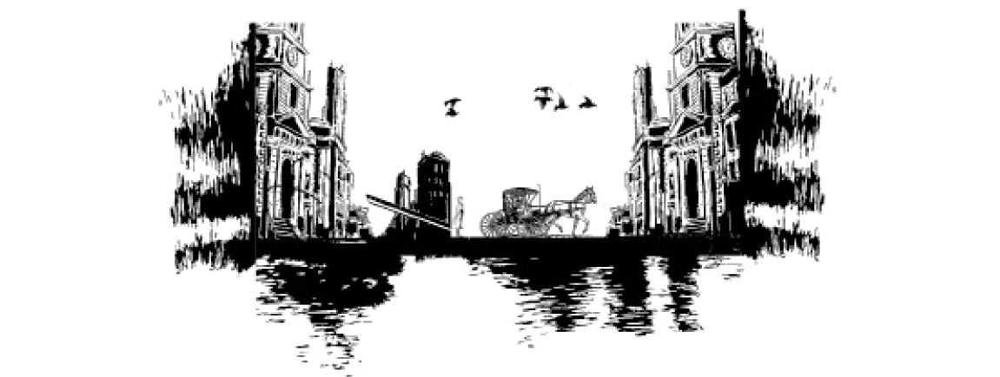
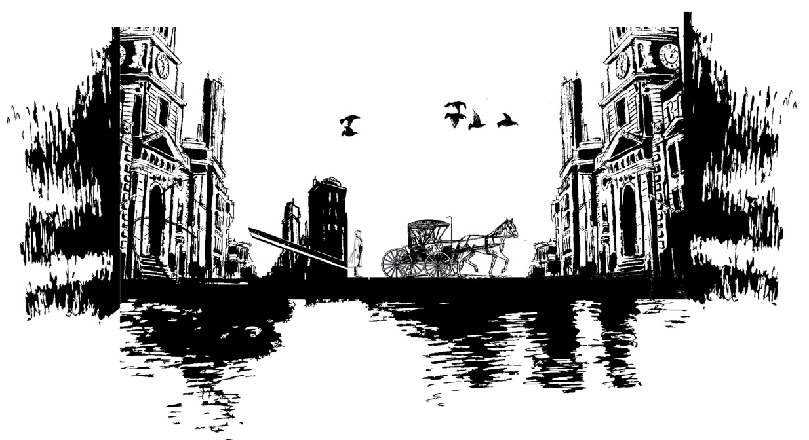
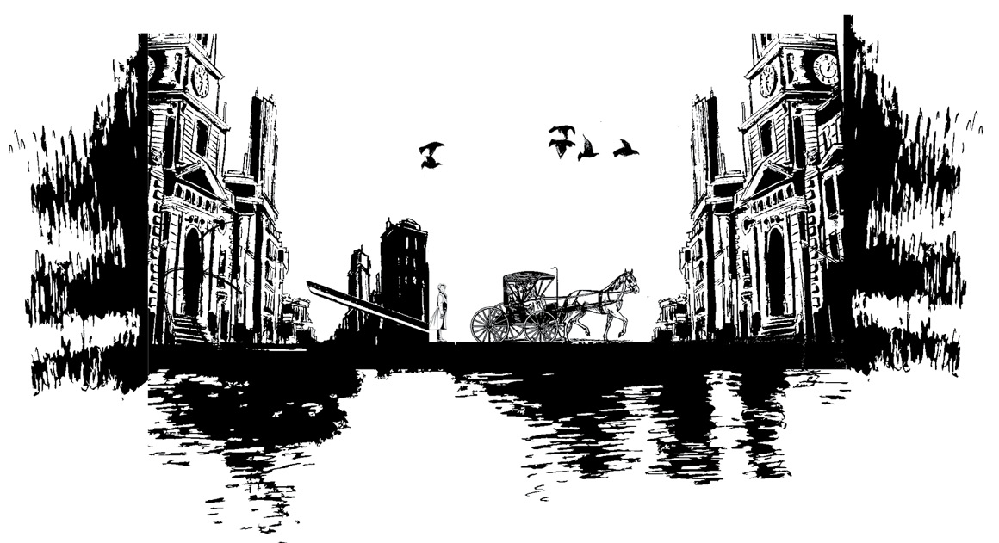
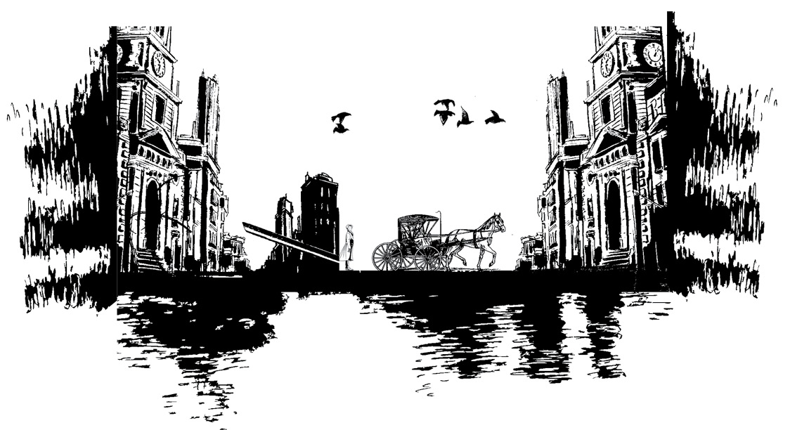
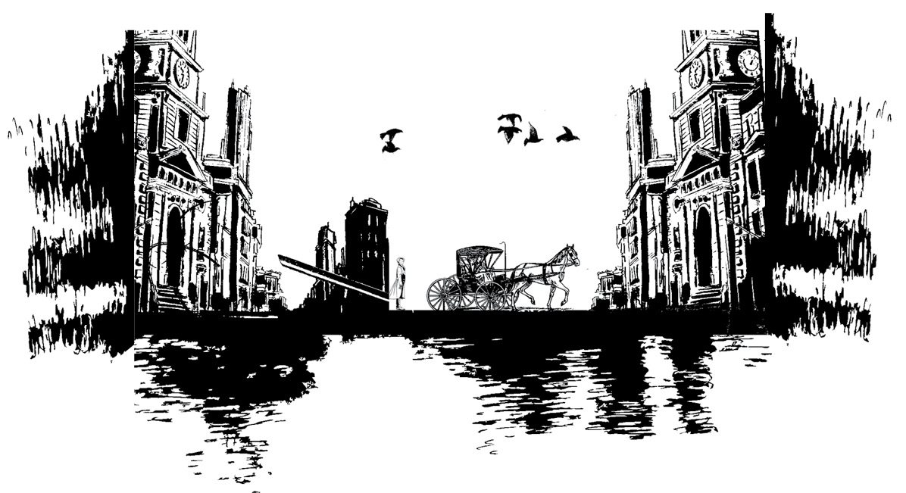
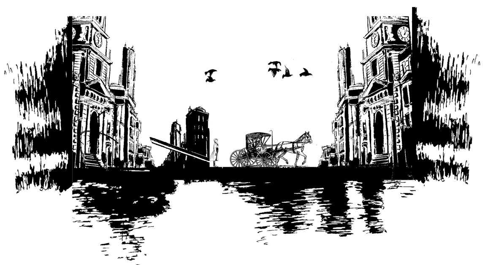
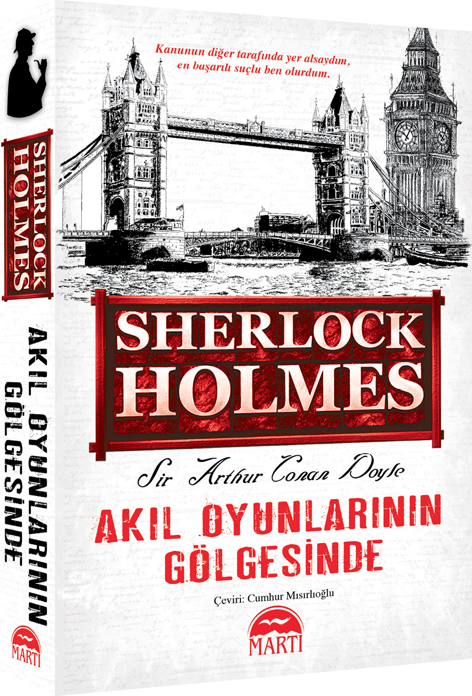

I.BÖLÜM


“Watson, korkarım gitmek zorundayım,” dedi Holmes, bir sabah kahvaltıdan sonra.
“Nereye peki?”
“King’s Pyland, Dartmoor’a.”
Buna hiç şaşırmamıştım. Aslını sorarsanız, bütün İngiltere’yi çalkalayan bu esrarengiz vakaya nasıl oldu da hâlâ bulaşmadı diye merak ediyordum zaten. Dostum odada bü-tün gün çenesi göğsünde, kaşlarını çatmış, piposunu art arda doldurarak bir ileri bir geri yürümüş ve yine her zamanki gibi bütün sorularımı ve sözlerimi duymazdan gelerek düşüncele-re dalmıştı. Gelen her gazete, şöyle bir göz atıldıktan sonra bir kenara atılmıştı. Ama ne kadar sessiz olsa da aklından neler geçtiğini tahmin edebiliyordum. Onun dedektiflikteki şöhretine meydan okuyabilecek tek bir vaka vardı; o da Wessex Kupası’nın favori atının kayboluşu ve antrenörünün trajik ölümüydü. Bu yüzden olay yerine gitmek istediğini söy- lemesi beni hiç şaşırtmadı.
“Eğer sana ayak bağı olmazsam ben de gelmekten memnunluk duyarım,” dedim.
“Sevgili Watson, gelmekle büyük bir iyilik yapmış olursun. Bu iyiliğin yanı sıra sanırım zamanını da boşuna harcamış olmayacaksın; çünkü bu vaka tamamen benzersiz olacak gibi görünüyor. Acele etmezsek treni kaçıracağız. Sana her şeyi yolda anlatırım. Bu arada, dürbününü de yanına alırsan sevinirim.”
Böylece bir saat içinde kendimi birinci sınıf vagonda, Exeter’e giderken buldum. Sherlock Holmes bir süre, Paddington’dan aldığı yeni gazetelere göz attı. Daha sonra son gazeteyi koltuğunun altına sıkıştırarak puro kutusunu bana uzattı.
“İyi gidiyoruz,” dedi dışarı bakıp saatini kontrol ettikten sonra. “Şu anki hızımız saatte elli üç buçuk mil.”
“Ben çeyrek mil işaretlerini görmedim,” dedim.
“Ben de görmedim. Ama bu hattaki telgraf direkleri altmış metre aralıklarla dikildiğine göre hesap ortada. John St-raker cinayeti ve Gümüş Şimşek’in kayboluşuyla ilgili mese- le hakkında bilgin vardır herhalde.”
“Konuyla ilgili Telegraph ve The Chronicle’da ne okuduysam o kadarını biliyorum.”
“Watson, bu öyle bir vaka ki, yapılması gereken yeni delil bulmaktan çok eskileri ayıklamak olacak. Cinayetin benzersizliği ve bir şekilde bağlantılı insan sayısının çok olu-şu yüzünden fazlasıyla tahmin ve hipotez üretilmiş zaten. İşin zorluğu, gerçeklerin çerçevesini teorisyenlerin ve gazetecile-rin süslemelerinden ayırabilmekte yatıyor. Bu sağlam temelleri bulduktan sonra bize kalan, bütün bu esrarın çevresinde dönen sonuçları bulmak olacaktır. Salı akşamı, hem atın sahi-bi Albay Ross’tan hem de bu vakayla ilgilenen Müfettiş Gregory’den yardımımı isteyen telgraflar aldım.”
“Salı akşamı ha!” diye atıldım. “Ve bugün perşembe. Dün neden ilgilenmedin?”
“Çünkü yanıldım, sevgili Watson. Bu beni senin hikâye-lerinden tanıyanları şaşırtacaktır belki ama sık sık yaptığım bir hatadır. İngiltere’nin bu en meşhur atının, özellikle kuzey Dartmoor gibi, yerleşimin seyrek olduğu bir yerde uzun süre saklı kalamayacağını düşündüm. Dün bütün gün atın bulunduğu ve kaçıran kişiyle John Straker’ın katilinin aynı kişiler olduğu haberini bekleyip durdum ama bir gün daha geçip de, genç Fitzroy Simpson’un tutuklanışı dışında hiçbir gelişme olmadığını görünce harekete geçme zamanının geldiğine ka-rar verdim. Ama dün boşa geçmedi diyebilirim.”
“Demek bir teori oluşturdun.”
“En azından vakanın temel gerçeklerini bir ucundan yakaladığım söylenebilir. Şimdi bunları sana teker teker anlatacağım; çünkü birine anlatınca her şey daha da yerli yerine oturuyor. Kaldı ki, bulunduğumuz noktayı açıklamadan senin yardımını beklemek anlamsız olur.”
Arkama yaslanıp puromu tüttürerek Holmes’u dinlemeye hazırlandım. O da ilgiyle öne doğru eğilip, uzun ve in-ce işaret parmağıyla hayali çizgiler çizerek bizi bu yolculuğa iten olaylar zincirini anlatmaya başladı.
“Gümüş Şimşek, Somomy’nin soyundan geliyor ve ün-lü ataları gibi parlak bir geçmişe sahip. Şu anda beş yaşında ve şanslı sahibi Albay Ross’a büyük ödüller kazandırdı. Bu talihsiz olaya kadar Wessex Kupası’nın favorisiydi ve bire üç veriyordu. Ama bahisçileri şimdiye kadar hiç hayal kırıklığına uğratmadığı için, bu oranlara rağmen ortalıkta inanılmaz rakamlar dönüyordu. Böyle düşünürsek, Gümüş Şim- şek’in salı günü potayı ilk geçen olmaması için elinden gele-ni yapacak birçok adam olduğu kesin.
“Ama King’s Pyland, yani albayın ahırı da bu gerçeğin farkındaydı muhakkak. Favoriyi korumak için her türlü ön-lem alınmıştı. Antrenör John Straker, tartıda ağır gelene ka-dar Albay Ross’un atlarına binmiş eski bir jokey. Albay için beş yıl jokeylik, yedi yıl da antrenörlük yapmış ve her zaman çalışkan ve sadık bir yardımcı olmuş. King’s Pyland dört atlık küçük bir ahır olduğu için Straker’ın altında sadece üç kişi çalışıyormuş. Gece biri nöbet tutarken diğerleri de uyuyormuş. Evli olan John Straker ise ahırların iki yüz metre ka-dar yukarısındaki villasında kalıyormuş. Hiç çocukları olma- dığı için evde karısı ve bir hizmetçi kız dışında kimse yokmuş. Yarım mil kuzeyde, sakatların ve yaşlıların kalıp temiz Dartmoor havası alabilmeleri için yapılmış birkaç villa dışında köy oldukça tenha. Köyün yanındaki fundalık arazinin iki mil ötesinde de, Lord Backwater’a ait, Silas Brown tarafından idare edilen Mapleton ahırları bulunuyor. Fundalıkta birkaç çingene dışında kalan yok. Geçen pazartesi gecesi olan olaya kadar genel durum böyle.
“O akşama gelirsek, atlar her zamanki gibi çalıştırılıp beslenmiş ve ahırlar saat dokuzda kilitlenmiş. Yamaklardan ikisi antrenörün evine gidip akşam yemeklerini yerken, üçün-cü yamak Ned Hunter nöbete kalmış. Saat dokuzu biraz geçe hizmetçi kız Edith Baxter, Ned Hunter’ın baharatlı koyun etinden oluşan yemeğini ahıra götürmüş. Kural olarak nöbet-teyken içki içmeleri yasak olduğundan, yemeğin yanında başka bir şey yokmuş. Ahıra giden yol, fundalıktan geçtiği ve hava da karanlık olduğu için hizmetçi kızın elinde bir fener varmış.
“Edith Baxter ahırlara otuz metre kadar uzaklıktayken, karanlıktan bir adam çıkıp kızın durmasını söylemiş. Adam biraz daha yaklaşınca kız onu fenerin ışığında daha iyi görmüş. Üstünde gri tüvit bir takım elbise, kumaş şapka ve tozlukları, elinde de tokmaklı ağır bir baston varmış. Adamın yüzünün solgunluğu ve asabi tavırları kızın dikkatini çekmiş. Yaşının otuzun üstünde olduğunu düşünüyor.
“ ‘Burası neresi acaba?’ diye sormuş adam. ‘Tam fundalıkta kalıp kalmamayı düşünüyordum ki, elinizdeki fenerin ışığını gördüm.’
“ ‘King’s Pyland ahırları civarındasınız,’ demiş kız.
“ ‘Gerçekten mi? Ne şans!’ diye atılmış adam. ‘Herhalde orada geceleri kalan birileri oluyordur. Belki bu elinizdeki de onun yemeğidir. Pekâlâ, yeni bir elbise parası kazanmaya ne dersiniz?’ diyerek yeleğinin cebinden katlanmış, beyaz bir kâğıt parçası çıkarmış. ‘Eğer çocuğun bunu almasını sağlarsanız paranın satın alabileceği en güzel elbise sizindir.’
“Kız bunun üzerine korkarak adamın yanından kaçmış ve her zaman yemeği teslim ettiği pencereye doğru koşmuş. Hunter içerideki küçük bir masada oturup bekliyormuş zaten. Tam ona neler olduğunu anlatacakken yabancı yine ortaya çıkmış.
“ ‘İyi akşamlar,’ demiş, pencereden içeri bakarak, ‘sizin-le konuşmak istediğim bir şey var.’ Kız, konuşurken adamın elinde küçük bir kâğıt paket gördüğünü söylüyor.
“ ‘Ne işiniz var burada?’ diye sormuş Hunter.
“ ‘Cebinizi doldurabilecek bir iş,’ demiş yabancı. ‘Wessex Kupası’nda iki atınız koşuyor: Gümüş Şimşek ve Bayard. Bana bilgi verirseniz siz de kazanırsınız. Koşuda Bayard’ın Gümüş Şimşek’e fark atacağı ve ahırın onun üzerine para yatırdığı doğru mu?’
“ ‘Demek sen de o tüyoculardan birisin!’ diye bağırmış yamak. ‘Senin gibilere King’s Pyland’de ne yapılır göstereyim de gör bakalım,’ deyip ayağa fırlamış ve köpeği çözme-ye gitmiş. Kız da eve kaçmış ama koşarken arkasına baktı- ğında yabancının pencereden içeri eğildiğini görmüş. Hunter bir dakika sonra geri döndüğünde adamın gittiğini görmüş ama bütün aramalarına rağmen adama ait herhangi bir ize rastlamamış.”
“Bir dakika Holmes,” diye araya girdim. “Yamak çıkar-ken kapıyı kilitlememiş mi?”
“Mükemmel Watson, mükemmel!” diye mırıldandı Holmes. “Bu nokta benim de ilgimi çektiği için dün Dartmoor’a özel bir telgraf gönderdim. Ama öğrendiğimize göre çocuk çıkarken kapıyı da kilitlemiş. Ve şunu da ekleyeyim; pence-re, bir adamın geçemeyeceği kadar küçükmüş.
“Neyse, devam edeyim; Hunter, arkadaşları gelene ka-dar beklemiş ve sonra da antrenöre bir mesaj göndererek olanları anlatmış. Straker bu haber üzerine huzursuzlanmış. Bayan Straker gece saat birde uyandığında kocasının giyinmekte olduğunu görmüş. Karısının soruları üzerine de atları merak ettiğini, gidip bir bakmak istediğini söylemiş. Kadın dışarıda sağanak yağmur olduğunu söyleyerek gitmemesini söylese de Straker paltosunu giyip çıkmış.
“Bayan Straker sabah yedide kalktığında kocasının hâlâ dönmediğini görüp endişeye kapılmış. O da aceleyle giyinip hizmetçisini çağırmış ve birlikte ahırlara gitmişler. Gittiklerinde kapı açıkmış. İçeride Hunter baygın bir halde bir sandalyeye yığılmış. Favorinin ahırı boşmuş ve antrenörden de iz yokmuş.
“Bunun üzerine yukarıda uyuyan iki yamağı da uyandırmışlar. Her ikisinin de uykusu ağır olduğu için gece hiçbir şey duymamışlar. Güçlü bir ilacın etkisinde olduğu için, ne kadar uğraşırlarsa uğraşsınlar Hunter’ı bir türlü uyandıramamışlar. Bunun üzerine iki yamak ve kadınlar onu orada bırakıp kayıpları aramaya çıkmışlar. Antrenörün, atı erkenden çalışmaya götürdüğünü umarak aramaya devam etmişler. Ama çevredeki bütün fundalıkların görülebildiği bir tepeye çıkmalarına rağmen attan bir iz dahi görememişler. Ama baş-ka bir şey varmış.
“Ahırlardan çeyrek mil kadar ötedeki çalılıklarda John Straker’ın paltosunu bulmuşlar. Hemen yakınlardaki bir çukurun dibinde de talihsiz antrenörün cesedi yatıyormuş. Kafatası ağır bir silahla vurularak parçalanmış ve baldırında da çok keskin bir aletle açıldığı belli olan uzun bir yara varmış. Anlaşılan Straker kolay pes etmemiş. Sağ elinde kana bulanmış kısa bir bıçak, sol elindeyse kırmızılı siyahlı, ipek bir kravat bulmuşlar. Hizmetçinin ifadesine göre, bu kravat önceki akşam ahırları ziyaret eden yabancının boynundakinin aynısıymış. Sonradan Hunter da ayılınca kravatın sahibini tespit etmiş. Emin olduğu bir başka şey de adamın ondan kurtulmak için yemeğine ilaç kattığıymış. Kayıp ata gelince; çamurdaki izlere bakılırsa o da boğuşma sırasında oradaymış. Ama büyük bir ödül koyulmasına ve Dartmoor’un bütün çingeneleri peşine düşmüş olmasına rağmen attan haber yok. Son bir şey daha; Hunter’ın yemeğinde toz afyon bulunmuş ve o akşam herkes aynı yemeği yemiş olmasına rağmen Hunter’dan başka kimseye bir şey olmamış.
“İşte, bütün ön tahminlerden arınmış haliyle gerçekler böyle Watson. Şimdi de polisin bu meselede neler yaptığına bakalım.
“Vakayı üstlenen Müfettiş Gregory oldukça başarılı bir polis. Eğer hayal gücü biraz daha geniş olsaydı çok daha iyi konumlara yükselebilirdi. Olay yerine gelir gelmez, doğal olarak ilk akla gelen şüpheliyi tutuklamış. Daha önce de söylediğim gibi çevredeki villalardan birinde oturduğu için onu bulmak zor olmamış. Kimden bahsettiğimi anlamışsındır: Fitzroy Simpson. İyi bir aileden gelen, eğitimli biri. Ama yarışlarda bir servet kaybettikten sonra şu anda Londra kulüple-rine bültenler hazırlayarak geçiniyor. Bahis kayıtlarına bakıl- dığında, favoriye karşı beş bin sterlin yatırdığı görülmüş. Tutuklandığında King’s Pyland atları hakkında tüyo almak için Dartmoor’a gittiğini, hatta ikinci favori Desborough için de Silas Brown’un işlettiği Mapleton’a gittiğini itiraf etmiş. Önceki akşamki davranışlarını da inkâr etmeye kalkışmamış. Kötü bir niyeti olmadığını, sadece ilk elden tüyo almak istediğini ifade etmiş. Ama kravatı gösterildiğinde rengi atmış; neden maktulün elinde olduğu sorulduğunda bir şey diyeme-miş. Islak elbiseleri önceki gece fırtınada dışarıda kaldığını gösteriyormuş. Ayrıca Penang tarzı kurşun kaplama bastonu antrenörün aldığı şiddetli darbelerin kaynağı olabilirmiş. Ama saldırganın Straker’ın bıçağından yaralanmış olması gerektiği halde Simpson’un vücudunda yara izine rastlanma-mış. İşte kısaca böyle, Watson. Eğer bu meseleye biraz ışık tutabilirsen çok sevinirim.”
Holmes’un her zamanki açıklığıyla anlattığı bu hikâyeyi ilgiyle dinlemiştim. Ama deliller bana tanıdık gelmiş olması-na rağmen olaydaki önemlerini ve birbirleri arasındaki ilgi-yi çıkaramamıştım.
“Straker’ın boğuşma sırasında kendi kendini yaralamış olması mümkün değil mi?” diye fikrimi belirttim.
“Mümkünden de öte muhtemel,” dedi Holmes. “Bu durumda sanığın lehine olan birkaç nokta da ortadan kalkıyor.”
“Ama ben hâlâ polisin bu vakada nasıl bir teori oluşturduğunu anlayabilmiş değilim,” dedim.
“Korkarım, oluşturulan bütün teorileri çürütmek için kuvvetli kanıtlar var,” diye cevap verdi Holmes. “Polis, şu Fitzroy Simpson’un nöbetçi yamağı ilaçla uyuttuğunu ve bir şekilde anahtarı bulup ahır kapısını açarak atı kaçırdığını düşü-nüyor olmalı. Atın dizginleri kayıp olduğuna göre, atı Simp- son dizginliyor, sonra da kapıyı açık bırakıp atla birlikte fundalığa gidiyor ve yolda antrenörle karşılaşıyor. Bu karşılaşma sırasında haliyle aralarında kavga çıkıyor. Simpson ağır bastonuyla antrenörün beynini dağıtıyor ama Straker’ın bıçağından en ufak bir yara bile almıyor. Sonra da atı ya gizli bir yere götürüyor ya da at zaten boğuşma sırasında kaçıyor; bu durumda fundalıkta bir yerlerde dolaşıyor olmalı. Herhalde polis böyle düşünüyordur. Bu pek mümkün değilmiş gibi görünse de diğer bütün açıklamalar da aynı şekilde imkânsız bence. Her şeye rağmen olay yerine gidince meseleyi kafam-da tartmaya çalışacağım. Ve o zamana kadar başka bir şey düşünmenin anlamı yok.”
Geniş Dartmoor arazisinin ortasında, bir kalkanın kabartması gibi duran Tavistock’a vardığımızda hava kararmak üzereydi. İstasyonda bizi iki kişi bekliyordu. Biri, aslan yelesi gibi saçları ve delici mavi gözleriyle uzun boylu, sarışın bir adam; diğeri de frak ceketli ve tozluklu, kısa favorili, gözlüklü, kısa boylu, kıpır kıpır bir adamdı. İlki, İngiliz müfettişlik servisinde ün salmış Müfettiş Gregory; diğeri de meş- hur at sahibi Albay Ross’tu.
“Geldiğiniz için teşekkür ederim Bay Holmes,” dedi al-bay. “Gerçi müfettiş her şeyi halletti ama ben, zavallı Straker’ ın kanı yerde kalmasın ve atım bir an önce bulunsun diye her taşın altına bakılsın istiyorum.”
“Yeni gelişmeler var mı?” diye sordu Holmes.
“Ne yazık ki fazla ilerleyemedik,” dedi müfettiş. “Hava kararmadan olay yerini görmek isteyeceğinizi düşündüğümüzden bir araba ayarladık. İsterseniz detayları yolda konuşalım.”
Çok geçmeden dördümüz arabaya binip bu eski ve tuhaf Devonshire şehrinin sokaklarından geçmeye başladık. Müfettiş Gregory vakayla yakından ilgili olduğu için birçok açıklamada bulunuyor, Holmes ise pek araya girmeden dikkatle dinliyordu. Albay Ross arkasına yaslanmış, şapkasını gözünün önüne çekmiş, kollarını kavuşturmuş oturuyordu. Gregory’nin teorisi Holmes’un tahmin ettiğinin aynısıydı.
“Fitzroy Simpson’un çevresindeki ağ gittikçe daralıyor. Bence aradığımız adam o. Ama deliller her ne kadar tatmin edici olsa da elbette ki yeni gelişmelerle gidişat tamamen değişebilir.”
“Straker’ın bıçağı hakkında ne öğrendiniz?”
“Kendi kendini yaraladığı neredeyse kesin.”
“Buraya gelirken dostum Dr. Watson da aynı tahminde bulundu. Bu doğruysa, Simpson denen adamın aleyhine demektir.”
“Şüphesiz. Üstünde ne bir bıçak ne de bir yara izi bulun-du. Aleyhine deliller çok kuvvetli. Bir kere, favorinin kaybolması onun işine gelirdi. Yamağın uyutulması konusunda şüpheli, fırtınada kaldığı kesin, yanında ağır bir silah vardı ve kravatı maktulün elinde bulundu. Bütün bunlar mahkemeye gitmek için yeterli.”
Holmes kafasını salladı. “Biraz akıllı bir avukat bütün delilleri çürütür,” dedi. “Atı ahırdan neden çıkarsın ki? İsteseydi, hayvanı orada da yaralayamaz mıydı? Yanında anahtar bulundu mu? Toz afyonu ona kim sattı? Her şeyden önce, onun gibi, bölgeye yabancı biri atı nereye saklayabilir? Özellikle söz konusu Gümüş Şimşek ise… Sanığın kendisi, hizmetçiye verdiği kâğıdı nasıl açıklıyor?”
“On sterlinlik bir banknot olduğunu söylüyor. Cüzdanında da bulundu. Ama diğer şüpheler göründükleri kadar sağlam değil Bay Holmes. Öncelikle, adam bölgenin yabancısı değil. İki kez yazın Tavistock’ta kalmış. Afyon muhtemelen Londra’dan alınmış. Anahtar, işi bittikten sonra bir yere atılmış olabilir. At ise fundalıklardaki çukurların veya eski madenlerin birinin dibinde olabilir.”
“Kravat hakkında ne diyor?”
“Kendisine ait olduğunu kabul etmekle birlikte kaybetmiş olduğunu ifade ediyor. Ama atı ahırdan çıkardığına dair yeni bir gelişme oldu.”
Holmes merakla doğruldu.
“Pazartesi gecesi, cinayetin işlendiği yerin bir mil kadar ötesinde çingenelerin kamp kurduğuna dair izler bulduk. Salı günü de gitmişler. Şimdi, Simpson’la bu çingenelerin anlaştığını düşünürsek, atı ahırdan çıkardıktan sonra onlara vermiş olamaz mı?”
“Bu mümkün.”
“Fundalıkta bu çingeneleri aratıyorum. Ayrıca, Tavistock’taki ve on mil çapındaki bir alandaki bütün ahırlar ve evler de aranıyor.”
“Yakınlarda bir hara daha var galiba.”
“Evet, bunu da gözden kaçırmamamız gerekiyor. Onların atı Desborough bahislerde ikinci sırada olduğu için favorinin kaybolması onların da işine gelirdi. Antrenör Silas Brown’ un yarışa yüklü miktarlarda para yatırdığı ve zavallı Straker’la aralarının çok iyi olmadığı biliniyor. Ama onların ahırlarını inceledikten sonra olayla bir bağlantılarını bulamadık.”
“Peki, şu Simpson’un Mapleton harasıyla bir bağlantısı bulundu mu?”
“Hayır.”
Holmes arkasına yaslandığında konuşma da sona ermiş oldu. Zaten birkaç dakika sonra da arabamız yol kenarındaki kırmızı kiremitli villalardan birinin önünde durdu. Biraz öte-de, bir padoğun arkasında gri bir bina duruyordu. Sadece Tavistock’un kuleleri ve Mapleton ahırlarıyla bozulan düzlük, ufuk çizgisine kadar uzanıyordu. Holmes dışında hepimiz arabadan indik. O ise oturduğu yerde gözlerini gökyüzüne dikerek düşüncelere dalmıştı. Koluna dokununca şiddetle irkildi ve arabadan indi.
“Özür dilerim,” dedi, şaşırmış görünen Albay Ross’a dönerek. “Dalmışım.” Gözündeki ışık ve hareketlerindeki bastırılmış heyecandan anladığım kadarıyla yeni bir ipucu bulmuştu.
“Herhalde hemen olay yerine gitmek istersiniz Bay Holmes?” dedi Gregory.
“Şimdilik burada biraz daha durup birkaç soru sormayı tercih ederim. Straker geri getirildi, değil mi?”
“Evet, yukarıda yatıyor. Soruşturma yarın yapılacak.”
“Bay Straker uzun bir süredir sizin hizmetinizdeydi, de-ğil mi Albay Ross?”
“Her zaman çok iyi bir yardımcı olmuştur.”
“Cesedi bulduğunuzda ceplerini aramışsınızdır herhalde, Müfettiş.”
“Eğer görmek isterseniz ceplerindeki her şey oturma odasında duruyor.”
“Memnun olurum.” Hepimiz salona girip ortadaki yuvarlak masanın etrafına oturduk. Müfettiş metal bir kutuyu açarak içindekileri çıkardı: Ufak bir parça mum, gül ağacından yapılmış bir pipo, fok derisi bir kesenin içinde yarım tabaka Cavendish tütünü, altın zincirli gümüş bir saat, beş altın sterlin, alüminyumdan bir kalem kutusu, birkaç evrak ve üstünde “Weiss & Co. Londra” yazan fildişi saplı bir bıçak.
“Bu çok özel bir bıçak,” dedi Holmes, eline alıp dikkat-le inceleyerek. “Üstündeki kan lekelerinden anladığım kada-rıyla maktulün elinde bulunan bıçak buydu sanırım. Sizin bı- çaklardan biri mi bu Watson?”
“Katarakt bıçağı dediklerimizden,” diye cevap verdim.
“Ben de öyle düşünmüştüm. Çok ince işler için yapılmış ve cepte katlamadan taşınması gereken bir bıçağı yanına alması ilginç.”
“Cesedin yanında, keskin ucu kapatmaya yaradığı anlaşılan bir mantar bulduk,” dedi müfettiş. “Karısının dediğine göre, bıçak yatak odasında masanın üzerinde duruyormuş ve Straker çıkarken yanına almış. Pek iyi bir silah değil ama o anda bulabildiği tek şey bu olmalı.”
“Evet, muhtemelen. Peki ya evraklar?”
“Üçü samancılardan alınma faturalar. Biri Albay Ross’ un talimatlarını bildiren bir not. Şuradaki de Bond Sokağı’ ndan, şapkacı Bayan Lesurier’den Bay Derbyshire adına kesilmiş otuz yedi sterlinlik bir fatura. Bayan Straker’ın ifadesine göre, bu Derbyshire kocasının bir arkadaşıymış ve ara sıra onların adresini kullandığı oluyormuş.”
“Bayan Derbyshire’ın pahalı zevkleri varmış anlaşılan,” diye araya girdi Holmes, faturaya bakarak. “Tek bir parça giyecek için epeyce yüklü bir rakam bu. Ama neyse, cevap almamız gereken başka sorumuz kalmadığına göre cinayet yerine gidebiliriz.”
Oturma odasından tam çıkmıştık ki, koridorda bir kadın ileri atılarak müfettişi kolundan yakaladı. Yüzü ince ve zayıftı, korkunun izlerini taşıyordu.
“Yakaladınız mı? Onları buldunuz mu?” diye sordu, inleyerek.
“Hayır, Bayan Straker. Ama Bay Holmes bize yardım etmek için Londra’dan geldi. Elimizden geleni yapacağımıza emin olabilirsiniz.”
“Sizinle kısa bir süre önce Plymouth’daki bir partide tanışmamış mıydık Bayan Straker?” diye sordu Holmes.
“Hayır, Beyefendi, yanılıyorsunuz.”
“Hadi canım! Buna yemin edebilirim. Üzerinizde de devekuşu tüyü süslü, külrengi, ipek bir elbise vardı.”
“Tarifinize benzer bir elbisem hiç olmadı, Beyefendi,” diye cevap verdi kadın.
“Peki o zaman,” dedi ve özür dileyerek müfettişi takip etti. Düzlükte kısa bir yürüyüşten sonra cesedin bulunduğu çukura vardık. Çukurun hemen dibinde de paltonun asılı bulunduğu çalılık vardı.
“O gece hiç rüzgâr yoktu herhalde,” dedi Holmes.
“Hayır, ama sağanak yağmur vardı.”
“O zaman bu palto buraya uçarak gelmemiş, bizzat yerleştirilmiş.”
“Evet, çalılığa serilmişti.”
“Bakın, bu beni epey meraklandırıyor işte. Herhalde pazartesi gecesinden beri buraya basmayan kalmamıştır.”
“Hayır, çukurun yanına bir örtü örttük ve ona bastık sadece.”
“Çok güzel.”
“Bu elimdeki torbada Straker’ın giydiği çizmelerin ve Fitzroy Simpson’un ayakkabılarının birer teki ve Gümüş Şimşek’in nalları var.”
“Sevgili Müfettiş, kendinizi aşıyorsunuz!” Holmes torbayı aldı, çukura indi ve örtüyü ortaya çekti. Sonra yüzüstü uzanıp önündeki izleri dikkatle inceledi. “Şuna da bakın!” diye bağırdı heyecanla. Yarısı yanmış bir kibrit sallıyordu elinde. Çamura öyle bulanmıştı ki, ilk bakışta bir odun parçasına benziyordu.
“Nasıl oldu da gözümden kaçtı, anlayamıyorum,” dedi müfettiş. Kızdığı belliydi.
“Zaten görünmüyordu; çamura gömülmüştü. Ben onu gördüm, çünkü onu arıyordum.”
“Nasıl? Onu bulmayı mı umuyordunuz yani?”
“Bu ihtimali göz ardı edemezdim.”
Holmes sonra torbadan çizmeleri çıkararak yerdeki izlerle karşılaştırdı. Sonra da çukurdan çıkıp çalılıkların arasında sürünmeye başladı.
“Korkarım daha başka iz kalmadı,” dedi müfettiş. “Yüz metrelik bir alanı karış karış araştırdım.”
“Sahi mi?” dedi Holmes ayağa kalkarak. “Ben de saygı-sızlık edip bir kere daha araştırmayayım o zaman. Ama yine de, yarın için hazırlıklı olmak adına arazide bir yürüyüşe çıkmak isterim. Bu nalı da şans getirsin diye yanıma alacağım.”
Dostumun bu sessiz ve sistematik çalışmasını ne zaman-dır sabırsızlıkla izleyen Albay Ross saatine baktı. “Siz benimle gelirseniz sevinirim, Müfettiş,” dedi sonra. “Tavsiye- nizi almak istediğim birkaç konu var. Özellikle de Kupa’dan çekilmemiz gerekip gerekmediğini merak ediyorum.”
“Buna kesinlikle gerek yok,” diye atıldı Holmes. “Ben olsam çekilmezdim.”
Albay saygıyla eğildi. “Bu tavsiyeniz için çok teşekkür ederim, Beyefendi,” dedi. “Yürüyüşünüz bittikten sonra bizi merhum Straker’ın evinde bulabilirsiniz. Sonra da birlikte Tavistock’a gideriz.”
Müfettişle ikisi geri dönerken biz arazide yürümeye başladık. Güneş, Mapleton harasının ardından batmak üzereydi. Önümüzdeki geniş ova, akşam güneşiyle birlikte altın sarısı bir renge bürünmüştü. Ama derin düşüncelere dalmış olan dostum bu muhteşem manzaranın farkında değildi elbette.
“Şu yoldan gidiyoruz, Watson,” dedi sonunda. “Şu an için, John Straker’ı kim öldürdü sorusunu bir yana bırakıp atı bulmalıyız. Şimdi, hayvanın cinayet sırasında veya sonra-sında kaçtığını göz önüne alırsak, esas soru şu: At nereye git-ti? Atlar sosyal hayvanlardır. Kendi başına bırakıldığında iç- güdüleri onu King’s Pyland’e ya da Mapleton’a geri götürmüş olmalı. Eğer ovada dolaşıyor olsaydı şimdiye kadar ke-sin görülürdü. Çingeneler onu neden kaçırsın ki? Bu insanlar belanın adını duyduklarında sıvışacak delik ararlar. Başları polisle derde girsin istemezler. Hem böyle bir atı satamazlar da. Risk büyük, getirisi hiç yok. Burası kesin.”
“Nerede o zaman?”
“King’s Pyland’e veya Mapleton’a gitmiş olması gerektiğini söylemiştim. Ama King’s Pyland’de olmadığına gö-re Mapleton’da olmalı. Hipotez olarak bunu alalım; bakalım bizi nereye götürecek. Ovanın bu kısmı, müfettişin de dediği gibi sert ve kuru. Ama şu ileride gördüğün büyük çukur pazartesi gecesi suyla dolmuştur. Eğer buraya kadar her şey doğruysa at oradan geçmiş olmalı. Bu durumda izleri arayacağımız yer orası.”
Yürürken konuşmaya devam ettik ve birkaç dakika için-de söz konusu çukura vardık. Holmes’un isteği üzerine ikiye ayrıldık. Ben sağa, o da sola yöneldi. Ama elli adım gitmemiştim ki Holmes bağırarak gelmemi işaret etti. Önündeki yumuşak toprakta atın izleri uzanıyordu ve izler cebindeki nala da uyuyordu.
“İşte hayal gücünün önemi,” dedi Holmes. “Gregory’de olmayan da bu. Biz olanları hayal etmeye çalıştık, buna göre hareket ettik ve sonunda haklı olduğumuzu gördük. Devam edelim.”
Çamurlu zemini geçerek kuru ve sert çimenlikli bir yere geldik. Zemin yine eğim kazanınca izleri yeniden yakaladık. Sonra yarım mil boyunca izler görünmez oldu ama Mapleton’a yakın bir noktada tekrar ortaya çıktı. İlk gören Holmes oldu ve gururla bana gösterdi. Atın izlerinin yanında bir de insan izi vardı.
“Demek at başlangıçta yalnızmış,” diye atıldım.
“Kesinlikle. Başlangıçta yalnızmış. Şuna bak!”
Bu çifte iz tamamen dönüp King’s Pyland’e yöneliyor-du. Holmes keyifle ıslık çaldı ve biz yine izlerin peşine düştük. Holmes’un gözleri yola dikiliydi ama ben bir an yana baktığımda aynı izlerin ters yönde geri geldiğini fark ettim hayretle.
“Bir tane de sana Watson,” dedi Holmes, ben izleri işaret edince. “Bizi uzun bir yürüyüşten kurtardın. Haydi bu ye-ni izleri takip edelim.”
Fazla gitmemize gerek kalmadı zaten. İzler Mapleton ahırlarının kapısına giden asfalt yolda bitiyordu. Kapıya iyice yaklaşmıştık ki, seyislerden biri:“Burada serserilere yer yok,” diyerek önümüze çıktı.
“Sadece tek bir soru sormak istiyorum,” dedi Holmes, elini yelek cebine sokarak. “Bay Silas Brown’u yarın sabah beşte görmeye gelsem çok mu erken olur?”
“O saatte ayakta olacak birisi varsa o da Bay Brown’dur. Her zaman en erken o kalkar. Ama bakın, zaten kendisi de geliyor. Sorularınıza kendisi cevap verecektir. Aman Beyefendi, ne yapıyorsunuz? Paranıza dokunduğumu görürse bu benim sonum olur. Belki sonra.”
Sherlock Holmes cebinden çıkardığı parayı tekrar cebine koymuştu ki, elinde bir avcı kamçısıyla, kızgın bakışlı yaşlıca bir adam çıkageldi.
“Ne oluyor Dawson?” diye bağırdı. “Sana dedikodu yok demedim mi? Haydi işinin başına! Ya siz? Sizin ne işiniz var burada?”
“Sizinle sadece on dakika konuşmak istiyorum sevgili Beyefendi,” dedi Holmes, en şirin ses tonuyla.
“Serserilerle konuşmaya ayıracak vaktim yok. Burada yabancı istemiyoruz. Ya hemen şimdi defolursunuz ya da köpeğim size yolu gösterir.”
Holmes öne eğilerek antrenörün kulağına bir şeyler fısıldadı. Adam bunun üzerine şiddetle irkilerek kapıya koştu.
“Yalan bu!” diye bağırıyordu. “Korkunç bir yalan!”
“Pekâlâ. Burada herkesin önünde mi tartışalım, yoksa odanıza mı geçelim?”
“Ah, dilerseniz içeriye girelim.”
Holmes gülümsedi. “Seni sadece birkaç dakika bekleteceğim, Watson,” dedi. “Pekâlâ Bay Brown, emrinizdeyim.”
Holmes ve antrenör yirmi dakika sonra dışarı çıktığında hava da yavaş yavaş kararmaya başlamıştı.Silas Brown’un bu kadar kısa sürede değiştiğini görmek inanılmazdı. Beti benzi atmış, alnında ter damlacıkları belirmiş, elindeki kamçı rüzgârdaki bir dal gibi titrer olmuştu. Bütün o zorba, kendinden emin tavırları gitmiş, bir köpek gibi dostumun peşinden gider olmuştu.
“Talimatlarınız yerine getirilecektir. Hem de eksiksiz olarak,” dedi.
“Hata olmasın,” dedi Holmes, çevresine bakınarak. Ant-renör, Holmes’un gözündeki tehdit dolu ifadeyi görünce iyi-ce sindi.
“Hayır, Efendim. Hiç hata olmayacak. Burada olacaktır. Öncelikle değiştireyim mi peki?”
Holmes bir süre düşündükten sonra kahkahayı patlattı. “Hayır, hayır, değiştirmeyin,” dedi. “Ben size yazarım. Ama numara yok, anlaştık mı?”
“Bana güvenebilirsiniz Efendim, hem de sonuna kadar.”
“Ben de öyle düşünüyorum. Neyse, yarın benden haber alırsınız artık,” dedi Holmes. Sonra da topukları üstünde dön-dü ve ona uzanan titrek eli görmezden gelerek King’s Py-land’e yöneldi.
“Hem zorbalık, hem korkaklık, hem de sinsiliğin böyle mükemmel bir karışımını Silas Brown’dan başkasında zor görürsün,” diye söze girdi Holmes dönüş yolunda.
“At onda demek.”
“Kabadayılık taslamaya çalıştı ama o sabah yaptıklarını öyle ayrıntısıyla anlattım ki onu izlediğimi sandı. İzlerin arasındaki garip, köşeli ayakuçlarını sen de fark etmişsindir. Brown’un çizmelerine tamı tamına uyuyorlardı. Ve düşünürsen tabii, bunu ondan başkası yapmaya cesaret edemezdi. Her zaman ilk kalkan o olduğu için düzlükte dolaşan atı da ilk o görmüştür herhalde. Sonra merak edip yanına gittiğinde, ata ismini veren alındaki o lekeyi hayretle fark etmiş olmalıydı. Bütün parasını yatırdığı atı geçebilecek olan tek atı görmek onun için büyük bir şanstı. Sonra ilk aklına gelen, atı King’s Pyland’e geri götürmek olmuştu ama şeytana uyup yarış bitene kadar Mapleton’da saklamanın bir yolunu bulmuştu. İşte her şeyi en ufak ayrıntısına kadar anlatınca diren-meyi bırakıp postunu kurtarmaya çalıştı.”
“Ama onların ahırları da aranmıştı.”
“Onun gibi yaşlı bir kurtta ne numaralar vardır, bir bilsen.”
“Peki ama atı onun elinin altında bırakmak tehlikeli de-ğil mi? Ata zarar vermek için pek çok sebebi var.”
“Sevgili dostum, ona gözü gibi bakacaktır. Atın kılına bile zarar vermeyecek. Çünkü bu tek şansı.”
“Albay Ross’un bu durumda pek merhamet göstereceğini sanmam.”
“İşi Albay Ross’a bırakacak değilim. Her şeyi kendi yöntemlerimle çözüp, albaya sadece bilmesi gerektiği kadarını söyleyeceğim. Resmi olmamanın avantajı da burada. Sen de fark ettin mi bilmem ama albayın tavırları bana fazlasıyla alaycı geldi. Şimdi eğlenme sırası bende. Sakın ona attan bahsetme.”
“Elbette, sen istemediğin sürece tek kelime söylemem.”
“Ve bütün bunlar, John Straker cinayetinin yanında hiç kalır.”
“Ve sen de asıl buna eğileceksin, değil mi?”
“Tam tersine, bu geceki trenle Londra’ya döneceğiz.”
Dostumun bu sözleri üzerine yıldırım çarpmışa dönmüş-tüm. Devonshire’a geleli birkaç saat olmuştu ve böylesine başarılı giden bir araştırmadan vazgeçmesi oldukça garipti. Ama antrenörün evine gidene kadar ağzından tek bir kelime daha alamadım. Eve girdiğimizde albay ve müfettiş salonda bizi bekliyorlardı.
“Dostum ve ben gece ekspresiyle Londra’ya dönüyoruz,” dedi Holmes. “Dartmoor’un temiz havasını aldığımız iyi oldu.”
Müfettiş gözlerini açarken albay da dudak büktü.
“Demek zavallı Straker’ın katilini bulamayacağınızı düşünüyorsunuz,” dedi Albay Ross.
Holmes omuz silkti. “Önümüzde ciddi engeller var,” de-di. “Ama atınızın salı gününe kadar geri döneceğinden eminim. O yüzden jokeyinizi hazır tutun. Son bir şey daha: Bay John Straker’ın bir fotoğrafını alabilir miyim?”
Müfettiş zarftan bir tane fotoğraf çıkararak uzattı.
“Sevgili Gregory, neye ihtiyacım olduğunu hep tahmin ediyorsun. Eğer biraz beklersen, gidip hizmetçi kıza bir soru sormak istiyorum.”
“Londralı danışmanımızın beni hayal kırıklığına uğrattığını söylemeliyim,” dedi Albay Ross, dostum odadan çıktıktan sonra. “Bulunduğumuz noktadan bir adım ileri gide- medik.”
“En azından atınızın koşabileceğini temin etti ama,” de-dim.
“Evet teminat verdi,” dedi Albay Ross, omuzlarını silkerek. “Atımı vermesini tercih ederdim.”
Tam dostumu korumak için bir şeyler söyleyecektim ki, kendisi içeri girdi.
“Şimdi beyler,” dedi, “Tavistock’a gitmeye hazırım.”
Arabaya binerken yamaklardan biri kapıyı açtı. O anda Holmes’un aklına bir fikir gelmiş olmalıydı ki, eğilip yamağın omzuna dokundu.
“Padokta koyunlarınız var galiba,” dedi. “Onlara kim bakıyor?”
“Ben bakıyorum Efendim.”
“Son zamanlarda koyunlarınızda bir gariplik fark ettin mi?”
“Pek değil Efendim. Ama üçü topallamaya başladı.”
Holmes’un son derece keyiflendiğini gördüm. Kıkırdamaya, ellerini ovuşturmaya başlamıştı.
“Tam isabet Watson, turnayı gözünden vurduk,” dedi, kolumu sıkarak. “Gregory, koyunların arasında çıkan bu salgına dikkat etmeni öneririm. Arabacı! Gidelim!”
Albay Ross, dostuma karşı hissettiği güvensizliği belli eden bir bakışla duruyordu. Ama müfettişin yüzü merakla doluydu.
“Bunun önemli olduğunu mu düşünüyorsunuz?” diye sordu.
“Hem de çok.”
“Özellikle dikkatimi çekmek istediğiniz bir nokta var mı?”
“Köpeğin o geceki garip davranışları.”
“Ama köpek o gece bir şey yapmamış ki.”
“Garip olan da bu ya,” dedi Sherlock Holmes.
Dört gün sonra Holmes ve ben, Winchester’daki Wessex Kupası’nı izlemek için yola çıktık. Albay Ross bizi istasyon-da karşıladı ve arabasıyla şehrin dışındaki yarışlara götürdü. Yüzünde endişeli bir ifade vardı ve son derece soğuk davranıyordu.
“Atımı hâlâ göremedim,” dedi.
“Peki, onu görseniz hemen tanır mıydınız?” diye sordu Holmes.
Albay sinirlenmişti. “Yirmi yıldır bu işin içindeyim ve şimdiye kadar hiç böyle bir soruyla karşılaşmadım,” dedi. “Beyaz alnı ve benekli ön ayaklarıyla Gümüş Şimşek’i bir çocuk bile tanır.”
“Bahisler ne durumda?”
“İşin garip kısmı da burası. Düne kadar bire on beş veriyordu ama şimdi o kadar düştü ki, bire üç vermesi bile zor.”
“Hım! Birileri bir şeyler biliyor, bu kesin.”
Araba hipodromun önünde durduğunda giriş kartına baktım.

“Ekürimizi bırakıp bütün umutlarımızı favoriye bağlamıştık,” dedi albay. “O da ne? Gümüş Şimşek favori mi?”
“Gümüş Şimşek’e beşe dört!” diye bir ses geldi. “Gü-müş Şimşek’e beşe dört! Desborough’a karşı beşe on beş! Beşe dört ganyan!”
“Bakın katılanları gösteriyorlar,” diye atıldım. “Altısı da orada.”
“Altısı da mı? O zaman benim atım da koşuyor!” diye bağırdı albay büyük heyecanla. “Ama onu göremiyorum. Bizim renkler geçmedi.”
“Beşi geçti. Bu sizinki olmalı.”
Ben bunları söylemiştim ki, tartı bölümünden iri yapılı bir at çıkarak önümüzden geçti. Sırtında albayın kırmızı-siyah renklerini taşıyordu.
“Bu benim atım değil!” diye bağırdı albay. “Bu hayvanın vücudunda tek bir beyaz kıl bile yok. Ona ne yaptınız Bay Holmes?”
“Ona ne yaptığımı bir kenara bırakın; bakalım ne yapacak?” dedi dostum istifini bozmadan. Sonra da dürbünümden yarışı izlemeye koyuldu. “Muhteşem! Mükemmel bir çıkış!” diye bağırdı aniden. “İşte geliyorlar! Köşeyi dönecekler!”
Bulunduğumuz yerden atları çok iyi görebiliyorduk. Altı at bir süre başa baş gitti ama yarısına doğru Mapleton ahırla-rının sarı rengi ileri fırladı. Ama yarışın sonuna doğru albayın atı, Desborough’un süratini bastırıp altı boy da fark attı. Balmoral Dükü’nün Iris’i ise üçüncü olabildi.
“Öyle ya da böyle, bu benim yarışım,” dedi albay, şaşkınlıktan soluyarak. “İtiraf etmeliyim ki işin içinden bir türlü çıkamıyorum. Bu sırrı yeteri kadar saklamadınız mı Bay Holmes?”
“Ah tabii Albay, her şeyi öğreneceksiniz. Ama önce gi-dip ata bir göz atalım. Bakın, işte şurada,” dedi tartı bölümü-ne girerken. “Yapmanız gereken tek şey yüzünü ve bacakla- rını biraz alkolle silmek. O zaman eski Gümüş Şimşek’inize kavuşursunuz.”
“Beni hayretler içinde bırakıyorsunuz!”
“Onu bir dilencinin elinden alıp özgürlüğüne kavuşturdum.”
“Sevgili Beyefendi, harikalar yaratıyorsunuz. At çok iyi görünüyor. Daha önce hiç böyle koşmamıştı. Hakkınızda şüpheye kapıldığım için binlerce kez özür dilerim. Atımı geri alarak büyük bir hizmette bulundunuz. John Straker’ın katilini de bulursanız çok daha büyük bir hizmette bulunmuş olacaksınız.”
“Ben de öyle yaptım zaten,” dedi Holmes sakince.
Albay ve ben hayretle baktık. “Onu buldun mu? Neredeymiş?”
“Burada.”
“Burada mı? Nerede peki?”
“Şu anda yanımda.”
Albay öfkeden kıpkırmızı kesildi. “Size karşı borçlu olduğumu biliyorum Bay Holmes,” dedi, “ama şu söyledikleri-niz ya çok kötü bir şaka ya da büyük bir iftira.”
Sherlock Holmes güldü. “Emin olun, sizin cinayetle ilginiz olduğunu söylemek istemedim Albay,” dedi. “Gerçek katil tam arkanızda duruyor.” İleri çıkıp atın boynunu tuttu.
“At mı?” diye bağırdık ikimiz de.
“Evet, ta kendisi. Kendini korumak için yaptığını söylersem suçu hafiflemiş olacaktır. John Straker’a güvenmekle hata etmişsiniz Albay. Ama şimdilik bunları boş verelim. Za-ten zil çalıyor. Gidip kazandıklarımı almak istiyorum. Ayrın-tılı hikâyeyi daha uygun bir zamanda anlatırım.”
O akşam Londra’ya dönüş yolu Albay Ross ve bana çok kısa geldi. Pazartesi gecesi Dartmoor ahırlarında olanları dinlerken zamanın nasıl geçtiğini anlayamadık.
“İtiraf etmeliyim ki,” diye söze başladı Holmes, “gazetelerden yola çıkarak oluşturduğum teoriler tamamen yanıltıcıydı. Ama en başından beri, gerçeği gizleyen önemsiz ayrıntılar olduğundan emindim. Devonshire’a giderken Fitzroy Simpson’un suçlu olduğunu düşünüyordum ama bir yandan da aleyhine delillerin yetersiz olduğunun farkındaydım.O akşam getirilen baharatlı yemeğin önemini, antrenörün evine giderken kavrayabildim. Yolda ne kadar sessiz ve düşünceli olduğumu hatırlarsınız. Böyle açık bir ipucunu nasıl oldu da gözden kaçırdım, ona hayret ediyordum.”
“Ben hâlâ hiçbir şey anlayamadım,” dedi albay.
“Bu, zincirin ilk halkasıydı. Toz afyonun kendine özgü bir tadı vardır. Rahatsız edici değildir ama fark etmemek de imkânsızdır. Herhangi bir yemeğe katıldığında kolaylıkla tespit edilebilir. Düşünürseniz, bu tadı bastırmak için en iyi yöntem baharat olurdu elbette. Bu yabancı Fitzroy Simpson, o akşamki yemeğe baharat katılmasını sağlamış olamaz. Bu, inanılmaz bir tesadüf olurdu. Böylece Simpson elenmiş oluyor. Dikkatlerimiz Straker ve karısına, yani o akşamki yeme-ğe karar vermiş olabilecek iki kişiye yöneliyordu. Ayrıca af- yon, diğerlerine yemekleri verildikten sonra, nöbetçinin yemeğine katılmıştı. Hizmetçi görmeden o ilacı yemeğe katan kim olabilirdi?
“O sorunun cevabı üzerinde düşünmeden önce köpeğin sessizliği dikkatimi çekmişti. Bir halka diğerini takip ediyordu. Simpson olayından, ahırda bir köpek bulunduğunu anlamıştım. Ama biri içeri girip atı almış olmasına rağmen köpek hiç havlamamıştı. Gece yarısı gelen ziyaretçinin, köpeğin tanıdığı biri olduğu belliydi.
“John Straker’ın gecenin kör vaktinde ahırlara gidip Gü-müş Şimşek’i dışarı çıkardığından emindim artık. Peki ama ne içindi? Niyetinin hiç de iyi olmadığı kesindi; yoksa neden seyisi uyutsun ki? Ama hâlâ neden olduğunu bilemiyordum. Antrenörlerin, kendi atlarının dışındaki bir ata büyük paralar yatırıp, sonra da hileyle atlarını yarış dışı bıraktıkları daha önceden de görülmüştü. Bazen bunu yarışta hallederler, bazense daha ince ve kesin yollar denerlerdi. Peki şimdi ne olmuştu? Cesedin cebinden çıkanların bir fikir edinmemde yardımcı olmasını umuyordum.
“Ve gerçekten yardımcı da oldu. Ölü adamın elinde bulunan o garip bıçağı hatırlarsınız herhalde; aklı başında hiç kimse yanında öyle bir bıçak taşımaz. Dr. Watson’un da söylediği gibi, cerrahide çok ince işlemler için kullanılan bir alettir o. Ve o gece de ince bir iş için kullanılacaktı. Siz de tec- rübelerinizden bilirsiniz Albay Ross, tendonlarına atılacak ufak bir bıçak darbesiyle atı en ufak bir iz bile bırakmadan sakat bırakmak mümkündür. Böyle bir durumda atta sadece ufak bir aksama görülecek ama aşırı çalışmaktan ve romatizmadan kaynaklandığı düşünülerek pek üzerinde durulmayacaktır.”
“Alçak! Hain!” diye bağırdı albay.
“Böylece John Straker’ın atı neden düzlüğe götürdüğü-nü anlamış oluyordum. Öyle hassas bir hayvan, bıçağın ucu-nu hissettiği anda bütün harayı ayağa kaldırabilirdi. Bu işi uzaklarda yapmak gerektiği kesindi.”
“Ne kadar körmüşüm!” diye atıldı albay. “Demek bu yüzden muma ihtiyaç duymuş ve kibrit yakmıştı.”
“Kesinlikle. Ama ona ait olan eşyaları incelediğimde sadece suçun işleniş biçimini değil, sebeplerini de öğrenmiş oldum. Dünya işlerinden anlayan biri olarak siz de bilirsiniz ki Albay, insanlar ceplerinde başkalarının faturalarını taşımazlar. Bizim zaten kendi işlerimizi halletmekten, başkasına zamanımız kalmaz. O anda Straker’ın farklı bir hayat sürdüğünü ve ikinci bir adresi daha olduğunu anladım. Faturaya bakılırsa işin içinde bir de kadın vardı; hem de pahalı zevkleri olan biri. Çalışanlarınıza karşı ne kadar cömert olursanız olun, kadınlara yirmi sterlinlik elbiseler almasını bekle- mezsiniz herhalde. Bayan Straker’ın o şapkayı hiç görmediğinden emin olunca şapkacının adresini not alıp Straker’ın fotoğrafıyla bir ziyarette bulunmanın işe yarayacağını düşündüm. Bu esrarengiz Derbyshire’ın kim olduğunu ancak o zaman anlayabilirdim.
“Neyse, o andan itibaren her şey açıktı. Straker, atı ışığın görülmeyeceği bir çukura götürmüştü. Simpson kaçarken kravatını düşürmüş, Straker da almıştı. Herhalde atın bacağını falan sarabileceğini düşündü. Çukura vardığında atın arkasına geçip kibriti yaktı ama hayvanın bu ani ışık yüzünden huzursuzlanarak çifte atmasıyla çelik nallar Straker’ın alnında patladı. Straker yağmura rağmen daha rahat çalışabilmek için paltosunu çıkarmıştı; bu yüzden, düştüğünde de bıçağı baldırına saplandı. Buraya kadar her şey açık mı?”
“Mükemmel!” diye bağırdı albay. “Mükemmel! Sanki oradaymışsınız gibi anlatıyorsunuz!”
“Ama itiraf etmeliyim ki, son darbem biraz uzun sürdü. Straker gibi kurnaz bir adamın, bu tendon kesme işini daha önceden pratik yapmadan denemesine takılmıştım. Peki ama ne üzerinde deneme yapabilirdi? Haradaki koyunlar dikkatimi çekti ve sorduğum soruya aldığım cevap tahminimin doğru olduğunu ortaya çıkardı.
“Londra’ya döndüğümde şapkacıya uğradım. Straker’ı hemen tanıdı ama Derbyshire adında iyi bir müşterisi olarak. Ayrıca pahalı elbiselere düşkün bir karısı olduğunu da ekle-di. Straker’ın bu kadın yüzünden boğazına kadar borca battı-ğından ve bu korkunç planı yaptığından eminim.”
“Tek şey dışında her şeyi açıkladınız!” diye bağırdı al-bay. “At neredeydi?”
“O mu? Zavallı hayvan kaçıp bir komşunuza sığınmış. Bu noktada bazı şeyleri göz ardı etmemiz gerektiğine inanıyorum. Yanılmıyorsam şimdi Clapham Makası’na giriyoruz; on dakikaya kalmaz Victoria’da oluruz. Eğer daireme kadar gelip bir puro içerseniz Albay, ilginizi çekecek diğer ayrıntıları da anlatabilirim.”

II.BÖLÜM

Dostumun kendine özgü yeteneklerinin sergilendiği, çoğu zaman seyirci kaldığımız, ama bazen de oyuncu olarak rol aldığımız bu kısa hikâyeleri yazarken başarısızlıklarından çok başarılarını seçmiş olmamdan daha doğal bir şey olamaz. Ama bunun asıl sebebi, Holmes’un ününe ün katmak değil elbette; çünkü başarısızlığa uğradığı yerde başkaları da genellikle olayı çözüme kavuşturamaz ve sizin de bildiğiniz gibi, Holmes’un aklını kaçırmak üzere olduğunu düşündüğünüz zamanlar –ki bu durumlarda belki de onu bazen yanlış anlayabiliyoruz– gerçekte enerjisinin ve yeteneklerinin doruk noktasına çıktığı anlar olurdu. Her neyse, o başarısızlığa uğrasa da gerçeğin öyle ya da böyle ortaya çıktığı da olmuştur. Notlarım arasında, Musgrave Töreni de dahil, buna benzer beş altı hikâye var. Ama şimdi anlatacaklarım, aralarından seçilmiş en ilginç iki vaka.
Sherlock Holmes sırf antrenman yapmak için antrenman yapacak bir adam değildi. Herhalde onun gibi kas gücüne sahip çok az adam vardır ve kilosunda gördüğüm en iyi boksörlerden biridir ama hiçbir zaman amaçsız egzersizlere iyi gözle bakmamış ve işi dışında hareketlerden hep kaçınmıştır. Bildiğiniz gibi, iz üstündeyken bitmek tükenmek bilmeyen bir enerji gösterirdi ama bunlara sağlıklı yaşamak için düzenli egzersiz gözüyle bakmak yanlış olur; çünkü o hiçbir zaman yediklerine dikkat etmezdi ve alışkanlıkları da çok sadeydi. Ara sıra kokain kullanması dışında başka kötü alışkanlığı yoktu. Zaten kokaini de, vakalar seyrek geldiğinde ve gazeteler ilgisini çekmediğinde, varoluşun sıradanlığından kurtulabilmek için kullanırdı.
Bir bahar günü, keyfi yerinde olduğu için olacak, benimle parkta yürümeyi kabul etti. Karaağaçlar filiz vermeye başlamış, kestane tomurcukları yaprakların arasından çıkmıştı. İki saat boyunca, birbirini çok yakından tanıyan iki insana özgü bir şekilde, çoğunlukla sessiz kalarak dolaştık parkta. Baker Sokağı’na döndüğümüzde saat beşe geliyordu.
“Affedersiniz Bay Holmes,” dedi uşağımız, kapıyı açarken. “Bir beyefendi sizi sordu.”
Holmes bana sitemle bakarak, “Bundan sonra öğleden sonrası yürüyüşleri yok!” dedi. “Şu bahsettiğin beyefendi gitti herhalde.”
“Evet, Efendim.”
“Onu içeri almadınız mı?”
“Kendisi içeri girdi.”
“Ne kadar bekledi peki?”
“Yarım saat kadar, Efendim. Ama çok huzursuzdu. Beklerken odayı arşınlayıp durdu. Ben dışarıda olduğum için onu duyabiliyordum. Sonunda koridora çıkıp, ‘Bu adamın geleceği yok galiba!’ diye bağırdı. Aynen böyle söyledi, Efendim. ‘Biraz daha bekleseniz,’ dedim; ‘O zaman açık havaya çıkayım, yoksa boğulacak gibi oluyorum,’ diye cevap verdi ve,‘Biraz sonra gelirim,’ diye de ekledi. Sonra da kalkıp dışarı çıktı. Ne kadar uğraşırsam uğraşayım onu durdura-madım.”
“Neyse, elinden geleni yapmışsın,” dedi Holmes, odaya girerken. “Ama bu işe canım fena halde sıkıldı Watson. Zaten acilen bir vakaya ihtiyacım vardı; adamın sabırsızlığından meselenin önemli olduğu anlaşılıyor. Şuna bakın! Masadaki senin pipon değil. Adam unutmuş olmalı. Hım! Tütüncülerin amber dediği uzun saplı güzel bir parça. Bu amberlerden Londra’da kaç kişide kaldı acaba? İnsan çok değer verdiği piposunu unutuyorsa aklı epeyce karışık demektir.”
“Çok değer verdiğini nasıl anladın?” diye sordum.
“Bir kere, bu pipo olsa olsa yedi şilin eder. Ama senin de görebildiğin gibi iki kez tamir edilmiş; bir kez ahşap kısmı, bir kez de amberi. Gümüş şeritlerle yapılan bu tamirler pipo-nun fiyatının çok üstünde olmalı. Aynı paraya yenisini alabilecekken tamir ettirmesi pipoya ne kadar değer verdiğini gösteriyor.”
“Peki başka bir şey görebiliyor musun?” diye sordum. Çünkü Holmes pipoyu elinde evirip çevirmeye, her zamanki dikkatli bakışlarıyla incelemeye başlamıştı.
Pipoyu havaya kaldırıp, kemik hakkında ders veren bir profesör gibi bana gösterdi.
“Pipolar her zaman önemlidir,” dedi. “Saatler ve ayakkabı bağcıkları gibi kendine özgü özellikleri vardır. Ama bundaki işaretler ne çok dikkat çekici ne de özellikle bir öne- me sahipler. Piponun sahibi belli ki sağlam yapılı, solak, son derece düzgün dişlere sahip, kaygısız ve hali vakti yerinde biri.”
Her ne kadar kendi kendine konuşuyormuş gibi görünü-yorsa da göz ucuyla, takip edip etmediğimi kontrol ettiğinden emindim.
“Yedi şilinlik piposu olan bir adamın hali vakti yerinde mi olur diyorsun?” diye sordum.
“Tütün, pahalı Grosvenor harmanı,” diye cevap verdi Holmes, eline biraz dökerek. “Yarı fiyatına bile mükemmel bir tütün alabilecekken bunu kullanması pek tasarruf yapma gereği duymadığını gösteriyor.”
“Başka?”
“Piposunu lambalardan ve havagazı musluklarından yakma alışkanlığı var. Bak, bir tarafı yanmış. Bunu bir kibrit yapmış olamaz elbette. Kibriti neden piponun yanında tutsun ki? Ama lambadan yakarsan ucunu yakmaktan da kurtu- lamazsın. Ve bu izler de piponun sağında. İşte buradan adamın solak olduğunu çıkarabiliyorum. Sen de piponu lambadan yakmaya çalışırsan, sağ elini kullanan biri olarak sol ta- rafı tutarsın aleve. Belki birkaç kez tersini de yaparsın ama bunlar istisna olur. Bir de amber ağızlığı ısırıp durmuş. Yapılı, enerjik bir adam olmalı ve de dişleri sağlam olmalı. Ama merdivenlerdeki seslerden anladığım kadarıyla kendisi de geliyor zaten. Bu durumda pipodan başka inceleyecek çok daha iyi şeylerimiz olacak.”
Kısa bir süre sonra kapımız açıldı ve içeri uzun boylu, genç bir adam girdi. Üstünde şık ama sade gri bir takım var-dı. Otuzlarında gösteriyordu; olsa olsa birkaç yaş daha genç-ti.
“Özür dilerim,” dedi biraz sıkılganlıkla, “kapıyı çalsam iyi olurdu. Hatta kesinlikle çalmam gerekirdi. Gerçek şu ki, biraz sarsılmış durumdayım, lütfen mazur görün.” Elini alnına götürdü ve bir sandalyeye çöktü.
“Birkaç gecedir uyumadığınız belli,” dedi Holmes, her zamanki rahat ve sıcak tavrıyla. “Bu da insanın sinirlerini gerebilir. Pekâlâ, size nasıl yardımcı olabilirim?”
“Tavsiyenize ihtiyacım var Beyefendi. Ne yapacağımı bilmiyorum. Hayatım paramparça olmak üzere.”
“Danışman dedektifiniz olmamı mı istiyorsunuz?”
“Hayır sadece bu değil. Sezgileri kuvvetli ve tecrübeli bir insan olarak fikrinizi almak istiyorum. Ne yapmam gerektiğini bilmeliyim. Umarım bana yardımcı olabilirsiniz.”
Öyle kesik kesik konuşuyordu ki, bunun ona acı verdiği belliydi.
“Bu çok hassas bir mesele,” dedi. “İnsan özel hayatını yabancılara anlatmaktan hoşlanmaz. Karımın, tanımadığım iki adamla ilişkisini sizin önünüzde konuşmak öyle utanç verici ki... Bu korkunç. Ama artık dayanamayacağım. Yardım almak zorundayım.”
“Sevgili Bay Grant Munro...” diye araya girdi Holmes.
Bunun üzerine ziyaretçimiz oturduğu yerden ayağa fırladı. “Ne!” diye bağırdı. “İsmimi biliyor musunuz?”
“Eğer tanınmak istemiyorsanız,” dedi Holmes gülümseyerek, “şapkanızda yazılı isminizi çıkarsanız daha iyi olur. Neyse, bırakalım bunları. Bakın Beyefendi, bu odada öyle çok garip sırlar dinledik ve öyle çok insanın dertlerini çözdük ki, size de yardımcı olmamamız için bir sebep yok. Şimdi lütfen, daha fazla gecikmeden her şeyi anlatmaya başlayın.”
Misafirimiz yeniden elini alnına götürdü. Tavırlarından ve mimiklerinden anlayabildiğim kadarıyla, yaralarını göstermekten çok saklamayı tercih edecek, gururlu ve ağır başlı bir adamdı. Ama sonra, eliyle endişelerini başından atmak istermiş gibi bir hareket yaptı ve anlatmaya başladı.
“Gerçekler şöyle, Bay Holmes,” dedi. “Üç yıldır evliyim. Evliliğimiz boyunca karım ve ben birbirimize olan sevgimizi kaybetmeden mutlu bir şekilde yaşadık. O kadar iyi anlaşıyorduk ki... Ama şimdi, geçen pazartesiden beri, aramıza bir şeyler girdi. Hayatında bilmediğim bir şeyler var. Sokakta yanlarından geçip gittiğim insanlar gibi yabancı düştük birbirimize.
“Devam etmeden önce üzerinde durmak istediğim bir şey var, Bay Holmes. Effie beni seviyor. Bu konuda bir yanlış anlama olmasın lütfen. Bütün kalbi ve ruhuyla seviyor; hem de her zamankinden çok. Bunu biliyorum. Hissedebiliyorum. Ve bu konuda fazla tartışmak istemiyorum. Bir erkek, bir kadının onu sevip sevmediğini kolaylıkla anlayabilir. Ama şimdi aramızda bir şeyler var ve bu aramızdaki her ney-se, ondan kurtulana kadar da asla eskisi gibi olamayız.”
“Siz lütfen anlatmaya devam edin, Bay Munro,” dedi Holmes, biraz sabırsızlıkla.
“Öncelikle Effie’nin geçmişi hakkında bildiklerimi anlatayım. Onunla tanıştığımda yirmi beş yaşında genç bir dul-du. O zamanki soyadı Hebron’du. Genç yaşta Amerika’ya gitmiş, Atlanta’da yaşarken, iyi bir avukat olan Hebron’la evlenmiş. Bir de çocukları olmuş ama bir süre sonra çıkan sarıhumma salgını kocasını ve çocuğunu almış. Adamın ölüm belgesini gördüm. Bu olaylar Effie’yi Amerika’dan soğutmuş; geri dönüp, Middlesex, Pinner’da, halasının yanında yaşamaya başlamış. Kocasının ölümüyle ona yaklaşık dört bin beş yüz sterlin gibi yüklü bir para kalmış. Onunla ilk tanışmamız Pinner’da oldu. Birbirimizi görür görmez âşık olduk ve birkaç hafta sonra da evlendik.
“Benim bir tüccar olarak yedi sekiz yüz sterlinlik bir gelirim var. Bu durumda Norbury’de yılda seksen sterlin kiray-la bir villa tutmakta zorlanmadık. Küçük evimiz, şehre yakın olmasına rağmen yerleşimin az olduğu kırsal bir yerdeydi. Biraz üstümüzdeki küçük bir otel, iki ev ve bizim eve bakan bir başka köşk dışında başka komşumuz yoktu. İşim gereği şehre sadece bazı mevsimler yoğun bir şekilde gidiyordum ve genellikle yazları pek iş çıkmadığı için karımla güzel za-man geçiriyorduk. Demek istediğim, üstümüze düşen bu gölgeye kadar her şey yolunda gidiyordu.
“Devam etmeden önce eklemek istediğim bir şey daha var. Evlendikten sonra karım bütün mal varlığını benim üstü-me geçirdi. İşlerim kötü giderse ihtiyacım olabileceği konusunda ısrar ederek benim isteğim dışımda yaptı bunu. Neyse, altı hafta kadar önce bir gün yanıma gelip şöyle dedi:
“ ‘Jack, sen paramı alırken, istediğim zaman istediğim kadarını alabileceğimi söylemiştin, hatırlıyor musun?’
“ ‘Elbette,’ dedim. ‘Hepsi senin nasıl olsa.’
“ ‘O zaman yüz sterlin istiyorum,’ dedi.
“Bu beni şaşırtmıştı. Çünkü sadece yeni bir elbise veya benzeri bir şey isteyeceğini sanmıştım.
“ ‘Ne için gerekli?’ diye sordum.
“ ‘Aman canım,’ dedi, ‘hani sen benim bankerimdin ve bankerler soru sormazdı?’
“ ‘Bu konuda ciddiysen, istediğin kadarını alabilirsin,’ dedim.
“ ‘Tabii ki ciddiyim.’
“ ‘Ama ne için istediğini söylemeyeceksin, öyle mi?’
“ ‘Bir gün belki anlatırım, ama şimdi değil, Jack.’
“Sorun çıkarmamam gerektiğini, aramızda ilk defa bir sır olduğunu düşündüm. Ona bir çek yazdım ve bu konu üstünde daha fazla düşünmedim. Bundan sonra olanlar ilgisiz olabilir ama anlatmamın doğru olduğunu düşünüyorum.
“Biraz önce de dediğim gibi evimizin yakınlarında bir köşk var. Aslında aramızda sadece bir tarla var ama oraya gitmek için yolu geçmek gerekiyor. Yolun hemen yanında ise her zaman dolaşmaktan hoşlandığım bir sarıçam koruluğu var. Bahsettiğim köşk sekiz aydır boş duruyordu. Ne zaman önünden geçsem, bu eski tarz verandalı, iki katlı güzel binanın ne kadar şirin bir yuva olacağını düşünmüşümdür.
“Neyse, geçen pazartesi akşamı yine yürüyüşe çıkmıştım ki, yoldan bir yük arabasının geldiğini ve köşkün verandasına da bazı eşyaların yığılmış olduğunu gördüm. Demek ki ev nihayet tutulmuştu. Yeni komşularımızın nasıl insanlar olduğunu merak edip evin etrafında dolandım. Bir an, evin üst katındaki pencerelerden bir yüzün bana bakmakta olduğunu fark ettim.
“O yüzde ne vardı bilmiyorum Bay Holmes, ama içimin ürperdiğini hissettim. Bulunduğum yerden çok iyi göremiyordum ama garip ve uğursuz bir şey vardı o yüzde. Sonra, beni gözleyen kişiyi daha yakından görebilmek için ileri çıktım. Ama tam o anda yüz aniden kayboldu. Öyle aniydi ki, sanki hızla odanın karanlığına çekilmişti. Beş dakika durup düşündüm. Yüzün bir erkeğe mi, kadına mı ait olduğunu bilemiyordum. Aramızdaki mesafe fazlaydı. Ama beni en çok etkileyen şeyin, yüzün rengi olduğunu fark ettim. Parlak, bembeyaz bir yüzdü ve garip bir şekilde sert ifadeliydi. O kadar rahatsız olmuştum ki, gidip bu yeni komşularımıza yakından bakmaya karar verdim. Kapıyı çaldığımda uzun boy-lu, zayıf, kaba görünümlü bir kadın açtı.
“ ‘Ne istiyorsunuz?’ diye sordu, kuzeyli aksanıyla.
“ ‘Ben komşunuzum,’ dedim, başımla evimizin olduğu yeri işaret ederek. ‘Taşındığınızı gördüm ve yardıma ihtiyacınız olup olmadığını...’
“ ‘Hay hay, bir şey olursa söyleriz,’ dedikten sonra kapıyı aniden yüzüme kapattı. Yaptığım nezakete karşılık karşılaştığım bu kabalığa sinirlenip eve döndüm. Ama bütün gece başka şeyler düşünmeye çalışsam da, penceredeki o şeyi ve kadının kaba davranışını bir türlü aklımdan çıkaramadım. Karım hassas bir insan olduğu için ona hiçbir şey söylememeye karar verdim. Sadece yatmadan önce köşkün tutulduğunu söylemekle yetindim. Ama karım hiç tepki göstermedi.
“Genelde uykum son derece ağırdır. Hatta ailede bu hep bir olay konusu olmuştur. Ama o gece, bu küçük maceranın etkisinden miydi bilmem, her zamankinden daha hafifti uy-kum. Gece yarısı uyandım; yarı uykulu halimle odada bir şeyler döndüğünü fark ettim. Yavaş yavaş kendime geldiğim-de karımın giyinmiş, dışarı çıkmaya hazırlanmakta olduğunu anladım. Tam ağzımı açıp bir şeyler söyleyecektim ki, gözüm karımın mum ışığında aydınlanan yüzündeki ifadeye takıldı. Onu hiç böyle görmemiştim; göreceğimi de sanmazdım. Ölü gibi solgundu ve hızlı hızlı nefes alıyordu. Mantosunun önü-nü iliklerken ara sıra yatağa kaçamak bakışlar atıyor, beni uyandırıp uyandırmadığını kontrol ediyordu. Sonunda hâlâ uyuduğumu sanarak sessizce çıktı odadan. Sonra da, sadece ön kapıdan gelebilecek bir gıcırtı duydum. Yatakta oturup düşündüm. Sonra yastığın altından saatimi alıp baktım: Saba-hın üçüydü. O saatte karımı dışarı çıkaran şey ne olabilirdi?
“Yirmi dakika kadar oturup olanları anlamaya çalıştım. Ama bu durum düşündükçe daha da içinden çıkılmaz bir hal alıyordu. Bir süre sonra ön kapı sessizce kapatıldı ve merdivenlerde karımın ayak seslerini duydum.
“ ‘Neredeydin Effie?’ diye sordum içeri girdiğinde.
“Sesimi duyunca şiddetle irkilerek çığlık attı. Ama bu çığlık ve şaşkınlık beni iyice dertlendirdi, çünkü anlaşılmaz bir suçluluk duygusu vardı bu seste. Karım bana karşı her zaman açık ve dürüst olmuştur. Ama şimdi kendi odasına gizlice giriyor, kocasının sözleri üzerine çığlık atıp ağlamaya başlıyordu.
“ ‘Uyanık mıydın Jack?’ diye sordu; ardından da asabi bir kahkaha attı. ‘Ben de hiçbir şey seni uyandıramaz sanırdım.’
“ ‘Neredeydin?’ diye tekrarladım, bu kez sertçe.
“ ‘Şaşırmış olman doğal,’ dedi. Mantosunu çıkarırken ellerinin titrediğini görebiliyordum.“ ‘Daha önce böyle bir şey yaptığımı sanmıyorum. Gerçek şu ki, gece kalktığımda bir an kendimi boğulacak gibi hissettim ve biraz temiz hava almaya çıktım. Herhalde çıkmasam bayılır kalırdım. Kapının önünde birkaç dakika durmak iyi geldi.’
“Bunları anlatırken bana bir kez olsun bakmadı; sesinde de garip bir ton vardı. Yalan söylediğini anlamıştım. Bir şey söylemeden yüzümü duvara çevirdim. Kalbim kırılmış, zihnim binlerce korkunç şüpheyle dolmuştu. Karımın benden sakladığı neydi? Nereye gitmişti? Bunu öğrenene kadar hu-zur bulamayacağımı biliyordum ama bir kez yalan söyledik-ten sonra başka bir şey sormamaya karar verdim. Bütün gece yattığım yerde dönüp durdum; teori ardına teori yürüttüm ama hepsi de birbirinden mantıksızdı.
“Ertesi gün şehre gitmem gerekiyordu ama aklım o ka-dar karışıktı ki, iş meselelerine kafamı vermem imkânsızdı. Karım da benim gibi huzursuzdu. Ara sıra attığı meraklı bakışlarından, ona inanmadığımı anladığını ve ne yapacağını bilmez halde olduğunu hissedebiliyordum. Kahvaltıda doğru düzgün konuşmadık bile. Yemekten hemen sonra yürüyüşe çıktım. Açık havada daha sakince düşünebileceğimi biliyordum.
“Crystal Palace’a kadar gittim, bir saat kadar dolaştım ve saat bire doğru Norbury’ye döndüm. Yolum köşkten geçti-ği için bir ara durup, geçen gün gördüğüm yüzü bir kere daha görebilmek umuduyla pencerelere baktım. Ama o sırada kapı açıldı ve –nasıl şaşırdığımı tahmin edebilirsiniz Bay Holmes– içeriden karım çıktı.
“Onu görünce adeta dilim tutuldu. Ama benim halim, göz göze geldiğimizde karımın gösterdiği tepkinin yanında hiç kalır. Karım bir an için köşke geri kaçmayı düşündü gali-ba ama sonra, bunun anlamsızlığının farkına vararak bana doğru geldi. Kireç gibi yüzü ve korku dolu gözleri, dudaklarındaki gülümsemenin ne kadar sahte olduğunu gösteriyordu.
“ ‘Ah Jack,’ dedi, ‘sadece yeni komşularımıza bir yardı-mım dokunur mu diye düşündüm. Bana neden böyle bakıyorsun, Jack? Kızmadın ya?’
“ ‘Gece gittiğin yer de burasıydı herhalde,’ dedim.
“ ‘Ne demek istiyorsun?’ diye atıldı.
“ ‘Buraya geldiğinden eminim. Gecenin o vaktinde ziyaret ettiğin bu insanlar da kim?’
“ ‘Daha önce buraya hiç gelmedim ki.’
“ ‘Nasıl böyle yalan söyleyebiliyorsun?’ diye bağırdım. ‘Konuşurken sesin bile değişiyor. Şimdiye kadar benden hiçbir şey saklamamıştın. Şu köşke girip her şeyi öğreneceğim.’
“ ‘Hayır, hayır Jack, Tanrı aşkına!’ diye inledi. Tam kapıya doğru yönelmiştim ki, kolumdan tutarak ondan beklenmeyecek bir şiddetle çekti.
“ ‘Yalvarırım yapma Jack,’ diye atıldı. ‘Yemin ederim bir gün sana her şeyi anlatacağım ama şimdi girersen sadece mutsuzluk getirirsin.’ Sonra ne kadar kurtulmaya çalışsam da koluma çılgınca yapıştı.
“ ‘Güven bana Jack!’ dedi. ‘Bir kereliğine olsun güven. Asla pişman olmayacaksın. Bir şeyler saklıyorsam sadece senin iyiliğin içindir. Şimdi benimle eve gelirsen her şey yoluna girecek ama eğer o köşke girersen aramızdaki her şey biter.’
“Tavırları o kadar ciddi ve üzgündü ki, sözlerinin etkisine girmiş, kapının önünde kalakalmıştım.
“ ‘Sana sadece tek bir şartla inanırım,’ dedim sonunda. ‘Şu andan itibaren bu mesele kapanacaksa sırrını saklamakta özgürsün, ama bir daha gece ziyaretleri ve benim bilgim dışında hareketler yapmayacağına söz ver. Eğer gelecekte baş-ka bir şey olmayacağına yemin edersen ben de geçmişte olan- ları unutmaya hazırım.’
“ ‘Bana güveneceğini biliyordum,’ diye atıldı rahatlayarak. ‘Her şey istediğin gibi olacak. Gel gidelim... evimize dönelim.’
“Kolumdan çekerek köşkten uzaklaştırdı beni. Bir ara geri dönüp baktığımda o sarı yüzün üst pencereden beni gözetlemekte olduğunu gördüm. O yaratıkla karım arasında nasıl bir bağlantı olabilirdi ki? Peki o terbiyesiz, kaba kadın kimdi? Bu çok garip bir bilmeceydi ve bunu çözene kadar içimin rahat etmeyeceğini biliyordum.
“Sonraki iki gün evdeydim. Karım anlaşmamıza uyuyor gibiydi, çünkü evden dışarı adımını atmadı. Ama üçüncü gün, verdiği sözün, ona kocasını ve görevlerini bile unutturan bu gizli etkinin pençesinden onu kurtarmaya yetmeyeceğini anladım.
“O gün şehre gittim ama her zamanki gibi 3.36 treniyle değil, 2.40 seferiyle döndüm. Eve geldiğimde hizmetçi kız beni görüp salona kaçtı.
“ ‘Hanımefendi nerede?’ diye sordum.
“ ‘Galiba yürüyüşe çıktı,’ diye yanıtladı.
“O anda içime bir kurt düştü. Evde olup olmadığından emin olmak için üst kata da çıktım. Bir ara yukarıdaki pencereden baktığımda, biraz önce konuştuğum hizmetçi kızın köşk yönüne doğru koşmakta olduğunu gördüm. O zaman her şeyi anladım. Karım yine oraya gitmiş ve hizmetçi kıza, ben geldiğimde haber vermesini tembih etmişti. Öfkeden köpürerek köşke doğru koşmaya başladım. Artık bu işi halletmeye kararlıydım. Yolda karımın ve hizmetçinin aceleyle eve döndüklerini gördüm ama durup onlarla konuşmadım. Hayatımıza gölge düşüren sır o köşkteydi ve ne olursa olsun bu sırrı çözecektim. Kapıyı çalmadan hızla içeri daldım.
“Giriş katı çok sessiz ve sakindi. Mutfakta su kaynıyor, bir sepette büyük bir kara kedi kıvrılmış yatıyordu. Ama önceden gördüğüm o kadından eser yoktu. Yandaki odaya da baktım ama orada da kimseler yoktu. Sonra merdivenleri çıkıp yukarıya baktım. Orada iki oda vardı ve onlar da bomboştu. Koca evde tek bir insan yoktu. Evdeki mobilyalar ve duvardaki resimler tamamen sıradan ve bayağı şeylerdi. Ama o sarı yüzü gördüğüm oda hariç. Bu konforlu ve zarifçe döşenmiş odada gördüğüm bir şey şüphelerimi doruğa çıkardı. Şöminenin üstünde, karımın bir fotoğrafı duruyordu. Hem de üç ay önce çekilmiş bir resim.
“Biraz daha dolaştıktan sonra kimsenin olmadığına inandım. Dışarı çıkarken, yüreğimde daha önce hiç hissetmediğim bir ağırlık vardı. Evime döndüğümde karım karşıladı beni; ama öyle incinmiş ve kızmıştım ki, onu bir kenara itip çalışma odasına girdim. Karım da arkamdan geldi.
“ ‘Sözümde durmadığım için üzgünüm Jack,’ dedi, ‘ama şartları bilsen beni affederdin.’
“ ‘O zaman anlat her şeyi,’ dedim.
“ ‘Yapamam Jack, bu imkânsız,’ dedi.
“ ‘O köşkte kimlerin yaşadığını ve o fotoğrafı verdiğin kişinin kim olduğunu söylemediğin sürece aramızda bir daha asla güven olamaz,’ dedim ve evden ayrıldım. Bay Holmes, dünden beri ne karımı gördüm ne de bu garip mesele hakkında bir haber aldım. Aramızda daha önce böyle bir şey hiç olmamıştı ve bu olay beni o kadar sarstı ki, ne yapacağımı bilemiyorum. Bu sabah düşündüm de, akıl danışabileceğim tek kişi sizdiniz. Ben de hemen buraya geldim; artık elinizdeyim. Eğer merak ettiğiniz bir nokta varsa sorun lütfen. Ama hepsinden ötesi, lütfen ne yapmam gerektiğini söyleyin bana, çünkü buna daha fazla dayanamayacağım.”
Holmes ve ben, ağır duygular altında ezilen bu genç adamın sıra dışı hikâyesini ilgiyle dinlemiştik. Dostum bir süre eli çenesinde, düşüncelere dalmış halde sessizce oturdu.
“Pencerede gördüğünüz o yüz bir erkeğe mi aitti sizce?” diye sordu sonunda.
“Hiç yakından göremediğim için bunu söylemem çok zor.”
“Ama görünüşe göre, sizi çok etkilemiş.”
“Ten rengi çok garipti ve hatları son derece sertti. Yaklaştığımda hızla gözden kayboldu.”
“Karınız sizden o yüz sterlini isteyeli ne kadar zaman oldu?”
“Neredeyse iki ay.”
“İlk kocasının resmini hiç gördünüz mü?”
“Hayır. Adam öldükten sonra Atlanta’da büyük bir yangın çıkmış ve bütün evraklar yanmış.”
“Ama karınızda bir ölüm belgesi vardı. Onu kendi gözlerinizle gördüğünüzü söylemiştiniz.”
“Evet, yangından sonra bir suretini çıkarttırmış.”
“Karınızın Amerika’da tanıdığı kimse var mıydı?”
“Hayır.”
“Oraya geri dönmekten bahsettiği olur muydu?”
“Hayır.”
“Peki mektup alır mıydı?”
“Hayır.”
“Teşekkür ederim. Şimdi meseleyi biraz düşünmek istiyorum. Eğer köşk tamamen boşaltılmışsa işimiz zor olabilir. Öte yandan, eğer evdekiler siz gelmeden önce uyarılıp dışarı çıktılarsa, ki öyle olduğunu tahmin ediyorum, geri dönebilirler ve bu durumda biz de meseleyi kolayca çözebiliriz. Şimdilik size tavsiyem, Norbury’ye geri dönüp köşkün pencerelerini bir kez daha gözetlemeniz. Eğer içeride birileri olduğuna inanırsanız içeri girmeye çalışmayın; bize bir telgraf çekin yeter. Bir saate kadar gelip bu sırrı çözeriz.”
“Peki ya hâlâ boşsa?”
“Bu durumda ben yarın gelirim ve birlikte konuşuruz. Güle güle. Ama size tavsiyem, her şeyden önce sebepsiz yere endişeye kapılmayın.”
“Korkarım bu pis bir iş Watson,” dedi dostum, Bay Grant Munro’yu kapıya kadar geçirdikten sonra. “Sen ne düşünüyorsun?”
“Bana, altından çirkin bir şeyler çıkacakmış gibi geliyor,” diye cevap verdim.
“Evet. Ya şantaj ya da ben yanılıyorum.”
“Şantajcı kim peki?”
“Köşkün en konforlu odasında oturan o yaratık olmalı. Bana inan Watson, penceredeki o yüz çok esrarlı. Bu vakayı hayatta kaçırmam.”
“Bir teorin var mı?”
“Şimdilik evet. Ama doğru çıkarsa inan şaşırırım. Kadının ilk kocası o köşkte.”
“Böyle düşünmene sebep olan ne?”
“Kadının, ikinci kocası içeri girmesin diye çırpınmasını başka nasıl açıklayabiliriz ki? Bence olaylar şöyle gelişmiş: Kadın Amerika’da evleniyor. Ama kocasının karakteri zamanla değişiyor; hatta belki de çok kötü bir hastalığa bile yakalanmış olabilir;mesela cüzam. Bunun üzerine kadın ondan kaçıp İngiltere’ye geliyor, ismini değiştiriyor ve yeni bir hayata başlıyor. Kadın üç yıldır evli ve güvende olduğunu düşünüyor. Yeni kocasına da uydurma bir isim üzerine düzen- lenmiş bir ölüm belgesi gösteriyor. Ama bir gün ilk kocası ortaya çıkıyor. Kadına mektup gönderip gerçekleri anlatmakla tehdit ediyor. Kadın yüz sterlin bulup şantajcıları susturuyor. Ama bu o kadar da işe yaramıyor ve bir süre sonra kadının oturduğu yere geliyorlar. İkinci kocası köşke taşınan yeni insanlar olduğunu söyleyince kadın bunların kim olduğunu anlıyor. Kocası uyuyana kadar bekliyor ve sonra gidip onu rahat bırakmaları için ikna etmeye çalışıyor. Başaramayınca ertesi sabah yine gidiyor ve köşkün çıkışında kocasıyla karşılaşıyor. Ona bir daha oraya gitmeyeceğine söz veriyor ama iki gün sonra dayanamayıp, bu korkunç komşularından kurtulma umuduyla köşke bir daha gidiyor ve yanında da, muhtemelen ondan istenmiş olan fotoğrafı götürüyor. Bu konuşma sırasında hizmetçi kız koşup geliyor ve efendisinin geldiğini söylüyor. Kadın, kocasının doğruca köşke geleceği-ni bildiğinden, içeridekileri arka kapıdan çıkarıyor ve Bay Munro’nun da tarif ettiği çamlığa saklıyor. Bu yüzden adam evi boş buluyor. Ama eğer bu akşam da boş olduğunu görür-se hayret ederim. Teorim hakkında ne düşünüyorsun?”
“Bütün bunlar sadece tahmin.”
“Ama en azından şimdiye kadar öğrendiğimiz bütün ipuçlarının kullanılmış olduğu bir teori. Eğer yeni deliller bulursak, yeniden şekillendirecek zamanımız olur. Norbury’ deki dostumuzdan haber alana kadar yapacak başka bir şey yok.”
Ama fazla beklememize gerek kalmadı. Çayımızı yeni bitirmiştik ki telgraf geldi. “Köşk boş değil,” diyordu mesaj-da. “O yüzü pencerede tekrar gördüm. Yedi treniyle gelirseniz sizi karşılarım. O zamana kadar başka adım atmayaca- ğım.”
Trenden indiğimizde genç adam peronda bekliyordu. Lambaların ışığında ne kadar solgun olduğu ve heyecandan titremekte olduğu görülebiliyordu.
“Hâlâ oradalar Bay Holmes,” dedi, dostumun kolunu tutarak. “Gelir gelmez köşkün ışıklarının yandığını gördüm. Hadi bu işi bir an önce halledelim.”
“Planınız nedir?” diye sordu Holmes, karanlık, ağaçlıklı yolda yürürken.
“Zorla içeri gireceğim ve her şeyi kendi gözlerimle göreceğim. İkinizin de orada tanık olarak bulunmanızı istiyorum.”
“Karınızın uyarısına rağmen bunu yapmaya çok kararlı görünüyorsunuz.”
“Evet kararlıyım.”
“Bence de doğru yoldasınız. Gerçeğin her türlüsü, şüpheden daha iyidir. Hemen gitsek iyi olur. Gerçi bu yaptığımız yasa dışı ama bence buna değer.”
Çok karanlık bir geceydi ve anayolu bırakıp iki yanı çalılıkla kaplı dar bir yola saptığımızda yağmur yağmaya başladı. Bay Grant Munro sabırsızlıkla koşturuyor, biz de arka- sından ona yetişmeye çalışıyorduk.
“Şunlar bizim evimizin ışıkları,” dedi, ağaçların arasındaki parlaklığı göstererek. “Şurası da gireceğim köşk.”
O konuşurken köşeyi döndük ve köşk karşımıza çıktı. Üst kattaki odanın ışıkları açıktı. Biz bakarken pencerenin önünden bir karaltı geçti.
“İşte o!” diye bağırdı Grant Munro. “Orada birilerinin olduğunu siz de gördünüz. Şimdi beni takip edin.”
Kapıya doğru yönelmiştik ki gölgelerin arasından bir kadın çıktı. Karanlıkta yüzünü göremiyordum ama kollarını yalvarır şekilde açmış olduğunu fark edebildim.
“Tanrı aşkına, yapma Jack!” diye bağırdı. “Bu akşam geleceğini anlamıştım. Bir kere daha düşün sevgilim! Ne olur güven bana, pişman olmazsın!”
“Sana fazlasıyla güvendim Effie!” diye atıldı Munro. “Çekil önümden! Dostlarım ve ben bu meseleyi halletmeye geldik.” Karısını bir kenara itip ilerledi ve biz de arkasından gittik. Kapıyı hızla açmıştı ki önüne yaşlı bir kadın çıkarak geçmesine engel olmaya çalıştı. Ama Munro onu da iterek yolu açtı ve üst kata çıktı. Işıklı odaya girerken biz de arkasındaydık.
Rahat ve zevkli döşenmiş bir odaydı. Masanın ve şöminenin üzerinde ikişer tane mum yanıyordu. Köşedeki bir masanın üzerine eğilmiş halde küçük bir kız oturuyordu. Üs- tünde kırmızı bir elbise ve beyaz eldivenleri vardı. İçeri girdi-ğimizde hemen yüzünü kaçırdı. Ama bir an döndüğünde gördüğüm şey dehşetle irkilmeme yol açtı. Bize dönen bu yüz garip bir şekilde parlak tenliydi ve hatlarında en ufak bir ifa-de bile yoktu. Fazla geçmeden sorun çözülmüştü. Holmes gülerek elini kızın kulağının arkasına attı ve yüzündeki maskeyi çıkardı. Şimdi karşımızda şaşkınlıktan açılmış ağzında-ki bembeyaz dişleri parıldayan küçük bir zenci kız duruyor- du. Ben de dayanamayıp kahkahayı patlattı ama Grant Munro, eli boğazında öylece kalakalmıştı.
“Aman Tanrım!” diye bağırdı sonunda. “Bunun anlamı ne?”
“Sana anlatacağım,” dedi Bayan Munro, yüzünde mağrur bir ifadeyle odaya girdiğinde. “Madem ki bu kadar istiyorsun, her şeyi öğreneceksin. Kocam Atlanta’da öldü. Ama çocuğum kurtuldu.”
“Çocuğun mu?”
Kadın göğsünden büyük, gümüş bir madalyon çıkardı. “Bunun açık halini hiç görmedin, değil mi?”
“Açıldığını bilmiyordum.”
Madalyonun üstündeki bir yayı iterek kapağını açtı. Son derece yakışıklı, zeki görünümlü ve bir zencinin bütün hatlarına sahip bir adamın portresi çıktı.
“Bu, Atlanta’dan John Hebron,” dedi kadın. “Dünya üzerine ondan daha soylu bir insan gelmemiştir. Onunla evlenebilmek için kendi ırkımdan kopmak zorunda kaldım ama o yaşadığı sürece bundan bir an bile pişman olmadım. Tek şanssızlığımız, çocuğumuzun renginin de babasına benzeme-si oldu. Lucy, babasından bile siyahtır. Ama her şeye rağmen o benim küçük kızım, annesinin bir tanesidir.” Küçük kız bu sözler üzerine koşup annesine sarıldı. “Onu Amerika’da bırakmamın tek sebebi sağlığının biraz kötü olması ve İngiltere’ye gelmesinin ona zararı dokunabileceğinden korkmam- dı,” diye devam etti. “Bu yüzden, bir zamanlar hizmetçiliğimizi de yapmış olan güvenilir İskoç bir kadının bakımına bıraktım. Bütün bu süre boyunca ondan kurtulmak bir an için bile olsun aklımdan geçmedi. Ama kader seni önüme çıkardığında ve seni sevmeyi öğrendiğimde Jack, çocuğumdan bahsetmekten korktum. Tanrı beni affetsin, seni kaybetmekten korktum Jack. Aranızda bir seçim yapmak zorundaydım ve zayıflığıma yenik düşüp küçük kızımı bıraktım. Üç yıl boyunca varlığını senden gizli tuttum ama bakıcısından her şe-yin yolunda olduğu yönünde haberler almaya da devam edi- yordum. Ama sonunda evlat hasreti her şeye baskın geldi; ne kadar çabalarsam çabalayayım kızımı görme arzusunu içimden atamadım. Tehlikenin farkında olmama rağmen, birkaç haftalığına da olsa kızımı yanıma almaya karar verdim. Bakıcıya o yüz sterlini gönderdim ve köşk hakkında talimatları ilettim. Yeni komşularımız gibi geleceklerdi ve aramızdaki bağlantıyı belli etmeyecektik. Bakıcıya çocuğu gündüz vakti evden çıkarmamasını, ellerini ve yüzünü bir şekilde örtmesini tembih ettim. İnsanların çevrede zenci bir kızdan bahsetmelerini istemiyordum. Biraz daha az ihtiyatlı olsaydım daha iyi olurdu ama gerçeği öğrenmenden o kadar korkuyordum ki...
“Köşkün tutulduğunu ilk senden duydum. Sabahı beklemem gerekirdi ama heyecandan gözümü uyku tutmadı. Ben de senin uykunun ağırlığına güvenerek kalktım. Ama sen beni gördün ve bu da bütün dertlerin başlangıcı oldu. İşte sonunda her şeyi öğrendin. Peki bize, çocuğuma ve bana ne olacak?”
Ellerini birleştirip cevabı beklemeye koyuldu.
Uzun dakikalar sonunda Grant Munro’nun verdiği cevabı her zaman sevgiyle hatırlarım. Küçük çocuğu kucağına alıp öptü ve taşımaya devam ederek diğer elini de karısına uzattı.
“Bunu evimizde daha rahat konuşabiliriz,” dedi. “Ben mükemmel bir insan değilim, Effie ama düşündüğünden da-ha iyi olduğumu göreceksin.”
Holmes ve ben onlarla birlikte yola çıktığımızda dostum kolumdan çekti.
“Sanırım biz Londra’ya dönsek daha iyi olacak,” dedi.
Holmes o gece geç saatte, elinde mumu, yatak odasına giderken bana dönüp:“Watson,” dedi, “eğer bundan sonra kendime aşırı derecede güvendiğimi ve bir vakaya gereken önemi vermediğimi fark edersen kulağıma ‘Norbury’ diye fısılda.”
III.BÖLÜM


Evliliğimden kısa bir süre sonra Paddington bölgesinde bir muayenehane buldum. Devraldığım kişi, yaşlı Bay Farquhar, bir zamanlar mesleğinde doruklara ulaşmış ama yaşlılıktan ve yakalandığı bir hastalıktan dolayı bu ününü yitir- miş bir doktordu. İnsanlar, kendilerini iyileştirecek kişilerin sağlıklı olması gerektiğini düşünürler ve haksız da sayılmaz-lar. Kendi derdine derman olamayan bir doktora her zaman şüpheyle bakılır. Sonuçta bu yaşlı beyefendinin sağlığıyla birlikte işleri de bozulmuş, ben devraldığımda iflasın eşiğine gelmişti. Ben ise kendi gençliğime ve enerjime güveniyor, muayenehaneyi birkaç yıl içinde eski parlak günlerine geri döndürebileceğime inanıyordum.
İlk üç ay o kadar çok çalışıyordum ki, Baker Sokağı’na gitmeye pek vakit bulamıyor, dolayısıyla da Sherlock Holmes’u çok az görebiliyordum. Zaten o da iş haricinde dışarı çıkmayı seven biri olmadığı için eskisi kadar sık görüşemiyorduk.
Bir haziran sabahı, kahvaltıdan sonra oturmuş British Medical Journal’ı okuyordum ki kapının çaldığını duydum. Ardından da eski dostumun kendine özgü o tiz sesini duyun-ca çok şaşırdım.
“Ah sevgili dostum Watson,” dedi hızlı adımlarla odaya girerek. “Seni gördüğüme nasıl sevindim bir bilsen! Umarım Bayan Watson, Dörtlerin İmzası’ *ndan bu yana iyileşmiştir.”
“Teşekkür ederim, ikimiz de gayet iyiyiz,” dedim, elini sıkarak.
“Ve yine umarım,” diye devam etti, sallanan sandalyeye otururken, “mesleğin yüzünden küçük problemlerimize olan ilgini kaybetmemişsindir.”
“Tam tersine,” diye yanıtladım, “daha dün gece oturup notlarımı düzenledim.”
“Bu defteri tamamen kapatmayı düşünmüyorsun ya?”
“Hiç de değil. Ben de keşke yeni bir macera olsa diye düşünüyordum.”
“Bugüne ne dersin?”
“Tabii, olur.”
“Birmingham’a kadar gidecek olsak?”
“Sen nasıl istersen.”
“Ya işin?”
“Zaten bugünlerde bir komşumun işini yapıyorum.”
“Ah-ha! Mükemmel!” dedi Holmes. Arkasına yaslandı ve yarı kapalı gözleriyle merakla bana baktı. “Galiba son zamanlarda sağlığın pek iyi değildi.”
“Soğuk algınlığı yüzünden geçen hafta üç gün yattım. Ben de tamamen atlattım sanıyordum.”
“Atlatmışsın. Şimdi gayet sağlıklı görünüyorsun.”
“Peki nasıl bildin?”
“Sevgili dostum, yöntemlerimi bilirsin.”
“Yine akıl yürüttün o zaman.”
“Kesinlikle.”
“Peki nereden anladın?”
“Terliklerinden.”
Yeni aldığım deri terliklerime baktım. Tam, “Nasıl oluyor da...” diye konuşmaya başlamıştım ki, Holmes cevabı yapıştırarak, “Terliklerin yeni,” dedi. “Alalı en fazla birkaç hafta olmuş. Şu anda bana doğru çevrili olan tabanları hafif yanmış. İlk başta, ıslandıktan sonra kuruturken olmuş olabileceğini düşündüm ama kenarında satıcının ambleminin bulunduğu kâğıdı görünce bu düşüncemden vazgeçtim. Çünkü terlikler ıslansaydı o kâğıt da çıkardı. O halde ayaklarını ate-şe uzatıp oturmuş olmalıydın ki, bu da haziran ayında kimsenin kolay kolay yapmak isteyeceği bir şey değil.”
Holmes’un bütün akıl yürütmelerinde olduğu gibi anlatıldıktan sonra aslında ne kadar basit olduğu görülen bir örnekti. Bu düşüncelerimi yüzümden okumuş olmalı ki acı bir şekilde gülümsedi.
“Korkarım, açıklamalarda bulunurken biraz uzatıyorum,” dedi. “Sebepsiz sonuçlar her zaman daha etkileyici olur. Pekâlâ, Birmingham’a gelmeye hazır mısın?”
“Kesinlikle. Bu seferki olay ne?”
“Trende her şeyi öğrenirsin. Müşterim dışarıda bekliyor. Hemen hazırlanabilir misin?”
“Hemen geliyorum.” Komşuma bir not yazdım, yukarı koşup karıma durumu izah ettim ve kısa süre içinde Holmes’a katıldım.
“Komşun da doktor,” dedi Holmes, dışarıdaki pirinç levhaya göz atarak.
“Evet, o da muayenehane açtı.”
“Onun muayenehanesi de eskiye mi dayanıyor?”
“Tıpkı benimki gibi. Bu binalar, semtin kuruluşundan beri var.”
“O zaman sokaktaki en iyi iki yeri almışsınız.”
“Galiba. Peki ama nereden biliyorsun?”
“Basamaklardan dostum. Seninkiler onunkinden üç beş santim daha fazla aşınmış. Ama neyse, arabadaki bu beyefendi, müşterim Bay Hall Pycroft. Sizi tanıştırayım. Fırla arabacı, yoksa treni kaçıracağız.”
Arabadaki adam iri yapılı, temiz yüzlü bir gençti. Sarı, kıvırcık bıyıkları vardı. Parlak şapkası ve şık, siyah takımı, bulunduğu sosyal konumu ele veriyordu: Atletik yapıları ve sporculuklarıyla orduda sağlam bir yere sahip olan bir cockney* ve tam bir şehir adamıydı. Yuvarlak, kırmızı suratı etrafa neşe saçıyordu ama köşeleri aşağı sarkmış dudaklarında ko-mik bir hüzün gördüm. Birinci sınıf vagona atlayıp Birming-ham Yolu’na koyulana kadar Sherlock Holmes’un içinde bu- lunduğu mesele hakkında hiçbir şey öğrenemedim.
“Önümüzde en az yetmiş dakikalık bir yolculuk var,” diye söze girdi Holmes. “Şimdi, Bay Hall Pycroft, başınızdan geçen bu ilginç deneyimi, aynen bana anlattığınız gibi, hatta biraz daha ayrıntılı bir şekilde, dostuma da anlatmanızı istiyorum. Olayların akışını tekrar dinlemek benim için de iyi olacaktır. Bu öyle bir vaka ki Watson, içinde özel bir şeyler olabilir de, olmayabilir de. Ama şuna emin ol, hem senin hem de benim hoşlandığımız türden sıra dışı ve garip. Pekâlâ Bay Pycroft, ben daha fazla konuşmayacağım, söz sizde.”
Genç adam gözünde bir parıltıyla bana baktı.
“İşin kötü tarafı,” diye konuşmaya başladı, “sonunda aptal durumuna düşebilirim. Ama ne olursa olsun, bunu yapmak zorundayım. Eğer sonunda kaybedersem kendimi tam bir hanım evladı gibi hissedeceğim. Hikâye anlatmayı pek beceremem ama ben böyleyim işte.
“Bir zamanlar Coxon&Woodhouse’da hem bir işim hem de bir lojmanım vardı ama belki siz de duymuşsunuzdur, bu baharın başında hepsini elimizden aldılar. Beş yıldır onlarla birlikteydim ve sonunda yaşlı Coxon bana kıyak bir bonservis verdi ama sonuçta bütün kâtipler, yani en az yirmi yedi kişi bir yana dağılmak zorunda kaldık. Orada burada biraz takıldım ama benim halimde bir sürü adam olduğu için kalıcı bir yer bulmak epey zor oluyordu. Coxon’dayken hafta-da üç sterlin alıyordum ve bundan yetmiş sterlin kadar birik- tirmiştim ama gün geldi, para suyunu çekti. Öyle ki, artık parasızlıktan, başvurduğum iş ilanlarına cevap verecek zarf bile alamaz hale geldim. İş bulma kurumunun merdivenlerini o kadar aşındırıp durdum ama nafile, iş bulma ihtimalim gittikçe azalıyordu.
Nihayet Mawson&Williams’da, yani şu Lombard Caddesi’ndeki borsa şirketinde bir iş olduğunu öğrendim. Siz belki bilmezsiniz ama Londra’nın en sağlam finans şirketidir. İlana sadece mektupla cevap veriliyordu. Formu doldurup, yanına bonservisimi de koyarak gönderdim ama aslında işe alınmam konusunda en ufak bir umudum bile yoktu. Gelen cevap, eğer tatmin edici bulunursam, önümüzdeki pazartesi hemen işe başlayabileceğimi söylüyordu. Bu işler nasıl olur, bilinmez. Müdürün, elini yığına daldırıp ilk eline geleni seçtiğini bile söylerler. Öyle ya da böyle, gün benim günümdü ve mutluluktan uçuyordum. Maaş da iyiydi ve yapılan iş Coxon’dakinin aynısıydı.
“Şimdi olayın en tuhaf kısmına geliyorum. O sıralar Hampstead Yolu Potter’s Terrace, 17 numaradaki pansiyonda kalıyordum. Randevu cevabını aldığım akşam oturmuş siga-ra içiyordum ki, ev sahibem elinde bir kartla çıkageldi. Kartın üstünde ‘Arthur Pinner, Mali Danışman’ yazıyordu. Bu ismi daha önce duymadığım için benimle ne işi olduğunu bilemiyordum. Ama tabii ki adamın gelmesini söyledim. İçeri koyu saçlı, koyu gözlü, siyah sakallı bir adam girdi. Biraz burnu havada bir tipe benziyordu. Enerjik, hareketli biriydi ve zamanı değerliymiş gibi davranıyordu.
“ ‘Bay Hall Pycroft?’ diye sordu.
“ ‘Evet Bayım,’ dedim, adama bir sandalye uzatarak.
“ ‘Önceden Coxon&Woodhouse’da mıydınız?’
“ ‘Evet.’
“ ‘Ve şimdi de Mawson kadrosundasınız.’
“ ‘Neredeyse.’
“ ‘Gerçek şu ki,’ dedi, ‘finans konusundaki yetenekleriniz hakkında çok iyi şeyler duydum. Coxon’un müdürü Parker’ı hatırlıyor musunuz? Sizi öve öve bitiremiyor.’
“Bunu duyduğuma sevinmiştim tabii. İş hayatımda hep biraz parlak olmuşumdur ama hakkımda bu kadar konuşulduğunu bilmiyordum.
“ ‘Hafızanız kuvvetli midir?’ diye sordu.
“ ‘Fena değil,’ diye cevap verdim mütevazılığı elden bırakmadan.
“ ‘İşten çıktığınızdan bu yana piyasayı takip ediyor musunuz?’
“ ‘Evet. Borsa bültenini her sabah okurum.’
“ ‘İşte bu iyi!’ diye atıldı. ‘Gelişme dediğin böyle olur! Sizi sınayabilir miyim? Bir düşünelim. Hım, Ayrshires ne durumda bugünlerde?’
“ ‘Yüz altı çeyrek ile yüz beş buçuk arasında.’
“ ‘Peki, Yeni Zelanda konsolide?’
“ ‘Yüz dört.’
“ ‘British Broken Hills?’
“ ‘Yedi ile yedi buçuk arası.’
“ ‘Mükemmel!’ diye bağırdı kollarını havaya kaldırarak. ‘Hakkınızda söylenenler kadar varmışsınız. Dostum, dostum, siz Mawson’a fazla gelirsiniz!’
“Adamın bu heyecanı, tahmin edeceğiniz gibi beni epeyce şaşırtmıştı. ‘Diğerlerinin hakkımda bu kadar iyi düşündüğünü sanmıyorum, Bay Pinner. Bu işi bulana kadar çok uğraştım ve halimden memnunum.’
“ ‘Hah! Dostum, daha da yükselmelisiniz. Sizin yeriniz orası değil. Bir de benim teklifimi dinleyin. Belki yetenekle-rinizin karşılığını tam olarak alamayacaksınız ama Mawson’ la karşılaştırınca farkı anlayacaksınız. Bir bakalım. Mawson’a ne zaman gidiyorsunuz?’
“ ‘Pazartesi.’
“ ‘Ah-ha! O zaman oraya gitmemenizi isteyebilirim.’
“ ‘Mawson’a gitmemek mi?’
“ ‘Evet, Bayım. Bugünden itibaren Brüksel ve San Remo’dakileri saymazsak Fransa’da yüz otuz dört şubesi bulunan Franco-Midland Hırdavat Limited Şirketi’nin mali mü- dürü olabilirsiniz.’
“Nefesim kesilmişti. ‘Bu şirketin adını hiç duymamıştım,’ diyebildim.
“ ‘Doğrudur. Sermaye halka açılmadığı için gelişimi de sessizce oldu. Kurucusu kardeşim Harry Pinner’dır ve hem işletme müdürü hem de yönetim kurulu üyesidir. Buralarda dolaştığımı bildiği için uygun koşullarla iyi bir adam bulma-mı istedi. Genç, yırtıcı, parlak fikirleri olan biri. Parker sizden bahsedince ben de buraya geldim. Başlangıç için ne ya- zık ki yılda sadece beş yüz önerebiliriz.’
“ ‘Yılda beş yüz mü?’ diye bağırdım.
“ ‘Sadece başlangıç için. Ama bir de bütün kârdan yüzde bir hisse vereceğiz ki, inanın bana bu, maaşınızdan daha fazlasına gelecektir.’
“ ‘Ama hırdavattan hiç anlamam.’
“ ‘Hadi canım! Sayılardan anlıyorsunuz ya.’
“Sevinçten durduğum yerde duramıyordum. Ama sonra bir şüphe sardı içimi.
“ ‘Size karşı dürüst olacağım,’ diye girdim söze, ‘Mawson bana sadece iki yüz veriyor ama güvenilir bir şirket. Açıkçası, sizin şirketiniz hakkında o kadar az şey biliyorum ki...’
“ ‘Bravo, çok zekice!’ diye atıldı adam coşkuyla. ‘Aradığımız adam gerçekten de sizsiniz. Öyle kolaylıkla ikna olmuyorsunuz. Alın size yüz sterlinlik bir çek. Bizimle birlikte çalışmaya karar verirseniz, avans olarak cebinize atabilirsiniz.’
“ ‘Bakın bu iyi işte,’ dedim. ‘Ne zaman başlıyorum?’
“ ‘Yarın saat birde Birmingham’da olun,’ dedi. ‘Kardeşime götürmeniz için bir mektup vereceğim. Kendisini, şirketin temsilciliğinin bulunduğu 126b Corporation Caddesi’ nde bulabilirsiniz. Tabii onun da bu işi onaylaması gerekiyor ama bizim aramızda hallolmuş farz edin.’
“ ‘Size ne kadar müteşekkirim anlatamam Bay Pinner,’ dedim.
“ ‘Boş verin dostum. Keyfini çıkarın. Ama halletmemiz gereken birkaç formalite daha var. Şu kâğıda, ‘Franco-Midland Hırdavat Ltd. Şti. için, mali müdür olarak yılda beş yüz sterline çalışmayı kabul ediyorum,’ yazıp imzalayın lütfen.’
“Dediğini yapıp imzaladım.
“ ‘Ufak bir ayrıntı daha var,’ dedi. ‘Mawson’ı ne yapacaksınız?’
“Sevinçten Mawson’ı tamamen unutmuştum. ‘İstifa ettiğimi haber veririm,’ dedim.
“ ‘Böyle yapmanızı istemiyorum. Sizin için Mawson’ın müdürüyle kavga ettim. Bana çok kaba davrandı ve beni, sizi şirketten çalmaya çalışmakla suçladı. Nihayet ben de dayanamayıp patladım. “Eğer iyi adamlar istiyorsan iyi para vermen gerekiyor,” dedim. “Az paraya bizde çalışmayı tercih edecektir,” dedi. Ben de, “Bir beşliğine iddiaya varım ki, be-nim teklifimden sonra onun yüzünü bir daha göremeyeceksiniz,” dedim. “Anlaştık!” dedi. “Ama onu bataktan kurtardık, bizi öyle kolayca bırakmayacaktır,” dedi. Evet aynen böyle söyledi.’
“Dayanamayıp, ‘Alçak herif!’ diye bağırdım Dr. Watson. ‘Onu görmedim bile. Eğer siz istemezseniz onlara hiçbir şey yazmam,’ dedim.
“ ‘Güzel!’ dedi oturduğu yerden kalkarken. ‘Kardeşim için böyle iyi bir adam bulduğuma sevindim. Alın, bu avansı-nız, bu da mektup. Adresi de not edin: 126b Corporation Caddesi. Unutmayın, randevunuz yarın saat birde. İyi geceler, şansınız açık olsun!’
“Aramızda geçen konuşma aşağı yukarı böyle. Bu olaya ne kadar sevindiğimi az çok tahmin edebilirsiniz Dr. Watson. Bütün gece heyecandan gözüme uyku girmedi. Ertesi sabah erkenden Birmingham trenine bindim. Birkaç eşyamı otele bıraktıktan sonra verilen adrese doğru yola koyuldum.
“On beş dakika kadar erken gelmiştim ama önemi yok-tu. 126b iki mağaza arasında bir pasajın numarasıydı. Pasajın bitiminden sonraki taş merdivenler pek çok büronun bu- lunduğu bir kata çıkıyordu. Kapılardaki isimlere baktım ama Franco-Midland Hırdavat Ltd. Şti.’ni göremedim. Tam bütün bunların bir aldatmaca olduğunu düşünmeye başlamıştım ki, adamın biri gelip beni selamladı. Önceki gece gördüğüm adama çok benziyordu. Aynı boy, aynı ses ama bu adam sakalsızdı ve saçları daha açık renkliydi.
“ ‘Siz Bay Hall Pycroft musunuz?’ diye sordu.
“ ‘Evet,’ dedim.
“ ‘Ah, ben de sizi bekliyordum ama biraz erken gelmiş-siniz. Kardeşim bu sabah gönderdiği notta sizden övgüyle bahsetmiş.’
“ ‘Ben de bürolara bakıyordum.’
“ ‘Geçen hafta taşındığımız için henüz ismimizi yazdıramadık. Benimle gelin de konuşalım.’
“Yüksek merdivenlerin bitiminde, çatı arasında, boş ve tozlu, halısız ve perdesiz bir odaya soktu beni. Açıkçası, alıştığım gibi parlak masalar ve bir sürü kâtibin olduğu bir yer bekliyordum. Ama iki sandalye, bir masa, bir dolap, bir de çöp sepetinden başka bir şey bulunmayan odayı görünce ha-yal kırıklığına uğradım.
“ ‘Cesaretiniz kırılmasın Bay Pycroft,’ dedi adam, yüzümün asıldığını görünce. ‘Roma da bir günde kurulmadı. Sermayemiz sağlam ama henüz bürolara başlayamadık. Lütfen oturun ve mektubu verin.’
Adam mektubu alıp dikkatle okudu.
“ ‘Kardeşim Arthur’un üzerinde müthiş bir izlenim bırakmış olmalısınız,’ dedi. ‘Onun gibi gözü açık biri bile böyle diyorsa... Gerçi çalışma bölgelerimiz ayrıdır ama bu sefer tavsiyesine uyacağım. İşe alındınız.’
“ ‘Görevim ne olacak?’ diye sordum.
“ ‘İngiltere’den gelecek zücaciye eşyalarını Fransa’daki yüz otuz dört mağazaya dağıtacak olan Paris deposunu yöneteceksiniz. Satış bir hafta içinde bitmiş olur. Siz de o zamana kadar Birmingham’da kalıp çalışırsınız.’
“ ‘Burada ne yapacağım peki?’
Cevap olarak çekmeceden büyük, kırmızı bir kitap çıkardı.
“ ‘Bu, Paris’teki bütün işletmelerin yazılı olduğu bir rehber,’ dedi. ‘Bunu eve götürün ve bütün hırdavatçıları, adresleriyle birlikte listeleyin. İleride çok işime yarayacak.’
“ ‘Zaten hırdavatçıların ayrıca bir listesi yok mudur?’ diye sordum.
“ ‘Pek güvenilir değil. Onların sistemi bizimkinden farklı. Siz işinizi yapın ve pazartesi saat on ikiye kadar listeyi hazırlayın. İyi günler Bay Pycroft. Eğer her zaman zeki ve çalışkan olursanız karşılıklı memnun kalırız.’
“Kolumun altında rehberle otele dönerken şüpheler içi-mi kemiriyordu. Bir yandan işe alınmış ve yüz sterlini cebe atmıştım ama diğer yandan büroların görünümü, şirketin isminin olmaması ve diğer noktalar, patronlarımın konumu hakkında hiç de iyi bir izlenim bırakmamıştı üzerimde. Ama mademki paramı almıştım, işime bakabilirdim. Bütün pazar sıkı çalıştım ama pazartesiye kadar ancak ‘H’ harfine kadar gelebilmiştim. Büroya gittiğimde patronum her zamanki yerinde duruyordu ve çarşambaya kadar bitirip öyle gelmemi söyledi. Çarşamba da bitmeyince cumaya – ki bu dün oluyor– uzattık. Sonunda bitirip Bay Harry Pinner’a teslim ettim.
“ ‘Çok teşekkür ederim,’ dedi. ‘Galiba işin zorluğunu tahmin edememişim. Bu liste o kadar çok işime yarayacak ki.’
“ ‘Epey zamanımı aldı,’ dedim.
“ ‘Ve şimdi de,’ dedi, ‘mobilya mağazalarının listesini yapmanızı istiyorum. Biliyorsunuz, onlar da zücaciye satıyorlar.’
“ ‘Peki.’
“ ‘Yarın akşam saat yedide gelip işin nasıl gittiğini bildirebilirsiniz. Kendinizi fazla zorlamayın. Akşamları çıkıp birkaç saat eğlenmenin zararı olmaz,’ dedi gülerek. Gülerken fark ettim ki, sol taraftaki dişlerinden birisi altın kaplamaydı.”
Sherlock Holmes keyifle ellerini ovuşturup müşterimize baktı.
“ ‘Garip ama aynen böyle Dr. Watson,’ diye devam etti genç adam. ‘Londra’da diğer adamla konuşurken, Mawson’a gitmeyeceğimi duyduğunda kahkahayla gülmüştü ve onda da aynı dişin, aynı şekilde altın kaplanmış olduğunu fark etmiştim. Altının parlaklığı gözümden kaçamazdı zaten. Sesle-rinin ve boylarının da aynı olduğunu hesaba katarsak ve diğer şeylerin de jiletle ve bir perukla halledilebileceğini göz önü- ne alırsak ikisinin de aynı adam olduklarını rahatlıkla düşünebiliriz. Tabii kardeşlerin birbirine benzediği farz edilebilir ama dişleri de aynı şekilde olacak değil ya? Dışarı çıktığımda bir süre ne yaptığımı bilmez halde dolaştım. Sonra otele döndüm, kafamı soğuk suya soktum ve bu meseleyi düşünmeye çalıştım. Neden beni Londra’dan Birmingham’a göndermiş-ti? Neden benden önce gelmişti? Ve niye kendi kendine bir mektup göndermiş olabilirdi? Bu kadarı benim için fazlaydı; tüm bu soruların altından kalkamadım. Ama sonra birden aklıma geldi; bunu çözse çözse Bay Sherlock Holmes çözerdi. Gece treniyle dönüp sabah gelerek birlikte Birmingham’a gidebileceğimizi düşündüm.”
Borsacı kâtibi, bu garip hikâyesini bitirdikten sonra bir sessizlik oldu. Sonra Sherlock Holmes, şaraptan ilk yudumu almış bir eksper edasıyla memnun ama düşünceli bir şekilde arkasına yaslanıp bana baktı.
“Çok iyi Watson, değil mi?” dedi. “Hoşuma giden bazı ayrıntılar var. Franco-Midland Hırdavat Limitet Şirketi’nin geçici bürosuna uğrayıp şu Bay Arthur Harry Pinner’la konuşmak epey ilginç olacak bence. Sen ne dersin?”
“Peki ama nasıl yapacağız?” diye sordum.
“Dert etmeyin,” dedi Hall Pycroft neşeyle. “Siz iş bulmak isteyen arkadaşlarımsınız. Bu durumda sizi şirketin müdürüne götürmemden daha doğal ne olabilir ki?”
“Tabii, muhakkak,” dedi Holmes. “Ben de şu beyefendiye bir bakıp, küçük oyunundan ne çıkarabileceğimizi görmek istiyorum.”
Bundan sonra yol boyunca tırnaklarını yiyip pencereden baktı ve ağzından tek bir kelime daha çıkmadı.
O akşam saat üçte hepimiz şirketin Corporation Sokağı’ndaki bürolarına doğru yola çıkmıştık.
“Zamanından önce orada olmamızın bir anlamı yok,” dedi müşterimiz. “Oraya sadece benimle buluşmak için gelir. Onun dışında kimseyi bulamayız.”
“Mantıklı,” dedi Holmes.
“Bakın!” diye bağırdı kâtip. “Şu önümüzde yürüyen o.”
Yolun diğer tarafında esmer, iyi giyimli bir adam yürüyordu. Biz onu izlerken adam, sokağın diğer ucundaki gazeteci çocuğa gidip bir gazete aldı. Sonra da pasajın girişinde gözden kayboldu.
“İşte giriyor!” diye atıldı Hall Pycroft. “O girdiği yer büroların bulunduğu pasaj. Benimle gelin de şu işi halledelim.”
Pycroft’un arkasından beş kat çıktık ve yarı açık kapının önünde durduk. İçeriden gelen bir ses girmemizi söyledi ve Hall Pycroft’un tarif ettiği gibi mobilyasız bir odaya girdik. Odadaki tek masada, sokakta gördüğümüz adam oturuyor, gazetesini önüne açmış okuyordu. Kafasını kaldırıp bize baktığında yüzünde daha önce hiç kimsede görmediğim bir ke-der ifadesi olduğunu fark ettim. Ve kederin ötesinde, korku vardı. Alnı terden parlamış, yüzü bembeyaz olmuştu ve gözleri çılgınca bakıyordu. Kâtibine tanımıyormuş gibi baktı. Genç adamın yüzünde de bir şaşkınlık okunuyordu.
“Hasta görünüyorsunuz Bay Pinner!” dedi.
“Evet, pek iyi değilim,” diye cevapladı adam. Kurumuş dudaklarını yalıyor, toparlanmaya çalışıyordu. “Yanında getirdiğin bu beyler kim?”
“Biri Bermondsey’den Bay Harris ve diğeri de Bay Pri-ce,” dedi müşterimiz, bozuntuya vermeden. “İkisi de yakın dostumdur ve işlerinde tecrübelilerdir. Ama bir süredir açıkta oldukları için şirket içinde bir iş daha var mı diye merak ediyorlar.”
“Elbette! Elbette!” diye atıldı Bay Pinner, garip bir gülümsemeyle. “Size de bir şeyler bulabileceğimden eminim. Sizin uzmanlığınız nedir Bay Harris?”
“Ben muhasebeciyim,” dedi Holmes.
“Öyle mi? Bize de böyle biri lazımdı zaten. Peki ya siz Bay Price?”
“Kâtibim,” dedim.
“Şirkette size de bir yer bulabileceğimize inanıyorum. Olumlu bir gelişme olursa size haber veririm. Şimdi yalvarırım gidin. Tanrı aşkına yalnız bırakın beni!”
Bu son sözleri öyle bir çıkmıştı ki ağzından, artık üstün-deki baskıya daha fazla dayanamayıp patladığı belliydi. Holmes ve ben birbirimize baktık. Hall Pycroft ise masaya doğru bir adım attı.
“Sizden bazı talimatlar almaya geldiğimi unuttunuz mu, Bay Pinner?” dedi.
“Tabii Bay Pycroft, tabii,” diye cevap verdi adam sakince. “Burada biraz bekleyin, hatta arkadaşlarınız da sizinle birlikte bekleyebilir. Sabrederseniz birkaç dakikaya kadar gelirim.” Ayağa kalkıp önümüzde kibarca eğildikten sonra odanın diğer ucundaki bir kapıyı açıp arkasında kayboldu.
“Şimdi ne yapıyoruz?” diye sordu Holmes fısıltıyla. “Adam sıvışmaya mı çalışıyor yoksa?”
“Bu imkânsız,” diye cevapladı Pycroft.
“Nedenmiş o?”
“O kapı içerideki bir odaya açılıyor.”
“Peki oradan çıkış yok mu?”
“Hayır.”
“Odada başka bir şey var mı?”
“Dün bomboştu.”
“Peki ne yapıyor orada? Zaten tavırları da anlaşılmazdı. Neden bu kadar korkuluydu acaba?”
“Dedektif olmamızdan şüphelenmiş olmasın,” diye fikrimi belirttim.
“Öyle olmalı,” diye atıldı Pycroft.
Holmes kafasını salladı. “Ama adamın yüzü bizi görün-ce solmadı ki. Zaten solmuştu,” dedi. “Acaba...”
İçerideki kapıdan gelen bir ses üzerine Holmes’un sözleri yarım kaldı.
“Ne diye kapıya vuruyor bu adam?” dedi kâtip.
Ses yine geldi ama bu sefer daha da şiddetliydi. Hepimiz kapalı kapıya merakla baktık. Holmes’a baktığımda yüz hatlarının sertleştiğini ve büyük bir heyecanla öne doğru eğildiğini gördüm. Sonra aniden kapıdan bir gümbürtü geldi. Holmes hızla fırlayıp kapıyı itti ama içeriden kilitlenmişti. Sonra biz de bütün ağırlığımızla kapıya yüklenmeye başladık. Önce bir menteşe, sonra diğeri derken kapı aşağı indi. İçeride kimse yoktu.
Ama biraz bakındıktan sonra odanın bir köşesinde başka bir kapı daha olduğunu gördük. Holmes gidip onu da açtı. Yerde bir ceket ve yelek duruyor, kapının arkasındaki bir kancada da Franco-Midland Hırdavat Limitet Şirketi’nin müdürü asılı duruyordu. Meğer konuşmamızı bölen sesler topuklarının yere vuruş sesiymiş. Ben adamı belinden kaldırırken, Pycroft ve Holmes da boynunu ipten kurtardılar. Sonra he-men içeri taşıyıp yatırdık. Yüzü külrengi olmuştu ve mosmor dudaklarının arasından zorlukla nefes alıp veriyordu. Beş dakika önce gördüğümüz adamın enkazıydı yerde yatan.
“Ne dersin Watson?” diye sordu Holmes.
Eğilip yakından inceledim. Nabzı zayıf ve düzensizdi ama nefesi biraz düzelmeye başlamıştı. Bir an gözkapakları titredi ve sonrasında aralanınca gözünün beyazı göründü.
“Tehlikeyi atlatmış sayılır,” dedim. “Pencereyi açın ve şuradaki sürahiyi bana verin.” Yakasını gevşettim, yüzüne soğuk su serptim ve düzenli nefes almaya başlayana kadar kollarını kaldırıp indirdim. “Zamanla düzelecektir,” dedim sonunda.
Holmes bu arada, elleri pantolonunun ceplerinde, çenesi göğsüne düşmüş halde masanın yanında duruyordu.
“Artık polisi çağırabiliriz sanırım,” dedi. “Ama onlar gelene kadar meseleyi çözsem iyi olacak.”
“Ben hâlâ anlayamıyorum,” diye atıldı Pycroft, kafasını kaşıyarak. “Beni neden buraya kadar getirdiler ki sanki...”
“Hah! Her şey basit değil mi?” dedi Holmes, dayanama-yıp adamın sözünü keserek. “Bu son hareketi.”
“Gerisini anladınız o zaman.”
“Her şey çok açık. Sen ne diyorsun Watson?”
Omuzlarımı silktim. “İtiraf etmeliyim ki ne diyeceğimi bilemiyorum,” dedim.
“Olayları düşünürsen nereye götürdüğü belli.”
“Nasıl?”
“Bütün vaka iki nokta üzerinde dönüyor. İlki, Pycroft’ un bu garip şirkete girdiğini kabul eden imzası. Bunun ne anlama geldiğini göremiyor musun?”
“Üzgünüm ama herhalde kaçırdığım bir şeyler var.”
“Pekalâ, bunu ona neden yaptırdılar? İş yüzünden olmamalı çünkü genelde böyle anlaşmalar ilk başta sözlü olarak yapılır; bu sefer niye farklı olsun ki? Elyazından bir ör- neğe ihtiyaçları olduğunu ve bunu almak için başka bir yolları olmadığını göremiyor musun genç adam?”
“Peki ama neden?”
“Bence de. Neden? Zaten bunun cevabını verebilsek küçük problemimizde önemli bir ilerleme kaydetmiş olacağız. Neden? Sadece tek bir sebep olabilir: Elyazını taklit et-mek için öncelikle bir örneğe ihtiyaçları vardı. Şimdi ikinci noktaya geçtiğimizde her birinin birbirine ışık tuttuğunu görebiliyoruz. Bu nokta da şöyle: Pinner senin Mawson’daki işi bırakmanı istemedi. Oradaki müdürün, hiç görmediği bu Bay Hall Pycroft’u pazartesiye kadar beklemesini istedi.”
“Tanrım!” diye bağırdı müşterimiz. “Ne de körmüşüm!”
“Şu elyazısı meselesini şimdi anlıyor musunuz? Şöyle düşün: Seninkinden çok farklı bir elyazısına sahip biri senin yerine işe girmek istese ne olur? Oyunu hemen ortaya çıkardı değil mi? Bu arada alçak herif de taklit etmeyi öğrenip işi kapmış olmalı. Herhalde seni Mawson’da gören olmamıştı.”
“Evet kimse görmedi,” diye homurdandı Hall Pycroft.
“Çok iyi. Zaten istedikleri de buydu: Seni şirketten uzak tutup, Mawson’da senin yerine başka birinin işe başladığını belli etmemek. Bu yüzden sana yüklü bir avans verip Midlands’e gönderdiler ve Londra’ya dönüp de oyunlarını ortaya çıkaramayasın diye uydurma işler verdiler. Hepsi bu.”
“Peki ama adam neden kardeşi kılığında görünme ihtiyacı duydu?”
“Eh, burası da açık. Ekip iki kişi. Biri senin yerine büro-da çalışıyor. Diğeri de oyunun ikna edici olması için ikinci bir kişi yaratmak zorunda kalmış. Aradaki ufak benzerlikleri kardeşliğe yoracağına güvenerek görünümünü elinden geldiğince değiştirdi. Ama şansına o altın kaplama dişi gördün de şüphelendin.”
Hall Pycroft sıktığı yumruklarını havada salladı. “Yüce Tanrım!” diye bağırdı. “Peki ben aptal gibi buralarda dolanır-ken öteki Hall Pycroft ne yapıyordu? Ne yapacağız Bay Holmes? Lütfen yardım edin.”
“Mawson’a bir telgraf göndermemiz gerekiyor.”
“Ama cumartesileri saat on ikide kapatıyorlar.”
“Önemli değil. Bir kapıcı veya bekçi vardır muhakkak.”
“Ah evet, orada sürekli bir bekçi kaldığını duymuştum.”
“Çok güzel. Ona telgraf gönderip her şeyin yerinde olup olmadığını ve senin isminde birilerinin çalışıp çalışmadığını soralım. Ama henüz açıklanmamış bir nokta daha var: Bu namussuzlardan biri neden gözümüzün önünde gidip kendini astı?”
“Gazete!” diye bir ses geldi arkamızdan. Adam doğrulmuş oturuyordu. Önceki gibi solgundu ama biraz toparlandı-ğı belliydi. Boğazındaki geniş kırmızı yarayı ovalayıp duru- yordu.
“Gazete! Tabii ya!” diye bağırdı Holmes, büyük bir heyecanla. “Nasıl da akıl edemedim! Kafam bu ziyaretle o ka-dar meşguldü ki gazeteyi bir an için bile düşünemedim. Ke- sinlikle işin sırrı orada olmalı.” Gazeteyi açıp masaya yaydı ve bir süre sonra bir zafer çığlığı attı. “Şuraya bak Watson,” dedi. “Evening Standard’ın bugünkü baskısı. İşte aradığımız burada. Başlığa bak: ‘Mawson&Williams’da Cinayet. Büyük Soygun Girişimi. Suçlu Yakalandı.’ Hadi Watson, hepimiz merakla bekliyoruz. Yüksek sesle oku lütfen.”
Habere verilen geniş yere bakılırsa şehirde günün olayıydı. Şöyle devam ediyordu:
“Bu akşam şehirde bir adamın ölümü ve suçlunun yakalanışıyla sonuçlanan bir soygun girişiminde bulunuldu. Bir süredir, meşhur finans kurumu Mawson&Williams’da değeri milyon sterlini bulan tahviller bulunduğu biliniyordu. Şirket bu büyük sorumluluğun bilincinde olarak son teknoloji kasalar yaptırmış ve bina içinde gece gündüz nöbet tutan silahlı bekçiler tutmuştu. Alınan bilgilere göre, geçen hafta firmaya Hall Pycroft adında yeni bir kâtip alınmıştı. Ama sonradan bu adamın ünlü kalpazan ve beş yıllık cezalarını henüz yeni bitirmiş olan hırsız Beddington olduğu öğrenilmiştir. Henüz bilinmeyen yöntemlerle sahte bir isim altında şirkette çalışmaya başlamış ve orada bulunduğu süre içinde kasaların konumu ve özelliklerini öğrenmeyi ve kilitlerin kalıplarını çı- karmayı başarmıştır.
“Mawson’da çalışanlar cumartesileri öğlen on ikide paydos ediyorlar. Bu yüzden merkez karakoldan Komiser Tuson, binadan saat biri yirmi geçe, elinde bir çantayla çıkan bir adam görünce şaşırmış ve şüpheye kapılarak adamı takibe başlamıştır. Uzun mücadeleler sonunda ve Memur Pollack’ın da yardımıyla adam yakalanmıştır. Çanta arandığında yaklaşık yüz bin sterlinlik Amerikan demiryolu hisseleri ve diğer bazı şirketlerin tahvilleri bulunmuştur. Bina incelendiğinde ise, en büyük kasalardan birinin içinde talihsiz bekçinin cesedi bulunmuştur. Adamın kafatasının ağır bir cisim darbesiyle kırılmış olduğu anlaşılmıştır. Beddington’un büroda bir şey unuttuğunu söyleyerek içeri girdiği ve bekçiyi hemen öldürdükten sonra büyük kasayı açtığı ve ganimetiyle kaçmaya çalıştığı düşünülmektedir. Genelde birlikte çalıştıkları kardeşinin şu an için olayda parmağı bulunamamıştır ama polis onu da aramaktadır.”
“O zaman bu konuda polisi büyük bir zahmetten kurtarabiliriz,” dedi Holmes, yerde kıvrılmış duran adama bakarak. “İnsan doğası çok garip bir karışım Watson. Söz konusu olan aşağılık bir adam ve katil bile olsa kardeşi, yakalandığını öğrendiği anda intihara kalkışabiliyor. Ama her şeye rağmen bunu yapmamız gerekiyor. Şimdi Bay Pycroft, biz bura- da doktorla nöbet tutarken siz de gidip polise haber verin.”

IV.BÖLÜM

“Burada bazı gazeteler var,” dedi dostum Sherlock Holmes, bir kış akşamı birlikte ateşin başında oturmuş konuşurken. “Sanırım ilgini çeker Watson. Bu sıra dışı Gloria Scott vakasıyla ilgili bazı belgelerden bahsediyor. Sulh Hâkimi Trevor’ın okuyunca dehşete kapıldığı bir mesajı yayınlamış-lar.”
Çekmeceden biraz yıpranmış bir rulo çıkararak bandını açtı ve gri bir kâğıda yazılı bir mesaj çıkartarak bana uzattı.
“ ‘Oyun için biletler bitti,’ diyordu. ‘Bildiğin gibi Hudson erken davranarak gereken her türlü şeyi bulup hizmetçi-ye anlatmış. Yine de çabuk olmak şart. Kaç keredir söylüyo- rum. Kurtul şu tembellikten.’
Bu bilmecemsi mesajı okuduktan sonra kafamı kaldırdığımda Holmes’un yüzümdeki ifadeye bakıp kıkırdadığını gördüm.
“Biraz şaşırmış görünüyorsun,” dedi.
“Bunun gibi bir mesaj insanı neden dehşete düşürür anlayamadım. Bana çok tuhaf geldi.”
“Doğru ama bunu okuyan adam, ki aklı yerinde bir adamdır, okuduğunda yumruk yemişe dönmüş.”
“Beni meraklandırıyorsun,” dedim. “Peki biraz önce neden bu vakanın ilgimi çekeceğini söyledin?”
“Çünkü ne zamandır bağlandığım ilk vaka bu.”
Çoğu zaman dostumun zihninden suçla ilgili geçen şeyleri anlamaya çalışırım ama daha önce bunun gibi bir konuda böylesine neşeli olduğunu hiç görmemiştim. Koltuğuna oturup belgeleri dizine açtı. Sonra da piposunu yakıp tüttürmeye ve kucağındaki belgeleri evirip çevirmeye başladı.
“Sana daha önce Victor Trevor’dan bahsetmemiştim, değil mi?” diye sordu. “Üniversitede okuduğum iki yıl içindeki tek dostumdu. Ben hiçbir zaman sosyal bir insan olmadım Watson. Çoğu zaman odamda oturup kendi küçük metot- larım üzerinde kafa yormayı tercih ederdim. Bu yüzden de öğrenci arkadaşlarımla pek içli dışlı olmadım. Benim atletizm ve boks dışındaki ilgi alanlarım diğer arkadaşlarımdan o kadar farklıydı ki, onlarla pek zaman geçirmezdim. Tanıştığım tek kişi Trevor’dı ve onunla tanışmamız da köpeğinin bileğimi ısırması sonucu olmuştu.
“Biraz tatsız bir başlangıçtı ama işe yaramıştı. Ben sonraki on gün ayağım yüzünden yataktan çıkamadım ama Trevor da sık sık gelip hatırımı sordu. İlk başta konuşmalarımız kısa sürüyordu ama sonra gittikçe uzamaya başladı ve dönem sonunda çok yakın arkadaş olduk. O benim tersime kanlı canlı ve ateşli bir adamdı ama ortak bazı noktalarımız vardı tabii. Sonunda bir gün beni babasının Norfolk, Donnithorpe’daki evine davet etti ve birlikte bir ay geçirdik.
“Trevor’ın babası varlıklı, nüfuzlu bir adamdı ve toprak sahibi bir sulh hâkimiydi. Donnithorpe, Langmere’in kuzeyinde, Broads civarında küçük bir köydü. Evleri eski tarz, önünde güzel bahçesi olan ahşap bir binaydı. Çevre ördek ve balık avına müsaitti ve evin, eski sahibinden kalan kütüphanesi de oldukça genişti. İnsanın orada keyifli zaman geçirme-mesi için epey titiz biri olması lazım.
“Bay Trevor duldu ve dostum da tek oğluydu. Birmingham’a yaptığı bir ziyaret sırasında difteriye yakalanıp ölen bir kızı da olduğunu duymuştum. Baba çok ilgimi çekmişti. Fazla kültürlü biri değildi ama hem fiziksel hem de zihinsel olarak saf bir güce sahipti. Pek kitap okumuş değildi ama çok gezmiş, dünyanın birçok yerini dolaşmış, öğrendiği hiçbir şeyi unutmamıştı. İri yarı, beyaz saçlı, güneş yanığı tenliydi ve vahşilik derecesinde sert bakan mavi gözleri vardı. Ama bütün bu görünümüne rağmen civarda yumuşaklığıyla ve merhametiyle tanınıyordu.
“Orada kalmaya başladığım ilk günlerde bir akşam yemekten sonra oturmuş şarap içerken genç Trevor benden bahsetmeye başladı. O zamanlar henüz hayatımda oynayaca-ğı rolü bilmediğim ama aşağı yukarı sistematik hale getirmiş olduğum gözlem ve akıl yürütme alışkanlıklarımı anlattı babasına. Yaşlı adam, oğlunun beni överken abartmış olduğunu fark etmiş olmalı ki;
“ ‘Hadi Bay Holmes,’ dedi neşeyle gülerek, ‘ben sizin için mükemmel bir malzemeyim. Benden neler çıkarıyorsunuz?’
“ ‘Korkarım fazla bir şey yok,’ diye cevapladım. ‘Sade-ce geçen on iki ay içinde bir saldırı tehdidi almış olabileceğinizi tahmin ediyorum.’
“Ben bunları söyleyince adamın yüzündeki gülümseme dondu ve bana şaşkınlıkla bakmaya başladı.
“ ‘Evet, doğru,’ dedi. ‘Hatırlarsın Victor,’ dedi oğluna dönerek, ‘o kaçakçıları yakaladığımızda bizi bıçaklamakla tehdit etmişlerdi; hatta Sir Edward Holly saldırıya uğramıştı. O zamandan beri hep tetikteyim ama bunu nasıl anladığını bilemiyorum.’
“ ‘Çok güzel bir bastonunuz var,’ dedim. ‘Üstündeki yazıdan anladığım kadarıyla alalı bir yıl olmamış. Ama siz zahmete girip ucunu çıkarttırmış ve esaslı bir silah olması için kurşunla doldurtmuşsunuz. Bir korkunuz olmasaydı böyle bir şey yaptırmazdınız.’
“ ‘Başka bir şey yok mu?’ diye sordu gülümseyerek.
“ ‘Gençliğinizde boksa meraklıymışsınız.’
“ ‘Bu da doğru. Nereden bildin? Burnumdan mı anladın?’
“ ‘Hayır,’ dedim. ‘Kulaklarınızdan. Boksörlere özgü bir şekli var.’
“ ‘Başka?’
“ ‘Ellerinizle çok kazı yapmışsınız.’
“ ‘Bütün servetimi altın madenlerine borçluyum.’
“ ‘Yeni Zelanda’ya gitmişsiniz.’
“ ‘Bu da doğru.’
“ ‘Japonya’da da bulunmuşsunuz.’
“ ‘Evet.’
“ ‘Ve isminin baş harfleri J.A. ile başlayan biriyle yakın bir ilişkiniz olmuş. Ama sonradan onu unutmak için epey çabalamışsınız.’
“Bay Trevor yavaşça kalkıp kocaman mavi gözlerini üzerime dikti. Sonra da kendinden geçerek yere yığıldı.
“Ne kadar sarsıldığımızı tahmin edebilirsin Watson. Neyse ki krizi fazla uzun sürmedi. Yakasını gevşetip yüzüne biraz su serptikten sonra kendine geldi.
“ ‘Ah çocuklar,’ dedi gülümsemeye çalışarak, ‘umarım korkutmadım sizi. Dışarıdan ne kadar sert görünsem de biraz yufka yüreklilik vardır içimde. Bunu nasıl başarıyorsunuz bilemiyorum Bay Holmes, ama bana kalırsa bu yeteneklerinizle bütün dedektiflerin pabucunu dama atarsınız. Sizin geleceğiniz burada yatıyor Bayım. Tecrübelerime güvenin.’
“İnan bana Watson, bu hobimi mesleğe dönüştürebileceğimi ilk defa bu tavsiyeden sonra fark ettiğimi söyleyebilirim. Ama işin doğrusu, o anda beyefendinin rahatsızlığıyla ilgilenmekte olduğum için başka bir şey düşünemiyordum.
“ ‘Sizi rahatsız edecek bir şey söylemedim ya?’ dedim.
“ ‘Doğrusu, o kadar hassas bir yarayı deştiniz ki. Bütün bunları nasıl bildiğinizi ve daha ne kadarını tahmin edebildiğinizi öğrenebilir miyim?’ Bunları şakayla karışık söylüyordu ama gözlerinin ardındaki korkuyu hâlâ görebiliyor- dum.
“ ‘Çok basit,’ dedim. ‘Bir ara balığa çıktığımızda, dirse-ğinizdeki J.A. dövmesini görmüştüm. Harfler hâlâ okunabiliyordu ama biraz silinmiş ve çevresindeki derinin yıpranmış olması, dövmeden kurtulmaya çalışıldığını gösteriyordu. Buradan da o ilk harflerin bir zamanlar size yakın olduğunu ama sonra da unutmaya çalıştığınızı anladım.’
“ ‘Ne göz!’ diye atıldı, iç çekerek. ‘Tam dediğiniz gibi. Ama bu konuda konuşmayalım. Bütün hayaletler arasında en kötüsü eski aşklardır. Şimdi içeri geçip puro içelim.’
“Bay Trevor’ın o günden itibaren, her ne kadar sıcak davranmaya devam etse de, bana bir miktar şüpheyle yaklaştığını görebiliyordum. Bunu oğlu da fark etti. ‘Bizim hâki-min içine öyle bir kurt düşürdün ki,’ dedi, ‘bir daha asla neyi bilip neyi bilmediğini anlayamayacaktır.’Hâkim bunu belli etmemeye çalışıyordu ama o kadar kuvvetli bir duyguydu ki her hareketinde açığa çıkıyordu. Sonunda ona rahatsızlık verdiğimi düşünerek ziyaretimi kısa kesmeye karar verdim. Ama oradan ayrılacağım gün olan bir olay dikkat çekiciydi.
“Bir gün üçümüz bahçede şezlonglara uzanmış, güneşin ve manzaranın keyfini çıkarırken, hizmetçi kız gelip kapı-da Bay Trevor’ı görmek isteyen bir adam olduğunu haber verdi.
“ ‘Adı neymiş?’ diye sordu ev sahibi.
“ ‘Kendisi söylemiyor.’
“ ‘Ne istiyormuş peki?’
“ ‘Onu tanıdığınızı ve biraz konuşmak istediğini söyle-di.’
“ ‘İçeri al o zaman.’ Kısa bir süre sonra içeri yaşlıca, ür-kek bir adam girdi ayaklarını sürükleyerek. Üstünde lekeli bir ceket, kırmızı-kahverengi damalı bir gömlek, yün pantolon ve eski püskü çizmeler vardı. İnce ve esmer yüzünde sin-si bir ifade vardı ve sürekli sırıtan ağzında çarpık çurpuk sarı dişleri görünüyordu. Kırışmış elleri ve duruş şekli denizcilere özgüydü. Adam bize doğru gelirken Bay Trevor hıçkırığa benzer bir ses çıkararak sandalyesinden fırlayıp eve koştu. Bir süre sonra geri geldiğinde yanımdan geçerken yoğun bir şekilde viski kokusu aldım.
“ ‘Söyle adamım,’ dedi. ‘Sana nasıl yardımcı olabilirim?’
“Denizci, yüzündeki gülümsemeyi bozmadan Bay Trevor’a baktı gözlerini kırpıştırarak.
“ ‘Beni tanımadınız mı?’ diye sordu sonra.
“ ‘Tabii ki tanıdım Hudson,’ dedi Bay Trevor şaşırmış gibi.
“ ‘Doğru Efendim, Hudson,’ dedi denizci. ‘Görüşmeye-li otuz yıl kadar olmuş. Siz sıcak evinizde otururken ben hâlâ iki lokma ekmeğe talim ediyorum.’
“ ‘Sen beni hayırsız mı sandın?’ diye atıldı Bay Trevor ve adama yaklaşıp kulağına bir şeyler fısıldadı. ‘Şimdi mutfağa git de karnını doyur,’ dedi sonra yüksek sesle. ‘Muhakkak sana bir şeyler ayarlarız.’
“ ‘Sağ olun Efendim,’ dedi denizci. ‘İki yıldır başımda-ki külüstürle uğraşıyorum. Şu sıralar biraz dardayım ve kafamı dinlemeye ihtiyacım var. Zaten siz olmasanız Bay Bed- does’a gidecektim.’
“ ‘Bay Beddoes’un nerede olduğunu biliyorsun demek?’
“ ‘Elbette. Bütün eski dostların nerede olduğunu bilirim,’ dedi adam sinsi bir gülümsemeyle ve sonra hizmetçi kızın ardından mutfağa gitti. Bay Trevor, adamın, madenlere giderken bindiği bir gemiden arkadaşı olduğuna benzer bir şeyler geveledi ve bizi bahçede bırakıp içeri girdi. Bir saat kadar sonra içeri girdiğimizde Bay Trevor’ı kanepede sızmış halde bulduk. Bütün bu olanlar hiç hoşuma gitmemişti. Zaten varlığımın yeteri kadar rahatsızlık verdiğini düşünerek ertesi gün Donnithorpe’dan ayrıldım .
“Londra’ya döndüğümde yedi hafta boyunca organik kimya deneyleriyle uğraştım. Ama yazın sonlarına doğru bir gün, arkadaşımdan bir telgraf aldım. Tavsiyeme ve yardımı-ma ihtiyacı olduğunu söylüyor, hemen Donnithorpe’a gelme-mi rica ediyordu. Tabii ben de her şeyi bırakıp kuzeye dön- düm yine.
“Beni istasyonda karşılamaya geldiğinde son iki ayın onun için çok zor geçmiş olduğunu fark ettim. Dertten zayıf-lamış, o eski gürültücü, neşeli hali kalmamıştı.
“ ‘Hâkim ölüyor,’ dedi ilk olarak.
“ ‘Olamaz!’ diye bağırdım. ‘Ne oldu?’
“ ‘Felç. Bugün yine sinir krizi geçirdi. Döndüğümüzde onu sağ bulamazsak hiç şaşırmam.’
“Bu beklenmedik haber üzerine ne kadar dehşete kapıldığımı tahmin edebilirsin Watson.
“ ‘Neden böyle oldu?’ diye sordum.
“ ‘Sorun da bu ya. Bunu yolda konuşuruz. Sen ayrılmadan önceki akşam gelen adamı hatırlıyor musun?’
“ ‘Hem de dün gibi.’
“ ‘O gün eve kimi almışız biliyor musun?’
“ ‘Hiçbir fikrim yok.’
“ ‘O şeytanın ta kendisi Holmes,’ dedi heyecanla.
“Arkadaşıma şaşkınlıkla baktım.
“ ‘Evet, evet, iblis o. O günden beri hiç huzurumuz kalmadı... bir an için bile. Hâkim o gün yataktan kalkamadı. O lanet Hudson yüzünden babam hayata küstü.’
“ ‘Şu Hudson babana ne yaptı?’
“ ‘Bunu öğrenmek için neler vermem ki. Onun gibi na-zik, iyiliksever bir adam nasıl olur da o alçak haydutun elinde oyuncak olur? Ama geldiğine sevindim Holmes. Sana güveniyorum. Bana yardım et.’
“Batan güneşle birlikte Broads’a doğru yola çıktık. Soldaki bir koruluğun arkasından hâkimin evinin bacaları ve bayrak direği görülebiliyordu.
“ ‘Babam adamı önce bahçıvanlığa getirdi,’ dedi arkada-şım, ‘sonra bu da yetmeyince baş kâhya oldu. Ev artık tama-men elinin altındaydı ve istediğini yapabiliyordu. Hizmetçi- ler sarhoşluğundan ve küfürbazlığından şikâyet etmeye başladılar. Babam da onları susturabilmek için maaşlarını yükseltti. Sonra adam, sandalı ve babamın en iyi silahlarını alıp ava çıkmaya başladı. Ortalıkta olduğu sürece yüzünde öyle sinsi ve küstah bir ifade oluyordu ki, inan bana, yaşıtım olsa şimdiye kadar çoktan halletmiştim işini. Kendimi o kadar dizginledim ama şimdi düşünüyorum da keşke öyle yapmasaydım.
“ ‘Neyse, işler sürekli kötüye gitti ve Hudson gün geçtikçe daha da saldırgan olmaya başladı. Bir gün babama küstahça karşılık verdiği için dayanamayıp yakasından tuttuğum gibi attım odadan. Çıkarken yılan gözlerinden tehdit okunuyordu. Sonradan zavallı babamla aralarında ne geçti bilmiyorum ama babam ertesi gün gelip Hudson’dan özür dilememi istedi. Haliyle reddettim ve onun gibi aşağılık birine neden bu kadar göz yumduğunu sordum.
“ ‘Ah, evladım,’ dedi, ‘bunu ben de konuşmak isterdim ama halimi bir bilsen! Ama bir gün mutlaka öğreneceksin Victor. Ne olursa olsun öğreneceksin. Zavallı babandan sana zarar gelmeyeceğini bilirsin, değil mi oğlum?’
Sonra da kendini çalışma odasına kapattı ve pencereden görebildiğim kadarıyla bütün gün harıl harıl bir şeyler yazıp durdu.
“ ‘O akşam Hudson buralardan gideceğini söyleyince derin bir oh çektim. Babamla ben yemekten sonra oturmuş puro içerken odaya girdi ve yarı sarhoş bir adamın sesiyle niyetini açıkladı.
“ ‘Norfolk’tan sıkıldım artık,’ dedi. ‘Hampshire’a, Bay Beddoes’a gidiyorum. O da beni görünce sevinecektir, eminim.’
“ ‘Bir şeye mi gücendin de gidiyorsun Hudson?’ diye sordu babam, beni çılgına çeviren bir uysallıkla.
“ ‘Bana bir özür borcunuz var,’ dedi Hudson, bana doğru ters ters bakarak.
“ ‘Bu değerli insana kötü davrandığını kabul etmelisin Victor,’ dedi babam bana dönerek.
“ ‘Tam tersine, ona gereğinden fazla sabır gösterdiğimi-zi düşünüyorum,’ diye karşılık verdim.
“ ‘Sabır ha?’ diye hırladı Hudson. ‘Öyle olsun dostum. Görüşeceğiz!’ dedikten sonra önce odadan çıktı, yarım saat sonra da evi terk etti. Babamın o günden sonra sinirleri iyiden iyiye bozuldu. Her gece odasını arşınlayıp durduğunu duyabiliyordum. Tam biraz toparlanır gibiyken son darbeyi yemişti.’
“ ‘Bu nasıl oldu peki?’ diye sordum merakla.
“ ‘Çok garip. Dün akşam babama, Fordingbridge’den bir mektup geldi. Babam mektubu okuduğunda kafasını ellerinin arasına alarak, aklını yitirmiş biri gibi odada dört dönmeye başladı. Sonunda sakinleştirip kanepeye yatırdığımda ağzıyla göz kapaklarının çarpıldığını gördüm ve kriz geçirdiğini anlayarak doktoru çağırdım. Onu hemen yatağa yatırdık ama felç iyice yayılmıştı. Ben çıkana kadar kendine gelmemişti; döndüğümüzde onu sağ bulamayabiliriz.’
“ ‘Beni korkutuyorsun Trevor,’ dedim. ‘O mektupta bunlara yol açabilecek ne var acaba?’
“ ‘Hiçbir şey. İşin anlaşılmaz kısmı da burası ya. Mesaj oldukça sıradan ve garip. Aman Tanrım, galiba korktuğum olmuş!’
“Bunları anlatırken biz de ön kapıya gelmiştik. Akşam alacakaranlığında evdeki bütün kepenklerin kapatılmış olduğunu gördüm. Kapıya yöneldiğimizde siyahlar içinde bir beyefendi çıkageldi. Dostumun yüzü acıyla gerildi.
“ ‘Ne zaman oldu doktor?’ diye sordu Trevor.
“ ‘Sen çıktıktan hemen sonra.’
“ ‘Hiç kendine geldi mi?’
“ ‘Sadece bir anlığına.’
“ ‘Benim için bir şey söyledi mi?’
“ ‘Sadece kâğıtların dolabın arkasında olduğunu söyle-di.’
“Arkadaşım doktorla birlikte yukarı çıktı. Ben de çalış-ma odasında kalıp bütün olanları kafamda evirip çevirmeye başladım. Dövüşçü, gezgin ve altın madencisi Trevor’ın nasıl bir geçmişi vardı? Ve nasıl olmuştu da o alçak denizcinin kapanına düşmüştü? Ayrıca, kolundaki dövmede yazan harfleri anlattığımda neden bayılmıştı? Peki ya Fordingham’dan ge-len mektup nasıl olmuştu da adamın ölümüne sebep olmuş-tu? Sonra Fordingham’ın Hampshire’da olduğunu ve deniz- cinin muhtemelen şantaj için gittiği Bay Beddoes’un da Hamp-shire’da oturduğunu hatırladım. Bu durumda mektup ya denizci Hudson’dan geliyordu ve o sırrı açığa çıkardığını yazı- yordu ya da Bay Beddoes’dan geliyordu ve eski dostunu olası bir ihanete karşı uyarıyordu. Buraya kadar her şey açıktı. Peki öyleyse bu mektup nasıl olurdu da genç Trevor’’ın söylediği gibi komik ve anlamsız olurdu? Yanlış anlamış olmalıydı. Mektup şifreli olabilir miydi? O mektubu kesinlikle görmem gerekiyordu. Eğer gizli bir mesaj varsa çözebileceğime inanıyordum.
“Bir saat kadar daha karanlıkta oturup düşündükten sonra nihayet elinde lambayla gözü yaşlı bir hizmetçi, arkasından da dostum Trevor geldi. Biraz solgundu ama metin görünüyordu. Elinde de, şu anda kucağımda olan bu mektup vardı. Karşıma oturdu, lambayı yaklaştırdı ve üzerinde şu kelimelerin karalanmış olduğu kâğıdı uzattı: ‘Oyun için biletler bitti. Bildiğin gibi Hudson erken davranarak her türlü ge- reken şeyi bulup hizmetçiye anlatmış. Yine de çabuk olmak şart. Kaç keredir söylüyorum. Kurtul şu tembellikten.’
“İlk okuduğumda, sen nasıl şaşırdıysan ben de öyle şaşırdım. Sonra bir kere daha dikkatle okudum. Tam düşündüğüm gibiydi. Bu garip kelimelerin ardında gizli bir anlam ol- malıydı. Acaba bu ‘biletler’ ve ‘hizmetçi’ kelimelerinin önceden kararlaştırılmış bir anlamı var mıydı? Eğer öyleyse karşılığı tamamen keyfi olurdu ve hiçbir şekilde çözülemez-di. Ama bunu da kabullenmek zorundaydım. Mesajda geçen Hudson kelimesi mesajın konusunun tahmin ettiğim gibi olduğunu ve denizciden değil, Beddoes’tan geldiğini gösteriyordu. Bir kez de tersten okudum ama ‘ kurtul şu tembellikten’ pek bir şey ifade etmiyordu. Bir kez daha denedim ama ‘biletler için oyun’ da pek işe yaramayacak gibiydi.
“Ama bir anda bulmacanın anahtarını buldum. İlk kelimeden itibaren ikişer kelime atlayarak okuduğunda ortaya çıkan mesaj gerçekten de Trevor’ı umutsuzluğa sürükleyecek cinstendi. Notu arkadaşıma da okudum.
“Oyun bitti. Hudson her şeyi anlatmış.
Çabuk kaç. Kurtul.”
“Victor Trevor yüzünü titreyen ellerinin arasına aldı. ‘Mesaj bu olmalı,’ dedi. ‘Bu ölümden de beter, çünkü bu bir yüz karası. Peki ama ‘bilet’ ve ‘hizmetçi’ ne anlama geliyor?’
“ ‘Mesajla hiç ilgisi yok ama baştan anahtarı bulamasaydık bizi epeyce uğraştıracaktı. Nasıl başladığını görüyorsun, ‘Oyun bitti...’ Sonra da şifreye uymak için aralara her- hangi ikişer kelime koymuş. Ama bu aralara koyduğu kelimelerden anlaşıldığı kadarıyla oyunlara meraklı biri. Sen şu Beddoes’u tanıyor musun?’
“ ‘Şimdi sen söyleyince hatırladım, babam geçenlerde onunla oyunlara gitmekten bahsediyordu?’
“ ‘O zaman bu not kesinlikle ondan geliyor,’ dedim. ‘Şimdi bulmamız gereken tek şey, Hudson’ın bu iki adamın başına çöreklenmesini sağlayan sır.’
“ ‘Ah Holmes, korkarım günah ve utanç dolu bir şey olsa gerek,’ dedi dostum. ‘Ama senden saklayacak değilim; işte bu babamın vasiyeti. Hudson’dan gelecek tehlikeyi sezerek hazırlamış olmalı. Doktorun dediği gibi dolabın arkasında buldum. Al ve yüksek sesle oku. Kendim bunu yapacak güce ve cesarete sahip değilim.’
“O akşam çalışma odasında okuduğum kâğıtlar bunlar Watson ve şimdi sana da okuyacağım. Şöyle başlıyor:
‘Gloria Scott gemisinin, 8 Ocak 1855’te Falmouth’tan yola çıkıp 6 Kasım’da Kuzey 15 derece ve Batı 25 derecede batışıyla ilgili ayrıntılar.’
“ ‘Çok sevgili oğlum, yakında ortaya çıkacağını sandığım bir rezaletten önce sana her şeyi kendim açıklamak istiyorum. Öncelikle şunu bilmelisin ki, beni en derinden yarala- yan şey kanundan korkmam, insanların gözündeki itibarımı kaybetmem veya tanıdıklara rezil olmam değil; beni sevdiğine ve her zaman saygı duyduğuna inandığım oğlumun yüzünün kızarması olacaktır. Sürekli başımda dolaşan kılıç tepeme indiğinde bunu okumanı istiyorum; oku ki, ne kadar masum olduğumu öğren. Öte yandan her şey yolunda giderse (ki Yüce Tanrı bunu bize bahşedebilir) ve bu yazı bir şekilde eline geçerse, sevgili annenin aziz hatırası ve seninle aramız-daki sevgi adına sana yalvarıyorum, onu ateşe at ve bir daha da aklına getirme.
“ ‘Ama bu satırları hâlâ okuyorsan, bu utanç ortaya çıkmış, evimden götürülmüş veya daha muhtemeli zayıf kalbim bu acıya dayanamayarak yenik düşmüş demektir. Her halükârda artık bir şeyleri gizlemenin anlamı kalmamış demektir. Bu yüzden, şu andan itibaren anlatacaklarımın çıplak gerçekler olduğunu bilmeni ve beni anlayışla karşılamanı istiyorum.
“ ‘Sevgili oğlum, benim gerçek adım Trevor değil. Gençliğimde James Armitage olarak tanınırdım. Okuldan arkadaşın bana bu ilk harflerden bahsedince, sırrımı öğrendi diye dehşete kapılmamı şimdi anlıyor musun? Neyse, Armitage ismiyle Londra’daki bir bankada işe girdim ve yine aynı isimle ülkemin kanunlarına karşı geldiğim için sınır dışı edildim. Lütfen benim hakkımda kötü şeyler düşünme oğlum. Ödemem gereken bir onur borcum vardı ve nasıl olsa yerine koyacağımdan emin olduğum için aldım o parayı. Ama kötü şans yakamı bir türlü bırakmadı. Hesaplar incelendiğinde açığım ortaya çıktı. Otuz yıl önce kanunlar çok acımasız olduğu için yirmi üçüncü doğum günümde kendimi, Avustralya’ya giden Gloria Scott gemisinde diğer mahkûmlarla bir- likte zincire vurulmuş halde buldum.
“ ‘1855 yılıydı ve Kırım Savaşı’nın en şiddetli dönemleriydi. Bu yüzden eski mahkûm gemileri Karadeniz’de kullanılıyordu ve devlet, mahkûmları taşımak için daha küçük gemiler kullanmak zorunda kalıyordu. Gloria Scott bir zamanlar Çin’le çay ticaretinde kullanılmış eski tarz, ağır pruvalı, geniş direkli bir gemiydi. İçerideki otuz sekiz hapishane kuşu dışında yirmi sekiz kişilik bir mürettebatı da vardı: On sekiz asker, kaptan, üç miço, bir doktor, bir rahip ve dört temizlikçi.
“ ‘Mahkûmların hücreleri arasındaki boşluklar, bu tip gemilerdeki gibi kalın meşeden değil, daha ince ve dayanıksız bir ağaçtan yapılmıştı. Yanımda yatan adam, bizi rıhtıma indirdiklerinde dikkatimi çeken bir tipti. Tüysüz bir yüzü, uzun ve ince bir burnu ve geniş bir çenesi vardı. Olağanüstü boyuyla kasıla kasıla yürüyordu. Hiçbirimizin kafası onun omzuna bile gelmezdi. Boyu en az iki metre olmalıydı. O kadar üzgün ve yorgun yüz arasında onunki gibi enerjik ve azimli olanına rastlamak gerçekten garipti. Yanımda yattığı-nı öğrendiğimde çok sevindim. Bir gece kulağımda bir fısıltıyla uyandım. Genç adam bizi ayıran tahtada bir delik aç- mayı başarmıştı.
“ ‘Selam dostum!’ dedi. ‘Adın ne ve burada işin ne?’
“ ‘Cevap verdikten sonra aynı şeyleri ben de ona sordum.
“ ‘Adım Jack Prendergast,’ dedi. ‘Benimle işin bitene kadar bu adı sık sık duyacaksın zaten.’
“ ‘Başından geçenleri dinlerken hatırladım; onun vakası ben tutuklanmadan önce büyük sansasyon yaratmıştı. İyi bir aileden gelen yetenekli bir adamdı ama iflah olmaz derecede kötü huyları vardı. Önde gelen Londralı tüccarların paralarını almayı iyi biliyordu.
“ ‘Demek beni hatırlıyorsun!’ dedi gururla.
“ ‘Hem de en ufak ayrıntısına kadar.’
“ ‘O zaman dikkatini çeken bir şeyler olmalı.’
“ ‘Ne gibi?’
“ ‘Çeyrek milyon dolandırmamış mıydım?’
“ ‘Öyle deniyordu.’
“ ‘Ama bir kuruşu bile bulunamadı, değil mi?’
“ ‘Doğru.’
“ ‘Peki sence nerede bu kadar para?’ diye sordu.
“ ‘Hiçbir fikrim yok.’
“ ‘Parmaklarımın arasında,’ diye atıldı. ‘Yüce Tanrım! Kafandaki saç kadar param var benim. Elinde para varsa ve kullanmayı biliyorsan istediğin her şeyi yapabilirsin evlat. Peki sence böyle biri Çin işi bir geminin içinde, fare ve böcek yuvası bir delikte çürümeyi göze alabilir mi dersin? Hayır dostum, böyle bir adam hem kendine hem de dostlarına iyi bakar. Sözümü dinle. Onun yanından ayrılmazsan karşılığını alırsın.’
“ ‘Her zaman böyle konuştuğu için ilk başta ne demek istediğini anlamadım. Ama sonra beni birçok kez denedikten ve yemin ettirdikten sonra gemiyi ele geçirme planlarından bahsetti. En az on iki mahkûm, başlarında Prendergast ve onun parası.
“ ‘Bir zamanlar bir ortağım vardı,’ dedi bir gün. ‘Nadir bulunacak sıkı bir dosttu ve içtiğimiz su ayrı gitmezdi. Sence şu anda nerede? Gemide tabii ki! Rahibin ta kendisi! Üstünde siyah cüppesi, gerekli belgeleri ve yanında, gemiyi bile satın alabilecek kadar parayla geldi. Mürettebatı avucunun içine almak üzere. Daha şimdiden miçolarla Mereer’ı ayarladı bi-le. Hatta gerekli görürse kaptanı bile satın alabilir.’
“ ‘Peki biz ne yapacağız?’ diye sordum.
“ ‘Sen ne dersin?’ dedi. ‘Askerlerin üniformalarını kırmızıya boyayacağız, o kadar.’
“ ‘Ama hepsi silahlı,’ dedim.
“ ‘Biz de öyle olacağız evlat. Yeteri kadar silahımız var, mürettebat da arkamızda; eğer gemiyi ele geçiremezsek yazıklar olsun bize. Bu gece sen de solundaki mahkûmla konuş da bir bak bakalım, ona da güvenebilir miyiz.’
“ ‘Dediğini yaptım. Diğer komşum benim gibi sahtekârlıktan hüküm giymiş genç bir adamdı. Adı Evans’tı ama o da sonradan değiştirdi adını. Şimdi Güney İngiltere’nin en zengin ve önemli adamlarından biri. Beni dinledikten sonra o da katılmak istediğini belirtti. Körfeze gelmeden, ikisi hariç bütün mahkûmlar bu gruba katılmıştı. Bu ikisinden biri ya-rım akıllı ve güvenilmez biri olduğu, diğeri ise sarılık olduğu için işe yaramazdı.
“ ‘Başlangıçta gemiyi ele geçirmemize engel olacak hiçbir şey yok gibiydi. Mürettebat bu iş için özel olarak seçilmiş bir grup hayduttu. Sözde rahip her gün vaaz verme bahanesiyle hücrelere geliyor, herkese gerekli aletleri dağıtıyordu. Üçüncü günün sonunda hepimizin yatağının altında bir eğe, bir çift silah ve bir torba barut vardı. Miçolardan ikisi Prendergast’ın adamıydı ve ikinci tayfa ise sağ koluydu. Kaptan, doktor, Teğmen Martin ve askerlerinden başka yolumuza çıkabilecek kimse yoktu. Ne kadar rahat görünse de tedbiri el-den bırakmamaya kararlıydık. Saldırı gece olacaktı. Ama her şey beklediğimizden daha erken başlamak zorunda kaldı.
“ ‘Yola çıkmamızdan üç hafta kadar sonra bir akşam doktor, hasta mahkûmlardan birini görmek için aşağı indiğinde silahlardan birinin ucunu fark etti. Aslında sakin kalıp görmemiş gibi yapmayı becerebilseydi herkesi haberdar edip bütün planı berbat edebilirdi ama dayanamayıp bir çığlık atınca mahkûm da olayı fark etti ve doktoru yakaladı. Tabii adamcağız alarm veremeden susturulup yatağa bağlandı. İçeri girerken, güverteye çıkan kapıyı açtığı için de hepimiz dışarı çıktık. Karşımıza çıkan iki nöbetçi ve bir onbaşı hemen öldürüldü. Ayrıca iki asker, daha tüfeklerini dolduramadan vuruldu. Sonra kaptanın kamarasına koştuk ama tam kapıyı açarken içeriden bir patlama sesi geldi ve kaptanın beyninin masadaki Atlantik haritasına dağıldığını gördük. Arkasında, elinde dumanı tüten bir tabancayla rahip duruyordu. Diğer mürettebat da yakalanınca iş bitmiş gibi görünüyordu.
“ ‘Kaptan odası kamaranın yanındaydı. Hepimiz oraya toplanıp heyecanla özgürlüğümüzden konuşmaya başladık. Sahte rahip Wilson çekmecelerden birini açarak beyaz şarap çıkardı. Şişeleri açıp içmeye koyulmuştuk ki, kulaklarımızda tüfeklerin patlama sesiyle irkildik. Oda öylesine dumanla dolmuştu ki, göz gözü görmez olmuştu. Duman kalktığında manzara korkunçtu. Wilson’la birlikte sekiz adam yerde kıvranıyordu. Akan kan ve şarabı şimdi bile düşünsem hasta olurum. Öyle korkmuştuk ki Prendergast olmasa hemen teslim olurduk. Sükûnetini koruyan Prendergast’ın talimatıyla dışarı koştuğumuzda pupada bekleyen teğmen ve on adamıyla karşılaştık. Kaptan odasının tepesindeki açıklıktan üstümüze ateş açmışlardı ama bu sefer tüfeklerini yeniden dolduramadan, biz önce davranarak işlerini bitirdik. Tanrım! Gemi mezbahaya dönmüştü! Prendergast’ın gözü dönmüş, güvertede gördüğü askerleri çocuk gibi yakalayarak ölü ya da diri dinlemeden denize atıyordu. Ağır yaralı bir çavuş suyun üzerin-de zorlukla yüzmeye çalışırken biri merhamet edip adamı öl- dürdü. Olay bittiğinde tutsak miçolar ve doktordan başka hiçbir düşmanımız sağ kalmamıştı.
“ ‘Zaten sonra da bu sağ kalanlar üzerine tartışma çıktı. Çoğumuz özgürlüğümüze kavuştuğumuz için çok mutluyduk ama vicdanımızı daha başka cinayetlerle rahatsız etmek istemiyorduk. Adamları bayıltmak için kafalarına dipçikle vurmak başka, soğukkanlılıkla, öldürüldüklerinde başlarında beklemek başka bir şeydi. Biz sekiz kişi, yani beş mahkûm ve üç denizci, bu cinayetlere tanık olmak istemediğimizi söyledik. Fakat Prendergast ve yanındakiler kararlılardı. Dediğine göre, temiz bir iş olması için arkamızda, ilk fırsatta ötecek tanıklar bırakmamalıydık. Az daha bizim kaderimiz de o tutsaklarınki gibi olacaktı ama neyse ki sonunda bir kayığa binip gidebileceğimizi söyledi. Tabii bu teklife hemen atladık çünkü bu kana susamışlığa daha fazla dayanamıyorduk. Bize denizci kıyafetleri, bir varil su, biri alet edevatla, diğeri peksimetle dolu iki fıçı ve bir pusula verdiler. Prendergast bize bir de harita vererek, soranlara 15 derece kuzey ve 25 derece batıda batmış olan gemiden kurtulan denizciler olduğumuzu söylememizi tembihledi ve ipi keserek sandalı suya bıraktı.
“ ‘Şimdi hikâyemin en şaşırtıcı kısmına geliyorum sevgili oğlum. Kuzey doğudan esen rüzgârla birlikte yavaşça yol almaya başladık. Sandalımız dalgalarda bata çıka giderken grup içindeki eğitimliler olarak Evans ve ben de haritaya bakıp nereye gideceğimize karar vermeye çalışıyorduk. Bu önemli bir sorundu çünkü hesaplarımıza göre Cape de Verde beş yüz mil kuzeyde, Afrika sahili ise yedi yüz mil doğuda kalıyordu. Sonuçta rüzgâr kuzeyden estiği için Sierra Leone’ nin iyi bir seçim olduğuna karar verdik. Bu arada gemi de gözden kayboluyordu. Aniden o yönden yoğun, kara duman-lar yükselmeye başladı. Birkaç saniye sonra da büyük bir gürültü duyuldu ve Gloria Scott gözden kayboldu. Bunun üze- rine kayığın yönünü değiştirerek bütün gücümüzle dumanın geldiği yöne gittik.
“ ‘Kaza yerine ulaşmamız bir saati geçtiği için kimseyi kurtaramayacağımızı düşünüyorduk. Suyun yüzündeki tahta parçaları geminin battığı yeri gösteriyordu. Ama tam hiç hayat belirtisi olmadığına karar vermiş gidiyorduk ki, bir imdat çağrısıyla irkildik ve biraz ileride geminin kalıntılarına tutunmuş halde bir adam olduğunu gördük. Sandala çıkardığımız adam genç denizci Hudson’dı. Ama her tarafı ya- nık içinde ve ağır yaralı olduğundan, neler olduğunu onun ağzından öğrenebilmek için ertesi sabahı beklemek zorunda kaldık.
“ ‘Anlattığına göre, biz gittikten sonra Prendergast veçetesi, kalan beş mahkûmu da öldürmüş, diğer üç miço da vurulup denize atılmış. Sonra Prendergast aşağı inerek zaval-lı doktorun boğazını kendi elleriyle kesmiş. İkinci kaptan ise cesur ve enerjik bir adam olarak, Prendergast’ın elinde kanlı bıçakla üzerine doğru geldiğini gördüğünde onu tutanlardan kurtulup güverteden aşağı ambara kaçmış. Ellerinde silahlarla peşinden giden bir düzine mahkûm, adamı bir barut fıçı-sının yanında, elinde kibritle beklerken bulmuşlar. Adam on- ları yaklaşırlarsa bütün gemiyi havaya uçurmakla tehdit et-miş. Kısa bir süre sonra da o büyük patlama olmuş. Ama Hudson, patlamanın mahkûmlardan birinin kaza kurşunu yüzünden olmuş olabileceğini tahmin ediyordu. Sebebi her ne olursa olsun, bu, Gloria Scott’un ve mahkûm çetesinin sonu olmuştu.
“ ‘İşte sevgili oğlum, bu korkunç hikâye kısaca böyle. Ertesi gün, Hotspur adlı bir gemi tarafından alınıp Avustralya’ya gittik. Geminin kaptanı bizim batan geminin kazazede-leri olduğumuza kolaylıkla inandı. Sonradan resmi makamlar Gloria Scott nakliye gemisinin denizde kaybolduğunu açıkladı ve geminin gerçek kaderi üzerine başka hiçbir haber duyulmadı. Hotspur sorunsuz bir yolculuktan sonra bizi Syd- ney’ de bıraktı. Evans ve ben isimlerimizi değiştirerek altın madenlerine gittik ve farklı milletlerden gelen insanların arasına kolaylıkla karıştık. Gerisini anlatmaya gerek yok. Bolca altın çıkardıktan sonra İngiltere’ye zengin koloniciler olarak döndük ve kendimize toprak satın aldık. Yirmi yıldan fazla süredir huzur dolu bir hayat sürdük ve topluma yararlı insan-lar olduk. Bütün olanları tamamen geçmişe gömdüğümüzü düşünürken, o kazadan kurtardığımız adamı yeniden gördüğümde neler hissettiğimi tahmin edebilirsin. Bizi bir şekilde bulmuş ve hayatımızı sömürmeye gelmişti. Onunla iyi geçin-mek için neden bu kadar çok uğraştığımı şimdi anlıyorsundur umarım. Artık beni bırakıp diğer kurbanına gittiği için bütün bunları anlatmanın zamanının geldiğini düşündüm.’
“Altında da zorlukla okunan bir şekilde şunlar yazıyor-du: ‘Beddoes’un mesajı şifreli olarak H.’nin her şeyi anlattığını yazıyordu. Yüce Tanrım, bize merhamet göster!’
“O gece Trevor’a okuduğum hikâye böyleydi Watson. Gerçekten de dramatik bir olay. Sevgili dostum bu olaydan sonra Terai’ye çay ekimi yapmaya gitti. Durumunun iyi olduğunun haberini alırım sık sık. Denizci ve Beddoes’a gelin-ce; bu uyarı mektubunun yazıldığı tarihten beri ikisinden de haber alınamadı. İkisi de tamamen ortadan kayboldu. Sadece Hudson bir kez görülmüş. Polis onun Beddoes’un işini bitirdikten sonra kaçtığını düşünüyor. Bence tam tersi; muhteme-len Beddoes umutsuzluğa kapılarak Hudson’dan öcünü aldı ve yanında götürebileceği bütün parasıyla ülke dışına çıktı. İşte hikâye böyle doktor. Eğer bunu da koleksiyonuna katma-ya niyetliysen senindir.”

V.BÖLÜM


Dostum Sherlock Holmes’un karakterinde rastladığım anormalliklerden biri de, düşünce metotlarında nasıl dünyanın en düzenli adamıysa kişisel alışkanlıklarında da o kadar düzensiz oluşudur. Çok derli toplu bir adam olduğum için söylemiyorum bunu. Benim de Afganistan’da geçirdiğim zorlu günler sonucu bir çeşit bohem hayatına alıştığım söylenebilir. Ama purolarımı kömür kovasında, tütünümü bir terliğin içinde ve mektup açmakta kullandığım bıçağımı şöminenin üstünde saklayacak kadar ileri gitmediğimi de rahatlıkla ifade edebilirim. Örneğin, ben her zaman tabanca atış antrenmanlarının açık havada yapılması gereken bir şey olduğunu düşünmüşümdür ama Holmes nedense koltuğuna oturup yanına da bir kutu mermi alarak duvarda güzel şekiller oluşturmayı severdi. Tabii sonuçta odanın havasının ve görünümünün pek de iç açıcı bir hale gelmediğini söyleme-me gerek yok herhalde.
Odalarımız her zaman çeşit çeşit kimyasal maddelerle ve cinayet delilleriyle dolu olurdu ve bunlara da en olmayacak yerlerde, mesela kahvaltı tabaklarında rastlamak pek na-dir bir durum değildi. Ama en kötüsü evraklarıydı. Özellikle geçmiş vakalarla ilgili belgeleri atmaktan adeta ödü kopardı. Fakat bunları düzenlemesi bir iki yılda bir olurdu. Daha önce de bahsetmişimdir; iz peşine düştüğünde olayı çözene kadar inanılmaz bir enerji gösterirdi ama sonrasında yine gevşeklik dönemleri gelir, vaktini keman çalıp kitap okuyarak, kanepeden masaya gitmeye bile üşenerek geçirirdi. Bu şekilde, sonunda oda her köşedeki kâğıtlardan geçilmez hale gelene kadar devam ederdi. Bu kâğıtların yakılmasına kesinlikle izin vermez ve kendi de düzenlemeye kalkışmazdı.
Yine bir kış akşamı şöminenin başında otururken bir iki saatliğine odayı düzenleyip daha yaşanılır bir hale getirmeyi teklif ettim. Nasıl olduysa dediğime hak verdi ve biraz üzüntülü bir yüzle yatak odasına gidip büyükçe bir teneke kutu getirdi. Kutuyu odanın ortasına koydu ve önünde çömelerek kapağını açtı. İçinde ayrı ayrı paketler halinde evrak yığınları vardı.
“Burada o kadar çok vaka var ki Watson,” dedi bana, muzip gözlerle bakarak. “Herhalde bu kutudakileri bilsen, evrakları atma konusunu bir kere daha düşünürdün.”
“Bunlar eski çalışmaların mı?” diye sordum. “Ben de hep onları görmek istemişimdir.”
“Evet doğru, bunlar sen hikâyelerinle beni yüceltmeye başlamadan önceki işler.” Yığınları teker teker, adeta okşaya-rak çıkardı. “Ama hepsi de başarıyla sonuçlanmış değil Watson,” dedi. “Yine de güzel küçük örnekler de yok değil. Bun- lar Tarleton cinayetlerinin kayıtları, Vamberry vakası, şarap tüccarı, şu yaşlı Rus kadının macerası, alüminyum koltuk değneği meselesi ve şu da topal Ricoletti ve korkunç karısıyla ilgili belgeler. Bu ise... bak işte bu çok önemli.”
Kolunu evrakların dibine kadar daldırarak çocukların oyuncaklarını koyduklarına benzer tahta bir kutu çıkardı. Kutunun içinden kırışmış bir kâğıt parçası, eski tarz pirinç bir anahtar, ucuna bir tahta parçası bağlı uzun bir ip ve üç tane paslı metal parçası çıktı.
“E dostum, bu yığından ne çıkarabiliyorsun?” diye sor-du yüzümdeki anlamsız ifadeye bakıp gülümseyerek.
“Garip bir koleksiyon.”
“Çok garip, ama hikâyeyi dinlesen çok daha garip olduğunu anlarsın.”
“Bu kalıntıların bir de hikâyesi var demek.”
“Evet, öyle ya da böyle, artık tarih oldular.”
“Nasıl yani?”
Sherlock Holmes parçaları teker teker çıkararak masanın üstüne koydu. Sonra sandalyesine oturarak yüzünde memnun bir ifadeyle parçaları alıp incelemeye koyuldu.
“Bunlar,” dedi, “Musgrave Töreni macerasından kalan tek hatıralar.”
Bu vakadan daha önce de bahsettiğini duymuş ama ne kadar uğraşırsam uğraşayım ağzından daha fazla bilgi alama-mıştım. “Anlatırsan çok sevinirim,” dedim haliyle.
“Şu dağınıklığı böyle mi bırakayım yani?” diye sordu muzipçe. “Senin titizliğinin kimseye zararı dokunmaz tabii Watson, ama bunu da kayıtlarına alırsan sevinirim çünkü bu öyle bir vaka ki, benzeri sırf bu ülkede değil dünyada görülmemiştir. Bu sıra dışı meseleyi de yazmazsan diğer başarılarımı anlattığın koleksiyonum eksik kalır.”
“Gloria Scott meselesini ve o zavallı insanların kaderini daha önce anlatmıştım. İşte ilk kez o zamanlar bu ilgi alanımın bir mesleğe dönüşebileceğini fark etmiştim. Ve sonunda, görüyorsun, beni herkes tanıyor ve resmi makamlar bile zor-lu vakalarda son adres olarak görüyorlar. Seninle ilk tanıştığımız zamanlarda, hani ‘Kızıl Çalışma’nın olduğu sıralar bile henüz çok büyük olmamasına rağmen bir ünüm vardı. Ama o noktaya gelmenin nasıl zor olduğunu ve ne kadar çok beklemem gerektiğini bilemezsin.
“Londra’ya ilk geldiğimde, müzenin arkasında Montague Sokağı’nda kalmaya başlamıştım. Oradaki boş zamanımı ileride başarılı olmam için gerekli bilim dallarını inceleyerek geçirdim. Ara sıra, eski okul arkadaşlarım aracılığıyla vakalar gelmiyor değildi. Üniversitenin son yıllarında kendim ve yöntemlerimle ilgili edindiğim ün biraz olsun işe yarıyor-du. Neyse, o sıralar aldığım üçüncü vaka bu Musgrave Töreni. Kendine özgü olay zinciri ve sahip olduğu önem dola- yısıyla ve şu an bulunduğum yere gelmem açısından takdire değer bir olaydır.
“Reginald Musgrave’le aynı okuldaydık ve az da olsa bir yakınlığımız vardı. Okul arkadaşları arasında pek popüler biri değildi ama ben her zaman ona atfedilen kibrin doğal bir çekingenliğin yansıması olduğunu düşünmüşümdür. Görünümü tipik bir burnu havada aristokrat gibiydi: Zayıf, parlak gözlü, uyuşuk ama kibar. Ama gerçekten de krallığın en köklü ailelerinin birinden geliyordu. Sülalesi on altıncı yüzyılda Kuzey Musgrave’lerden ayrılıp Batı Sussex’e yerleşmiş ve bölgedeki en eski yerleşimlerden biri olan Hurlstone Malikânesi’ni kurmuştu. Adamın soluk ve keskin hatlı yüzüne ve kibirli tavırlarına her bakışımda hep büyük kemerler ve tirizli pencereler altında eski bir derebeyi görmüşümdür. Okul sırasında birkaç kez konuşmuşluğumuz vardı. Gözlem ve akıl yürütme metotlarıma her zaman büyük bir ilgiyle yaklaştığını hatırlarım.
“Ama o sabah Montague Sokağı’ndaki odama gelene kadar görüşmeyeli dört yıl olmuştu. Fazla değişmemişti. Yi-ne o modayı yakından takip eden züppe görünüm ve kendine özgü o sessiz ve yumuşak karakter...
“İçten bir şekilde el sıkıştıktan sonra, ‘Neler yapıyorsun, Musgrave?’ diye sordum.
“ ‘Babamın ölümünü duymuşsundur,’ dedi. ‘Onu kaybedeli iki yıl oldu. O zamandan beri Hurlstone topraklarıyla ben ilgilendim tabii ve açıkçası işten güçten başımı kaldıramadım. Anladığım kadarıyla, bizi hayretlere düşürdüğün o becerilerini artık pratik amaçlar için de kullanmaya başlamışsın Holmes.’
“ ‘Evet,’ dedim. ‘Hayatımı kazanmak için aklımı kullanıyorum.’
“ ‘Bunu duyduğuma sevindim çünkü şu an yardımına ihtiyacım var. Hurlstone’da garip olaylar oldu ve polis meseleye pek ışık tutamadı. Çok sıra dışı ve anlaşılmaz bir du-rum.’
“Aylarca hiçbir şey yapmadan beklediğim için Musgrave’i ne kadar hevesle dinlediğimi tahmin edebilirsin Watson. Her zaman başkalarının başaramadığı şeyleri yapabileceğimi düşünmüştüm ve şimdi de önümde büyük bir fırsat duruyordu.
“ ‘Lütfen her şeyi en ince ayrıntısına kadar anlat,’ diye atıldım heyecanla.
“Reginald Musgrave karşıma oturdu ve uzattığım sigarayı yaktı.
“ ‘Anlarsın,’ diye söze başladı, ‘bekâr olmama rağmen Hurlstone’da çok fazla hizmetkâr bulundurmak zorundayım, çünkü ev eski olduğu için bakımı da zor oluyor. Özellikle sü-lün mevsiminde evde sık sık parti de verdiğim için çalışanla-rın sayısını hiç eksiltmedim. Sonuçta sekiz hizmetçi kız, bir aşçı, kâhya, iki uşak ve bir de yamak var. Tabii bahçe ve ahırlar için de başkaları görevli.
“ ‘Hepsi arasında kâhya Brunton en eski olanı. Babam ilk kez yanına aldığında işsiz bir okul öğretmeniymiş ve çalışkanlığı ve güvenilirliğiyle kısa sürede göze girmiş. Atletik yapılı, yakışıklı bir adamdır ve yirmi yıldır bizimle olmasına rağmen kırkından fazla olamaz. Onun gibi birkaç dil konuşa-bilen ve hemen hemen her müzik aletini çalabilen yetenekli bir adamın bulunduğu konumdan memnun olması güzel bir şey. Hurlstone’un kâhyasını bir gören bir daha unutmaz.
“ ‘Ama bu örnek adamın da bir kusuru var Holmes. Bi-raz Don Juan’lığı vardır ve tahmin edersin ki, bizimki gibi sa-kin bir çevrede önemli bir çapta üne sahiptir. Gerçi evlenince biraz durulmuştu ama dul kaldığından beri onunla başa çıkamıyoruz. Birkaç ay önce ikinci hizmetçi Rachel Howells’ le nişanlanınca yine akıllanacağını düşündük ama nafile; Rachel’ı bırakıp av bekçisinin kızı Janet Tregellis’e asılmaya başladı. Bu olay üzerine, zavallı Rachel beyin humması geçirdi. Şu sıralar evde ruh gibi dolanıyor. Bu, Hurlstone’daki ilk önemli olay oldu ama sonradan kâhya Brunton’un rezaleti ve işten çıkarılmasıyla son bulan olay ilkini unutturdu diyebilirim.
“ ‘Onu da anlatayım. Adamın zeki olduğunu söylemiştim. Başına bela açan da bu zekâsı zaten. Adamın kendini ilgilendirmeyen şeyler üzerine bitmek bilmez bir merakı var. En son başımıza gelen o küçük kaza olmasa bunu fark etmeyecektim.
“ ‘Evin ne kadar eski olduğunu ve nasıl döküldüğünü söylemiştim. Geçen hafta bir gün –perşembe gecesi– yemek-ten sonra koyu bir kahve içme akılsızlığını gösterdiğim için uyuyamadım. Gece ikiye kadar yatakta dönüp durduktan sonra bari kitabımı okuyayım diyerek kalktım ve mumu yaktım. Ama kitabı bilardo odasında unuttuğumu fark ederek üstüme bir şeyler alarak aşağı indim.
“ ‘Bilardo odasına gitmek için merdivenlerden inip, kütüphane ve silah odasına giden koridorun başından geçmek gerekiyor. İşte o koridorun önünden geçerken kütüphanenin açık kapısından ışık sızdığını görünce nasıl şaşırdığımı tahmin edebilirsin. Yatak odama çıkmadan önce kendim ışığı söndürmüş ve kapıyı kapatmıştım. Haliyle ilk aklıma gelen hırsızlar oldu. Hurlstone’da bütün koridorların duvarları eski silahlarla süslenmiştir. Ben de koridordan bir savaş baltası alıp mumu arkamda bırakarak koridorda ses çıkarmadan ilerledim ve açık kapıdan içeri baktım.
“ ‘Kâhya Brunton’undu içerideki. Gündelik kıyafetleriyle oturmuş, derin düşünceler içinde, kucağındaki haritaya benzer bir kâğıda bakıyordu. Karanlıkta durup izlemeye koyuldum. Bir süre sonra kalkıp yandaki dolaplardan birinin kilidini açarak çekmeceyi çekti. Bir kâğıt çıkarıp masaya yaydı ve yeniden incelemeye koyuldu. Aile belgelerimizi böyle rahatça karıştırması üzerine öfkelenip daha fazla dayanamaya-rak ileri fırladım. Brunton beni görünce ayağa sıçradı. Kor- kudan beti benzi atmıştı. Biraz önce incelemekte olduğu kâğıdı korumak istercesine göğsüne bastırdı.
“ ‘Vay vay!’ dedim. ‘Demek sana gösterdiğimiz güvenin karşılığını böyle veriyorsun. Yarın bu evden gidiyorsun.’
“ ‘Tamamen yıkılmış bir adam görüntüsüyle önümde eğildi ve yanımdan sıyrılıp geçti. Gidip masanın üzerinde bıraktığı kâğıda baktım. Önemli bir şey değildi; sadece eski Musgrave Töreni gelenekleriyle ilgili bir belgenin kopyasıy-dı. Yüzyıllardır, yaşı gelen her Musgrave’in geçmesi gereken bir törendir bu. Armalarımız ve silahlarımız gibi bize öz- gü eski geleneklerden biridir ve olsa olsa bir arkeoloğun ilgi-sini çekecek cinsten şeylerdir.
“ ‘Şu kâğıda geri dönsek iyi olur,’ dedim.
“ ‘Önemli olduğunu düşünüyorsan,’ diye cevap verdi biraz tereddüt ederek. ‘Ama önce şunu bitireyim: Brunton’un bıraktığı anahtarla dolabı kilitlemiş tam gidiyordum ki, döndüğümde kâhyayı görünce çok şaşırdım.
“ ‘Bay Musgrave, Efendim,’ diye atıldı heyecanla, ‘bu rezalete dayanamam, Efendim. Sahip olduğum itibarı kaybetmek öldürür. Eğer beni buna iterseniz ölümümün sorumlusu siz olursunuz. En azından bir ay daha kalıp kendi isteğimle ayrılıyormuş gibi gitmeme izin verin. Bütün tanıdıklarımın önünde rezil olmaya dayanamam Bay Musgrave.’
“ ‘Böyle bir anlayışı hak etmiyorsun Brunton,’ diye karşılık verdim. ‘Davranışın affedilmezdi. Ama ailemizde uzun bir geçmişin olduğu için isteğini bir kez daha düşünebiliriz. Ama bir ay çok uzun. Bir haftaya kadar gideceksin. İstediğin bahaneyi bul.’
“ ‘Sadece bir hafta mı Efendim?’ diye bağırdı umutsuzlukla. ‘On beş gün olsun en azından.’
“ ‘Bir hafta,’ diye tekrarladım, ‘buna da şükret.’
“ ‘Başı önüne düştü ve gitti. Ben de ışığı söndürüp oda-ma çıktım.
“ ‘O günden sonraki iki gün Brunton canla başla çalıştı. Ben hiçbir şey olmamış gibi davranıp bu rezaletini nasıl örtbas edeceğini bekledim merakla. Ama üçüncü gün, her zamanki gibi kahvaltıdan sonra talimatlarımı almaya gelmedi. Yemek odasından çıktığımda Rachel Howells’la karşılaştım. Hastalıktan yeni kalktığını söylemiştim ya, solgun haliyle hemen çalışmaya başlamasına karşı çıkmıştım.
“ ‘Senin yatakta olman gerekmiyor mu?’ dedim. ‘İyileşince başlarsın çalışmaya.’
“ ‘Yüzüme öyle garip bir şekilde bakıyordu ki bir an aklını yitirdiğini sandım.
“ ‘Ben iyiyim Bay Musgrave,’ dedi.
“ ‘Onu doktor bilir,’ diye cevap verdim. ‘Şimdi çalışmayı bırakıp istirahat et ve aşağı inerken Brunton’u görürsen onu görmek istediğimi söyle.’
“ ‘Kâhya gitmiş,’ dedi.
“ ‘Gitmiş mi? Nereye?’
“ ‘Gitmiş işte. Onu hiç kimse görmemiş bugün. Odasında değil. Evet, evet, gitmiş, gitmiş işte!’ dedikten sonra histerik kahkahalar atıp yerde yuvarlanmaya başladı. Hemen zile asılıp hizmetçileri çağırdım. Kızı yatağına götürürlerken hâlâ çığlıklar atıp ağlıyordu. Bense Brunton’u araştırmaya başladım. Gittiğine şüphe yoktu. Yatağı bozulmamıştı ve önceki gece yatağına gittiğinden beri kimse görmemişti ama bütün pencereler ve kapılar sürgülü olduğu için nasıl olup da gidebildiği meçhuldü. Kıyafetleri, saati ve hatta parası bile odadaydı. Bir tek o her zaman giydiği siyah takımı yoktu. Terlikleri de yoktu ama çizmeleri duruyordu. Bu durumda Brunton gece nereye gitmiş ve başına ne gelmiş olabilirdi?
“ ‘Tabii onu kilerden çatıya kadar her yerde aradık ama hiç iz yoktu. Evin özellikle, artık kullanılmayan eski kanadı tam bir labirent gibidir ama o kadar aramamıza rağmen adamdan eser yoktu. Her şeyini bırakıp gitmesini aklım almıyordu. Nerede olabilirdi? Polise haber verdim ama nafile. Evin çevresinde iz arayıp durduk ama önceki gece yağmur yağdığı için bu da işe yaramadı. İşler bu durumdayken, olan yeni bir gelişme bütün dikkatimizi asıl olaydan uzaklaştırdı.
“ ‘Rachel Howells iki gün boyunca bazen sayıklayarak, bazen histeri krizlerine girerek yattı. Sonunda o kadar başa çıkılmaz oldu ki, bir hemşire tutmak zorunda kaldık. Brunton’un kayboluşundan sonraki üçüncü gece hemşire, hastasının sessizce uyuduğunu görüp koltukta kestirmeye başla- mış ama sabah kalktığında pencerenin açık, yatağın da boş olduğunu görmüş. Haber duyulunca hemen beni uyandırdılar ve iki uşakla beraber kayıp kızı aramaya çıktık. Ne tarafa gittiğini anlamak zor olmadı çünkü ayak izleri penceresinin altında başlıyor, çimenlerden geçerek göl civarında kayboluyordu. Gölün derinliği iki üç metre vardır. Zavallı kızın izlerinin gölün kenarında bittiğini görünce ne hissettiğimizi tahmin edebilirsin.
“ ‘Tabii hemen ağları hazırlayıp aramaya koyulduk ama cesetten iz yoktu. Yine de suyun yüzeyine hiç beklenmedik bir şey çıkardık. İçinde birkaç paslı metal parça ve çakıl dolu keten bir torba vardı. Düne kadar her türlü yolu denememize rağmen Rachel Howells ve Richard Brunton’un kaderi hakkında hiçbir şey öğrenemedik. Yerel polis artık umudunu kesince ben de son çare olarak sana geldim.’
“Bu sıra dışı hikâyeyi nasıl hevesle dinlediğimi ve parçaları birleştirmek için nasıl uğraştığımı tahmin edebilirsin Watson. Kâhya gitmişti. Hizmetçi de. Hizmetçi kız bir zamanlar kâhyayı sevmiş ama sonradan ondan nefret etmeye başlamıştı. Kız tam bir İskoç’tu: Heyecanlı ve tutkulu. Adam kaybolduktan sonra kız histeri krizine girmişti. Göle de içi garip nesnelerle dolu bir torba atmıştı. Bütün bunlar göz önünde bulundurulması gereken faktörlerdi ama aslında hiçbiri meselenin özüne inmeye yetmiyordu. Bu olaylar zincirinin başlangıç noktası neredeydi?
“ ‘Şu kâğıdı görmem gerekiyor Musgrave,’ dedim. ‘Kâhyan işini kaybetmeyi göze alarak ele geçirdiyse önemli olabilir.’
“ ‘Şu bizim garip töreni anlatan saçma sapan bir şey,’ dedi. ‘Ama eskiyi koruması açısından önemli. Eğer bakmak istiyorsan yanımda bir kopyası var.’
“Bana o anda verdiği kâğıt yanımda Watson. Musgrave’in erkekliğe adım atmak için geçmesi gereken törenin kuralları soru cevap şeklinde hazırlanmış. Sana da okuyayım:
“ ‘Kimindi o?’
“ ‘Gidenin.’
“ ‘Kimin olacak?’
“ ‘Sıradakinin.’
“ ‘Güneş neredeydi?’
“ ‘Meşenin tepesinde.’
“ ‘Gölge neredeydi?’
“ ‘Karaağacın dibinde.’
“ ‘Oraya nasıl gidilir?’
“ ‘Kuzeye onar, doğuya beşer, güneye ikişer, batıya birer adım ve aşağı.’
“ ‘Karşılığında ne verebiliriz?’
“ ‘Neyimiz varsa.’
“ ‘Neden verelim?’
“ ‘İtimat adına.’
“ ‘Orijinalinin üzerinde tarih yok ama aşağı yukarı on yedinci yüzyıldan kalma olduğu tahmin ediliyor,’ dedi Musgrave. ‘Ama korkarım bu meseleyi çözmende pek yardımcı olamaz.’
“ ‘En azından,’ diye söze girdim, ‘önümüze başka bir esrar daha çıkarıyor, ki bu ilkinden çok daha ilginç. Ama birinin çözümü diğerininkiyle aynı da olabilir. Kusura bakma Musgrave ama söylemek zorundayım, senin kâhya atalarından daha zeki çıktı.’
“ ‘Seni takip edemiyorum,’ dedi Musgrave. ‘Şu kâğıdın bence hiçbir anlamı yok.’
“ ‘Ama bana kalırsa son derece önemli ve sanırım Brunton da benim gibi düşünmüş. O kâğıda, onu yakaladığın geceden önce de bakmış olması muhtemel.’
“ ‘Evet haklısın çünkü hiçbir zaman gizlemeye çalışmadık.’
“ ‘Ve o son kez de hafızasını tazelemek için bakmış olmalı. Anladığım kadarıyla yanında bir de harita gibi bir şey vardı. Seni görünce hemen cebine atmış olmalı.’
“ ‘Olabilir. Ama bu eski aile geleneğiyle bağlantısı ne?’
“ ‘Bunu bulmakta fazla zorlanacağımızı sanmıyorum,’ dedim. ‘İstersen ilk trenle Sussex’e gidelim ve meseleyi derinlemesine araştıralım.’
“Öğleden sonra Hurlstone’a vardık. Bu ünlü, eski evin resimlerini görmüş olmalısın. Ben sadece binanın L şeklinde yapıldığını, uzun kolun daha eski olan kısa koldan çıkan, daha modern bir yapı olduğunu ekleyeceğim. Alçak ve geniş kapıya “1607” tarihi kazınmış ama uzmanlara bakarsan kirişler ve taş işçiliği çok daha eski. Bu kısmın son derece kalın duvarları ve dar pencereleri kullanışsız olduğu için aile geçen yüzyılda diğer yeni kanada taşınmış ve burayı da bir ambar gibi kullanmaya başlamışlar. Evin çevresinde eski ağaçlarla dolu çok güzel bir bahçe vardı. Müşterimin bahsettiği göl ise binaya sadece iki yüz metre kadar uzaklıktaydı.
“Oraya gittiğimde, vakada üç değil, sadece bir tane esrar olduğunu düşünüyordum Watson. Eğer bu Musgrave Töreni’ni doğru okumayı başarırsam, bu ipucu beni kâhya Brunton ve hizmetçi kız Howells’la ilgili gerçeğe de götürecekti. Bunun üzerine bütün dikkatimi bu konuya yönelttim. Adam bu eski formülü bulmaya neden bu kadar istekliydi? Herhalde bütün o geçmiş nesillerin akıl edemediği bir sebep-tendi. Peki ama neydi ve kaderini nasıl değiştirmişti?
“İlk okuduğumda da, bahsedilen ölçülerin belli bir noktaya işaret ettiğini fark etmiştim. O noktayı bulduğumuzda, Musgrave ailesinin bunu gizlemek için neden böyle garip bir yol seçtiğini anlayacaktık. Elimizde sadece iki ipucu vardı: Bir meşe ve bir karaağaç. Meşenin nerede olduğu belliydi. Evin tam önünde, araba yolunun solunda şimdiye kadar gördüğüm en görkemli meşe ağaçlarından biri duruyordu.
“ ‘Törenin yapıldığı yer şu ağaç olmalı,’ dedim yanından geçerken.
“ ‘Haklısın,’ dedi Musgrave. ‘Çapı sekiz metre kadar vardır.’
“ ‘Civarda eski karaağaçlar da var mı?’ diye sordum.
“ ‘Şurada ileride vardı bir tane ama üstüne şimşek düşünce biz de kestik.’
“ ‘Tam olarak nerede olduğunu hatırlıyor musun?’
“ ‘Elbette.’
“ ‘Bu civarda başka karaağaç yok mu peki?’
“ ‘Olanlar pek eski değiller. Daha çok kayın yetişir buralarda.’
“ ‘O ağacın yerini görmek isterim.’
“Eve girmeden önce o meşhur karaağacın durduğu yere gittik. Neredeyse meşeyle evin tam ortasındaydı. Araştırma iyi gidiyor gibiydi.
“ ‘Herhalde şimdiden sonra karaağacın uzunluğunu bulmak imkânsızdır,’ dedim.
“ ‘Yanılıyorsun, söyleyebilirim. Yirmi metre kadar.’
“ ‘Nereden bildin?’ diye sordum şaşkınlıkla.
“ ‘Eski öğretmenim trigonometri öğretmek için örnek olarak hep yükseklik ölçümlerini verirdi. Gençliğimde bütün ağaçların ve binaların uzunluklarını hesaplamıştım.’
“Bu beklenmedik bir şanstı. Bilgiler umduğumdan daha hızlı geliyordu.
“ ‘Söylesene,’ dedim, ‘kâhya da böyle bir soru sormuş muydu sana?’
“Reginald Musgrave şaşkınlıkla yüzüme baktı. ‘Sen şimdi sorunca hatırladım,’ diye cevap verdi, ‘birkaç ay önce, seyisle bahse girdiklerini söyleyerek sormuştu ağacın uzunluğunu.’
“İşte bu çok iyi haberdi Watson. Çünkü doğru yolda olduğumu gösteriyordu. Kafamı kaldırıp güneşe baktım. Batmaya başlamıştı. Hesaplarıma göre, bir saate kalmadan eski meşenin üst dallarına inecekti. O zaman da törende bahsedilen şartlardan biri gerçekleşmiş olacaktı. Şimdi de güneş meşeden kurtulunca karaağacın gölgesinin nereye düşeceğini bulmalıydım.
“Ağaç yerinde olmayınca bulmak epey zor olmuştur herhalde, Holmes.”
“En azından, Brunton yapabildiyse ben de yapabilirim diye düşünüyordum. Ayrıca düşündüğün kadar da zor olma-dı. Musgrave’le içeri girip şu gördüğün parçayı buldum ve ucuna da, her bir metrede bir düğüm bulunan bu uzun ipi bağladım. Sonra boyları iki metreyi geçmeyen iki olta aldım ve müşterimle birlikte karaağacın olduğu yere gittim. Oltayı yere sapladım, gölgenin yönünü tespit edip ölçtüm. İki metre yetmiş santimetreydi.
“Artık gerisi kolaydı. Eğer seksenlik bir oltanın gölgesi iki metre yetmiş santimetre oluyorsa, yirmi metrelik bir ağacın gölgesi otuz metre olurdu. Ağacın bulunduğu yerden göl-ge kadar bir mesafe ilerisini ölçtüğümde neredeyse evin sınırına geldiğini gördüm. Şimdi bulunduğum yerde ufak bir çukur bulunca ne kadar sevindiğimi anlatamam Watson. Çünkü bu, Brunton’un da aynı ölçümleri yaptığını ve doğru iz üzerin-de olduğumuzu gösteriyordu.
“Bu noktadan başlayarak cep pusulamın yardımıyla törenin talimatlarını uygulamaya koyuldum. İlk on adım evin dış duvarlarına paraleldi. Geldiğim noktayı işaretledim. Son-ra beş adım doğuya, iki adım güneye gittim. Eski kapının eşiğine gelmiştim. Son olarak iki adım da batıya gitmek için koridora girdim ve törende bahsedilen yere vardım.
“Hayatımda hiç bu kadar hayal kırıklığına uğramamıştım Watson. Bir an hesaplamalarımda büyük bir hata yapmış olduğumu düşündüm. Batmakta olan güneşin aydınlattığı koridorun eski, aşınmış gri taşlarının uzun yıllardır yerinden oynatılmamış oldukları belliydi. Brunton buraya gelmemişti. Yere vurdum ama ses her yerde aynıydı. Herhangi bir çatlak veya delik yoktu. Bu arada yaptıklarımın ne anlama geldiği-ni anlamış olan Musgrave de kâğıdı çıkarıp hesaplamalarımı kontrol etti.
“ ‘Ve aşağı!’ diye atıldı. ‘Orayı atladın.’
“İlk anda kazmamız gerekeceğini düşündüm ama yanılmışım. ‘Bunun altında kiler gibi bir şey var mı?’ diye sordum heyecanla.
“ ‘Evet, en az ev kadar eski bir kiler var. Şu kapıdan girince aşağıda.’
“Arkadaşım köşede bulduğu bir lambayı yaktı ve dönen taş merdivenlerden aşağı indik. Sonunda gerçek yere geldiğimiz ve son zamanlarda oraya gelenlerin sadece biz olmadığımız kesindi.
“Oranın odun saklamak için kullanıldığı belliydi. Ama şimdi odunlar kenarlara yığılmış ve ortaya bir boşluk açılmıştı. O boşlukta ortasında paslı demirden bir halka bulunan geniş ve büyük bir taş kapak ve ucuna bağlanmış bir atkı duruyordu.
“ ‘Aman Tanrım!’ diye bağırdı müşterim. ‘Bu Brunton’ un atkısı. Daha önce onun üstünde gördüğüme yemin edebilirim. O alçağın ne işi varmış burada?’
“İsteğim üzerine polis çağırıldı ve birlikte atkıdan çeke-rek taşı çektik. Ben tek başıma ancak hafifçe oynatabildiğim için memurlardan birinin yardımıyla kenara itmeyi başardık. Önümüzde karanlık bir delik duruyordu. Musgrave diz çöküp lambasını deliğe tuttu.
“Yaklaşık iki buçuk metre derinliğinde, bir buçuk metre kare küçük bir odaydı. Odanın bir köşesinde anahtar deliğinde bu garip eski tarz anahtarın durduğu, kapağı hafifçe açılmış pirinç kaplı tahta bir kutu duruyordu. Üstü tozla kaplanmış, nemden ve kurtlardan tahtası aşınmıştı. Kutunun dibinde, şu an elimde gördüğün eski paralara benzer maden parçaları dışında başka bir şey yoktu.
“Ama o anda eski sandığı düşündüğümüz yoktu. Gözle-rimiz sandığın yanında yatan şeye takılmıştı. Kollarıyla kutu-ya sarılmış, siyah takımlı bir adamdı. Aslında o şekil değiş- tirmiş mosmor yüzü tanımak imkânsızdı ama arkadaşım adamın boyu, kıyafeti ve hatta saçından cesedin kayıp kâhyaya ait olduğunu anladı. Birkaç gün önce öldüğü belliydi ama vücutta hiçbir yara izine rastlanmadığı için bu ölümün nasıl olduğunu anlamak güçtü. Ceset kilerden taşındığında o eski problemle tekrar karşı karşıya kalmıştık.
“Araştırmamın buraya kadar olan kısmının başarısız olduğu açıktı Watson. Söz konusu yeri bulduğumda meseleyi de çözeceğimi ummuştum ama şimdi oradaydım ve hâlâ işin başındaydım. Ailenin bu kadar önemle koruduğu şeyin ne olduğunu bilmiyordum. Gerçi Brunton’un kaderi hakkında bir ışık tutmuştum ama şimdi bunun nasıl olduğunu ve kayıp kadının bu işteki rolünü bulmak zorundaydım. Köşedeki fıçılardan birinin üstüne oturup bütün meseleyi dikkatlice düşün- düm.
“Yöntemlerimi bilirsin Watson. Kendimi adamın yerine koyar, aynı şartlarda ben ne yapardım onu hayal etmeye çalı-şırım. Burada Brunton’un zekâsı önemliydi. Değerli bir şeylerin saklanmakta olduğunu biliyordu. Yerini de bulmuştu. Ama kapağın, tek başına kaldıramayacak kadar ağır olduğu-nu görmüştü. Peki ne yapabilirdi? Güvendiği birisi bile olsa, yakalanma riski yüksek olduğu için evin dışından birinden yardım alamazdı. Bu durumda içeriden yardım almak daha iyiydi. Ama kimden? Şu kız ona âşıktı. Bir erkek, ne kadar kötü davranmış olursa olsun, bir kadının aşkını kaybettiğini hiçbir zaman kabullenemez. Bu durumda Howells’la barışıp onu da suç ortağı yapabilirdi. Gece kilere gelirler ve birlikte kapağı açabilirlerdi. Buraya kadar bütün olanları sanki kendi gözlerimle görmüşüm gibi takip edebiliyordum.
“Ama iki kişi için, hele biri de kadınsa, o taşı kaldırmak zor olmuş olmalı. İriyarı bir Sussex polisiyle ben bile epeyce zorlandık. Başka ne kullanabilirlerdi? Muhtemelen aynı durumda kalsam benim kullanacağım şeyi. Kalkıp yerdeki odunları inceledim ve aradığım şeyi hemen buldum. Yaklaşık bir metre uzunluğunda bir parçanın ucunda derin çentikler vardı. Bazılarınınsa yanları aşınmıştı. Demek ki taşı biraz çektikten sonra boşluğa bir odun parçası sokarak onunla bastırıp taşı iyice kaldırmışlardı. Sonra da daha uzun başka bir odun parçasını araya koyup taşı kalkık halde tutmuşlardı. Taşın bütün ağırlığı bastırınca bu çentikler olmuş olmalıydı. Buraya kadar her şey yolundaydı.
“Peki ama nasıl devam edecektim? O delikten sadece bir kişi geçebilirdi ve o da Brunton’du. Kız yukarıda beklemiş olmalıydı. Brunton kapağı açmış ve içindekileri yukarı uzatmış olmalıydı çünkü gittiğimizde kutunun içi boştu. Peki ama sonra ne olmuştu?
“Onu –belki de düşündüğümüzden daha kötü bir şekil-de– aldatan adamı gördüğünde, o heyecanlı İskoç kızının içinde nasıl bir intikam ateşi büyümüştü acaba? Peki ama odun parçası kazara kaymış ve Brunton orada hapis kalmış olabilir miydi? Yoksa o kapağı kapatan kızın kendisi miydi? Bu durumda kızı görebiliyordum; ganimetini kapmış, arkasından gelen boğuk çığlıklara ve kapağa vuran ellere aldırmadan çılgınlar gibi yukarı koştuğunu hayal edebiliyordum.
“Ertesi sabahki solgun yüzün, bozuk sinirlerin ve histerik kahkahaların sırrı buydu. Peki ama kutuda ne vardı? Ve kız onları ne yapmıştı? Müşterimin gölün dibinden çıkardığı madenler ve çakıllar olmalıydı. Hizmetçi kız ilk fırsatta, işle-diği suçun izlerini yok etmek için oraya atmış olmalıydı.
“Yirmi dakika boyunca kıpırdamadan oturup meseleyi düşündüm. Musgrave üzgün bir şekilde, elindeki feneri deliğe uzatmış bakıyordu.
“ ‘Bunlar Birinci Charles’ın sikkeleri,’ dedi, kutuda ka-lan birkaç parçayı göstererek. ‘Görüyorsun ya, töreni tam zamanında yapmışız.’
“ ‘Birinci Charles’tan kalan başka şeyler de bulabiliriz,’ dedim heyecanla. ‘Gölün dibinden çıkardığınız torbanın içindekileri de göreyim.’
“Çalışma odasına çıktığımızda torbaların içindekileri ortaya çıkardı. İlk bakışta neden fazla önemsemediğini anladım; metal parçalar iyice kararmış, taşlarsa bütün parlaklığını kaybetmişti. Ama birini alıp koluma silince altın gibi parlamaya başladı. Metal işçiliği iki halka şeklinde yapılmıştı ama zamanla eğilip bükülerek orijinal şeklini kaybetmişti.
“ ‘Unutma ki,’ dedim, ‘İngiltere’de kraliyet yanlıları kralın ölümünden sonra da hâkimiyetlerini bir süre devam ettirdiler. Kaçarken de, daha rahat bir zamanda geri dönüp alabilmek için en değerli varlıklarını gömerek sakladılar.
“ ‘Atalarımdan Sir Ralph Musgrave, önde gelen bir şövalye ve II. Charles’ın sağ koluydu,’ dedi arkadaşım.
“ ‘Öyle mi?’ dedim. ‘Bu da ihtiyacımız olan son halkaydı. Böyle bir servete kavuştuğun için seni tebrik ederim. Her ne kadar trajik bir yolla olduysa da, özellikle manevi değeri olan bir hazine bu.’
“ ‘Neymiş peki?’ diye sordu Musgrave şaşkınlık içinde.
“ ‘Eski İngiltere krallarının tacı.’
“ ‘Taç mı?’
“ ‘Kesinlikle. Ayini hatırlasana; ne diyordu? ‘Kimindi o?’‘Gidenin.’ Bu Charles’ın idamından sonrasına karşılık geliyor. Sonra, ‘Kimin olacak?’‘Sıradakinin.’Bu da II. Charles. Şüphesiz bu yıpranmış, şekilsiz taç bir zamanlar Stuart’ ların başlarını süslüyordu.’
“ ‘Peki gölde ne işi vardı?’
“ ‘Bu, cevaplaması zaman alacak bir soru,’ dedim ve sonra da daha önceden tasarladığım uzun olaylar zincirini anlattım ona. Hikâyem bittiğinde alacakaranlık çökmüş, ay gökyüzünde parlamaya başlamıştı.
“ ‘Peki Charles geri döndüğünde tacını neden almadı?’ diye sordu Musgrave, parçaları torbaya koyduktan sonra.
“ ‘İşte bu, belki de asla çözemeyeceğimiz noktalardan biri. Muhtemelen bu sırrı bilen tek Musgrave de öldü ama kendinden sonra geleceklere açıklayabilmek için bu kâğıdı bıraktı. O günden bugüne babadan oğula geçti ve sonunda biri sırrı çözdü ama bunun için hayatından oldu.’
“İşte Musgrave Töreni’nin hikâyesi böyle Watson. Bunun için yasal sorunlar yaşasalar ve önemli miktarda bir para vermek zorunda kalsalar da sonunda tacı Hurlstone’da tutmayı başardılar. Herhalde bir gün oralardan geçerken adımı verirsen sana da gösterirler. Kadından bir daha haber alınamadı. Muhtemelen İngiltere dışına çıkmış ve kendisiyle birlikte işlediği cinayetin hatırasını da denizin ötesine götürmüştür.”

VI.BÖLÜM


Dostum Bay Sherlock Holmes, 1887’nin ilkbaharında ilgilendiği vakalarda kendine çok yüklenmişti ve bundan dolayı gelişen depresyonu henüz tam olarak atlatamamıştı. Hol- landa-Sumatra şirketiyle Baron Maupertuis’nın inanılmaz entrikalarının halk tarafından gördüğü yoğun ilginin hâlâ sürmesinden ve olayın politika ve ekonomiyle iç içe olmasından dolayı bu kitapta bir vaka olarak yer alması mümkün değil; fakat ne olursa olsun, suçlara karşı hayat boyu süren mücadelesinde dostuma birçok seçeneğinin arasında yeni bir silah seçmenin ne kadar değerli olduğunu göstermesine olanak sağlayan karmaşık ve kendine has bir problemi gözler önüne serdi.
Notlarıma baktığımda, Lyons’tan gelen ve Holmes’un Dulong Oteli’nde hâlâ hasta yattığını bildiren telgrafın geliş tarihinin 14 Nisan’a denk geldiğini görüyorum. Yirmi dört saatten az bir süre içinde dostumun hasta odasına varmış, semptomlarının korku uyandıracak cinsten olmadıklarını gördüğümde de son derece rahatlamıştım. Ama şu da bir gerçek-ti ki, zor bir araştırmanın başında olduğu iki aylık bir süreç boyunca günde on beş saatten fazla çalışmış, üstelik iki üç defa da hiç ara vermeksizin beş gün boyunca işinin başından ayrılmamıştı. Bunların sonucunda, gayet doğal bir biçimde, güçlü ve inatçı yapısı çökmüştü. Çalışmasının bol ödüllü meyveleri bile bu denli ağır bir programda çalışmaktan gelişmiş olan bitkinliğine ilaç olamadı. Avrupa’nın her yerinde ismi konuşulduğu ve odası dünyanın dört bir yanından gelen binlerce tebrik mektubuyla adeta dolup taştığı sırada, dostum korkunç bir depresyonun etkisindeydi. Üç ülkenin polis güçlerinin başarısızlığa uğramış olduğu bir konudan alnının akıyla çıkmış olduğunun ve Avrupa’nın gelmiş geçmiş en büyük dolandırıcılarından birini dize getirmekteki başarısının bilinci bile çökmüş sinirlerinin etkisinden kurtulmasına yetmedi.
Üç gün sonra Baker Sokağı’ndaki odamıza dönmüştük ama dostumun bir değişikliğe ihtiyacı olduğu her halinden belli oluyordu. Kırlarda bir hafta geçirmenin düşüncesi, açıkçası bana da çok cazip geliyordu. Afganistan’da doktorluk yaptığım zamanlarda hastalarımdan biri olan eski dostum Albay Hayter, Reigate yakınlarındaki Surrey kasabasında bir ev almıştı ve ziyaretine gelmem için beni belirli aralıklarda davet edip durmuştu. Son görüşmemizde, dostumun da istemesi durumunda, ona da misafirperverliğini gösterebilmekten mutluluk duyacağını belirtmişti. Holmes’u ikna etmek biraz uzun sürdüyse de, söz konusu ev sahibinin bekâr olduğunu ve evde dilediği gibi hareket edebileceğini anlayınca, o da planıma uydu ve Lyons’tan döndükten bir hafta sonra albayın çatısı altındaydık. Hayter, dünyanın dört bir yanını görmüş eski bir askerdi ve tam da beklediğim gibi Holmes’la birçok ortak yanlarının olduğunu keşfetti.
Evdeki ilk akşamımızda, bir şeyler yedikten sonra albayın silah odasında oturuyorduk. Holmes koltuğa uzanmış, Hayter ve ben ise doğu ülkelerden gelen silahlardan oluşan küçük koleksiyonunu inceliyorduk.
“Bu arada,” dedi albay birden, “sanırım bu silahlarından birini odama götürsem iyi olacak. Bir alarmla karşılaşmamız mümkün çünkü.”
“Bir alarm mı?” diye atıldım şaşkınlıkla.
“Evet, bir süredir buralarda dolaşan bir çete var. Geçen pazartesi, bölgenin en zenginlerinden olan yaşlı Acton’un evini soydular. Büyük bir zarar veremediler ama çete hâlâ buralarda.”
“Herhangi bir ipucu var mı?” diye sordu Holmes, kafasını albaya çevirerek.
“Şimdilik yok. Ama olay sadece bölgemizdeki ufak te-fek suçlardan biri ve eminim ki ilgilendiğiniz şu uluslararası davadan sonra bunu ilgi çekici bulmazsınız.”
Holmes albayın sözlerini geçiştirmeye çalıştıysa da yüzünde oluşan gülümseme, iltifatın hoşuna gitmiş olduğunu gösteriyordu.
“İlginç bir bulgu var mıydı?”
“Korkarım yok. Hırsızlar kitaplığı soymuşlar ama çaba-larına değdiğini sanmıyorum. Bütün odayı altüst etmişler, çekmeceleri karıştırıp kitapları etrafa saçmışlar ve Pope’un Homer adlı kitabını, iki gümüş kaplı şamdan, fildişinden bir kâğıt ağırlığı, küçük bir barometre ve bir yumak yün alıp gitmişler.”
“Ne kadar ilginç bir karışım,” diye atıldım.
“Ah, adamlar ellerine geçirebildikleriyle yetinmişler galiba.”
Holmes, koltuktaki yerinde homurdandı.
“Bölge polisinin bu ipuçlarından bir şeyler çıkarması gerekiyordu,” dedi.“Yani açıkça görülüyor ki...”
Onu uyarmak için parmağımı uzattım.
“Sevgili dostum, buraya dinlenmeye geldiğini unutma. Sinirlerin yeni bir davaya atılmanı kaldıramayacak kadar yıpranmış durumda.”
Holmes, omuzlarını silkerek albaya anlamlı bir gülümsemeyle baktıktan sonra sohbetimiz daha tehlikesiz konulara kaydı.
Ne var ki, Holmes’u heyecandan uzak tutmaya çabalamamın tamamıyla boşuna olduğu ertesi sabah ortaya çıkacaktı; konu kesinlikle görmezden gelemeyeceğimiz bir şe- kilde hayatımıza giriverdi ve böylece şehir dışındaki tatilimiz, ikimizin de önceden tahmin edemeyeceği bir şekle büründü. Kahvaltımızı ederken albayın uşağı heyecanla odaya daldı.
“Haberleri aldınız mı Efendim?” dedi, bir yandan nefesini düzenlemeye çalışırken. “Cunningham’larda olanları?”
“Soygun!” diye bağırdı albay, kahve fincanını havada sallayarak.
“Cinayet!”
Albay ıslık çaldı. “Aman Tanrım!” dedi. “Kim öldürülmüş? J.P. mi yoksa oğlu mu?”
“İkisi de değil, Efendim. Sürücüleri William. Kalbinden vurulmuş ve anında ölmüş.”
“Kimin vurduğu belli mi peki?”
“Soyguncu, Efendim. Yıldırım hızıyla kaçmış. Tam mahzenin küçük penceresinden içeri giriyormuş ki, William koşarak gelmiş ve yalnızca efendisinin mallarını korumaya çalı- şan adamcağız oracıkta hayatını kaybetmiş.”
“Bütün bunlar ne zaman oldu?”
“Dün gece, gece yarısı civarı.”
“Ah, öyleyse daha sonra oraya bir uğrarız,” dedi albay ve gayet sakin bir şekilde tekrar kahvaltısına devam etti. “Kötü olaylar bunlar,” diye ekledi, uşak çekildikten sonra. “Buradaki en önemli insanlardan biridir Cunningham. Ayrıca çok da iyi bir adam. Bu olay onu yıkacaktır çünkü öldürülen adam yıllardır onun için çalışıyor ve bildiğim kadarıyla da ondan çok memnundu. Acton’ları soyanların yine iş başında oldukları kesin.”
“Şu ilginç hırsızlığı yapanlar,” dedi Holmes düşünceli bir şekilde.
“Evet, kesinlikle onlar.”
“Hım! Belki dünyanın en basit işi olduğu ortaya çıkar, ama ilk bakışta oldukça ilginç göründüğü doğru değil mi? Şehir dışını bölge seçen soyguncuların devamlı sahne değiştirmeleri beklenir, birkaç gün arayla aynı yeri talan etmeleri değil. Dün akşam önlem almaktan bahsettiğinizde, burası için koca İngiltere’de bir hırsızın en az ilgi çekici bulacağı yerlerden biri olduğunu düşündüğümü hatırlıyorum, ki bu da daha öğrenecek çok şeyimin olduğunun bir göstergesidir.”
“Öyle sanıyorum ki söz konusu hırsızlar buranın yerlilerinden,” dedi albay. “Öyle bir durumda pek tabii ki Acton ve Cunningham’ları soymaya kalkışacaklardır; en nihayetinde buraların en önemli kişileri onlar.”
“Peki en zenginleri olduklarını söyleyebilir miyiz?”
“Şey, öyle olmaları gerekir; gerçi birkaç yıldır bütün kanlarını emip bitiren bir dava yüzünden mahkemedeler. Yaşlı Acton, Cunningham’ın topraklarının yarısının kendisine ait olduğunu iddia ediyor ve avukatlar davaya dört elle sarılmış durumdalar.”
“Suçlu gerçekten de bölge halkının içinden biriyse onu yakalamak o kadar zor olmayacaktır,” diyerek esnedi Holmes. “Pekâlâ Watson, rahat olabilirsin, olayı karıştırmayı düşünmüyorum.”
“Müfettiş Forrester, Efendim,” dedi uşak, kapıyı hızla açarak.
İyi görünüşlü, neşeli genç bir adam olan müfettiş odaya girdi. “Günaydın Albay,” dedi, “umarım rahatsız etmiyorum-dur, ama Baker Sokağı’ndan Bay Holmes’un burada olduğunu duyduk.”
Albay, elini dostuma doğru salladı ve genç adam saygıyla eğildi.
“Belki olay yerine uğramak istersiniz diye düşündük, Bay Holmes.”
“Görünüşe göre kader sana karşı geliyor Watson,” dedi Holmes gülerek. “İçeri girdiğinizde olayla ilgili sohbet ediyorduk Müfettiş. Belki de bize ayrıntıları aktarma nezaketini gösterirsiniz.”
O bilindik tavrıyla arkasına yaslanırken, her şey için artık çok geç olduğunu biliyordum.
“Acton davasında herhangi bir ipucumuz yoktu. Ama artık elimizde birçok bulgu var ve aynı kişilerin söz konusu olduğundan kuşkumuz kalmadı. Adamı görmüşler.”
“Oh!”
“Evet, Efendim. Ama zavallı William’ı öldüren kurşundan sonra bir geyik kadar hızlı kaçmış. Bay Cunningham onu yatak odasının penceresinden görmüş ve Bay Alec Cunningham de arka kapıdan. Bay Cunningham henüz yatmış, Bay Alec ise sabahlığını giymiş bir halde pipo içiyormuş. İkisi de William’ın imdat çığlığını duymuşlar ve Bay Alec neler olduğunu görmek için koşmuş. Arka kapının açık olduğunu fark etmiş ve merdivenlerinin dibine ulaştığında iki adamın dışarıda güreştiklerini görmüş. Adamlardan biri bir silahı ateşlemiş, diğeri ise düşmüş. Ardından bahçeyi geçerek çalı-ların üzerinden atlayıp kaçmış. Yatak odasından seyreden Bay Cunningham adamın yola çıktığını görmüşse de sonra gözden kaybetmiş. Bay Alec ölen adama yardım edip edeme-yeceğine bakmak için durmuş ve katil de böylece kaçabilmiş. Orta boylu bir adam olduğu ve koyu bir şeyler giymiş olduğunun haricinde bir bilgi yok elimizde, ama geniş çaplı bir araştırma sürdürüyoruz ve yabancı biriyse onu yakında bulacağız.”
“William’ın orada ne işi varmış peki? Ölmeden önce bir şey demiş mi?”
“Tek bir kelime bile etmemiş. Lodgeda yaşlı annesiyle beraber yaşıyor ve çok sadık bir adam olduğu için evde her şeyin yolunda olup olmadığını yoklamak için oraya gitmiş olabileceğini düşünüyoruz. Şu Acton işinden sonra civardaki bütün insanlar dikkat kesilmiş durumda. William üzerine geldiğinde soyguncu büyük ihtimalle kapıyı daha yeni açmayı başarmıştı – kilit zorlanmış.”
“William dışarı çıkmadan önce annesine bir şeyler söylemiş miydi?”
“Kadın çok yaşlı ve sağır, ondan hiçbir bilgi alamadık. Olayın şokuyla aklını kaybetmiş gibi, ama sanırım hiçbir zaman fazla parlak bir zekâya sahip değilmiş zaten. Her neyse, son derece önemli bir şey var. Buna bir bakın!”
Bir defterden yırtılmış küçük bir kâğıdı çıkarıp kucağı-nda düzeltti.
“Bunu ölü adamın elinde bulduk, başparmağıyla işaret parmağının arasında. Daha büyük bir kâğıttan yırtılmış kü-çük bir parçaya benziyor. Üzerinde yazan saatin, zavallı adamın ölüm saatinin aynısı olduğunu fark edeceksiniz. Ya katil kâğıdın gerisini ondan çekip yırtmış ya da tam tersi olmuş. Neredeyse bir buluşma saati varmış gibi bir izlenim veriyor.”
Holmes küçük kâğıt parçasını aldı. Üzerinde şunlar yazılıydı:
saat on ikiye çeyrek kala
belki de
ve bunun
“Bunun bir buluşma saati olduğunu farz edersek,” diye devam etti müfettiş, “William Kirwan’ın –her ne kadar namuslu bir adam olarak ün yapmışsa da– hırsızla işbirliği yaptığını düşünmemiz gayet doğal. Orada hırsızla buluşmuş, hatta belki de kapıyı açmasına bile yardım etmiş olabilir. Bel-ki de sonra aralarında bir kavga çıkmıştır.”
“Bu yazı son derece ilginç,” dedi kâğıdı evire çevire incelemiş olan Holmes. “Düşündüğümden çok daha karmaşık bir olayla karşı karşıyayız.” Kafasını ellerinin arasına aldı. Müfettiş, davasının ünlü Londra profesyonelinin üzerindeki etkisini görünce gülümsemeye başladı.
“Söylediğiniz şu son şey,” dedi Holmes, “çalışan ile hırsızın arasında bir anlaşma olabileceğine dair teoriniz dâhiyane ve gerçekten de göz önüne almamız gereken bir ola- sılık. Ama bu yazı aklıma bir şey...”
Kafasının yeniden ellerinin arasına aldı ve birkaç dakika boyunca derin düşüncelere dalmış bir halde oturdu. Yüzünü tekrar kaldırdığında yanaklarında hoş bir rengin oluştuğunu ve gözlerinin hastalanmadan önceki kadar parlak olduğunu görerek şaşırdım. Eski enerjik haliyle ayağa fırladı.
“Bakın size ne diyeceğim,” dedi, “bu davanın ayrıntılarına bir göz atmak istiyorum. Olayda son derece ilginç bulduğum bir taraf var. Bana izin verirseniz Albay, sizi ve dos- tum Watson’u bir süre yalnız bırakıp müfettişle beraber olay yerine gideceğim ve bir iki küçük ayrıntının düşündüğüm gibi olup olmadığına bakacağım. Yarım saat içinde aranıza dönmüş olurum.”
Bir buçuk saat geçmişti ki müfettiş yanımıza döndü; yalnızdı.
“Bay Holmes evin dışındaki arazide bir aşağı bir yukarı yürüyüp duruyor,” dedi. “Dördümüzün hep beraber gidip evi incelememizi istiyor.”
“Bay Cunningham’ın evini mi?”
“Evet, Efendim.”
“Neden?”
Müfettiş omuzlarını silkti. “Aslını isterseniz bilmiyorum, Efendim. Aramızda kalsın, ama Bay Holmes’un daha tam olarak iyileştiğini sanmıyorum. Çok tuhaf davranmasının yanı sıra son derece de heyecanlı.”
“Bunun için endişelenmeniz gerektiğini sanmıyorum,” dedim adama. “Holmes’un ‘deliliğinde’ belli bir yöntem olduğuna birçok kez şahit olmuşumdur.”
“Bazı insanların, yöntemlerini çılgınca bulabildiği bir gerçek,” diye homurdandı müfettiş. “Ama bir an önce araştırmasına başlamak için yanıp tutuştuğu bir gerçek. Onun için Albay, hazırsanız artık çıksak iyi olur.”
Holmes’u, arazide bir aşağı bir yukarı yürür halde bulduk. Çenesi göğsüne düşmüş, ellerini pantolonunun ceplerine sokmuştu.
“Olay giderek ilginçleşiyor,” dedi. “Watson, şehir dışını ziyaret etmenin harika bir fikir olduğu ortaya çıkmış bulunuyor. Mükemmel bir sabah geçirdim.”
“Anladığım kadarıyla suç bölgesini ziyaret etmişsiniz,” dedi albay.
“Evet, müfettişle beraber ufak çaplı bir araştırma yaptık.”
“Herhangi bir şey bulabildiniz mi peki?”
“Çok ilginç bir takım ipucuyla karşılaştık. Yürüyüş sırasında anlatırım. İlk olarak şu şanssız adamın cesedini gördük. Gerçekten de söylendiği gibi vurularak öldürülmüş.”
“Yani buna kuşkunuz mu vardı?”
“Oh, her şeyi kontrol etmek gerekir. İncelememiz boşuna değildi. Neyse, sonra Bay Cunningham’la ve katilin o gece nereden kaçtığını tam olarak söyleyebilen oğluyla biraz konuştuk. Bu da son derece verimli oldu.”
“Doğal olarak.”
“Ardından ölen adamın zavallı annesine uğradık. Ama ondan bir bilgi edinemedik; yaşlı ve bunak bir kadın.”
“Peki araştırmalarınızdan ne sonuç çıkardınız?”
“Son derece özel bir durumla karşı karşıya olduğumuz bir gerçek. Ziyaretimiz, belki de sır perdesini biraz aralamamıza yardımcı olur. Ölü adamın elindeki kâğıdın özellikle önemli olduğu konusunda hemfikiriz, değil mi Müfettiş; zavallı adamın ölüm saatinin yazılı olması bir tesadüf olamaz.”
“Bu bir ipucu olmalı Bay Holmes.”
“Kesinlikle. O notu yazan her kimse, William Kirwan’ın o saatte yatağından kalkmasını sağladı. Ama o kâğıdın geri kalanının nerede olduğunu merak ediyorum doğrusu.”
“Onu bulmak umuduyla adamın çevresini çok dikkatli bir şekilde aradım,” dedi müfettiş.
“Ölü adamın elinden yırtılarak alınmış. Birilerinin bu kâğıdı ele geçirmek konusunda çok hevesli olduğu açıkça görülüyor ve bu da pek tabii ki suçlunun kimliğinin o notta yazılı olduğunun kanıtıdır. Peki, suçlu o kâğıdı ele geçirdiğinde ne yaptı sizce? Büyük ihtimalle cebine soktu ve küçük bir köşesinin cesette kalmış olduğunu da asla fark etmedi. Kâğıdın geri kalanına ulaşabilmemiz durumunda, bilmecemizin büyük bir kısmının çözülmüş olacağı kesin.”
“İyi güzel de, suçluyu yakalamadan cebini nasıl bulacağız?”
“Akıl yürütmek boşuna değildir. Her neyse, çok açık olan başka bir nokta daha var. Notun William’a birinin vasıtasıyla gönderilmiş olduğu kesin. Notu yazan adamın onu teslim etmiş olması mümkün değil; çünkü böyle bir durumda notunu pek tabii ki sözlü olarak da iletebilirdi. Öyleyse notu kim teslim etti? Yoksa posta yoluyla mı gelmişti?”
“Ben bunu araştırdım,” dedi müfettiş. “William’a, dün-kü posta dağıtımında bir mektup gelmiş. Zarfı kendi yok et-miş.”
“Mükemmel!” diye bağırdı Holmes, müfettişin sırtını sıvazlayarak. “Postacıyla görüşmüşsün. Seninle çalışmak bü-yük bir zevk doğrusu. Neyse, işte geldik. Haydi siz de gelin Albay, size suç mahallini göstermek istiyorum.”
Öldürülen adamın yaşamış olduğu şirin kulübenin yanından geçtik ve meşe ağaçlarıyla çevrili bir yoldan ilerleyerek şahane bir konağa vardık. Holmes ve müfettiş bizi evin yanından dolaştırıp, yola bakan çalılarla çevrili geniş bir bahçesi olan yan girişe kadar götürdüler. Mutfak kapısında bir polis memuru duruyordu.
“Kapıyı açın Bayım,” dedi Holmes. “Şimdi, genç Bay Cunningham adamların güreştiklerini gördüğünde bu merdivenlerde duruyormuş, ki adamlar da şu anda bizim durduğumuz yerdelermiş. Yaşlı Bay Cunningham ise şu pencere- den bakıyormuş –soldan ikinci pencere– ve katilin, şuradaki çalının hemen solundan kaçtığını görmüş. Ardından Bay Alec koşup yaralı adamın yanına çömelmiş. Toprak çok sert olduğu için bizi yönlendirecek herhangi bir iz yok ne yazık ki.” Holmes konuşurken, iki adam evin köşesinden dönüp bahçe patikasında bize doğru ilerlemeye başladı. İlki, güçlü hatlara sahip kırışık bir yüzü ve üzgün bakışları olan yaşlıca bir adamdı; ikincisiyse parlak gülümsemesi ve gösterişli kıyafetleriyle, gelişimizin karanlık sebebinin yarattığı ortama hiç uymayan yakışıklı bir delikanlıydı.
“Demek hâlâ buradasınız,” dedi genç adam, Holmes’a. “Siz Londralıların şehir dışında çalışmadıklarını düşünürdüm. Gördüğüm kadarıyla pek aceleci değilsiniz.”
“Oh, bize biraz zaman tanımalısınız,” dedi Holmes neşeyle.
“Buna ihtiyacınız var zaten,” dedi genç Alec Cunningham. “Hâlâ herhangi bir ipucumuzun olmadığına göre.”
“Sadece bir tane var,” diye cevap verdi müfettiş. “Düşündük ki şeyi bulabilirsek – Aman Tanrım, Bay Holmes! Neler oluyor?”
Zavallı dostumun yüzü birden korkunç bir hal almıştı. Gözleri yuvalarında yukarı dönmüş, kolları, bacakları acıyla kasılıyordu. Birden, boğuk bir inlemeyle yüzüstü yere kapaklandı. Durumundaki ani değişiklikten ve atağın şiddetinden panikleyerek, onu mutfağa sokup büyük bir sandalyeye oturttuk. Arkasına yaslanmış halde birkaç dakika zorlukla nefes aldıktan sonra, zayıflığı için üzgün ve utanmış görünerek yeniden ayağa kalktı.
“Watson size ciddi bir hastalığın pençesinden daha yeni kurtulduğumu anlatabilir,” diye konuştu. “Ani sinir krizlerine girmem gayet doğaldır herhalde.”
“Sizin için arabamı hazırlatıp eve dönmenize yardımcı olabilirim,” dedi yaşlı Cunningham.
“Hazır buraya kadar gelmişken, emin olmak istediğim bir nokta var. Bunu kolaylıkla ispatlayabiliriz.”
“Nedir?”
“Şu var ki, ölen adamcağızın buraya gelişi, hırsızın evinize girmeden öncesine değil girdikten sonrasına da denk gelmiş olabilir. Kapı zorlanarak açılmış olduğu halde soygu-nun hiç gerçekleşmediği konusunda inancınız tam gibi görü-nüyor.”
“Bence her şey ortada,” diye homurdandı Bay Cunningham. “Sonuçta oğlum daha yatmamıştı ve birileri evin içinde dolaşsa bunu herhalde duyardı.”
“Oğlunuz tam olarak nerede bulunuyordu?”
“Yatak odamın hemen yanındaki giyinme odasında pipo içiyordum.”
“Odanın penceresi hangisi?”
“Babamınkinin yanında, en soldaki.”
“İkinizin de lambaları yanıktı sanırım.”
“Elbette.”
“Burada, üzerinde durulması gereken çok önemli birkaç nokta var,” dedi Holmes gülümseyerek. “Bir hırsızın –daha öncesinden de tecrübesi olan bir hırsızın– aile üyelerinin ikisinin de ayakta olduğunu gösteren ışıklı bir eve girmeyi iste-mesi sizce de garip değil mi?”
“Herhalde çok soğukkanlıydı.”
“Tabii, eğer garip bir olayla karşı karşıya olmasaydık cevapları bulmak için size sormak zorunda kalmayacaktık zaten,” dedi genç Alec. “Ama William tarafından yakalanma-dan önce adamın evi soymuş olabileceğiyle ilgili düşünceni-ze gelince, bunu çok garip buldum doğrusu. Ortalığı dağınık halde bulup çaldığı şeyleri fark etmez miydik?”
“Ne olduklarına göre değişir,” dedi Holmes. “Çok özel bir hırsızla karşı karşıya olduğumuzu unutmayın. Üstelik farklı bir çalma stili var. Örneğin, Acton’lardan aldıklarını bir düşünün: Bir yün yumağı, bir kâğıt ağırlığı ve bir sürü garip şey daha.”
“Neyse, aslını isterseniz sizin elinize bakıyor gibiyiz, Bay Homes,” dedi yaşlı Cunningham. “Sizin ya da müfettişin önereceği her şeyi harfiyen yerine getireceğimizden emin olabilirsiniz.”
“İlk olarak,” dedi Holmes, “bir ödül koymanızı istiyorum – sizin tarafınızdan gelmeli çünkü resmi daireler miktar konusunda anlaşmakta pek hızlı değillerdir. Buraya bir form taslağı hazırladım, eğer imzalamanız mümkünse... Elli sterlin yeterli bir miktar olacaktır bence.”
“Seve seve beş yüz de verirdim,” dedi J.P, Holmes’un ona doğru uzatmış olduğu kâğıt ve kalemi alarak. “Ama bunlar pek doğru gözükmüyor,” diye ekledi, kâğıdın içeriklerine bakarken.
“Aceleyle yazdım.”
“Bakın şöyle başlamışsınız, ‘Salı sabahı, bire çeyrek kala korkunç bir olay yaşandı,” ve saire. Aslını isterseniz on ikiye çeyrek kala olacaktı.”
Bu hata beni çok üzdü çünkü Holmes’un böyle dikkatsizliklere ne kadar alındığını bilirdim. Kesinlik kazanmış konularda asla yanılmamak en önemli özelliklerinden biriydi, ama hastalığı onu sarsmıştı ve bu küçücük olay, henüz kendine gelememiş olduğunun kanıtıydı. Müfettiş kaşlarını çatmış bir halde ve şaşırmış bir ifadeyle ona bakarken Alec Cunningham da kahkahalarla gülüyordu ve dostum, çok utanmış ve rahatsız olmuşa benziyordu. Yaşlı adam hatayı düzeltti ve kâğıdı Holmes’a geri verdi.
“En kısa zamanda basılmasını istiyorum,” dedi, “bence fikriniz mükemmel.”
Holmes kâğıdı katlayıp dikkatle cep kitabının içine koy-du.
“Ve şimdi,” dedi, “evi hep beraber dolaşıp şu garip hırsızın gerçekten de bir şey çalıp çalmadığından emin olsak iyi olur.”
Dolaşmaya koyulmadan önce, Holmes zorlanmış olan kapıyı dikkatlice inceledi. Büyük bir bıçak ya da tornavidanın araya sokulmuş olduğu belliydi, kilit itilerek açılmıştı. Tahtadaki izleri açık ve net bir şekilde görebiliyorduk.
“Demek sürgü kullanmıyorsunuz?” dedi Holmes, soru sorarcasına.
“Buna hiçbir zaman gerek duymadık.”
“Köpeğiniz de mi yok?”
“Var, ama evin diğer tarafında zincirli.”
“Hizmetçiler saat kaçta yataklarına çekiliyor?”
“Gece on civarında.”
“Herhalde William da o saatte yatıyordu, öyle değil mi?”
“Evet.”
“Bu özel gecede ayakta olması da oldukça garip bir du-rum. Neyse, şimdi bize evinizi gezdirme nezaketini gösterirseniz çok memnun olurum, Bay Cunningham.”
Çatallaşarak mutfaklara açılan taş kaplı bir pasajın sonundaki tahta merdivenlerden çıkarak konağın ilk katına geldik. Merdivenin tepesine vardığımızda, giriş salonuna giden daha süslü ikinci bir merdiven çıktı karşımıza. Buradan ikinci kata çıktık ve bir oturma odasıyla Bay Cunningham ve oğlununkinin de dahil olmak üzere birçok yatak odasına ev sahipliği yapan bir koridora geldik. Holmes yavaşça ilerliyor, konağın mimarisini inceliyordu. Yüz ifadesinden bir iz peşinde olduğunu anlayabiliyordum ama düşüncelerinin hangi yönde geliştiği konusunda en ufak bir fikrim yoktu.
“Sevgili Beyefendi,” dedi Bay Cunningham biraz sabırsızlanarak, “bu son derece gereksiz değil mi? Şu merdivenlerin sonundaki oda benimki ve onun ötesindeki de oğlu- mun. Bir hırsızın buraya kadar bizim haberimiz olmadan çıkması sizce mümkün olabilir miydi gerçekten?”
“Sanırım dönüp yeni bir izin peşine düşmelisiniz,” dedi oğlu alay dolu bir gülümsemeyle.
“Yine de beni birazcık daha eğlendirmenizi isteyeceğim. Yatak odalarının pencerelerinden evin önünün nasıl göründüğünü bilmek isterim örneğin. Anladığım kadarıyla, burası oğlunuzun odası, öyle mi?” –odanın kapısını iterek açtı– “ve şurası da, yanılmıyorsam, alarmı duyduğunda, oturup piposunu içtiği oda olmalı. O odanın penceresi nereye bakıyor acaba?” Yatak odasından geçerek ikinci odaya giden kapıyı açtı ve etrafına bakındı.
“Umarım artık tatmin olmuşsunuzdur,” dedi Bay Cunningham kaba bir sesle.
“Teşekkür ederim, sanırım görmek istediğim her şeyi gördüm.”
“Öyleyse gerçekten gerekliyse benim yatak odama da gidebiliriz.”
“Eğer çok zahmet olmayacaksa, bunu çok isterim.”
J. P. omuzlarını silkti ve bizi sade döşenmiş sıradan bir oda olan kendi yatak odasına götürdü. Adam pencereye doğ-ru ilerlerken Holmes adımlarını yavaşlatarak, ikimizin diğerlerinin arkasında kalmamızı sağladı. Yatağın bir ucunda portakallarla dolu bir tabak ve bir sürahi su duruyordu. Onun yanından geçtiğimizde, Holmes beni şaşkına çevirerek üzerime yaslandı ve kasti bir şekilde tabakla sürahiyi yere devirdi. Cam, yere çarptığı anda bin parçaya ayrıldı ve meyve- ler odanın dört bir yanına yuvarlandı.
“Bu kadar dikkatsiz olabildiğine inanamıyorum Watson,” dedi soğukça. “Bak, sakarlığın halıyı ne hale getirdi.”
Kafam karışmış bir halde meyveleri toplamak için yere eğildim, çünkü dostumun bir nedenden dolayı bu suçu üstlenmemi istediğini anlamıştım. Diğerleri bana katılıp sehpa-yı düzeltti.
“Hey!” diye bağırdı müfettiş, meyvelerin hepsini sonunda topladığımızda, “Holmes nereye kayboldu?”
Holmes görünürde yoktu.
“Bir dakika burada bekleyin,” dedi genç Alec Cunningham. “Adamcağız pek normal değil bana sorarsanız. Benimle gel baba, gidip onu bulalım.”
Odadan koşar adımlarla çıkıp, beni ve müfettişi şaşkınlık içinde birbirimize bakar halde bıraktılar.
“Söylediklerim için beni bağışlayın, ama Bay Alec’e katılmadan edemeyeceğim,” dedi resmi görevli. “Belki de rahatsızlığının bir etkisi vardır ama bana daha çok...”
Cümlesi, imdat çığlıklarıyla yarıda kesildi. “İmdat! İm-dat! Adam öldürüyorlar!” Büyük bir dehşetle, bağıranın Holmes olduğunu anladım. Odadan fırlayıp koridora çıktım. Ar- tık anlamsız, boğuk seslere dönüşmüş olan çığlıklar, ilk olarak girdiğimiz odadan geliyordu. Hızla oraya koştum, oradan da arkasındaki odaya daldım hışımla. Cunningham’ların ikisi Sherlock Holmes’un üzerine abanmıştı; genç olanı onu iki eliyle boğmaya çalışırken, yaşlı olanı da bileğini büküyormuş gibi görünüyordu. Bir saniye içinde adamları Holmes’un üzerinden çekmiştik ve dostum büyük bir çabayla ayağa kalktı. Yüzü kireç rengine bürünmüştü ve son derece bitkin olduğu her halinden belliydi.
“Bu adamları tutuklayın Müfettiş,” dedi, bir yandan da nefes almak için uğraşırken.
“Hangi gerekçeyle?”
“Arabacı William Kirwan’ın katilleri olmaları gerekçesiyle.”
Müfettiş, Holmes’a bir süre anlamsız anlamsız baktı. “Oh, hadi ama Bay Holmes,” dedi sonunda, “şaka yapıyorsunuz, öyle değil...”
“Sus adam, suratlarına baksana şunların!” diye bağırdı Holmes sinirle.
Daha önce suçlu oldukları bu kadar belli olan iki insanı gördüğümü kesinlikle hatırlamıyorum. Yaşlı adamın normalde sert olan yüz ifadesi bomboş bir hal almıştı; oğlununsa tüm o etkileyici hali kaybolmuş ve yakışıklılığını bozan tehlikeli bir canavarın öfkesi parıldıyordu koyu renkli gözlerinde. Müfettiş hiçbir şey söylemedi ama kapıya çıkıp düdüğünü öttürdü. İki polis memuru koşarak geldi.
“Başka çarem yok Bay Cunningham,” dedi. “Bütün bunların saçma bir hata olduğunun ortaya çıkacağından eminim ama anlamalısınız ki... Ah, şunu bırakır mısın? Bırak şunu bakayım!” Elini hızlıca uzatarak, genç adamın ateşlemek üzere olduğu silahı gürültüyle yere düşürdü.
“Bunu sakla,” dedi Holmes, ayağını silahın üzerine koyarak, “mahkemede faydasını göreceksin. Ama asıl istediğimiz şey buydu.” Küçük, buruşmuş bir kâğıt parçasını salladı havada.
“Notun geri kalanı!” diye bağırdı müfettiş heyecanla.
“Kesinlikle.”
“Peki neredeydi?”
“Olduğundan emin olduğum yerde. Bütün meseleyi az sonra açıklayacağım. Albay, sanırım siz ve Watson artık dönebilirsiniz. En geç bir saat içinde size katılmış olacağımdan eminim. Müfettişle beraber tutuklulara soracağımız bir şeyler daha var, ama öğlen yemeğinde dönmüş olurum.”
Sherlock Holmes sözünde duran bir adam olduğunu gösterdi; saat bire gelirken albayın kitaplığında bize katıldı. Yanında, kısa boylu yaşlıca bir adam vardı. İlk soygunun yapılmış olduğu evin sahibi Bay Acton’du bu.
“Bu küçük meseleyi sizlere aydınlattığımda onun da yanımda olmasını istedim,” dedi Holmes, “çünkü doğal olarak ayrıntıları çok ilginç bulacaktır. Sevgili Albay, umarım benim gibi yerinde oturamayan bir adamı kapıdan içeri aldığınız anı lanetlerle anmıyorsunuzdur.”
“Tam tersi,” diye cevap verdi albay sıcak bir gülümsemeyle, “çalışma stilinizi yakından görmüş olma şerefine eriştiğim için kendimi şanslı hissediyorum. Beklentilerimi biraz- cık aştıklarını itiraf ediyorum ve sonucu anlamaktan tamamen aciz kaldığımı da. Henüz tek bir ipucu dahi görmüş değilim.”
“Korkarım açıklamam aklınızı biraz karıştırabilir ama yöntemlerimi, Watson’dan ya da onlarla ilgilenecek kadar zeki gördüğüm insanlardan saklamak hiçbir zaman huyum olmadı. Ama genç adamın odasında yaşadığım boğuşmadan sonra oldukça bitkin olduğum için, önce sizin brendinizden biraz alacağım Albay. Son zamanlarda kendimi biraz fazla zorladım.”
“Umarım şu krizlerden birini daha geçirmediniz.”
Sherlock Holmes içten bir kahkaha attı. “O konuya da geleceğiz,” dedi.“Her şeyi sırasıyla anlatacağım ki, bu karara varmamı sağlayan noktalar iyice açıklığa kavuşsun. Kaçırdığınız bir ayrıntı olursa lütfen beni uyarın.
“Dedektif mesleğinde, bir dizi verinin içinden hangilerinin birbirlerine bağlı olduğunun ayırımına varabilmek son derece önemlidir. Aksi takdirde enerjini ve dikkatini olaya yoğunlaştırmak yerine dağıtmak zorunda kalırsın. Neyse, bu davada en başından beri kuşku duymadığım bir şey vardıysa, o da çözümünün anahtarının ölü adamın elinde bulunan yırtık notta gizli olduğuydu.
“Buna değinmeden önce başka bir konuya dikkatinizi çekmek isterim; genç Alec’in ifadesinin doğru olduğunu varsayarsak, yani William Kirwan’ı vurduktan hemen sonra ka-til kaçtıysa, o zaman kâğıdı ölü adamın elinden çekenin aynı kişi olamayacağı ortada. Ve kâğıdı alan katil değilse, Alec Cunningham’ın kendisi olmalı, çünkü yaşlı babası aşağı ine-ne kadar hizmetçilerinden birçoğu olay yerine varmış olurdu. Bu basit bir çıkarımdır ve müfettişin bunu gözden kaçırmasının sebebi, baştan beri konağın sahiplerinin yaşanan olayla herhangi bir ilgilerinin olmadığı inancıyla hareket etmesiydi. Ben hiçbir zaman ön yargılarla hareket etmemek gerektiğini öğrendim, sadece sağlam bir temele oturmuş bilgilerin peşinden giderim. Böylece araştırmanın en başında, Alec Cunningham’ın bu karanlık meseledeki rolünü merak ederken buldum kendimi.
“Müfettişin bize verdiği küçük kâğıt parçasını dikkatle incelemekle işe başladım; daha büyük ve son derece özel bir sayfadan yırtılmış olduğu açık açık belli oluyordu. Alın, işte burada. İlginçliği sizin de gözünüzden kaçmamıştır.”
“Gerçekten de biraz alışılmadık bir görüntüsü var,” dedi albay.
“Sevgili Bayım,” diye bağırdı Holmes, “iki ayrı kişi tarafından yazılmış olduğu su götürmez bir gerçek. ‘Çeyrek’ ve ‘belki’ kelimelerindeki e harflerinin, ‘öğren’ ve ‘on ikiye’ kelimelerindeki e harflerinden çok daha güçlü olduğuna dikkatinizi çekmek isterim. Bu dört kelimeyi analiz ederek ‘ka-la’ ve ‘belki’ kelimelerinin güçlü bir elyazısı olan biri tara- fından; ‘saat’ ve ‘öğren’ kelimelerininse daha zayıf olan bir elyazısı olan biri tarafından yazılmış olduğunu rahatlıkla söyleyebiliriz.”
“Vay canına, gün gibi ortadaymış!” diye haykırdı albay heyecanla. “İki adam ne diye böyle tuhaf bir şekilde mektup yazdılar acaba?”
“Kötü bir iş olduğu belli; diğerine güvenmeyen adamlardan biri, mektubu böyle hazırlayarak her ne yapılacaksa ikisinin de suçu eşit derece üstlenmelerini garanti altına al-mak istemiş. Şimdi, iki adama gelince; ‘kala’ ve ‘belki’ keli-melerini yazanın olayı planlayan kişi olduğu belli.”
“Bunu nasıl anlıyorsunuz?”
“Elyazılarını kıyaslayarak da bu sonuca varabileceğimiz gibi, bu teoriyi desteklemek için daha da önemli bir ipu-cu var elimizde. Kâğıt parçasını dikkatle incelerseniz fark edeceksiniz ki güçlü elyazısına sahip olan adam kelimelerini önce yazarak, diğer adamın kelimeleri için boşluklar bırakmış. Bu boşluklar bazı yerlerde yeteri kadar uzun olmamış ve böylece ikinci adamın, kelimelerini sığdırabilmek için bazılarını küçük yazmak zorunda kalmış olduğunu görebilirsiniz. Kelimelerini önce yazan adamın, olayı planladığını böy- lece anlayabiliyoruz.”
“Mükemmel!” diye haykırdı Bay Acton.
“Ama son derece yüzeysel,” dedi Holmes. “Şimdi çok önemli bir noktaya geliyoruz. Elyazısından hareket ederek, bir adamın yaşının aşağı yukarı belirlenebileceğini bilmiyor olabilirsiniz. Bu genellikle mümkün. Genellikle diyorum, çünkü sağlığın bozuk olması ve fiziksel zayıflıklar ilerlemiş yaşın bir göstergesidir. Bu durumda, kalın ve güçlü elyazısını, zayıflamış olan diğeriyle kıyaslayarak hareket edecek olursak, adamlardan birinin genç, diğerininse yaşlı olduğu sonucuna ulaşabiliriz.”
“Mükemmel!” diye haykırdı Bay Acton yeniden.
“Daha da ilginç olan son bir nokta daha var. Bu iki farklı elyazısının ortak bir yanları var. Aralarında bir kan bağı bulunan iki kişiye ait. Siz de bunu, kullandıkları ‘e’ harflerinin benzerliklerinden anlamış olabilirsiniz, ama ben pek çok kü-çük noktada aynı şeyi görebiliyorum. Bu iki yazının aynı aileye mensup iki kişiye ait olduklarından kuşkum yok. Şu anda size sadece bu küçük kâğıttan çıkardığım sonuçları aktarıyorum, size değil de profesyonel araştırmacılara ilginç gelecek yirmi üç ayrı nokta daha mevcut. Bunlardan hareketle Cunningham’ların, baba ve oğul olarak bu mektubu yazmış oldukları sonucuna vardım.
“Bu kadar ilerlemişken, ikinci adımım pek tabii ki suçun ayrıntılarını araştırmak oldu. Müfettişle beraber konağa gittim ve görmem gereken her şeyi gördüm. Ölü adamın yarası, hiç kuşku yoktu ki, yaklaşık yirmi metre öteden ateşlenmiş bir silahla açılmıştı. Adamın giysilerinin üzerinde hiç toz, toprak olmadığı için, Alec Cunninham’ın adamların boğuştuğuyla ilgili yalan söylemiş olduğunu hemen anladım. Baba ve oğul, adamın nereden kaçmış olduğuyla ilgili aynı ifadeyi vermişti ve orayı incelediğimde, ki tam da orada çamurlu bir çukur bulunuyordu, herhangi bir ayak izine rastlayamadığım için Cunningham’ların yine yalan söylemiş olduklarından kuşkum kalmadı. Hırsız konusu tamamıyla uydurmaydı.
“Bu kadarını anladıktan sonra, suçun gerekçesini bulmam gerekiyordu. Bu durumda, öncelikle Bay Acton’lardaki ilk soygunu düşündüm. Albayın bize söylemiş olduğu bir şeyden dolayı Bay Acton ve Cunninham’ların arasında bir mahkeme davasının sürdüğünü biliyordum. Sizin kitaplığınızı soymalarının nedeninin, davada işlerine yarayabilecek bir döküman bulma umuduyla olduğunu hemen anladım.”
“Evet, tam olarak öyle,” dedi Bay Acton. “Amaçlarından bir kuşkum yok. Şu anda üzerinde yaşadıkları topraklarının yarısının bana ait olduğunu ispatlayabilirim ve o tek kâğıdı bulabilselerdi –onu neyse ki avukatlarımın kasasında saklı tutuyorum– herhalde dava düşerdi.”
“İşte bu kadar,” dedi Holmes gülümseyerek. “Tehlikeli ve meyve vermeyen bir girişimdi ve bana kalırsa fikir Bay Alec’e aitti. Aradıklarını bulamayınca, şüphe uyandırmamak için sıradan bir soygun sahnesi yaratmaya çalıştılar, böylece sonunda ellerine geçirebildikleri her şeyi götürdüler. Bunların hepsi apaçık ortadaydı ama bilemediğim birkaç nokta hâlâ vardı. Peşinde olduğum şey o notun geri kalan kısmıydı. Alec’in onu ölü adamın elinden yırtıp sabahlığının cebine soktuğundan emindim. Başka nereye koyabilirdi ki? Tek so-run hâlâ orada bulunup bulunmadığıydı. Bu sorunun cevabını bulmak için bir girişimde bulunmaya değerdi ve böylece hepimiz eve girdik.
“Hatırlayacağınız gibi, Cunningham’lar bizi mutfak kapısının önünde karşıladılar. Pek tabii ki kâğıdın varlığından haberdar olmamaları gerekiyordu, aksi takdirde hiç vakit kaybetmeden geri kalanını yok edeceklerdi. Müfettiş, nota verdiğimiz önemi açıklamak üzereydi ki ben ilginç bir şekil-de kriz geçirerek yere düştüm ve konuşmanın yönünü değiştirmeyi başardım.”
“Aman Tanrım!” diye bağırdı albay gülerek, “Yoksa rol yaptığını mı söylemeye çalışıyorsun? Bir de o kadar endişelenmiştik!”
“Mesleki bilgilerime dayanarak son derece başarılı olduğunu söylemeliyim,” diye bağırdım, her gün bilmediğim yeni bir yönünü göstererek beni sürekli şaşırtan adama hayran hayran bakarak.
“Genellikle işe yarayan bir sanattır,” dedi Holmes. “Kendime geldiğimde, bu konudaki uyanık davranışımla övündüğümü itiraf etmeliyim, Bay Cunningham’a, ‘on iki’ yazdırmayı başardım. Böylece elimizdeki kâğıdın üzerindeki ‘on iki’ kelimesiyle bir kıyas yapabildim.”
“Tanrım, ne kadar da aptalmışım,” diye afalladım.
“Zayıflığım için nasıl endişelendiğini gördüm,” diye güldü Holmes. “Sana o şekilde acı verdiğim için üzüldüm. Beraber üst kata çıktığımızda kapının arkasında asılı duran sabahlığı gördüğüm için küçük sehpayı devirerek dikkatlerini bir süreliğine başka yöne çekmeyi başardım, sonra da sabah-lığın ceplerini karıştırmaya gittim. Gerçekten de tam beklediğim yerde bulduğum kâğıdı henüz elime geçirmiştim ki Cunningham’ların ikisi üzerime çullandı. Sizin yardımınız olmasa beni öldüreceklerinden kuşkum yok. Şu anda bile, o genç adamın elini boğazımda hissediyorum ve babasının elimdeki kâğıdı almaya çalışırken büktüğü bileğim hâlâ ağrı-yor. Her şeyi anladığımı görebiliyorlardı ve tamamen güvende hissederlerken birden suçlanacaklarını anladıklarında paniğe kapıldıkları bir gerçek.
“Siz gittikten sonra Bay Cunningham’la küçük bir sohbetimiz oldu; onları suç işlemeye iten sebebi tam olarak öğrenmem gerekiyordu. Bay Cunningham süt dökmüş kediye dönmüştü, ama oğlu için aynı şeyi söylemek güç; silahına bir ulaşabilse, herhangi birimizin kafasını uçurmaya çekinmeyecek bir canavardı adeta. Bay Cunningham her şeyi kaybettiğini anlayıp anlatmaya başladı. Görünüşe göre William, Acton’lara soyguna gittikleri gece iki patronunu gizlice takip etmiş ve ardından da, her şeyi açıklayacağını anlatan şantaj mektupları yollamaya başlamış. Genç Bay Alec, o türden oyunlara gelmeyecek tehlikeli bir adam. Kasabanın soygun-cu korkusunu, onları tehdit eden adamdan kurtulmak için bir fırsat olarak görmek açıkçası onun açısından dâhiyaneydi. William kandırıldı ve hatasını hayatıyla ödedi. Babayla oğul bütün kâğıdı ele geçirebilmiş ve detaylara biraz daha dikkat etmiş olsa, suçları büyük bir ihtimalle hiçbir zaman ortaya çıkmayacaktı.”
“Peki ya not?” diye sordum.
Sherlock Holmes, notla kâğıdın geri kalanını birleştirip önümüze koydu.
Saat on ikiye çeyrek kala Doğu kapısına gelirsen
Belki de seni çok şaşırtacak bir şey bulacaksın
ve bunun hem sana hem de Anne Morrison’a
büyük faydasının olduğunu göreceksin.
Ama kimseye bundan bahsetme.
“Aşağı yukarı böyle bir şey bulmayı beklemiştim zaten,” dedi Holmes. “Henüz Alec Cunningham, William Kirwan ve Annie Morrison’un arasındaki bağlantıyı bilmiyo-ruz tabii ama sonuçlar, bize tuzağın işe yaradığını göstermiş bulunuyor. Eminim ‘g’lerin kuyruklarında ve ‘p’ harflerindeki üstünlük duygusunu görmekten siz de zevk almışsınızdır. Yaşlı adamın ‘i’ harflerinin noktasız olması oldukça ka- rakteristik. Watson, şehir dışındaki tatilimiz, bence son dere-ce başarılı oldu. Yarın, Baker Sokağı’na çok daha enerjik ve tazelenmiş olarak döneceğim kesin.”

VII.BÖLÜM

Evleneli henüz birkaç ay olmuştu. Sıcak bir yaz akşamında şöminemin başında oturup günün son piposunun eşliğinde bir roman okumaya çalışıyordum. Çok yorucu bir gün geçirmiştim ve uyumamak için kendimi zor tutuyordum. Karım üst kata çıkmıştı bile. Hol kapısının kilitlendiğini duyduğumda hizmetçilerin de yataklarına çekildiklerini anlamıştım.Koltuğumdan kalkmış, pipomun küllerini boşaltıyor- dum ki birden kapının zili çaldı.
Saate baktım. On ikiye çeyrek vardı. Bu kadar geç bir saatte gelen, bir misafir olamazdı. Herhalde bir hasta, belki de bütün geceyi ayakta geçirmemi gerektirecek bir yaralıdır diye düşündüm. Yorgun bir suratla hole çıkıp kapıyı açtım. Kapıda duran Sherlock Holmes’tan başkası değildi.
“Ah, Watson,” dedi. “Seni ayakta yakalayabildiğime çok sevindim.”
“Sevgili dostum, lütfen içeri gel.”
“Şaşırmış görünüyorsun ve bu gayet doğal tabii. Anladığım kadarıyla karşında bir hasta değil de beni bulduğun için rahatlamışsın da! Hım! Hâlâ bekârlık günlerindeki gibi o Arkadya karışımını içiyorsun demek! Ceketinin üzerindeki külü nerede görsem tanırım. Üniforma giymeye yabancı olmadığın çok belli. Mendilini cebinde taşıma alışkanlığından vazgeçmezsen hiçbir zaman gerçek bir özel doktor olduğunu düşünmeyecek insanlar. Bu gece bana evinde bir yer ayarlaman mümkün mü acaba?”
“Memnuniyetle.”
“Bir kişilik misafir odanın oluğunu söylemiştin ve şu anda evde bir misafirinin kalmadığını görebiliyorum. Portmanton öyle ima ediyor en azından.”
“Kalırsan son derece mutlu olacağım.”
“Teşekkür ederim. Öyleyse boş odanı alacağım. Evine bir tesisatçının adımını atmış olduğunu görmek beni üzdü. Bu genellikle kötüye işarettir. Su boruları değildir umarım?”
“Hayır, gaz.”
“Ah! Yerde ayakkabısından iki çivi izi bırakmış; bak, tam ışığın vurduğu yerde. Hayır, teşekkür ederim, Waterloo’ da akşam yemeği yedim, ama seninle bir pipo tüttürmekten memnuniyet duyarım.”
Ona tütün kutusunu uzattım ve bir süre tek kelime etmeden karşılıklı oturarak pipolarımızı içtik. Çok önemli bir iş olmadığı takdirde bu saatte bana gelmeyeceğini biliyordum, onun için sessizce oturup konuya gelmesini bekledim.
“Mesleki açıdan oldukça meşgul günler geçirdiğini görebiliyorum,” dedi bana bakarak.
“Evet, çok yoğun bir gün geçirdim,” diye cevap verdim. “Sana çok saçma gelebilir,” diye ekledim, “ama bunu nereden anladığını gerçekten merak ettim.”
Holmes kendi kendine güldü.
“Alışkanlıklarını bilmek gibi bir avantajım var sevgili Watson,” dedi. “Gitmen gereken yer yakındaysa yürürsün, daha uzaktaysa bir araba kullanırsın. Ayakkabılarının, kullanılmış olmakla beraber kirli olmadıklarını gördüğümde, bu günlerde arabaya başvuracak kadar çok işinin olduğunu anlayabiliyorum.”
“Tek kelimeyle mükemmel!” diye bağırdım.
“Sıradan bir gözlem,” dedi. “Gözlemcinin, karşısındaki insana olağanüstü gelen bir sonuç çıkarabileceği durumlardan biri bu; o da, sırf diğeri gözlemin temelini oluşturan o küçük ayrıntıyı unuttuğu için. Aynı şeyi, senin küçük yazıların için de söylemek mümkün sevgili dostum; okurlarınla paylaşmayıp kendi elinde tuttuğun ayrıntılardan dolayı değerini kaybettiklerini düşünürsen haklı olduğumu göreceksin. Şimdi, şu anda, o okurların durumundayım, çünkü elim- de karmaşıklığıyla insan beynini büyüleyen en garip ve olağanüstü vakalardan birinin ipuçlarını tutuyorsam da, teorimi ispatlayacak olan gerekli verileri bulamıyorum. Fakat bulacağım Watson, bulacağım! Kuşkun olmasın!” Gözlerinde ha-fif bir ateş belirdi ve yanakları kızardı. Ama bu çok kısa sür- dü. Yeniden baktığımda, yüzü eski haline dönmüştü; birçok insanın onu bir adam değil de makine olarak nitelendirmesini sağlayan o sert, adeta duygusuz ifade yeniden kaplamıştı yüzünü.
“Problemin oldukça ilginç yönleri var,” dedi. “Hatta, olağanüstü ilginç yönler desem daha iyi olacak. Olayı zaten araştırmış bulunuyorum ve sanırım çözümüne oldukça yakınım artık. Bu son adımda bana eşlik edersen, bana çok faydanın dokunacağından eminim.”
“Bu bana mutluluk verir.”
“Yarın Aldershot’a kadar gitmen mümkün olabilir mi acaba?”
“Jackson’ın benim yerine bakabileceğinden kuşkum yok.”
“Çok iyi. Saat 11.10’da Waterloo’dan hareket etmek istiyorum.”
“Hazırlanmam için o kadar süre yeter.”
“Güzel.Çok fazla uykun yoksa, sana olayı ve yapmamız gerekenleri genel hatlarıyla anlatayım.”
“Sen gelmeden önce uykum vardı ama şu anda iyice uyanmış durumdayım.”
“Önemli noktaları atlamadan hikâyeyi kısaltacağım. Bü-yük bir ihtimalle olayla ilgili bir şeyler okumuş bile olabilirsin. Aldershot’taki asil Munsters Albay Barclay’in öl- dürülmesini araştırıyorum.”
“Olayla ilgili hiçbir şey duymamıştım.”
“Bu gayet doğal, olay henüz iki günlük. Her neyse, du-rum genel olarak şöyle;
“Royal Mallows, senin de bildiğin gibi İngiliz ordusunun en ünlü İrlanda alaylarından biridir. İsyan’da ve Kırım’da harikalar yaratmış ve ondan beridir bir karışıklık çıktığında adından söz ettirmeyi bilmiştir. Pazartesi gecesine kadar, alayın başında korkusuz Albay Barclay vardı. Orduda sıradan bir er olarak işe başlamasına rağmen, İsyan sırasındaki cesaretinden dolayı subaylığa yükselen ve bir zamanlar arkadaşlarıyla omuz omuza dövüşmüş olduğu alayın başına geçen bir adam.
“Albay Barclay çavuş olduğu zamanlarda evlenmişti ve karısı –evlenmeden önce soyadı Devoy’muş– aynı müfrezede başçavuş olan bir adamın kızıydı. Dünya evine girdikle-rinde, gençler –o zamanlar henüz gençlerdi– tahmin de ede- bileceğin gibi bir süre için uyumsuzluk yaşamışlar. Ama görünüşe bakılırsa çabucak toparlanmışlar ve Bayan Barclay, anladığım kadarıyla, tıpkı meslektaşları tarafından saygı duyulan kocası gibi, alaydaki bayanların arasında her zaman oldukça popüler olmuş. Şunu da ekleyebilirim ki son derece güzel bir kadınmış ve şimdi bile, otuz yıl süren bir evlilikten sonra dahi, hâlâ kraliçeler kadar çarpıcı bir görünüşe sahip.
“Albay Barclay ve karısı son derece mutlu bir tablo çizmiş bugüne kadar. Binbaşı Murphy –bu bilgilerin çoğunu ba-na ileten kişi– çiftin anlaşamadıkları bir konunun olmadığını ısrarla belirtiyor. Genel olarak bakıldığında Barclay’in karısına olan bağlılığı, karısının kendisine hissettiği bağlılığa nazaran daha da fazlaymış. Barclay, bir gün bile karısından uzak duramazmış. Öte yandan karısı, sadık olmasına rağmen o kadar tutkulu değilmiş ama buna rağmen alayda örnek bir çift olarak görülüyorlarmış. İlişkilerinde, gelecek felaketi ha-ber veren herhangi bir ipucu yaşanmamış.
“Albay Barclay’in karakterinde son derece ilginç birkaç özelliğin mevcut olduğu söyleniyor. Genellikle mükemmel ve neşeli bir asker görüntüsü çizerken bazı durumlarda ondan hiç beklenmeyecek şiddet ve saldırganlık gösterilerinde bulunurmuş. Karakterinin bu özelliğinin hiçbir zaman karısına yansımadığı bir gerçek. Binbaşı Murphy’yi ve konuştuğum diğer üç subayı şaşırtan diğer bir gerçek de, albayın arada sırada depresyona girmesiymiş. Binbaşının söylediğine göre, Barclay, alayın arada sırada düzenlediği yemeklerdeki neşeli ortamı gördüğü zamanlarda, yüzündeki gülümseme sanki görünmez bir el tarafından alınıp götürülüyormuş. Günlerce çıkmazmış bunalımdan. Bu ve biraz da batıl inançlı olması, meslektaşlarının onda fark ettiği alışılmadık davranışlar. Ba-tıl inancı yalnız kaldığı zamanlarda, özellikle de karanlık olduğunda ortaya çıkıyormuş. Erkeksi kişiliğine ters düşen bu garip özelliği eleştirenler, hatta hor görenler çok.
“Royal Mallows’ların ilk müfrezesi birkaç yıldır Aldershot’ta bulunuyor. Evli olan subaylar barakaların dışında yaşıyor ve albay, kuzey garnizonun bir kilometre dışında bulunan Lachine adlı bir villada ikamet ediyormuş. Müstakil olan evin yirmi metre ötesinden anayol geçiyor. Yardımcıla-rı, bir arabacı ve iki hizmetçiden oluşuyor. Bunlarla beraber, albay ve karısı, çocukları olmadığı için evde yaşayan tek kişilermiş.
“Şimdi, geçen pazartesi akşamı saat dokuz ve on arasında Lachine’de gerçekleşen olaylara gelelim.
“Bayan Barclay görünüşe göre Katolik ve fakirlere eski giysiler dağıtma amacını güden Watt Street Kilisesi’nde kurulmuş olan Aziz George’un mezhebine sempati duyduğu da öğrendiklerim arasında. Olayların gerçekleştiği akşam mezhebin saat sekizde bir toplantısı olmuş ve Bayan Barclay ora-da bulunmak için akşam yemeğini geçiştirmiş. Arabacılardan biri, kadının evden çıkarken kocasına fazla gecikmeyeceğini söylediğini duymuş. Ardından komşu villada yaşayan genç Bayan Morrison’u çağırmış ve ikisi toplantıya gitmek üzere evden ayrılmışlar. Toplantı kırk dakika sürmüş. Bayan Barclay, Bayan Morrison’u evine bıraktıktan sonra saat dokuzu çeyrek geçe evine dönmüş.
“Lachine’de kahvaltı odası olarak kullanılan bir oda var. Burası yola bakıyor ve büyük bir cam kapıyla bahçeye açılıyor. Bahçe on beş metre genişliğinde ve üzeri dikenli tellerle kaplı alçak bir duvarla anayoldan ayrılmış durumda. Bayan Barclay eve döndüğünde bu odaya girmiş. Oda akşamları kullanılmadığı için kepenkleri kapalı değilmiş ve Bayan Barclay lambayı yakıp hizmetçi Jane Stewart’tan bir fincan çay istemek için zili çalmış.Bunun normal alışkanlıklarına pek uymadığını söylediler. Albay yemek odasında oturuyormuş ama karısının döndüğünü duyunca kahvaltı odasında ona katılmış. Arabacı, onu holü geçip odaya girerken görmüş. Canlı olarak görüldüğü son an da buymuş.
“Yaklaşık on dakika sonra hizmetçi çayı getirmiş ama ev sahiplerinin öfkeyle bağrışmalarını duyunca şaşırıp kalmış. Kapıyı çalıp da içeriden yanıt gelmeyince açmaya çalışmış, ama kapının içeriden kilitli olduğunu fark etmiş. Doğal olarak, hızla aşağı inip aşçıya haber vermiş ve iki kadın, yanlarında arabacıyla beraber, hâlâ süren kavgayı dinlemeye ho-le çıkmışlar. Her biri, sadece iki kişinin sesinin duyulduğu konusunda güvence verdiler; Barclay ve karısının sesleri. Barclay’in ifadeleri boğuk ve derinden geldiği için dinleyen-ler söylediklerini duyamamışlar. Öte yandan karısının sesi son derece iğneleyiciymiş ve sesini yükselttiğinde onu gayet net duyabilmişler. ‘Seni korkak!’ diye tekrarlayıp durmuş. ‘Bu saatten sonra ne yapılabilir ki? Hayatımı bana geri ver. Seninle bir daha aynı havayı solumayacağım! Korkak! Korkak!’ Kadın aşağı yukarı böyle konuşmuş. Neyse, adam birden acıyla haykırmış ve ardından bir gümbürtü eşliğinde kadının kulakları tırmalayan çığlığını duymuşlar. İçeriden hâlâ çığlıklar yükselirken, bir felaketin koptuğundan emin olan arabacı kapıyı zorla açmak için atılmış ama başaramamış. Hizmetçiler de ona yardım edemeyecek kadar korkmuş bir durumda olduğu için hızla kapıdan fırlayıp bahçeye ve açık duran büyük Fransız kapılara koşmuş. Yaz ortasında bulunduğumuz için kapıların açık durması gayet doğal anladığım kadarıyla. Arabacı hiç zorluk çekmeden odaya dalmış. Ev sahibesi çığlık atmayı bırakmış, koltuğun üzerinde baygın bir halde yatıyormuş. Şanssız albay ise kafası pencerenin köşesine yakın bir vaziyette kendi kan gölünün ortasında yatıyormuş.
“Ev sahibi için yapabileceği bir şey olmadığını anladığında, arabacının ilk düşüncesi doğal olarak kapıyı açmak olmuş. Ama burada beklenmeyen çok ilginç bir durum var. Anahtar kapının üstünde değilmiş ve odanın her yerini aramasına rağmen bulamamış. Bunun için bir kez daha cam kapılardan dışarı çıkıp bir doktor ve polis eşliğinde geri dönmüş. Şüphelerin üzerinde yoğunlaştığı kadın hâlâ baygın bir halde odasına götürülmüş. Ardından albayın cesedi koltuğa yatırılmış ve felaket sahnesi dikkatlice araştırılmış.
“Şanssız askerin yarasının, kafasının arkasında bulunan iki santimetre genişliğinde çirkin bir kesik olduğu ortaya çıkmış. Kaba bir sopaya benzer bir şeyle açılmış olduğundan kuşku olmadığı gibi silahın ne olduğunu anlamak da zor değilmiş. Cesedin hemen yanında, yerde, kemikten tutacağı olan sert bir tahta sopası varmış. Albay, savaştığı çeşitli ülke-lerden satın almış olduğu geniş bir silah koleksiyonuna sahipmiş ve polis, silahın bu değerli parçalarının arasından gel- miş olduğunun sonucuna varmış durumda. Hizmetçiler, silahı daha önce gördüklerini hatırlayamadıklarını söylüyorsa da o kadar geniş bir koleksiyonda böyle bir şeyi gözden kaçırmış olmaları olası. Kayıp anahtarın inanılmaz bir şekilde ne Bayan Barclay’in, ne cesedin üzerinde, ne de odanın başka herhangi bir yerinde bulunamamış olmasının gerçeğinden başka, odada kayda değer bir şey bulunamadı. Kapı, sonunda Aldershot’tan getirttikleri bir çilingir tarafından açıldı.
“Salı sabahı, polisin araştırmalarını genişletmek için Binbaşı Murphy tarafından Aldershot’a çağırıldığımda du-rum işte böyleydi Watson. Problemin zaten ilginç olduğunu kabul etmelisin ama araştırmalarımın sonucunda, ilk bakışta göründüğünden çok daha ilginç bir vakayla karşı karşıya olduğumu çok geçmeden anladım.
“Odayı araştırmaya girişmeden önce evin hizmetçilerini sorguladım ama sana az önce aktardığım bilgilerden başka bir şey öğrenemediğim bir gerçek. İlginç bulduğum bir ayrın-tı edindim yine de; Jane Stewart, hizmetçilerden biri, önemli bir şey hatırladı. Tartışma seslerini duyduğunda aşağı kata indiğini, diğer çalışanlarla döndüğünü hatırlayacaksın. Her neyse, henüz aşağı inmeden önce, elinde çayla kapıya geldiğinde, beyefendiyle hanımefendinin seslerinin neredeyse hiç duyulmayacak kadar boğuk geldiğini ve kavga ettiklerini, kullandıkları sözcüklerinden değil de daha çok ses tonlarından çıkarmış olduğunu söyledi. Biraz daha zorlamamla, evin hanımefendisinin iki kez ‘David’ ismini kullanmış olduğunu hatırladı. Bu ayrıntı, kavganın çıkış sebebine biraz da olsun yaklaşmamız için son derece önemlidir. Albayın ismi, hatırlayacağın gibi, James’ti.
“Polisi de hizmetçileri de inanılmaz derecede etkileyen bir durum var olayda. Bu da albayın yüzündeki ifade. Anlattıklarına göre, akıl almaz derecede büyük bir korkunun resmi varmış yüzünde. Birçok kişi adamı gördükleri yerde bayılıp kalmış; o denli korkunçmuş görüntüsü. Kaderiyle yüz yüze gelmiş olduğu gayet açık ve bunun sonucunda korkmuş olması da gayet doğal tabii. Bütün bunlar polisin teorisine çok uygun düşüyor; Albay, onu öldürmek üzere ileri atılan karısını görmüş. Yaranın kafasının arkasında olması da bu teoriyi çürütmüyor, darbeden korunmak için dönmüş olabilirdi. Hanımefendinin kendisinden de herhangi bir bilgi alamadık ne yazık ki; çok ağır bir menenjit geçiriyor ve şimdilik konuşamıyor.
“Polisten, Bayan Morrison’un –o akşam Bayan Barclay’le beraber dışarı çıkan hanımefendi– arkadaşının eve dönüşünde o kadar sinirli olmasının arkasındaki sebepleri bil- mediğini açıklamış olduğunu öğrendim.
“Bütün bu bilgileri edindikten sonra Watson, peş peşe birkaç pipo içerek, bilgileri önem derecelerine göre sınıflandırmaya çalıştım. Hiç kuşku yoktu ki davanın en önemli ve en ilginç ayrıntısı, anahtarın kayıp olduğu gerçeğiydi. Odada yapılan son derece dikkatli bir araştırmadan sonra bile bulunamadığına ve Bayan Barclay’in de albayın da üzerinde olmadığına bakılırsa, biri onu alıp götürmüş olmalıydı. Üçüncü bir kişinin varlığından kuşkum yoktu. Ve bu üçüncü şahıs, ancak ve ancak bahçeye bakan cam kapılardan içeri girmiş olabilirdi. Odayı ve dışarıdaki bahçeyi dikkatlice incelemek-le, bu gizemli kişinin izine rastlayabileceğimi düşünüyordum. Yöntemlerimi bilirsin Watson. Araştırmamda uygula- maya sokmadığım tek bir yöntem kalmadı ve aradığım şeyi sonunda buldum. Odada üçüncü bir adam bulunmuştu ve ana yol tarafından gelerek bahçeden geçmişti. Ayak izlerinin beş tanesini çok net olarak belirleyebildim: Biri yolun hemen yanında, alçak duvarın üzerinden geçmek için seçtiği noktada; iki tanesi bahçenin içindeydi ve diğer ikisi de içeri girdiği yerdeki tahtaların üzerinde. Görünüşe göre, bahçeyi koşarak geçmiş çünkü izlerin parmak tarafları topuk tarafına göre çok daha baskın çıkmış. Ama beni şaşırtan adamın kendisi değildi aslında. Arkadaşıydı.”
“Arkadaşı mı!?”
Holmes cebinden büyük bir kâğıt çıkardı ve bunu kucağında dikkatlice açtı.
“Bundan ne sonuç çıkarırsın?” diye sordu.
Kâğıt, küçük bir hayvanın ayak izleriyle doluydu. Beş bölümden meydana gelen bir taban ve uzun tırnaklarının olduğunu gösteren işaretleri vardı ve her biri de ancak bir tatlı kaşığı kadar büyüktü.
“Bir köpek,” diye cevap verdim.
“Köpeklerin perdelere tırmandığını daha önce duymuş muydun peki? Bu hayvanın bunu yapmış olduğuna dair izler buldum.”
“Öyleyse bir maymun mu?”
“Ama bunlar bir maymunun ayak izleri değil ki.”
“Öyleyse ne olabilir?”
“Ne köpek, ne kedi, ne maymun ne de bildiğimiz başka bir hayvana ait. Ölçülerine dayanarak büyüklüğünü aşağı yukarı belirlemeye çalıştım. Burada, hayvanın hareketsiz durmuş olduğu bir anda ortaya çıkmış dört pati izi var. Ön ayak- larıyla arka ayaklarının arasında yaklaşık olarak kırk santimetrelik mesafenin olduğunu görüyorsun. Buna, bir de boynunun ve kafasının uzunluğunu eklersek yarım metreden biraz daha uzun bir hayvanla karşı karşıya kalırsın – kuyruğu varsa daha da uzun olur tabii. Ama şimdi de şu diğer ölçüye dikkat et. Hayvan burada hareket etmiş ve böylece, bir adımının uzunluğunu belirleyebildik. Her defasında yalnızca sekiz santimetrelik adımlar attığı ortaya çıktı. Gördüğün gibi, uzun bir gövdesi olan, kısa bacaklı bir yaratığın resmi oluştu. Ne yazık ki arkasında bir tüyünü bırakacak kadar düşünceli davranmamış ama şekli aşağı yukarı resmettiğim gibi olmalı. Perdelere tırmanabildiği ve etobur olduğu da diğer ayrıntıların arasında.”
“Bu sonuca nasıl vardın?”
“Perdeye tırmandığı için. Pencerede, kafeste bir kanarya besliyorlardı ve hayvan kuşa ulaşmaya çalışmış gibi.”
“Peki, öyleyse bu garip hayvanın ne olduğunu artık biliyor musun?”
“Ah, onun ismini bir koyabilsem vakayı çözmeme ra-mak kalmış olabilirdi. Genel olarak bakıldığında, büyük ihtimalle sansargiller sınıfına ait bir hayvan, gerçi öyleyse de o sınıftaki hayvanların hepsinden çok daha büyük olduğu bir gerçek.”
“Peki ama bu hayvanın işlenen suçla ne ilgisi var?”
“Bu noktayı henüz belirleyemedim. Ama gördüğün gibi birçok bilgiye ulaşmış durumdayız. Bir adamın ana yolda du-rup Barclay’lerin kavgasını izlediğini biliyoruz – kepenkler açık ve oda ışıklıydı. Ayrıca, adamın bahçeden geçtiğini, kü-çük garip bir hayvan eşliğinde eve girdiğini de biliyoruz. Ya albaya gerçekten vurdu ya da albay onu gördüğünde o kadar korktu ki düştü ve kafasını kendi yaraladı. Son olarak şu ga-rip bilgiye de sahibiz; yabancı adam giderken, yanında odanın anahtarını da götürmüş!”
“Bulguların, vakayı daha da karmaşıklaştırmışa benziyor,” dedim Holmes’a.
“Kesinlikle. Olayın ilk düşündüklerinden çok daha derin bir boyutu olduğu ortaya çıkmış oldu. Meseleyi esaslı bir şekilde düşündüm ve bütün vakaya değişik bir yönden bakmam gerektiği sonucuna ulaştım. Watson, seni uykundan et- tim ve bunları sana yarın Aldershot’a giderken yolda da anlatabilirim.”
“Hayır, teşekkürler. Artık duramayacak kadar ileri gitmiş durumdasın.”
“Saat yedi buçukta evden çıkarken, Bayan Barclay’in, kocasıyla arasının gayet iyi olduğu ortada. Daha önce de anlattığım gibi kocasını hiçbir zaman tutkulu bir şekilde sevme-miş olabilir ama arabacı tarafından albayla arkadaşça sohbet ederken duyulmuş. Şimdi, dönüşünden hemen sonra kocasıyla karşılaşma olasılığının en az olduğu odaya girip her sinirli kadın gibi anında çaya sarıldığını ve sonunda adam ya- nına geldiğinde de sözlü suçlamalarla ona saldırdığını biliyo-ruz. Öyleyse saat yedi buçukla dokuz arasında kadının duygularını tamamen değiştiren bir şeylerin meydana gelmiş ol- duğu kesin. Gerçek şuydu ki; Bayan Morrison bu bir buçuk saatlik zaman dilimi boyunca yanında olmuştu ve inkâr etmesine rağmen, bir şeylerden haberi olmalı.
“İlk çıkarımım, bu genç kadın ile albayın arasında bir şeylerin geçmiş olabileceğiyle ilgiliydi. Genç kadın bunu itiraf etmiş olabilirdi. Bu da, Bayan Barclay’in eve sinirli bir şekilde dönmesini ve genç kadının polislere bir şey söyleme-mesini açıklardı. Duyulmuş olan kelimelerin çoğuna da uyan bir durumdu. Ama David adında birinden bahsedilmesi ve albayın karısına duyduğu aşkı baz alarak bu fikri reddettim. Gelen yabancı adamı hesaba bile katmıyorum, ki daha önce olanlarla herhangi bir alakasının bulunmaması da olası. İlerlemek oldukça zordu ama albayla Bayan Morrison’un arasında bir şeylerin geçmediğine inandıkça, Bayan Barclay’in, kocasından nefret etmesine sebep olan ipucunun genç kadının elinde olduğundan da o kadar emin oluyordum. Böylece Bayan M’ye uğrayıp, bir şeyler sakladığından emin olduğu-mu ima ettim ve davanın aydınlanmaması durumunda arkadaşının, Bayan Barclay’in, kendini hapiste bulabileceğini de ekledim.
“Bayan Morrison yumuşak huylu bakışları ve sarı saçları olan son derece hoş bir genç bayan ve zekâ ile mantık açısından da bir eksiklik çekmediği ortadaydı. Ben konuşma-mı bitirdikten sonra bir süre boyunca sessizce oturdu ve son-ra da kararını vermiş bir şekilde hızla bana dönerek, sana da aktarmak istediğim bir şey anlattı:
“ ‘Arkadaşıma, olayla ilgili hiçbir şey söylemeyeceğime dair söz vermiştim ve söz sözdür,’ dedi; ‘ama bu kadar ciddi bir suçlamayla karşı karşıya olmasına bir de zavallıcığın sağlık durumunun konuşamayacağı kadar kötü olması eklenince, sözümü tutmamakla o kadar da kötü etmeyeceğim sanırım. Pazartesi akşamı olanları size anlatacağım.
“ ‘Akşam saat dokuzu çeyrek geçe Watt Sokağı vaazından dönüyorduk. Oldukça sessiz ve ürkütücü bir yer olan Hudson Sokağı’ndan geçmek zorundaydık. Sokak, sol kaldırımda duran tek bir lamba tarafından aydınlatılıyor ve biz bu lambaya yaklaşırken, sırtı çok kambur ve omzunun üzeri-ne bir kutuya benzer bir şey atmış bir adamın bize doğru geldiğini gördüm. Sakat gibi görünüyordu çünkü kafasını eğ- mişti ve dizlerini bükmüş bir şekilde yürüyordu. Yanından geçiyorduk ki, lambanın yaydığı ışık çemberinin içinde bize bakmak için kafasını kaldırdı. Birden durdu ve korkunç bir sesle bağırdı:“Aman Tanrım, bu Nancy!” Bayan Barclay’in beti benzi soldu ve korkunç görünüşlü adam onu tutmasa düşecekti. Ben polis çağırmak üzereydim ama Bayan Barclay, adamla konuşmaya başladı. Bu beni çok şaşırttı doğrusu.
“ ‘ “Öldüğünü sanıyordum Henry. Tam otuz yıldır,” dedi titreyen bir sesle.
“ ‘ “Öyleydim,” diye cevap verdi adam ve sesinin tonu dehşet vericiydi. Suratı son derece karanlıktı ve gözlerindeki ışık hâlâ her gece kâbuslarıma giriyor. Korkunçtu. Saç ve sakalları grileşmiş ve yüzü, çürümüş bir elma gibi buruş buruş-tu.
“ ‘ “Sen yürümeye devam et, canım,” dedi Bayan Barclay; “bu adamla biraz konuşmak istiyorum. Korkulacak bir şey yok.” Cesurca konuşmaya çalışıyordu ama hâlâ bembeyazdı ve kelimeler, titreyen dudaklarından zar zor dökülüyordu.
“ ‘Benden istediğini yaptım ve ikisi birkaç dakika boyunca beraberce yürüdüler. Ardından, gözlerinden alevler sa-çar bir halde yeniden yanıma geldi ve lambanın yanında ka- lan sakat adam yumruklarını, sanki öfkeyle sıkmış, havada sallıyordu. Bayan Barclay’le evimin kapısına gelene kadar tek kelime etmedik ama burada elimi tuttu ve olanları kimseye anlatmamam için yalvardı.
“ ‘ “Kötü günler görmüş eski bir tanıdığımdı o,” dedi. Kimseye bir şey anlatmayacağıma dair söz verdiğimde beni öptü ve ondan beridir onu bir daha göremedim. Size bildiğim her şeyi anlattım ve daha önce polisle konuşurken bir şey anlatmadıysam, sevgili dostumun ne kadar büyük bir tehlikede olduğunu bilmediğim içindi. Ama şimdi, her şeyin bilinmesinin onun yararına olacağını biliyorum.’
“Konuşması böyleydi işte, sevgili Watson ve tahmin de edebileceğin gibi, anlattıkları bana karanlık bir gecede yakılmış bir ışık gibi geldi. Daha önce birbirinden kopuk olan parçalar yavaş yavaş yerlerine oturmaya başlamıştı ve olayların meydana geliş sırasına dair, bulanık da olsa bir fikir belirmeye başladı kafamda. Bir sonraki adım, Bayan Barclay’in üzerinde böylesine etki yaratmış olan adamın kim olduğunu bulmaktı. Hâlâ Aldershot’ta bulunuyorsa, bu o kadar da zor olmayacaktı. Sivil halkın sayısı o kadar büyük değil ve sakat bir adam mutlaka ilgi uyandırmış olacaktı. Bir günümü ada-mı aramakla harcadım ve akşam çökünce –söz konusu olan bu akşamın ta kendisi Watson– onu buldum. İsmi Henry Wo-od ve bayanların onunla karşılaştıkları sokakta yaşıyor. Sadece son beş gündür bu bölgede bulunuyor. Bir sicil memuru kimliğine bürünmüş halde, ev sahibesiyle son derece ilginç bir sohbetim oldu. Adam, sihirbazlık ve gösteri sanatıyla uğraşıyor, akşamları orduevlerini dolaşıp insanları eğlendiriyor. O kutuda bir çeşit hayvan taşıyormuş; ev sahibesine göre korkunç ve anormal bir cins, daha önce benzerini görmediğini söyledi. Kadına göre, adam bu yaratığı gösterilerinde bir numara için kullanıyor. Bana anlattığı bu şeylerin yanı sıra, ne kadar çarpık olduğunu düşününce adamın yaşamasının mucize olduğunu ve arada sırada yabancı bir dilde bir şeyler mırıldandığını söyledi. Ayrıca, son iki gecedir odasında inle-yerek ağladığını duymuş olduğunu da ekledi. Para konusun-da bir sorunu yokmuş, ama verdiği depozitinin içinde, ka- dının sahte bir Florine benzetmiş olduğu bir şey de varmış. Onu bana gösterdi Watson ve Hint parasından başka bir şey değildi.
“Yani, sevgili dostum, durumumuz böyle. Seni yanımda neden istediğimi de anlıyorsundur. Şu kadarını biliyoruz; yanlarından ayrıldıktan sonra, adam bayanları uzaktan takip etmiş, pencereden onların kavgalarına tanık olmuş, içeri koşmuş ve bu sırada kutusundaki yaratık da kaçmanın bir yolunu bulmuş. Bunların her birinin olduğu kesin. Ama o odada tam olarak neler olduğunu bize anlatabilecek dünyadaki tek kişi o adamdır.”
“Ve senin niyetin de ona sormak, öyle mi?”
“Kesinlikle ama bir tanığının önünde.”
“Ve tanık da benim galiba?”
“Kabul edersen çok sevineceğim. Meseleye bir açıklık getirebilirse her şey yoluna girer. Reddederse, polise başvurmaktan başka çaremiz kalmaz.”
“Geri döndüğümüzde onu bulabileceğimizden emin misin peki?”
“Önlemlerimi aldım, sen merak etme. Baker Sokağı’n-daki çocuklardan birini nöbetçi olarak başına diktim. Nereye giderse gitsin, ona bir sinek gibi yapışacağından emin olabilirsin. Onu yarın Hudson Sokağı’nda bulacağız Watson, ama yarına kadar bekleyeceğimize göre seni yatağından daha uzun süre uzak tutarsam asıl suçlu ben olacağım.”
Ertesi gün, trajedinin gerçekleşmiş olduğu bölgeye ulaştığımızda öğleni geçmişti ve dostumla beraber hiç vakit kaybetmeden Hudson Sokağı’na doğru yol aldık. Duygularını saklamasındaki yeteneğini bilmeme rağmen, Holmes’un son derece heyecanlı olduğunu görebiliyordum. Ben de, dostumun araştırmalarından birini yakından izleme şansına eriştiğim zamanlarda hep hissettiğim gibi şu yarı heyecan, yarı entelektüel zevki almaya başlamıştım bile.
“İşte burası,” dedi, iki katlı taş binaların sıralanmış durduğu kısa sokağa girdiğimizde. “Ah, işte Simpson da şurada, bakalım ne diyecek.”
“Hâlâ içeride Bay Holmes!” diye bağırdı bir yandan da bize doğru koşan küçük bir köprü altı çocuğu.
“Aferin Simpson,” dedi Holmes, ufaklığın saçlarını karıştırarak. “Hadi gel Watson. Burası işte.” Kartını ve önemli bir meseleyi görüşmek için geldiğini bildiren bir mesajı içeri yolladı ve kısa bir süre sonra, görmeye geldiğimiz adamla karşı karşıyaydık. Sıcak havaya rağmen bir ateşin yanına büzülmüştü ve küçük oda fırın gibi olmuştu. Adam, sandalyesinde çarpık çurpuk bir şekilde oturuyordu ve aşırı deforme olmuş gibi görünüyordu ama yaşlı ve kara olduğu halde, bi-ze doğru çevirdiği yüzü bir zamanlar yakışıklılığıyla ünlü olmalıydı. Şimdi ise bize aksi, şüpheli bakışlar fırlatarak tek kelime etmeden, ayağa bile kalkmadan iki sandalyeye doğru işaret etti.
“Hindistan’dan Bay Henry Wood, sanırım,” dedi Holmes neşeyle. “Albay Barclay’in ölümüyle ilgili seninle konuşmaya geldim.”
“O konuda bir şey mi bilecekmişim?”
“Benim de bilmek istediğim bu. Biliyorsundur sanırım, bu olay çözüme kavuşmadığı takirde, eski dostunuz Bayan Barclay cinayetten tutuklanacak.”
Adam şiddetle sarsıldı.
“Kim olduğunuzu bilmiyorum,” diye bağırdı,“ve bunları nereden öğrendiğinizi de, ama söylediklerinizin doğru olduğuna dair yemin edebilir misiniz?”
“Tabii ki. Onu şu anda tutuklamamalarının tek sebebi, henüz kendine gelememiş olmasındandır.”
“Aman Tanrım! Siz polis misiniz peki?”
“Hayır.”
“Öyleyse davayla ilgilenmenizin sebebi nedir?”
“Adaletin yerine getirildiğini görmek her insanı ilgilendiren bir şey.”
“Nancy’nin masum olduğuna dair sözüme güvenebilirsiniz.”
“Öyleyse suçlu sizsiniz, öyle mi?”
“Hayır, değilim.”
“Öyleyse Albay James Barclay’i kim öldürdü?”
“Ölümüne sebep olan her neyse, bunu hak etmişti. Ama size şu kadarını söyleyeyim, kafasını ben kırmış olsaydım, ki yapmayı her şeyden fazla istediğim şey oydu, uzun zamandır hak ettiği cezasından başka bir şey bulmuş olmayacaktı. Suçluluk hisseden kendi vicdanı onu öldürmemiş olmasa, kanı şu anda benim ellerimde olabilirdi. Benden hikâyeyi anlatmamı istiyorsunuz. Peki, anlatmamam için bir sebep göremiyorum çünkü utanacak bir şeyim yok.
“Olaylar şöyle gerçekleşti. Artık sırtım bir deveye benziyor ve kaburgalarım çarpık çurpuk olabilir ama onbaşı Henry Wood bir zamanlar 117. Piyade Bölüğü’nün en yakışıklı adamıydı. O zamanlar Hindistan’daydık, Bhurtee dediğimiz bir yerde karargâhımızı kurmuştuk. Geçen gün ölen Barclay, benimle aynı bölükte çavuştu ve alayın dilberi de dünyanın gelmiş geçmiş en güzel kızı olan Nancy Devoy’ du; başçavuşun kızıydı. Nancy’ye âşık olan iki kişi vardı ve o da aralarından birini seviyordu. Nancy’nin yakışıklılığıma kapıldığını söylediğimi duyduğunuzda, şimdi ateşin yanında çömelmiş duran bu zavallı yaratığa bakarak gülümseyeceksiniz.
“Evet, kalbi bana aitti ama babası Barclay’le evlenmesi konusunda kararlıydı. Ben sorumluluk nedir bilmeyen, yerinde duramayan bir delikanlıydım, Barclay ise eğitimini al-mış ve o zamanlar işinde yükselmeye başlamıştı bile. Ama Nancy bana sadıktı ve her şey benimle evleneceğini gösteriyordu ki isyan çıktı ve etraf cehenneme döndü.
“Bizim alay, okçular bataryası, Sih’lerden bir bölük ve bir sürü de sivil, hep beraber Bhurtee’de kısılıp kalmıştık. Etrafımızda binlerce isyancı vardı ve bir fare kapanının etrafında toplanmış bir köpek sürüsü kadar azgınlardı. İkinci hafta da geçince su kaynaklarımız tükendi ve her şey, ülkede ilerleyen General Neill’le bağlantı kurmamıza bağlıydı. Son şansımız oydu, çünkü yanımızdaki kadınlar ve çocuklarla savaşa dalmamız imkânsızdı. Durum böyleyken, General Neill’i bulup durumumuzu bildirmek konusunda gönüllü olmak için başvurdum ve isteğim kabul edildi. Toprakları hepimizden iyi bilen Çavuş Barclay’le meseleyi konuştum ve o da isyancı bölüklerin arasından kaçmamı sağlayacak bir yol çizdi. Aynı gece saat onda yola koyuldum. Binlerce insanın hayatı söz konusuydu ama ben o gece duvarın üstünden geçerken sadece birini düşünüyordum.
“Yolum, beni düşman nöbetçilerinden koruyacağını umduğumuz kurumuş bir nehir yatağının yanından geçiyordu, ama daha birkaç adım atmıştım ki altısı birden karşıma çıktı. Karanlıkta çömelmiş beni bekliyorlardı. Bir darbeyle bayıltıldım ve ellerimi ayaklarımı bağladılar. Asıl darbeyi başıma değil, kalbime almışım çünkü kendime gelip de etraftakileri dinlemeye başladığımda arkadaşımın, yolumu çizmiş olan adamın ta kendisinin, yerli uşaklardan birinin vasıtasıyla beni ele vermiş olduğunu anladım.
“Neyse, hikâyenin bu kısmını daha fazla uzatmama ge-rek yok sanırım. James Barclay’in nasıl bir adam olduğunu artık biliyorsunuz. Bhurtee, ertesi gün General Neill tarafından kurtuldu ama isyancılar geri çekilirken beni de yanların-da götürdü ve yıllar boyu bir tek beyaz yüz görmek nasip olmadı bana. İşkenceye maruz kaldım ve birçok defa kaçmaya çalıştıysam da her seferinde yakalanıp tekrar işkence görüyordum. Sonunda işte bu hale geldim. İsyancılardan bazıları Nepal’e kaçtılar ve beni de yanlarına aldılar, ardından da kendimi Darjeeling’de buldum. Oradaki köylüler yanında bulunduğum isyancıları öldürdü ve beni de köle olarak çalıştırdılar. Sonunda kaçmayı başardıysam da güneye gitmek yerine kuzeye doğru ilerlemek zorunda kaldım ve sonunda Afgan’ların arasında buldum kendimi. Yıllar boyu o bölgede dolaşıp durdum ve nihayet Pencab’a geri döndüğümde yerli halka karıştım ve geçimimi, öğrenmiş olduğum sihirbazlık numaralarının sayesinde sağlayabildim. Benim gibi sakat bir serserinin İngiltere’ye dönmesine ya da eski arkadaşlarına başvurmasına ne gerek vardı? İntikam almak için yanıp tutuşuyor olsam bile gidemezdim. Nancy ve arkadaşlarımın, Harry Wood’un bir şempanze gibi sürünüp ancak bir baston-la yürüyebildiğini görmelerindense sırtı dik bir şekilde öldüğüne inanmaları daha iyiydi. Öldüğümden hiç kuşkuları ol- mamıştı ve ben de öyle kalmasını istiyordum. Barclay’in Nan-cy’yle evlendiği ve hızlı bir şekilde yükseldiği gerçeği geldi kulağıma ama o bile konuşmamı sağlayamadı.
“Ne var ki insan yaşlanınca evini özlemeye başlıyor. Yıllar boyunca İngiltere’nin yeşil kırlarını, tepelerini hayal edip durdum ve sonunda ölmeden önce son bir kez ülkemi görmeye karar verdim. Beni buraya getirecek kadar para biriktirdim, sonra da buraya, alışkanlıklarını bildiğim askerlerin arasında olabileceğim bir yere geldim ve gösteri sanatım sayesinde geçimimi sağlayabiliyorum.”
“Anlatımınız son derece hoş,” dedi Sherlock Holmes. “Bayan Barclay’le karşılaşmanızdan zaten haberim var. Son-ra da, anladığım kadarıyla, onu evine kadar takip ettiniz ve kocasıyla arasında geçen kavgalarını pencereden tanık oldunuz. Duygularınıza daha fazla hâkim olamadınız, bahçeden geçtiniz ve aralarına daldınız.”
“Evet, Efendim, öyle yaptım. Barclay de beni gördüğünde, suratında daha önce hiç kimsede görmediğim bir ifa-de belirdi, sonra da düşüp kafasını pencere pervazına çarptı. Ama daha düşmeden önce ölmüştü. Şöminen üzerindeki şu yazıyı nasıl okuyabiliyorsam, onun suratında da ölümü okudum. Sırf görüntüm bile, suçluluk çeken kalbini bir kurşun gibi delmeye yetti.”
“Peki ya sonra?”
“Nancy bayıldı ve ben de elindeki anahtarı aldım. Kapıyı açıp yardım istemekti niyetim... ama sonra birden her şeyi bırakıp kaçmanın benim için daha iyi olacağını düşünmeye başladım; bir suçlu arayacaklardı ve anlattıklarıma bü-yük ihtimalle inanmayacaklardı ve en önemlisi de, yakalan- mak, ne olursa olsun sırrımın ortaya çıkması anlamına da geliyordu. Telaşımdan anahtarı cebime sokmuşum ve perdelere tırmanmış olan Teddy’yi yakalamaya çalışırken de bastonumu düşürdüm. Teddy’yi kutusuna geri koymayı başardığımda mümkün olduğu kadar hızla oradan kaçtım.”
“Teddy de kim?” diye sordu Holmes.
Adam yere eğilip köşede bulunan kanca benzeri bir şeyi kaldırdı. Bir anda, kırmızımsı-kahverengi çok güzel bir hayvan ortaya çıktı. İncecik ve zarif bir bedeni ve kısa bacakları vardı; uzun ince bir burnu ve bir hayvanda gördüğüm en gü-zel gözlere sahipti. “Bir firavunfaresi,” diye bağırdım.
“Evet, bazıları onlara öyle der,” dedi adam. “Ben yılanyakalayan derim ve Teddy kobralar konusunda inanılmaz hızlı. Burada dişleri olmayan bir kobram var ve Teddy, insanları eğlendirmek için sahnede her gece onu yakalıyor.
“Bilmek istediğiniz başka bir şey var mıydı Efendim?”
“Şimdilik yoksa da Bayan Barclay’in başının belaya girmesi durumunda size tekrar başvurabiliriz.”
“Öyle bir şey olursa pek tabii ki konuşacağım.”
“Ama ne kadar alçakça davranmış olursa olsun, gerekmedikçe ölü bir adama karşı bu skandalı alevlendirmenin bir anlamı yok. Yaptığı şeyden hissettiği suçluluğun otuz yıldır yakasını bırakmadığını bilme şansına eriştin en azından. Ah, bak, Binbaşı Murphy geçiyor sokaktan. Hoşça kal Wood. Dünden beri bir gelişme olup olmadığını öğrenmek istiyorum.”
Binbaşı köşeyi dönmeden ona yetişmeyi başardık.
“Ah, Holmes,” dedi.“Sanırım bütün bu kargaşanın gereksiz olduğunun ortaya çıktığını duymuşsundur?”
“Ne olmuş peki?”
“Otopsi sonuçları henüz bildirildi. Ölüm sebebi kesinlikle bir kalp kriziymiş. Görüyorsun ya, vaka aslında o kadar da karışık değilmiş.”
“Ah, son derece basit,” dedi Holmes gülümseyerek. “Hay-di gel Watson, Aldershot’ta bizi tutan başka bir şey olduğunu sanmıyorum.”
“Bir şey daha var,” dedim, istasyona doğru ilerlediğimizde. “Kocasının ismi James ve diğer adamınki Henry olduğuna göre, şu David’le ilgili konuşma da ne anlama geli- yordu?”
“Resmetmeyi öylesine sevdiğin o gerçek araştırmacı olsaydım o kelimenin bana bütün hikâyeyi anlatması gerekiyordu sevgili Watson. Eleştirmek için kullanılmış bir sözcük olduğu ortada.”
“Eleştirmek mi?”
“Evet. David, bildiğin gibi, arada sırada yanlış yollara sapardı ve bir defasında da Çavuş James Barclay’le aynı yola sapmıştı. Uriah ve Bathseba’yla ilgili küçük meseleyi anımsıyor musun? Korkarım ki İncil’le ilgili bilgilerim biraz paslanmış ama hikâyeyi birinci ya da ikinci Samuel’de bulabi- lirsin.”

VIII.BÖLÜM


Dostum Bay Sherlock Holmes’un eşsiz zekâsının bazı yönlerini gözler önüne sermeyi amaçladığım ve birbirleriyle ilgisi olmayan maceralarının kâğıda dökülmüş hallerini karıştırdığım anlarda, her açıdan amacıma uygun olan örnekleri seçmekte ne kadar zorlandığımı fark ederek şaşırıyorum. Çünkü Holmes’un, analitik akıl yürütmedeki hünerlerini sergilediği ve araştırmalarında kullandığı akıl almaz yöntemlerinin değerini yansıtmış olduğu vakaların çoğunda, delillerin kendileri o kadar önemsiz ve sıradan görünmüştür ki, onları halka sergileme konusunda tereddüt etmişimdir. Öte yandan tam tersi de olmuştur; durum ve delillerin olağanüstü özellikler taşıdığı, ama çözümünde kendisinin katkısının, benim –biyografisinin yazarı olarak– istediğimden daha az olduğu vakalar vardır. “Kızıl Dosya,” adıyla yayınladığım o küçük meseleyi ve Gloria Scott’un batışıyla ilgili maceralar daha sonra karşılaştırıldığında, tarihçileri her zaman tehdit eden bu ‘gelgitin’ iyi bir örneği ortaya çıkıyor. Şimdi yazmak üze- re olduğum vakada da dostumun etkisi yeterince önemli görünmeyebilir; ama peş peşe gelişen durumlar öyle inanılmaz, öyle ilginçti ki onu bu diziden ayırmam mümkün değildi.
Ekim ayının soğuk ve yağmurlu günlerinden birini yaşıyorduk. Güneşliklerimiz yarı yarıya kapalıydı ve Holmes, sabah postasıyla eline ulaşmış olan bir mektubu tekrar tekrar okuyarak koltukta yatıyordu. Bana gelince, Hindistan’daki doktorluk stajım dolayısıyla soğuğa değil, sıcağa dayanıklı hale gelmiştim ve şimdi de biraz üşüyordum. Okuduğum gazetede ilginç bir şey yoktu. Parlamentoda işler yolundaydı, herkes şehir dışına çıkmıştı ve ben, New Forest’ın açıklık alanlarını ya da Güney denizinin pırıltısını görmek için adeta yanıp tutuşuyordum. Banka hesabımdaki küçük kriz, tatilimi ertelememe sebep olmuştu, dostumu ise zaten ne şehir dışı ne de deniz ilgilendiriyordu. Beş milyon insanın içinde, kollarını mümkün olan her yöne uzatıp suçluların peşinde olmaya bayılıyordu. Sayısız yeteneklerinin, Tanrı vergisi özelliklerinin arasında özel bir doğa sevgisi yoktu ve yaşadığı tek değişim, şehrin suçlularının peşlerini bir süreliğine bırakıp da şehir dışındakilerin peşine düşmesiydi.
Holmes’un bir sohbete yanaşmayacak kadar işine gömülmüş olduğunu fark ederek gazeteyi yana fırlattım ve sandalyede arkama yaslanarak derin düşüncelere dalıp uzaklara gittim. Arkadaşımın sesiyle düşüncelerimden sıyrıldım.
“Haklısın Watson,” dedi. “Bir anlaşmazlığı ortadan kaldırmak için gerçekten de çok mantıksız bir yöntem gibi görünüyor.”
“Kesinlikle akıl almaz!” diye konuştum, ama sonra düşüncelerimi yankılamış olduğunun farkına vardım ve sandalyemde doğrularak şaşkın gözlerle ona baktım.
“Bu da ne demek Holmes?” diye bağırdım heyecanla. “Bu hayal edebileceklerimin bile ötesinde bir şey!”
Şaşkınlığım onu kahkahalara boğdu.
“Hatırlarsın,” dedi, “bir süre önce sana Poe’nun hikâyelerinin birinden bir paragraf okumuştum; gerçek bir araştırmacının, arkadaşının söze dökülmemiş düşüncelerini her zaman takip ettiğini anlatan bir paragraf. Sen bu konuyu yazarın yaratıcılığına vermiştin ve ben, bunu her zaman uyguladığımı söylediğimde bana inanmadığını ima etmiştin.”
“Hayır etmedim!”
“Belki kelimelere dökmedin, sevgili Watson, ama kaşlarınla ima ettiğin kesin. Onun için gazeteyi yana fırlatıp de-rin düşüncelere daldığını gördüğümde, seninle sessiz bir şe- kilde de anlaşabildiğimizi ispatlamak için bunu kaçırılmayacak bir fırsat olarak gördüm.”
Ama ben daha tatmin olmamıştım. “Bana okuduğun örnekte,” dedim, “araştırmacı, incelediği adamın hareketlerinden sonuçları çıkarıyordu. Yanlış hatırlamıyorsam, adam bir taş yığınına takıldı, yıldızlara baktı... vesaire. Ben ise sandalyemde sessizce oturmaktan başka bir şey yapmıyordum, sana ne gibi bir ipucu vermiş olabilirim ki?”
“Kendine haksızlık ediyorsun. Yüz ifadeleri, insana duygularını yansıtabilmesi için bağışlanmış şeylerdir ve seninkiler sadık birer hizmetçi.”
“Düşüncelerimi yüz ifadelerimden okuduğunu mu söylüyorsun bana?”
“Yüz ifadelerinden ve özellikle de gözlerinden. Belki sen bile düşüncelerinin neler olduğunu anımsayamıyorsundur, değil mi?”
“Hayır, anımsayamıyorum.”
“O zaman sana anlatayım. Gazeteyi yana fırlattıktan sonra, ki ilgimin sana kaymasına sebep olan hareket buydu, yarım dakika kadar yüzünde boş bir ifadeyle oturdun. Ardın-dan gözlerin, daha yeni çerçevelemiş olduğun General Gordon’un fotoğrafına kaydı ve yüzündeki değişiklikten düşün- celere daldığını gördüm. Ama bu fazla uzun sürmedi. Gözle-rin, kitaplarının üzerinde duran Henry Ward Beecher’ın çerçevesiz portresine kaydı. Sonra da duvarda gezmeye başla- dılar ve bunun anlamı gayet açıktı. Portrenin çerçeveli olması durumunda diğer tarafta duran Gordon’un resmine uyacağını ve yeri biraz daha dolduracağını düşünüyordun.”
“İnanılmaz başarılı bir takip olmuş!” diye atıldım heyecanla.
“Buraya kadar yanılmış olmam küçük bir olasılık. Ama ondan sonra düşüncelerin tekrar Beecher’a kaydı ve adamı, sanki yüz hatlarından karakterini çıkarmaya çalışıyormuş gi-bi dikkatlice incelemeye başladın. Sonra gözlerinin hareketleri kesildi ama düşünceli bir yüzle karşıya bakmaya devam ettin. Beecher’ın kariyerinde gerçekleşen çeşitli olaylar hatır-lıyordun. İç Savaş sırasında Kuzey adına gittiği görevi de düşünmeden edemeyeceğinin farkındaydım çünkü daha ‘kaba’’ insanlarımızın ona karşı davranışlarını bana aktardığında ne kadar kızdığını hatırlıyordum. O kadar etkilenmiştin ki, Beecher’ı düşünürken o olayı da düşünmeden edemeyeceğini biliyordum. Gözlerin bir süre sonra resimden ayrıldığında, aklının iç savaşa kaymış olması gerektiğini düşündüm ve dudaklarını birbirine bastırdığını, gözlerinin alev fışkırdığını ve ellerini sıktığını gözlemlediğimde, o çarpışmada her iki tara-fın da gösterdiği inanılmaz cesareti düşündüğünden emin ol-dum. Sonra yüzün yeniden üzgün bir hal aldı, kafanı salladın. Boşa harcanmış canların korkunçluğuna kaymıştı artık düşüncelerin. Elin, eski yarana kaydı ve yüzünde hafif bir gülümseme belirdi, ki bu da ulusal sorunları çözmekteki bu man- tıksız ve akıl almaz yöntemleri düşünmeye başladığını göster-di bana. Bu noktada gerçekten de mantıksız olduğu konusunda sana katıldığımı belirttim ve tüm gözlemlerimin doğru çıkmış olduğunu gördüğüme de sevindim.”
“Tek kelimeyle muhteşem!” diye atıldım. “Ama her birini anlatmana rağmen hâlâ eskisi kadar şaşkın olduğumu itiraf etmeliyim.”
“Son derece basitti, sevgili Watson, emin olabilirsin. Ge-çen gün bana inanmadığını göstermeseydin, bu konuda dikkatini bile çekmezdim. Akşam, hafif bir meltemle beraber çökmüş. Londra’da bir tura ne dersin?”
Küçük oturma odamızdan sıkılmış olduğum için bu fikrine memnuniyetle katıldım. Üç saat kadar dolaşıp durduk ve yürüyüşümüz boyunca Fleet Sokağı’ndan Strand’a gelgit şeklinde dalgalanan hayatın hareketli renklerini izledik. Holmes’un kendine özgü konuşması ve ayrıntıları gözlemlemedeki başarısıyla yaptığı içgüdüsel yorumları, beni hem eğlendiriyor hem de büyülüyordu. Baker Sokağı’na döndüğümüzde saat onu geçmişti. Tek atlı bir araç kapıda bizi bekliyordu.
“Hım! Bir doktorun – yanılmıyorsam pratisyen bir heki-min,” dedi Holmes. “Çalışmaya başlayalı uzun süre olmamış, ancak işleri çok yoğun olmuş. Sanırım bize danışmaya gelmiş! İyi ki geri geldik!”
Artık Holmes’un çıkarımlarını anlayabilecek kadar ilerlemiştim ve aracın içindeki ışığının yanında asılı duran sepet-te bulunan tıbbi malzemelerin durumunun, onu bu hızlı so- nuçlara ulaştırmış olduğunu görebiliyordum. Odamızda ya-nan ışık, ziyaretin gerçekten de bizim için olduğunu gösteriyordu. Bu saatte bir meslektaşımı bize getirmiş olan sebebi merak ederek Holmes’un arkasından odamıza daldım.
İçeri girdiğimizde, solgun ve sıska yüzlü bir adam ateşin yanında oturmuş olduğu yerden bizi karşılamak için kalk-tı. Otuz dört otuz beş yaşlarından daha büyük olamazdı ama sıskalığı ve sağlıksız rengi, gücünü ve gençliğini tüketmiş olan bir yaşamın hikâyesini anlatıyordu bize. Hareketleri, hassas bir beyefendiye uygun olarak çekingen ve mütevazıydı. Aya-ğa kalkarken şöminenin üzerine yasladığı beyaz eli, bir operatörünkinden çok, bir ressamın elini andırıyordu. Giysile- riyse gösterişsiz ve renksizdi – siyah bir pardösü, koyu renk-li bir pantolon ve biraz daha renkli bir kravat.
“İyi akşamlar doktor,” dedi Holmes her zamanki neşesiyle. “Henüz sadece birkaç dakika beklemiş olduğunuzu görmekten memnun oldum.”
“Arabanın sürücüsüyle mi konuştunuz?”
“Hayır, yan masadaki mum anlattı bana bunu. Lütfen yerinize tekrar oturun ve size nasıl yardımcı olabileceğimi anlatın.”
“Ben Doktor Percy Trevelyan,” dedi ziyaretçimiz,“ve 403 Brook Sokağı’nda oturuyorum.”
“Siz, sinirsel rahatsızlıklardan meydana gelen egzama ve yaralarla ilgili bir raporun yazarı değil miydiniz?” diye sordum.
Çalışmalarından haberdar olduğumu anladığında, solgun yanaklarına renk geldi.
“O çalışmayla ilgili bir şeyler duyalı o kadar çok zaman geçti ki, hiç ilgi çekmediğini düşünmeye başlamıştım,” dedi. “Yayımcılarım, satışı için son derece cesaret kırıcı bir rakam verdi. Siz de, anladığım kadarıyla bir doktorsunuz, öyle mi?”
“Emekliye ayrılmış bir askeri cerrah.”
“Sinirsel hastalıklar her zaman kişisel merakım olmuştur. Elimde olsa, bu konuda uzmanlık yapmak isterdim ama insan öncelikle ulaşabileceği şeylerin peşinden gitmeli. Bunların konumuzla ilgisi yok tabii ve zamanınızın ne kadar değerli olduğunu biliyorum Bay Holmes. Buraya geliş sebe- bim, Brook Sokağı’ndaki evimde son zamanlarda gerçekleşen bir dizi garip olay. Bu akşam öyle bir noktaya vardı ki bir an önce buraya gelmekten başka çaremin olmadığını düşündüm.”
Sherlock Holmes, yerine oturarak bir pipo yaktı. “Sebebiniz ister bir sorununuzu anlatmak, ister mesleğinizle ilgili olsun, her iki şekilde de evimize hoş geldiniz,” dedi. “Rica etsem, sizi rahatsız eden olayları detaylı bir şekilde tekrarlayabilir misiniz?”
“Bir ya da ikisi o kadar sıradan ve önemsiz ki,” dedi Dr. Trevelyan, “onlara değinmek bile beni biraz utandırıyor açıkçası. Ama durumu kesinlikle açıklayamıyorum ve son olaylar her şeyi daha da karıştırdı. Neyse, bütün ayrıntılarıyla hikâyemi aktaracağım ve hangi noktaların önemli, hangilerinin önemsiz olduğuna karar vermeyi size bırakacağım.
“Öncelikle üniversite eğitimimden bahsetmekle başlamam gerekiyor işe. Londra üniversitesinden mezun oldum ve profesörlerimin, beni çok parlak bir geleceğin beklediği öğrencilerden olduğumu düşündüklerini söylersem, eminim boşuna kendimle övündüğümü düşünmeyeceksinizdir. Me-zun olduktan sonra King’s College Hastanesi’nin küçük bir bölümünde araştırmalarımı yapmaya devam ettim. Şansım yaver gitti ve katalepsi ile ilgili araştırmalarım bazı otoritele-rin dikkatini çekti. Ardından, arkadaşınızın az önce değindi-ği o konu, sinirsel hastalıkların yol açtığı deri enfeksiyon- larıyla ilgili araştırmam da bana Bruce Pinkerton ödülünü ve madalyasını kazandırdı. O dönem herkes geleceğimin parlak olduğunu düşünürdü.
“Ama ilerleme yolundaki en büyük engel, sermayemin olmamasıydı. Büyük bir ihtimalle bildiğiniz gibi, yüksekleri hedefleyen bir uzman, çalışma hayatına Cavendish Square bölgesindeki sokaklardan birinde başlamak zorunda ama oranın kira ve dekorasyon masraflarını karşılamak neredeyse imkânsız. Bu önkoşulları gerçekleştirebilsen bile, birkaç yıl boyunca tek başına çalışmaya hazır olmalı ve makul fiyata kiralık bir araç bulmalısın. Bunları gerçekleştirmek beni bir hayli aşıyordu ve yapabileceğim tek şey, harcamalarımı kısarak, on yıl içinde kendi tabelama sahip olabileceğim kadar para biriktirebilmeyi dilemekti. Ama birden, hiç beklemediğim bir şey oldu ve önüme yeni bir fırsat çıktı.
“Blessington adında daha önce hiç görmediğim bir beyefendi beni ziyarete geldi. Bir sabah öylece odama daldı ve geliş sebebini derhal açıklamaya koyuldu.
“ ‘Çok parlak bir gelecek vaat eden ve yakın bir zaman önce bir ödül almış olan Percy Trevelyan siz misiniz?’ diye sordu.
“Saygıyla eğildim.
“ ‘Bana dürüstçe cevap ver,’ diye devam etti yabancı, ‘dürüst olman avantajına olacaktır. Başarılı olmak isteyen bir adamın gerek duyduğu zekâya sahipsin. Peki gerekli yetene-ğin var mı?’
“Sorusunun netliği gülümsememe sebep oldu.
“ ‘Sanırım gerektiği kadar var,’ dedim.
“ ‘Kötü bir alışkanlığın var mı? İçkiye karşı zaafın fa-lan?”
“ ‘Rica ederim, Beyefendi!’ diye atıldım.
“ ‘Çok güzel! Bunların hepsi de iyi! Ama sormak zorun-dayım. Madem bu kadar iyi özelliklere sahipsin, neden çalışmıyorsun?’
“Omuzlarımı silktim.
“ ‘Hadi, hadi!’ dedi adam hep kullandığı dobra tavrıyla. ‘Her zamanki hikâye, değil mi? Beynin dolu ama cebin boş. Peki Brook Sokağı’nda sana bir muayenehane kurmayı düşündüğümü söylesem ne dersin?’
“Şaşkın gözlerle adama bakakaldım.
“ ‘Oh, senin için değil tabii, bunu kendim için yapıyorum,’ dedi. ‘Sana karşı tamamıyla dürüst olacağım ve sana uyarsa bana uyacağı kesin. Yatırım olarak kullanabileceğim birkaç binim var, anlıyor musun? Ve ben de onları sana yatırmakla iyi bir iş yapacağımı düşünüyorum.’
“ ‘Ama neden?’ diye sordum şaşkınlıktan afallamış hal-de.
“ ‘Sadece bir yatırım işte. Bir sürü yatırımdan daha güvenli olduğu da kesin üstelik.’
“ ‘Peki bana düşen görev nedir?’
“ ‘Sabırlı ol, anlatacağım. Ben evi alacağım, dekore edeceğim ve hizmetçilerin masraflarını karşılayacağım; kısaca, işlerin yürümesini sağlayacağım. Senin yapacağın tek şey, muayenehanendeki koltuğu eskitmek olacak. Sana harçlık vermemin yanı sıra ihtiyaçlarını karşılama işini de üstlenece-ğim. Sen kazandığının dörtte üçünü bana vereceksin ve dört-te birini de kendine saklayacaksın, hepsi bu!’
“Bu ilginç ve alışılmadık bir teklifti Bay Holmes. Nasıl pazarlık yapıp anlaştığımızı anlatarak canınızı sıkmayacağım, ama her şey, 25 Mart’ta oraya taşınacağım kararını vermemizle bitti. O da yanıma yerleşti. Kalbi zayıftı ve sürekli tıbbi kontrolden geçmesi gerekiyordu. Birinci kattaki en iyi iki odayı kendisi için oturma odasına ve yatak odasına çevirdi. Çok sade bir hayat süren, fazla kalabalıktan hoşlanma-yan ve pek de sık dışarı çıkmayan bir adamdır. Hayatı düzen- sizdir,ama bir açıdan da düzenin kendisi olduğunu söyleyebiliriz. Her akşam aynı saatte muayenehaneme girer, kitapları inceler, kazandığım her gine için otuz beş peni bırakır ve gerisini odasındaki kasasına koyardı.
“Şu kadarını söyleyebilirim ki, yatırımına hiçbir zaman pişman olmadı. En başından beri büyük bir başarıydı. Birkaç başarılı tedaviyle beraber hastanede edinmiş olduğum ünle, başarının basamaklarını hızla tırmandım ve Bay Blessington’u birkaç yılda zengin ettim.
“Geçmişimden ve Bay Blessington’la ilişkilerimden bu kadar bahsetmek yeter. Artık, beni bu gece buraya getiren şeyleri anlatmaya geldi sıra.
“Bay Blessington birkaç hafta önce her zamanki gibi yanıma geldiğinde, son derece sinirliymiş izlenimi bıraktı ben-de. Batı yakasında işlenmiş olduğunu söylediği bir soygun- dan bahsetti. Heyecanını çok abartılı bulmuştum çünkü evin kapılarını ve pencerelerini derhal sağlamlaştırmamız gerektiğini söylemişti.
“Bu tuhaf gerginliği bir hafta boyunca devam etti. Sürekli olarak şüpheli gözlerle pencereden dışarısını süzüyordu. Akşam yemeğinden sonra yapmaya alışkanlık edinmiş olduğu küçük yürüyüşlerine de çıkmaz olmuştu. Hareketlerinden çıkarabildiğim tek şey, birinden ya da bir şeyden ölesiye korktuğuydu fakat bu konuda ona bir şey sormaya kalktığım anda o kadar sinirlendi ki konuşmamızı derhal başka yönlere kaydırmak zorunda hissettim kendimi. Zaman geçtikçe korkuları hafifledi ve tam da eski alışkanlıklarına geri dönmüştü ki, yeni bir gelişme oldu. Bunun üzerine adamcağız sinir krizi geçirdi. Hâlâ yatıyor zavallı.
“Olan şuydu: İki gün önce şimdi size okuyacağım bu mektubu aldım. Ne adres ne de isim belirtilmiş içinde.
“ ‘Şu anda İngiltere’de bulunan Rus bir asilzade,’ diye başlıyor, ‘Kendini Percy Trevelyan’ın profesyonel ellerine teslim etmek istiyor. Birkaç yıldır katalepsi krizlerinden şikâ-yetçi olan hasta, Dr. Trevelyan’ın bu konudaki uzmanlığından haberdar ve Dr. Trevelyan için de uygunsa yarın akşam saat altıyı çeyrek geçe muayene olmak için gelmek istiyor.’
“Bu mektubu çok ilginç bulduğumu itiraf etmeliyim çünkü katalepsiyle ilgili araştırma yapmanın zor tarafı hastalığın çok ender görülmesidir. Onun için hastam ertesi gün randevu saatinde geldiğinde pek tabii ki odamda oturmuş onu bekliyordum.
“Yaşlıca bir adamdı; zayıf, biraz utangaç ve gayet sıradandı. İnsanın Rus bir asilzadeyle ilgili hayallerini hiçbir şekilde karşılamıyordu. Yanındaki adamın görüntüsü beni çok daha fazla etkiledi. Esmer, sert hatlı bir yüzü olan, uzun boy-lu ve Herkül kadar güçlü görünen, şaşırtıcı derecede yakışıklı bir gençti. İçeri girdiklerinde eliyle diğer adamın kolunu destekliyordu ve görünüşünden beklenemeyecek bir nezaketle yaşlı adamı bir sandalyeye oturttu.
“ ‘İçeri girdiğim için beni bağışlayın Doktor,’ dedi, hafif aksanlı bir İngilizce kullanarak. ‘Bu babam ve onun sağlığı benim için dünyadaki her şeyden daha değerlidir.’
“Babası için endişesi beni duygulandırmıştı. ‘İsterseniz muayene boyunca yanımızda kalabilirsiniz,’ dedim.
“ ‘Kesinlikle olmaz,’ diye bağırdı korkmuş görünerek. ‘Size anlatamayacağım kadar acı çekiyorum. Babamı o korkunç krizlerinden birinde görmeye dayanamayacağımdan eminim. Sinirlerim son derece hassastır. Siz babamla ilgilenirken, izin verirseniz ben bekleme odasında kalacağım.’
“Buna tabii ki hayır demedim ve genç adam çekildi. Hastayla beraber durumunu tartışmaya koyulduk ve bütün süre boyunca not aldım durdum. Çok parlak bir zekaya sahip değildi ve cevap verme konusunda biraz tutuktu, ki bunu dilimize alışık olmamasına bağladım. Birdenbire, ben hâlâ not alırken, sorularıma cevap vermeyi tamamen bıraktı ve başı-mı kaldırıp baktığımda sandalyesinde dimdik oturmuş, bomboş gözlerle bana baktığını fark ettiğimde şok oldum. O garip ataklarından birini yaşıyordu yine.
“İlk olarak, biraz önce de dediğim gibi, acıma ve korkuyla doldum. Ama korkarım ki kısa bir süre sonra, daha çok profesyonel bir tatmin hissetmeye başladım. Hastamın nabzını ve ateşini ölçtüm ve kaslarının sertliğine bakıp reflekslerini kontrol ettim. Bunlarda herhangi bir gariplik yoktu ve bu daha önceki tecrübelerime de gayet uygundu. Araştırmalarımda hastalara nitrit-amil koklatmakla oldukça iyi sonuçlar elde etmiştim ve şimdi içinde bulunduğum durum, bunu tekrar test etmek için kaçırılmaz bir fırsat gibi görünüyordu. Şişe aşağıda, laboratuarımdaydı; onun için hastamı sandalyesinde oturur halde bıraktım ve aşağı koştum. Onu bulmak-ta biraz geciktim –beş dakika kadar– ve sonra geri döndüm. Boş bir odayla karşılaştığımda yaşadığım şaşkınlığı herhalde tahmin edersiniz.
“Tabii ki hemen bekleme odasına koştum ama oğlu da gitmişti. Holün kapısı itilmiş ama kapatılmamıştı. Uşağım henüz yeni ve pek zeki sayılmaz. Aşağıda bekler ve ben zili çaldığımda yukarı koşup hastaları kapıya indirir. O gün hiçbir şey duymamıştı ve durum gizemini koruyordu. Bay Blessington kısa bir süre sonra yürüyüşlerinden birinden döndü ama ona konuyla ilgili hiçbir şey söylemedim; doğruyu söylemek gerekirse son zamanlarda onunla mümkün olduğu kadar az konuşmaya çalışıyorum.
“Neyse, o Rus’la oğlunu bir daha görmeyi beklemiyordum; onun için bu akşam, aynı saatte muayenehaneme girdiklerinde ne kadar şaşırdığımı size anlatamam.
“ ‘Sanırım dünkü beklenmedik kayboluşum için size büyük bir özür borçluyum Doktor,’ dedi hastam.
“ ‘İtiraf etmeliyim ki beni çok şaşırttınız,’ dedim.
“ ‘Gerçek şu ki, ataklarımdan birinden uyandığımda, aklım daha önce olanlar konusunda bulanık oluyor. Yabancı bir odada uyandım –en azından bana öyle gelmişti– ve sizin yokluğunuzda yarı baygın bir halde sokağa çıktım.’
“ ‘Ve ben de,’ dedi oğlu, ‘babamı sizin odanızdan çıkar-ken gördüğümde, görüşmenin sona ermiş olduğunu düşündüm. Evimize vardığımızda durumun ancak farkına varabildim.’
“ ‘Pekâlâ,’ dedim gülerek, ‘beni çok şaşkın bırakmaktan başka bir zarar verilmedi; o yüzden şimdi bekleme odasına çıkarsanız, dün öylesine ani sona eren görüşmeye devam edebilmek beni çok mutlu edecek.’
“Yaklaşık yarım saat boyunca o yaşlı beyle beraber semptomlarını tartıştıktan sonra ona reçetesini yazdım ve ardından da oğlunun koluna girmiş bir halde gidişini izledim.
“Daha önce söylediğim gibi, Bay Blessington egzersizi için genellikle günün bu saatini tercih ediyordu. Kısa bir süre sonra eve döndü ve üst kata çıktı. Daha yeni yukarı çıkmıştı ki merdivenden hızla aşağı indiğini duydum, ardından panik-ten deliye dönmüş bir adam gibi muayene odama daldı.
“ ‘Odama kim girmiş?’ diye bağırdı.
“ ‘Hiç kimse,’ diye cevap verdim.
“ ‘Yalan söylüyorsun!’ dedi bağıra bağıra. ‘Gel de kendin gör!’
“Kullandığı kelimelerin kabalığını duymazdan geldim, çünkü korkudan çıldırmış görünüyordu. Beraberce üst kata çıktığımızda, halısında gayet net seçilebilen bir sürü ayak izi-ni gösterdi bana.
“ ‘Bunların bana ait olduğunu mu söylüyorsun yani?’ diye bağırdı.
“İzler gerçekten de onun yapmış olamayacağı kadar büyüktü, üstelik yeni oldukları da belliydi. Bildiğiniz gibi öğlenden sonra yağmur yağdı ve evimize gelenler, o Rus hastam ve oğluydu. Ben babasıyla konuşurken, bekleme odasındaki adam yukarı çıkmış ve Bay Blessington’un odasına girmiş olmalı. Ama nedenini bilemiyorum. Hiçbir şeye dokunulmamıştı ve hiçbir şey de çalınmamıştı ama ayak izleri, birinin orada dolaşmış olduğunun ispatıydı.
“Bay Blessington, bu durum karşısında hiç beklemediğim bir şekilde sarsılmıştı. Tabii ki herkesi rahatsız edecek bir olay ama onun tepkisi bana aşırı geldi. Koltuğuna gömü-lüp ağlamaya başladı ve doğru düzgün konuşmasını bile sağlayamadım. Buraya gelmem onun fikriydi ve açıkçası ben de ona içtenlikle katıldım; gerçekten de oldukça ilginç bir du-rum. Bu akıl almaz olayı çözebileceğinize pek inanmasam da, benimle beraber gelme nezaketini gösterseniz en azından adamcağızı biraz teselli etmeme yardımcı olursunuz.”
Sherlock Holmes, bu uzun anlatımı büyük bir dikkatle dinlemişti ve bu da ilgisini çekmiş olduğunu gösteriyordu. Yüzü her zamanki gibi duygulardan yoksundu ama gözkapakları daha sıkı kapanmıştı ve piposundaki duman, doktorun anlatımındaki önemli noktaları vurgulamak istermişçesine her zamankinden daha yoğun bulutçuklar halinde yükseliyordu. Ziyaretçimiz konuşmasını bitirirken Holmes tek kelime etmeden ayağa fırladı. Bana şapkamı uzattıktan sonra kendisininkini de masanın üzerinden aldı ve Dr. Trevelyan önde olmak üzere dışarı çıktık. On beş dakika içinde Brook Sokağı’ndaki muayenehanenin önündeydik. Küçük bir uşak bize kapıyı açtıktan sonra, halı kaplanmış geniş merdivenleri hemen tırmanmaya başladık.
Ama hiç beklenmedik bir şekilde durmak zorunda kaldık. Merdivenin tepesindeki ışık birden söndürüldü ve karanlığın içinden ince, titrek bir ses duyuldu.
“Bir silahım var!” diye bağırdı. “Bir adım daha atarsanız ateş ederim, ona göre.”
“Bay Blessington, artık çok oluyorsunuz ama!” diye bağırdı Dr. Trevelyan.
“Ah, demek sizdiniz Doktor,” dedi yukarıdaki, büyük bir rahatlamayla. “Peki yanındaki baylar da kim? Onlar olduklarını iddia ettikleri kişiler mi?”
Karanlıkta kalan kişi tarafından uzun bir süre dikkatlice incelendiğimizi hissettik.
“Peki, peki, tamam,” diye seslendi sonunda. “Yukarı gelebilirsiniz, önlemlerim sizi sinirlendirdiyse özür dilerim.”
Konuşurken, bir yandan da merdiven lambasını yaktı ve önümüzdeki garip görünüşlü adamı sonunda görebildik. Görünüşü, tıpkı sesi gibi, gergin sinirlerini yansıtıyordu. Çok şişmandı ama bir zamanlar daha da şişman olduğu anlaşılıyordu çünkü yanakları, tıpkı bir tazınınkini andıracak şekil-de boş katmanlar halini almıştı. Hastalıklı bir rengi vardı ve ince telli, sarı saçları sinirlerinin gerginliğiyle şaha kalkmış gibiydi. Elinde bir tabanca vardı ama biz yukarı çıkarken onu cebine geri koydu.
“İyi akşamlar, Bay Holmes,” dedi. “Buraya gelmenize nasıl sevindim bilemezsiniz. Dünyadaki herkesten fazla ihtiyacım var önerinize. Sanırım Dr. Trevelyan bu korkunç olayı size anlattı.”
“Kesinlikle,” dedi Holmes. “Bu iki adam kim Bay Blessington ve sizi neden rahatsız etmek istiyorlar?”
“Ee, şey,” dedi adam gergin bir tavırla, “bunu söylemek güç. Bu soruya doğru yanıt vermemi beklemiyorsunuz herhalde Bay Holmes.”
“Bitmediğinizi mi söylüyorsunuz bana?”
“Lütfen içeri gelin. Odama buyurun, rica ediyorum.”
Rahat mobilyalarla döşenmiş büyük bir oda olan yatak odasına götürdü bizi.
“Şunu görüyor musunuz?” diye sordu, yatağının ucunda duran büyük, siyah bir sandığı işaret ederek. “Hiçbir zaman fazla zengin biri olmadım Bay Holmes, tüm hayatım boyun-ca sadece tek bir yatırım yaptım; Dr. Trevelyan bu konuda sizi aydınlatmıştır. Ama bankacılara inanmam. Hiçbir zaman bir bankacıya güvenemem Bay Holmes. Aramızda kalsın, sahip olduğum azıcık paranın hepsi o sandığın içinde, onun için tanımadığım insanların odama girmiş olduğunu anladığımda neden bu kadar paniğe kapıldığımı anlıyorsunuzdur.”
Holmes her zamanki araştırmacı gözleriyle Blessington’u bir süre inceledikten sonra kafasını salladı.
“Beni kandırmaya çalışırsanız size bir öneride bulunmam imkânsız,” dedi.
“Ama size her şeyi söyledim.”
Holmes yüzünde bir iğrenmeyle arkasını döndü. “İyi akşamlar Dr. Trevelyan,” dedi.
“Yani bana bir öneriniz olmayacak mı?” diye konuştu Blessington çatlak bir sesle.
“Size önereceğim tek şey var Bayım, o da yalan söylememenizdir.”
Bir dakika sonra sokağa inmiş, evimize doğru yol alma-ya başlamıştık bile. Oxford Caddesi’ni geçmiş ve Harley Caddesi’nin yarısına gelmiştik ki arkadaşım sonunda konuşmaya başladı.
“Seni böyle aptalca bir şey için buraya kadar getirdiği-me üzgünüm Watson,” dedi sonunda. “Temelinde ilginç bir vaka aslında.”
“Ben pek bir şey çıkaramadım doğrusu,” diye itiraf et-tim.
“Şu Blessington’u rahatsız etmenin bir yolunu bulmaya çalışan iki –belki daha fazla– adam olduğu apaçık ortada. Suç ortağı doktoru oyalarken söz konusu genç adamın, her iki ziyaretlerinde de Blessington’un odasına girdiğine dair en ufak bir kuşkum yok.” “Peki ya katalepsi konusu?”
“Bir taklit Watson. Gerçi bunu uzmanımıza söylemeye asla cesaret edemem ama taklit edilmesi çok kolay bir du-rum. Bizzat denemişimdir.”
“Peki sonra?”
“İki defa da şansları yaver gitmedi ve Blessington’u ev-de bulamadılar. Randevu için öylesine alışılmadık bir saati seçmelerinin sebebi, bekleme odasında başka bir hastanın olmadığını garantilemek içindi kuşkusuz, ki bu da Blessington’un günlük rutininden pek haberdar olmadıklarının bir göstergesi. Eğer tek amaçları adamı soymak olsaydı, en azından paranın yerini arama girişiminde bulunurlardı. Ayrıca, kendi hayatı için korktuğunda bunu bir adamın gözlerinden okurum. Bizim adamın düşman edinip –ki bu ikisi öyle görünüyor– sonra da bundan haberdar olmaması olanaksız gibi geldi bana. Onun için, bu adamların kim olduklarını bildiği-ni ve kendine özgü bir takım sebeplerden bunu gizli tuttuğu-nu varsayıyorum. Yarın sabah daha konuşkan olarak uyan- ması olası.”
“Peki başka bir alternatif yok mu?” diye konuştum, “çok düşük bir olasılık olsa bile mümkün olan bir seçenek: Katalepsi hastası olan Rus ve oğluyla ilgili tüm hikâye Dr. Trevel-yan’ın uydurduğu bir şey olamaz mı? Belki bir takım çıkar- ları için Blessington’un odasına kendi çıkmıştır.”
Sokak lambasının ışığında Holmes’un neşeyle gülümsediğini gördüm.
“Sevgili dostum,” dedi, “benim aklıma gelen ilk şey de oydu ama doktorun hikâyesini doğrulama fırsatım oldu. Söz konusu genç adam merdiven halısında izlerini bırakmıştı ki böylece odada bırakmış olduğu izleri görmeme pek gerek kalmadı. Adamın ayakkabıları Blessington’un sivri ayakkabılarının tersine köşeli oldukları ve doktorunkilerden de en azından on santimetre daha büyük oldukları için, bu kişinin varlığından şüphelenmemize gerek kalmıyor. Ama artık uyuyabiliriz çünkü yarın sabah Brook Sokağı’ndan yeni bir şeyler duyacağımızdan şüphem yok.”
Sherlock Holmes’un kehanetinin gerçekleşmesi uzun sürmedi. Ertesi sabah, gün henüz ağarmışken, onu saat yedi buçukta yatağımın yanında dururken buldum.
“Aşağıda bizi bekleyen bir araç var Watson,” dedi.
“Bir şey mi olmuş?”
“Brook Sokağı olayı.”
“Yeni bir haber var mı?”
“Trajik ama düşündürücü,” dedi perdeyi kaldırarak. “Şuna bir bak: Üzerinde, ‘Tanrı aşkına, hemen gel –P. T.’ yazılı bir kâğıt parçası. Bir defterden yırtılmış. Doktor arkadaşımız bunu yazarken kötü bir durumdaymış. Hadi gel sevgili dostum, çünkü bu acil bir çağrı.”
Yaklaşık on beş dakika sonra yine doktorun evinin önündeydik. Yüzünde dehşet dolu bir ifadeyle bizi karşılamaya geldi.
“Oh, nedir bu başıma gelenler!” diye konuştu, elleriyle şakaklarını ovuşturarak. “Neler oluyor?”
“Blessington intihar etmiş!”
Holmes bir ıslık öttürdü.
“Evet, gece kendini asmış.”
İçeri geçmiştik ve doktor bizi bekleme odası olduğu bel-li olan odasına soktu.
“Ne yaptığımı bile bilmiyorum,” diye ağladı. “Polis yukarı çıktı. Son derece sarsılmış durumdayım.”
“Durumu ne zaman fark ettiniz?”
“Hizmetçi her sabah erkenden ona bir fincan çay götürür. Bu sabah odaya girdiğinde, yaklaşık olarak saat yedide, odanın ortasında asılı duruyormuş adamcağız. İpini, eskiden ağır bir lambanın asılı durduğu kancaya bağlamış ve dün bize gösterdiği o sandığın üzerinden atlamış.”
Holmes bir süre derin düşüncelere dalmış halde durdu.
“İzin verirsen,” dedi sonunda, “yukarı çıkıp odaya bir göz atmak isterim.”
İkimiz de doktorun peşinden yukarı çıktık.
Yatak odasının kapısından içeri adımımızı attığımız an-da, karşımıza çıkan korkunç görüntünün etkisiyle donup kaldık. Blessington’un yüzünün şekilsizliğinden, yanaklarının boş torbaları andırdığından bahsetmiştim. Kancaya asılmış şekilde dururken, bu görüntüsü daha da korkunç olmuştu. Boynu, tüyleri yolunmuş bir tavuğu andırmasına yol açacak şekilde uzamış ve gövdesinin daha da şişman ve anormal görünmesine sebep olmuştu. Üzerinde yalnızca pijaması vardı ve şişmiş ayak bilekleri ve şekilsizleşmiş ayakları, paçalarının altından sarkarak görüntünün korkunçluğunu bir kat daha artırıyordu. Yanı başında, not alan yakışıklı bir polis müfettişi duruyordu.
“Ah, Bay Holmes,” dedi neşeyle, dostum odaya girerken, “seni görmek ne güzel.”
“Günaydın, Lanner,” diye karşılık verdi Holmes, “uğra-mamın bir sakıncası yoktur umarım. Bu olayın meydana gelmesinin sebebini biliyor musun?”
“Evet, bir şeyler duydum.”
“Bir fikir oluşturabildin mi?”
“Görebildiğim kadarıyla, adam korkudan aklını kaçırmış. Yatağında uyumuş olduğu belli, ki bu da duruma çok uygun. Biliyorsun ki intiharların en sık meydana geldiği saat, sabah beş civarındadır. Büyük ihtimalle o saatlerde ölmüştür. Karar vermeden önce, olayları iyice düşünmüş gibi görünüyor.”
“Kaslarının sertliğine bakılırsa, yaklaşık üç saat önce ölmüş derim ben,” diye açıkladım.
“Odada özel bir şey var mı dikkatini çeken?” diye sordu Holmes.
“Lavabonun yanında bir tornavidayla birkaç vida buldum. Gece boyunca oldukça fazla puro içmişe benziyor. Burada, şömineden çıkardığım dört puro ucu var.”
“Hım,” dedi Holmes, “puro ağızlığını inceledin mi?”
“Hayır, öyle bir şey bulamadım.”
“Peki ya puro kutusunu?”
“Evet, paltosunun cebindeydi.”
Holmes kutuyu açarak içinde bulunan tek puroyu kokladı.
“Oh, bir Havana purosu. Sizin bulduklarınızsa Hollanda’nın, doğu Hindistan’daki kolonilerde ürettikleri cinsten. Bunlar diğer markaya nazaran daha ince ve uzun.” Dört puro ucunu aldı ve büyüteciyle onları incelemeye koyuldu.
“Bunlardan ikisi ağızlıkla, diğer ikisi ise ağızlıksız içilmiş,” dedi. “İkisi çok fazla keskin olmayan bir bıçakla kesilmiş, diğerleriyse mükemmel dişler tarafından kopartılmış. Bu bir intihar değil, Bay Lanner. Çok iyi planlanmış ve soğukkanlılıkla işlenmiş bir cinayet.”
“Bu mümkün değil!” diye bağırdı polis müfettişi.
“Nedenmiş?”
“Cinayet işlemek için ne diye böyle hantal bir yöntem seçsinler ki?”
“Bizim bulmamız gereken şey de bu.”
“Gerçekten bir cinayetse, içeri nasıl girebildiler?”
“Ön kapıdan.”
“Sabah hâlâ sürgülüydü.”
“Onların arkasından sürgülenmiş.”
“Bunu nereden biliyorsun?”
“Ayak izlerini gördüm. Bir süre bana izin verirseniz bu konuda biraz daha bilgi verebilirim.”
Kapıya yürüyüp kilidi çevirdi ve her zamanki tavrıyla mekanizmayı bir süre inceledi. Ardından anahtarı çıkardı –ki iç taraftaydı– ve onu da inceledi. Yatağı, halıyı, sandalyeleri, şömineyi, cesedi ve ipi dikkatlice inceledi. Sonunda tatmin olmuşa benziyordu. Hep beraber cesedi aşağı indirip bir çarşafın altına yerleştirdik.
“İple ilgili bir bilgimiz var mı?” diye sordu.
“Bundan kesilmiş,” dedi Dr. Trevelyan, yatağın altından uzun bir sicim çıkararak. “Yangından çok fazla korkardı ve bunu her zaman yanında tutardı ki merdivenlerde yangın çıkarsa pencereden kaçabilsin.”
“Bu, onları pek çok dertten kurtarmış olmalı,” dedi Holmes, düşünceli şekilde. “Evet, deliller apaçık ortada. Öğle-den sonraya kadar cinayetin sebebini de size açıklamış ol- masam çok şaşıracağım doğrusu. Şöminenin üzerinde duran şu fotoğrafı da yanıma alacağım; soruşturma sırasında bana faydası dokunabilir.”
“Ama bize henüz hiçbir şey anlatmadınız!” diye çıkıştı doktor.
“Ah, olayların meydana geliş sırasıyla ilgili kuşkulu bir durum yok,” dedi Holmes. “İşin içinde üç adam vardı; genç adam, yaşlı olanı ve biri daha, ki onun kimliğiyle ilgili en ufak bir ipucum yok. İlk ikisinin Rus asilzadeyle oğlu olduğunu söylememe gerek yok sanırım. Evin içinde bulunan bir yardımcı tarafından içeri alınmışlar. Bir öneride bulunmama izin verirseniz Müfettiş, bu, uşağı tutuklamanız olurdu; yanınızda daha yeni çalışmaya başlamıştı, değil mi Doktor?”
“Genç uyanığın kayıp olduğu ortaya çıktı,” dedi Dr. Trevelyan, “hizmetçiyle aşçı onu az önce aradılar.”
Holmes omuzlarını silkti.
“Bu oyundaki rolü küçük değil,” dedi. “Neyse, üçü beraber merdivenlerden çıktıktan sonra, ki bunu parmak uçlarında yapmışlardı; yaşlı adam en önde, genç adam arkasında ve kimliğini bilmediğimiz adam da en arkada...”
“Sevgili Holmes, şimdi biraz abartmıyor musun!?” diye atıldım.
“Oh, ayak izlerinin sırası konusunda en ufak bir kuşkum yok. Dün gece hangi izin kime ait olduğunu öğrenme şansım oldu. Neyse, yukarı çıktıktan sonra Bay Blessington’un odasına vardılar ve kapısının kilitli olduğunu fark ettiler. Ne var ki bir telin yardımıyla anahtarı çevirmeyi başardılar. Bu-nu büyüteçsiz bile görebilirsiniz, çünkü yaptıkları baskıdan kilit dilinin üzeri çizilmiş.
“Odaya girdiklerinde yaptıkları ilk şey, büyük ihtimalle Bay Blessington’un ağzına bir şey tıkmak oldu. Adamcağız ya hâlâ uyuyordu ya da en ufak bir ses bile çıkaramayacak kadar korkmuştu. Evin duvarları oldukça kalın ve çığlığının –eğer çığlık atmaya fırsatı olduysa tabi– duyulmamış olması gayet anlaşılabilir bir şey.
“Onu bağladıktan sonra, bir çeşit tartışma yaşanmış. Büyük ihtimalle mahkemelerdeki gibi bir yargılama süreci. Bu oldukça uzun sürmüş olmalı çünkü puroların içildiği za-man buydu. Yaşlı adam şu bambu sandalyesinde oturuyordu; puro ağızlığını kullanan oydu. Daha genç olanı ise şu tarafta oturuyordu; küllerini komodinin yanına silkti. Görünüşe bakılırsa üçüncü arkadaş da bir aşağı, bir yukarı yürüyüp durmuş. Blessington galiba yatağında oturuyordu ama bu konu- da tam olarak emin olamadım.
“Neyse, Blessington’u asmalarıyla bitti iş. O kadar hazırlıklı gelmişler ki, yanlarında bir çeşit kaldıraç ya da darağacı getirmiş oldukları inancındayım. Bence şu tornavidayla vidaları da o aleti monte ederken kullanacaklardıysa da kancayı gördüklerinde zahmetten bütünüyle kurtulmuş oldular tabii. İşlerini bitirdiklerinde evden ayrılmışlar ve kapı, arkadaşları tarafından içeriden kapatılmış.”
Gece olanlarla ilgili bu tasviri büyük bir ilgiyle dinlemiştik. Holmes’un başvurmuş olduğu küçük noktalar o kadar belirsiz ve önemsiz görünüyordu ki her birini bize gösterdiğinde bile mantığını takip etmekte zorlandık. Polis müfettişi uşakla ilgili soruşturma yapmak üzere aramızdan ayrılırken, Holmes’la ben de kahvaltımızı etmek için Baker Sokağı’na döndük.
“Saat üçte dönerim,” dedi, kahvaltımızı bitirdiğimizde. “Müfettişle doktor da o saatte burada olacak ve ben de vaka-nın hâlâ koruduğu ufak bir belirsizliği o zamana kadar çözmüş olacağımı sanıyorum.”
Ziyaretçilerimiz tam vakitlerinde geldi ama dostum an-cak saat dörde çeyrek kala göründü. İçeri girdiğinde, yüzündeki ifadeden her şeyin yolunda gitmiş olduğunu anladım.
“Yeni bir haber var mı, Müfettiş?”
“Çocuğu bulduk, Efendim.”
“Harika! Ben de adamları buldum.”
“Buldun mu?!” diye bağırdık hep bir ağızdan.
“Yani en azından kimliklerini tespit ettim. Şu namı diğer Blessington, tam da beklediğim gibi polis merkezinde çok ünlü biri; keza arkadaşları da öyle. İsimleri Biddle, Hayward ve Moffat.”
“Worthingdon Bankası çetesi!” diye bağırdı müfettiş.
“Ta kendileri,” dedi Holmes.
“Harika! Bu her şeyi açıklıyor,” dedi müfettiş.
Trevelyan’la ben, hiçbir şey anlayamamış halde birbirimize baktık.
“Worthingdon Bankası işini unuttuğunuzu söylemeyin bana,” dedi Holmes. “İşin içinde beş kişi vardı; bildiğiniz bu dördü ve Cartwright adında bir beşinci. Tobin, bankanın müdürü, soygun sırasında öldürüldü ve hırsızlar da yedi bin sterlinle beraber kaçtı. Bunlar 1875’te gerçekleşti. Beşi de tutuklandı ama aleyhlerine kullanılacak çok az delil vardı. Şu bizim Blessington, yani Sutton –çetenin en berbat elemanıydı– kendi paçasını kurtarmak için konuştu. Anlattıklarıyla, mahkemeye Cartwright’ı asacak ve diğer üçünü on beşer yıl olmak üzere hapis cezasına çarptırmasına yetecek deliller sundu. Her neyse, çetenin o bölümü geçen gün hapisten çıktığında –ki birkaç yıl erken tahliye oldular– haini bulup intikamlarını almaya karar verdiler. Girişimleri iki kez başarısız oldu ama üçüncü bir defa denediklerindeyse bildiğiniz gibi istediklerini elde ettiler. Anlatmamı istediğiniz başka bir şey var mıydı Dr. Trevelyan?”
“Sanırım her şeyi inanılmaz bir şekilde aydınlattınız,” dedi doktor.
“Blessington’un o kadar heyecanlı olduğu gün, çete elemanlarının serbest bırakıldıklarının haberini okumuştu de-mek.”
“Evet, tam olarak öyle. Bir soygundan bahsetmesi, şeffaf bir aldatmacadan başka bir şey değildi.”
“Peki ama bütün bunlardan size bahsetmemesinin nedeni neydi peki?”
“Takdir edersiniz ki, sevgili dostum, arkadaşlarının intikam hırsıyla yanıp tutuştuğunu bildiği için, kimliğini mümkün olduğu sürece gizlemek istiyordu. Kimliği bir utanç kay- nağıydı ve bunu ortaya çıkarmaya niyeti yoktu. Her ne kadar sefil olsa da hâlâ İngiltere’nin kanunlarının altında yaşıyordu ve kuşkum yok ki Müfettiş, kanunların yenilgiye uğradığı her durumda, adalet kılıcı intikamını almak için bekliyor olacak.”
Brook Sokağı doktoru ve evinde kalan hastasıyla ilgili ilginç vaka böyleydi işte. O geceden beri polis, katillerin izlerine hiçbir yerde rastlayamamıştır ama Scotland Yard’da dolaşan spekülasyonların arasında, birkaç yıl önce Portekiz yakınlarında bütün mürettebatı ve yolcularıyla beraber sulara gömülen Norah Creina adlı buharlı gemide olduklarına dair bir şeyler söyleniyor. Uşağa karşı açılan davalar delil eksikliğinden dolayı düştü ve Brook Sokağı Cinayeti –öyle adlandırılmıştı– tüm ayrıntıları ele alınarak, ilk defa şimdi ba- sılmıştır.

IX.BÖLÜM

Sherlock Holmes’un, dostluğumuz boyunca kendi akrabalarından söz ettiğini hiç duymamıştım hatta geçmiş yaşantısıyla ilgili bile neredeyse hiçbir şey bilmiyordum. Bu konulardaki sessizliği, onun bende uyandırmış olduğu ‘makine-insan’ izlenimini güçlendirmişti. Sonunda, onu kalbi olmayan bir beyin –akıl gerektiren konularda ne kadar başarı- lıysa, duygusal alanda da o kadar başarısız olan bir akıl makinesi– ve başlı başına bir fenomen olarak değerlendirmeye başlamış olduğumu fark ettim. Kadınları aşırı derecede itici bulması ve yeni dostluklar kurmaktaki isteksizliği, duygusuz kişiliğinin birer örneğiydi ama kendi ailesiyle ilgili konuşmaktan tamamıyla kaçınması bu konuda bir uç noktaydı. Hiçbir akrabası hayatta olmayan bir yetim olduğunu düşünüyordum artık. Ama sonra bir gün, beni şaşkınlıktan afallatarak, ağabeyinden bahsetmeye başladı.
Güzel bir yaz akşamıydı ve çaylarımızı henüz bitirmiştik. Konudan konuya atlayan sohbetimiz, golf sopaları ve dünyanın ekliptik açısının eğikliğine değindikten sonra, atacılık ve kalıtsal kişilik özelliklerine kaydı. Özel bir yeteneğin insana kalıtsal olarak mı geldiği yoksa daha çok aldığı eğitimle mi ilgili olduğu konusunda tartışıyorduk.
“Örneğin senin durumun,” diye konuştum, “bana anlattıklarını düşünecek olursak, gözlem yapma yeteneğinin yanı sıra akıl yürütmekteki olağanüstü becerilerinin kendi sistematik çalışmalarının bir sonucu olduğu yadsınamaz bir gerçek.”
“Belli bir noktaya kadar öyle,” diye cevap verdi düşünceli bir biçimde. “Atalarım, kendi sınıflarına uygun bir yaşantı süren köy eşrafıydılar. Ama şu bir gerçek ki, yeteneğim kanımda var. Anneannemden geçmiş olabileceğini düşünüyorum çünkü o, Vemet’in, hani şu Fransız sanatçısının karde-şiydi. Sanatçılık kanının nelere sebep olabileceğini asla bile- mezsin.”
“Peki ama kalıtsal olduğunu nereden bilebiliyorsun?”
“Çünkü ağabeyim Mycroft, bu konularda benden daha bile yeteneklidir.”
Bu benim için gerçekten yeni bir haberdi. İngiltere’de bu denli yetenekli başka bir adam daha yaşıyorduysa, nasıl oluyordu da ne polis ne de diğer insanlar onun hakkında bir şey bilmiyorlardı? Bunu sordum ama kardeşinin kendisinden daha başarılı olduğunu söylemesinin, kuşkusuz dostumun alçakgönüllülüğünden kaynaklandığını ima etmeden de duramadım. Bu fikrime içtenlikle güldü.
“Sevgili Watson,” dedi, “alçakgönüllülüğü meziyet sayanları anlayamıyorum. Bir mantıkçı için, her şey tam olarak ne ise öyle görünmelidir. Kendini küçük görmek de, yeteneklerini abartmak da gerçeklerden kaçmaktır. Onun için Mycroft’un benden daha iyi bir gözlemci olduğunu söylediğimde, bunun tam ve bütünüyle doğru olduğunu bilmelisin.”
“Senden kaç yaş büyük?”
“Yedi yaş.”
“Peki tanınmamış olmasının sebebi ne o halde?”
“Oh, kendi çevresinde çok tanınmış biridir.”
“Nerede yani?”
“Şey, Diyojen Kulübü’nde mesela.”
Bahsettiği kurumu daha önce hiç duymamıştım ve Sherlock Holmes da bunu yüzümden okumuş olmalıydı, çünkü saatini çıkardı.
“Diyojen Kulübü, Londra’nın en garip kulüplerinden biridir ve Mycroft’un da en garip üyelerden biri olduğu bir gerçek. Hiç aksatmadan, her gün beşe çeyrek kala ile sekize yir- mi kala arasında orada olur. Şu anda saat altı, bu harika yaz akşamında bir yürüyüşe çıkmak istersen, seni iki sıra dışı şeyle tanıştırmak beni mutlu edecek.”
Beş dakika sonra Regent Meydanı’na doğru yol almaya başlamıştık bile.
“Mycroft’un yeteneklerini neden dedektifçilik işinde kullanmadığını merak ediyorsun,” dedi arkadaşım. “Bunun sebebi öyle bir yeteneğinin olmaması.”
“Ama bana biraz önce...”
“Gözlem yapma ve mantık yürütme konularında benden daha üstün olduğunu söyledim. Dedektif olma sanatı bir koltukta oturup mantık yürütmekle yapabildiğin bir şey olsa, ağabeyim dünyanın gelmiş geçmiş en büyük dedektifi olur-du. Ama ne yazık ki gerekli enerjiye de hırsa da sahip değil. Kendi çözümünü doğrulamak için bile günlük alışkanlıklarından vazgeçmeyi göze almaz ve kendi haklılığını ispatlamak için uğraşmaktansa yanlış anlaşılmayı tercih eder. Ona, hiç bıkmadan yeni problemlerle gitmişimdir ve o da bana, daha sonra doğru oldukları ortaya çıkan cevaplar vermiştir. Buna rağmen, bir vakayı mahkemeye ya da bir jüriye aktarmadan önce uğraşman gereken bir takım noktaları çözmekten aciz olduğu bir gerçek.”
“Öyleyse bunu meslek olarak yapmıyor yani, öyle mi?”
“Bu meslekle uzaktan yakından alakası yok. Benim için bir yaşam tarzı olan şey, onun için yalnızca eğlence arayan insanlara göre bir hobi. Sayılar konusunda olağanüstü bir yeteneği var ve bazı belediye departmanlarının hesap defterlerini kontrol ediyor. Mycroft, Pall Mall’da yaşıyor ve her sa- bah Witehall’a yürüyüp akşamları geri dönüyor. Bütün bir yıl boyunca başka bir egzersiz yapmıyor ve başka bir yere de gittiği yok; yani evinin hemen karşısında bulunan Diyojen Kulübü’nü saymazsak tabii.”
“Orayı daha önce duyduğumu hatırlamıyorum.”
“Bu çok doğal. Biliyorsun ki Londra’da her türlü insan var. Bazıları utangaçlıktan, bazılarıysa insanlara karşı güvensizlik ve nefretlerinden dolayı diğer insanların arasına karışmak istemez. Bu insanlar yine de rahat sandalyeleri olan ve günlük gazeteleri, periyodik çıkan diğer yayınları okuyabilecekleri bir yere hayır diyemezler.”
“Diyojen Kulübü’nün kuruluş amacı da bu insanlara ra-hat bir yer sağlamaktı ve şimdi şehirdeki en asosyal, en toplumdan kopuk adamların çoğunu barındırıyor. Tamamen yal- nız olduklarını hissetmek istedikleri için üyelerin birbirleriyle ilgilenmesi kesinlikle yasak. Yabancılar Odası haricinde hiçbir yerde, hiçbir koşul altında konuşulmaz; kurallara uymayacak olursan kulüpten uzaklaştırılırsın. Ağabeyim kurucularından biriydi ve ben de şahsen atmosferini çok rahat- latıcı bulurum.”
Konuşurken Pall Mall’a ulaşmıştık ve bir süre yol boyunca ilerledikten sonra, Sherlock Holmes, Carlton’un he-men yakınındaki bir kapının önünde durdu. Konuşmamam için işaret etti ve ardından hole girdik. Camlı duvarının içinden, bir sürü adamın oturup bir şeyler okuduğu büyük ve lüks bir oda görebiliyordum hayal meyal. Holmes beni Pall Mall’a bakan küçük bir odaya soktu ve birkaç dakika ortalıktan yok olduktan sonra da, ancak ve ancak kardeşi olabilecek bir adamla geri döndü.
Mycroft Holmes, Sherlock’tan çok daha güçlü yapılı ve geniş bir adamdı. Beden olarak kesinlikle çok daha iriydi ama yüzü geniş olmasına rağmen, kardeşininkini o kadar özel yapan o keskinliği, ışığı korumuştu. Değişik bir tona sa-hip olan gri gözleri, bütün gücünü kullanmak zorunda olduğunda Sherlock’unkilerde gördüğüm o garip, uzak, kendin- den emin bakışlarla sürekli olarak yanıyor gibiydi.
“Sizinle tanıştığıma memnun oldum Efendim,” dedi, bir fokun yüzgecini andıran geniş, şişman bir el uzatarak. “Sherlock’un çözdüğü vakaları kaleme aldığınızdan beri ondan sürekli haber alabiliyorum. Ah, sırası gelmişken Sherlock, seni geçen hafta burada göreceğimi sanıyordum. Manor Malikânesi vakasıyla ilgili danışmaya gelmeni bekledim.”
“Gerek kalmadı, olayı çözdüm,” dedi dostum gülümseyerek.
“Adams’dı, değil mi?”
“Evet, Adams’dı.”
“En başından beri bundan emindim.”
Beraberce, kulübün penceresinin kenarına oturdular.
“İnsanoğlunu incelemek isteyen biri için, burası ideal bir yer,” dedi Mycroft. “Şu muhteşem çeşitliliğe bak! Mese-la şu bize doğru gelen iki adamı örnek alalım.”
“Bilardocu ve diğeri mi?”
“Evet onlar. Diğer adamdan ne çıkarıyorsun?”
Adamların ikisi penceremizin hemen önünde durmuştu. Ceketinin cebinin üzerindeki bir takım tebeşir izleri, bilardoyla ilgili görebildiğim tek işaretlerdi. Şapkasını geri itmiş ve koltuğunun altına bir sürü paket sıkıştırmış olan diğer adam oldukça kısa boylu, esmer biriydi.
“Anladığım kadarıyla eski bir asker,” dedi Sherlock.
“Ve çok kısa bir süre önce görevinden olmuş,” diye belirtti ağabeyi.
“Hindistan’da hizmet yapmış olduğu belli.”
“Üstelik çavuş ya da onbaşı olarak.”
“Bana kalırsa İngiliz topçu birliğinde,” dedi Sherlock.
“Ve dul.”
“Ama çocuğu var.”
“Çocukları, sevgili kardeşim, çocukları.”
“Ah, hadi ama,” diye araya girdim gülerek, “bu biraz fazla olmadı mı?”
“Sevgili Watson,” diye başladı Holmes, “o şekilde yürü-yen ve yüzünde bu denli otoriter bir ifadesi olan bir adamın asker olduğunu söylemek güç değil; yanık tenine baktığında, bir erden daha yüksek bir rütbeye sahip olduğunu ve Hindistan’dan yeni dönmüş olduğunu kolayca anlayabiliyorsun.”
“İşini yeni bırakmış olduğu da, hâlâ asker postallarını giymesinden belli,” diye belirtti Mycroft.
“Süvari değilmiş ama bir tarafındaki kaşının civarının daha açık renk olmasından anladığımız kadarıyla şapkasını yan takıyormuş. Kilosu, bir lâğımcı olmasına yetmeyeceği için de topçu birliğinde olduğu sonucuna vardık.”
“Karalara bürünmüş olması da çok yakın birini kaybetmiş olduğunu gösteriyor. Alışverişi kendisinin yapması, ölen kişinin, karısı olabileceğini gösteriyor. Çocuklar için bir şeyler almış olduğunun gerçeği de çocukların varlığını ispatlıyor. Gördüğün gibi bir çıngırak almış, ki bundan, çocuklar- dan birinin çok küçük olduğu sonucuna varırız. Karısı büyük bir ihtimalle doğum yaparken ölmüştür. Koltuğunun altında resimli bir kitap taşıması da ikinci, daha büyük bir çocuğunun söz konusu olduğunu gösteriyor.”
Ağabeyinin kendisinden bile daha dikkatli bir gözlemci olduğunu söylediğinde dostumun ne demek istediğini anlamaya başlamıştım artık. Bana bakarak gülümsedi. Mycroft, kaplumbağa kabuğundan yapılma bir kutudan enfiye çıkardı ve ceketinin önüne düşen parçacıkları kocaman kırmızı bir mendille süpürdü.
“Bu arada Sherlock,” dedi, “geçenlerde, aslında tam da sana uygun bir dava iletildi bana. Son derece ilginç bir problem. Gerçekten de üzerine fazla gidemeyecek kadar yorgunum bu aralar ama hiç değilse konuyla ilgili son derece tat- min edici bir takım fikirlerim oldu. Ayrıntıları dinlemek ister-sen...”
“Sevgili Mycroft, son derece memnun olurum.”
Mycroft defterinden bir sayfa koparıp üzerine bir şeyler yazdı, ardından zili çaldı ve notu gelen garsona uzattı.
“Bay Melas’ın uğramasını istedim,” dedi. “Benimle ay-nı apartmanda, hemen üst katımda oturuyor ve arada bir konuşuyoruz. Zaten bundan dolayı bana gelip kötü durumunu anlattı. Bay Melas, anladığım kadarıyla Yunanlı kökenlere sahip ve olağanüstü bir dilbilimci. Geçimini, mahkemelerde tercümanlık yaparak ve arada bir de Northumberland Avenue otellerinden birine gelen zengin yabancılara rehberlik yaparak sağlıyor. Başına gelen son derece ilginç olayı kendi ağzından dinlemenizin daha uygun olacağını düşündüm.”
Birkaç dakika sonra kısa boylu, sağlam yapılı bir adam aramıza katıldı. Yuvarlak yüzü ve kömür siyahı saçları güneyli kökenini gösteriyor olsa da konuşması eğitimli bir İngiliz beyefendinin konuşması gibiydi. Sherlock Holmes’la içten bir şekilde el sıkıştı ve dedektifin, hikâyesini dinlemeye can attığını anladığında da gözleri ışıldadı.
“Polisin bana inandığını sanmıyorum. Yo, hayır, gerçekten de inanmıyorum,” dedi üzgün bir sesle. “Böyle bir şeyi daha önce duymadıkları için bunun mümkün olmadığını düşünüyorlar. Fakat biliyorum ki, yüzünde yara bantları olan zavallı adamcağıza ne olduğunu öğrenmeden rahat edemeyeceğim.”
“Sizi dinliyorum,” dedi Sherlock Holmes.
“Bugün çarşamba,” dedi Bay Melas. “Öyleyse pazartesi gecesi –yani anlayacağınız gibi sadece iki gün önce– oldu her şey. Ben bir tercümanım ama bunu büyük bir ihtimalle komşum size anlatmıştır zaten. Bütün dillerde tercümanlık yaparım –ya da neredeyse tümünde– gerçi doğuştan Yunanlı olarak özellikle o dilde çok başarılıyımdır. Yıllardan beri Lond-ra’nın önde gelen Yunanca tercümanı olduğum için de ismim otellerde sıkça geçer.
“Başı derde giren bir yabancının ya da geç saatte gelen ve yardımıma ihtiyacı olan bir turistin beni garip saatlerde çağırması az rastladığım bir şey değildir. Onun için Bay Lati-mer, son derece şık giyimli genç bir adam, pazartesi gecesi odama gelip kapıda bekleyen faytonunda ona katılmamı iste-diğini söylediğinde bunu garip karşılamadım. Yunanlı bir arkadaşı bir iş için ona gelmiş, en azından bana öyle söyledi, ve yabancı herhangi bir dil bilmediği için de Yunanlı bir tercümana ihtiyaçları vardı. Evinin biraz uzakta, Kensington’da bulunduğunu açıkladı ve çok acelesi var gibiydi, çünkü soka-ğa çıktığımız anda beni hızla faytonuna soktu.
“Fayton dedim ama kısa bir süre sonra bunun bir iki atlı bir binek arabası olduğundan şüphelenmeye başladım. Lond-ra’da genellikle kullanılan dört tekerlekli araçlardan çok daha genişti ve döşemeleri, biraz yıpranmış olmalarına rağmen son derece kaliteliydi. Bay Latimer karşımdaki koltuğa otur- du ve Charing Cross’un içinden geçerek Shaftesbury Meydanı’ndan yukarı çıkıp yola koyulduk. Oxford Caddesi’ne ulaşmıştık ki, ben bunun Kensington’a bir kestirme olup olmadığına dair bir soru yönelttiğim sırada, yol arkadaşım son derece garip davranmaya başlayarak cümlemi yarıda kesti.
“Birden, cebinden korkunç görünüşlü kurşun bir sopa çıkarttı ve bunu, sanki ağırlığını ve gücünü test etmek istiyormuşçasına defalarca ileri geri salladı. Ardından bunu tek kelime etmeden yanına, koltuğun üstüne bıraktı. Arabanın iki yanındaki camları kaldırdığında, büyük bir şaşkınlıkla dışarıyı görememem için gazete kâğıtlarıyla örtülü olduklarını fark ettim.
“ ‘Görüşünüzü engellediğim için özür dilerim Bay Me-las,’ dedi. ‘İşin aslı şu ki, gittiğimiz yeri görmenizi istemiyo-rum. Sonradan orayı tekrar bulmanız benim için son derece rahatsız edici bir durum olabilir.’
“Hayal edebileceğiniz gibi adamın söyledikleri beni şok etti. Son derece güçlü görünüşlü, geniş omuzlu bir adamdı ve silahı olmasa bile onunla bir mücadelede hiçbir şansım olamazdı.
“ ‘Bu oldukça olağandışı bir davranış Bay Latimer,’ diye kekeledim. ‘Yaptığınızın kanunlara aykırı olduğunu biliyor olmalısınız.’
“ ‘Hiç şüphe yok ki özgürlüğünüzü biraz kısıtlamış oluyoruz,’ dedi, ‘ama daha sonra kendimizi size affettireceğiz. Yine de sizi uyarmalıyım Bay Melas; bu gece herhangi bir şekilde yardım çağırmaya ya da benim hoşuma gitmeyecek başka bir şey yapmaya kalkarsanız, çok ciddi bir yaptırımla karşılaşabilirsiniz. Hiç kimsenin nerede olduğunuzu bilmediğini ve bu arabada da, evimde de benim hükmüm altında olduğunuzu lütfen unutmayın.’
“Sakin bir şekilde konuşuyordu ama ses tonunda oldukça tehditkâr bir hırıltı vardı. Neden böylesine inanılmaz bir şekilde kaçırıldığımı düşünerek sessizce oturdum. Sebep her neyse bundan kesinlikle kaçamayacağım apaçık ortadaydı ve neler olacağını görmek için beklemekten başka çaremin olmadığını biliyordum.
“Nereye gittiğimize dair en ufak bir fikrim olmadan yaklaşık iki saat boyunca yolumuza devam ettik. Arada bir, çakıl taşlarının üzerinden geçtiğimizi belirten sesler gelirken, çoğunlukla sessizce ilerlememizi sağlayan asfaltlı yollardan ilerliyorduk fakat bu ses değişikliklerinden başka, gittiğimiz yerle ilgili bir tahmin yürütmemi sağlayacak herhangi bir işaret yoktu ne yazık ki. Pencereleri kaplayan kâğıtlar ışık geçir-miyordu ve ön cama da mavi bir perde asılıydı. Pall Mall’dan ayrıldığımızda saat yediyi çeyrek geçiyordu ve yolculuğumuzun sonuna geldiğimizde saatim dokuza on kalayı gösteriyordu. Yol arkadaşım camı açtığında üzerinde bir lambanın ışıldadığı alçak ve kemerli bir kapı görebildim. Arabadan hız-la indirildiğimde kapı açıldı ve kendimi ansızın evin içinde buldum. Girerken iki yanımda ağaçlar ve bir çimenlik gördüm sanırım, ama özel bir mülkiyette olup olmadığımızı söylememe imkân yok.
“Evin içinde etrafı çok az aydınlatan renkli bir gaz lambası olmasına rağmen, duvarları resimlerle dolu oldukça bü-yük bir holde olduğumu görebildim. Kısık ışıkta bize kapıyı açmış olan kişinin, kısa boylu ve yuvarlak omuzlu, kaba görünüşlü, orta yaşlarda bir adam olduğunu seçebildim. Bize doğru dönerken parlayan bir ışık, gözlüklü olduğunu da gösterdi.
“ ‘Bu Bay Melas mı, Harold?’ diye sordu.
“ ‘Evet.’
“ ‘Aferin, aferin! Umarım bize kızmamışsınızdır Bay Melas, ama sizin yardımınız olmadan işimize devam etmemiz olanaksızdı. Sorun çıkartmazsanız pişman olmazsınız, ama herhangi bir numara yapmaya kalkarsanız da Tanrı yardımcınız olsun!’ Endişeli, kesik kesik konuşuyordu ve kelimelerinin arasında kıkırdıyordu. Ama beni eğlendirmekten çok, korkuttuğunu söylemeliyim.
“ ‘Benden ne istiyorsunuz?’ diye sordum.
“ ‘Sadece bizi ziyaret eden Yunanlı bir beyefendiye birkaç soru sormanız ve bize cevaplarını tercüme etmenizi istiyoruz. Fakat size söylediklerimizden fazla bir şey söylemeye kalkışmayın, yoksa...’–adam yine o endişeli tavrıyla kıkırda-dı–‘sizi doğduğunuza pişman ederiz.’
“Bir yandan konuşurken, bir yandan da çok güzel mobilyalarla döşenmiş bir odanın kapısını açtı. Buradaki ışık da iyice kısılmış bir gaz lambasından ibaretti ne yazık ki. Büyük bir oda olduğu kesindi ve ayağımın altındaki halının yumuşaklığından, ne denli lüks eşyalarla döşenmiş olduğunu anlamıştım. Odada saten kaplı sandalyeler, büyük, beyaz mer- merden bir şömine ve yanında da Japon tarzı olduğunu tahmin ettiğim bir zırh duruyordu. Hemen lambanın altında bir sandalye vardı ve yaşlıca olan adam oraya oturmamı istediğini gösteren bir işaret yaptı. Genç olanı yanımızdan ayrılmıştı ama sonra başka bir kapıdan girerek geri geldi. Yanın- da, sabahlık giymiş bir beyefendi vardı ve ikisi yavaşça bize doğru geliyordu. Lambanın yaydığı ışık çemberinin içine girdiklerinde, adamın yüzündeki ifadenin beni oldukça korkuttuğunu itiraf etmeliyim. Rengi kireç gibiydi, son derece yıpranmış görünüyordu ve gözleri, dayanıklılığından daha büyük bir ruhu olan bir adamın ışıltısıyla parıldıyordu. Ne var ki fiziksel zayıflığına nazaran daha da şaşırtıcı olan şey, ağzının bağlanmış olduğu, yüzünün her tarafının da yara bantlarıyla kaplı olmasıydı.
“ ‘Slate’i getirdin mi, Harold?’ diye bağırdı yaşlı olanı, yeni gördüğüm adam bir sandalyeye çöktüğü sırada. ‘Elleri serbest mi? İyi, o zaman ona kalemi ver. Bay Melas, soruları siz soracaksınız ve o da cevapları yazacak. Öncelikle kâğıtları imzalamaya hazır olup olmadığını sorun.’
“Dediğini yaptığımda Yunanlı adamın gözleri öfkeyle parıldadı.
“ ‘Asla!’ diye yazdı anadilimde.
“ ‘Hiçbir koşul altında mı?’ diye sordum, yine bizi tutsak eden adamın isteklerine uyarak.
“ ‘Ancak benim de bulunduğum bir kilisede ve tanıdığım bir Yunanlı rahip tarafından evlendiğini görürsem.’
“Soruları soran adamın o rahatsız edici kıkırdaması duyuldu tekrar.
“ ‘Öyleyse seni bekleyenin ne olduğunu biliyorsun?’
“ ‘Bana ne olacağı umurumda değil.’
“Bunlar yarı konuşmalı, yarı yazışmalı garip soru cevap oyunumuzdan birkaç örnekti. Kâğıtları imzalayıp imzalama-yacağını tekrar tekrar sormak zorunda kaldım. Her seferinde aynı olumsuz cevabı aldım. Ama sonunda aklıma bir şey gel-di. Her sorunun arkasına kendi cümlelerimi de katmaya başladım; yanımızdaki adamların bir şey anlayıp anlamadık- larını öğrenmek için ilk başta masumca sorulardı ama sonra, hiçbir şey yapmayacaklarını anladığımda, daha tehlikeli bir oyun oynadım. Konuşmamız aşağı yukarı şöyleydi: “ ‘Böyle karşı koymakla bir şey elde edemezsin... Kimsin sen?’
“ ‘Umurumda değil... Buralı değilim.’
“ ‘Hayatın kendi ellerinde... Ne zamandan beri buradasın?’
“ ‘Umurumda değil... Üç haftadır.’
“ ‘O topraklar hiçbir zaman senin olmayacak, görmüyor musun?.. Bir sıkıntın var, nedir?’
“ ‘Serserilerin de olmayacak!.. Beni aç bırakıyorlar.’
“ ‘İmzalarsan serbest kalacaksın... Burası neresi?’
“ ‘Asla imzalamayacağım!.. Bilmiyorum.’
“ ‘Böyle yapmakla ona yardımcı olmuyorsun... Adın ne?’
“ ‘Öyle olduğunu kendi söylemeden inanmam... Kratides.’
“ ‘İmzalarsan onu göreceksin... Nereden geliyorsun?’
“ ‘O halde onu bir daha göremeyeceğim... Atina.’
“Beş dakikam daha olsaydı Bay Holmes, adamlar burnumuzun dibindeyken bile bütün öyküsünü öğrenmiş olacaktım. Bir sonraki sorum bile her şeyi biraz aydınlatabilirdi ama tam da soracağım sırada bir kapı açıldı ve içeri bir kadın girdi. Yüzünü net seçemesem de uzun boylu ve zarif olduğunu, saçlarının siyah olduğunu ve beyaz bir şey giymiş olduğunu görebildim.
“ ‘Harold,’ dedi kadın, bozuk bir aksanla İngilizce konuşarak. ‘Daha fazla kalmayacağım. Yukarıda kendimi çok yalnız hissediyorum, bir tek... Aman Tanrım, bu Paul!’
“Bu son kelimeleri Yunanca söylemişti ve tam o anda adam da son gücünü kullanarak ağzının üzerindeki bandı yırttı ve ‘Sophy! Sophy!’ diye bağırarak kadının kollarına atıldı. Birbirlerine öylece sarılmış halde durmaları yalnızca kısacık bir an sürdü, çünkü yaşlı olanı bitkin kurbanını kolayca etkisiz hale getirip odadan dışarı çıkarırken, genç olan adam da kadını yakalayıp diğer kapıdan dışarı itti. Bir an için odada yalnız kalmıştım ve evin nerede olduğuna dair bir ipucu edinebileceğimi düşünerek hemen ayağa fırladım. Bir adım atmadan önce kafamı kaldırıp etrafıma bakındığım için çok şanslıymışım çünkü yaşlı adam kapıda duruyor, dikkatle bana bakıyordu.
“ ‘Hepsi bu kadar Bay Melas,’ dedi bana. ‘Sizi son derece özel bir iş için buraya çağırdığımızı anlıyorsunuzdur. Sizi rahatsız etmezdik, ama ne var ki Yunanca bilen ve bu pazarlıkları başlatan arkadaşımızın Yunanistan’a dönmesi gerekti. Onun yerini alabilecek birini bulmamız oldukça önemliydi, sizin yeteneklerinizi duymamız son derece iyi oldu.’
“Saygıyla eğildim.
“ ‘Burada beş altın var,’ dedi bana doğru gelerek, ‘umarım sizin için yeterli olur. Ama sakın unutmayın,’ diye ekledi omzuma hafifçe vurup kıkırdayarak, ‘bunlardan tek bir insana bahsederseniz –tek bir insana– sizi doğduğunuza pişman ederim!’
“Bu umursamaz görünüşlü adamın bende uyandırdığı dehşeti size tarif etmem mümkün değil. Lambanın ışığında dururken yüzünü daha net görebiliyordum. Yüz hatları sivri ve uzundu; ayrıca şeklini kaybetmiş, bakımsız küçük bir keçisakalı vardı. Konuşurken kafasını bana doğru uzatıyordu ve dudaklarıyla gözkapakları, sanki tiki varmış gibi sürekli seğiriyordu. Ayrıca, garip, rahatsız edici gülüşünün de sinirsel bir bozukluktan kaynaklandığını düşünmeden edemedim. Yüzünün korkunçluğu gözlerinden kaynaklanıyordu; tehditkâr ve soğuk bakışlarıyla nefret püsküren çelik renkli gözlerinden.
“ ‘Konuşursanız bunu öğreniriz,’ dedi. ‘Her yerde kulağımız var. Şimdi arabanın sizi beklediğini göreceksiniz, arkadaşım sizi götürecek.’
“Hızla holden çıkarılarak arabaya bindirildim ve etrafımın ağaçlarla dolu bir bahçe olduğunu tekrar görebildim. Bay Larimer hemen arkamdan geliyordu ve tek bir kelime etmeden karşımdaki koltuğa oturdu. Camlar kapalı bir halde, hiç konuşmadan uzun yolculuğumuza başladık ve sonunda, gece yarısından hemen önce durduk.
“ ‘Burada ineceksiniz Bay Melas,’ dedi yol arkadaşım. ‘Sizi evinizden bu kadar uzakta bırakmak zorunda olduğum için üzgünüm ama başka çarem yok. Herhangi bir şekilde arabayı takip etmeye kalkışmanız sadece yaralanmanızla sonuçlanacak bir şey.’
“Konuşurken, bir yandan da kapıyı açmıştı ve arabacı atı kamçılayıp tekrar yola koyulduğu için neredeyse inemedim. Büyük bir şaşkınlıkla etrafıma bakındım. Katırtırnağı çalılıklarıyla örtülü açık bir arazinin ortasında duruyordum. Çok uzakta, orada burada ışıklarının yandığı bir sürü ev seçilebiliyordu. Diğer yanda ise bir tren yolunun kırmızı sinyal lambaları vardı.
“Beni buraya getirmiş olan araba gözden kaybolmuştu bile. Etrafıma bakınarak nerede olduğumu düşünüyordum ki, karanlıkta birinin bana doğru geldiğini gördüm. İyice yaklaştığında, tren yolunun bekçisi olduğunu fark ettim.
“ ‘Buranın neresi olduğunu bana söyleyebilir misiniz?’ diye sordum.
“ ‘Wandsworth Common,’ diye cevap verdi.
“ ‘Şehre giden bir tren var mı buradan?’
“ ‘Buradan Claptham geçidine kadar yürümeniz gerek,’ dedi. ‘Şimdi başlarsanız Victoria’ya giden son trene yetişirsiniz.’
“Maceramın sonu böyleydi işte Bay Holmes. Nerede olduğuma dair en ufak bir fikrim yoktu, kiminle konuştuğumu hâlâ bilmiyorum. Bildiğim her şeyi anlattım size. Ama çirkin bir oyun oynandığını biliyorum ve mümkünse o mutsuz ada-ma yardım etmek istiyorum. Hemen ertesi sabah Bay My-croft Holmes’a bütün hikâyeyi anlattıktan sonra polisle de görüştüm ama onlar hiç ilgilenmedi – daha önce de belirtmiştim bunu.”
Bu olağanüstü öyküyü dinledikten sonra hepimiz bir süre sessizce oturduk. Sonunda sessizliği bölen, ağabeyine bakan Sherlock oldu.
“Herhangi bir ipucumuz var mı?” diye sordu.
Mycroft, yan masada duran bir Daily News nüshasını aldı.
“ ‘Atina’dan gelen, İngilizce konuşamayan Paul Kratides adlı Yunanlı bir beyefendinin bulunduğu yerle ilgili bilgi verebilecek kişiler ödüllendirilecektir. Benzer bir ödül, ilk ismi Sophy olan Yunanlı bir bayanla ilgili bilgi verebilecek kişilerede ödenecektir. X 2473.’ Gazetelerdeki bilgiler bunlardan ibaret. Cevap yok.”
“Yunan Elçiliği’ne sordunuz mu?”
“Oraya başvurdum. Hiçbir şey bilmiyorlar.”
“Atina Polisi’ne bir telgraf çekelim o zaman.”
“Ailenin tüm enerjisi Sherlock’a geçmiş,” dedi Mycroft, bana dönerek. “Her neyse, sen bu vakayı al ve sonuçlarından beni haberdar et.”
“Tabii,” diye cevap verdi dostum, sandalyesinden kalkarak. “Sana ve Bay Melas’a haber veririm. Bu arada Bay Melas, sizin yerinizde olsam kesinlikle çok dikkatli olup gözlerimi dört açardım çünkü bu gazete ilanları sayesinde onlara ihanet ettiğinizi biliyor olmalılar.”
Beraberce eve yürüdüğümüzde, Holmes bir telgraf bürosunda durup birkaç telgraf çekti.
“Görüyorsun ya Watson,” diye belirtti, “akşamımızı kesinlikle boşa harcamamış olduk. En ilginç vakalarımdan bazıları bu şekilde Mycroft aracılığıyla gelmiştir bana. Az önce dinlediğimiz olayın da, sadece tek bir açıklaması olabileceği halde, farklı olan bazı noktaları var.”
“Çözümünü bulmak konusunda umudun var mı?”
“Bildiğimiz bunca şeyi düşünecek olursak, geri kalanları da çözemememiz son derece ilginç olur doğrusu. Sen de dinlediğimiz olayın çözümüyle ilgili bir teori üretmiş olmalısın kuşkusuz.”
“Ufak tefek bir şeyler düşündüğüm doğru.”
“Peki ne sonuca vardın?”
“Şu Yunanlı kızın, Harold Latimer adlı genç İngiliz tarafından kaçırılmış olduğu gayet açık geldi bana.”
“Peki nereden kaçırılmış?”
“Bilmiyorum, belki de Atina’dandır?!”
Sherlock Holmes kafasını salladı. “Söz konusu genç adam tek bir kelime İngilizce bilmiyordu. Hanımefendi ise dilimizi iyi sayılabilecek derecede biliyordu. Bundan da kadının bir süredir İngiltere’de bulunduğu, ama adamın Yunanistan’a gitmemiş olduğu sonucuna varırız.”
“Pekâlâ, öyleyse kadının İngiltere’ye ziyaret amaçlı geldiğini ve Harold’un, onunla kaçmayı teklif ettiğini düşünebiliriz.”
“Bu daha mümkün görünüyor.”
“Sonra da ağabeyi –çünkü aralarındaki ilişkinin bu olduğunu düşünüyorum– Yunanistan’dan gelip duruma el koymak ister. Akılsızca davranıp genç adam ve yaşlı olan arka- daşının tutsağı olur. Ona işkence edip kızın mirasını –belki de adamın vekili olduğu bir mirası– devredecek bir takım kâğıtlar imzalaması için onu zorlarlar. Bunu yapmayı reddeder. Onunla pazarlık yapmak için bir tercümana ihtiyaçları vardır ve Bay Melas’ı bulurlar. Kız, ağabeyinin gelişinden haberdar değil ve bunu tamamen kazara öğreniyor.”
“Mükemmel Watson!”diye bağırdı Holmes. “Gerçeğe çok yaklaştığına inanıyorum. Bütün kartları elimizde tutuyoruz ve korkmamız gereken tek şey, onların tarafından gelecek bir şiddet gösterisi. Bize zaman verirlerse onları yaka- larız.”
“Peki ama evin nerede bulunduğunu nasıl anlayacağız.”
“Şayet teorimiz doğruysa ve kızın ismi gerçekten de Sophy Kratides ise, onun yerini tespit etmek o kadar zor olmayacaktır. Asıl çıkış noktamız bu olmalı, çünkü kardeşi buranın tam bir yabancısı. Harold’la bu kızın ilişkisi bu hale gelmeden önce bir sürenin geçmiş olması gerektiği kesin –en azından birkaç hafta– çünkü Yunanistan’daki ağabeyi haberleri alıp buraya kadar gelecek zamanı bulmuş. Bu zaman boyunca beraber yaşamışlarsa, Mycroft’un ilanına bir cevap alma olasılığımız yüksek.”
Bir yandan konuşurken, Baker Sokağı’ndaki evimize ulaşmıştık. Merdivenleri çıkan önce Holmes oldu ve odamızın kapısını açtığında şaşkınlıktan bir çığlık attı. Omzunun üzerinden baktığımda ben de aynı şekilde şaşırdım. Ağabeyi Mycroft, koltuğa gömülmüş bir halde pipo içiyordu.
“İçeri gir, Sherlock! İkiniz de gelin,” dedi sakince, şaşkın yüzlerimize gülümseyerek. “Benim bu kadar enerjik olabileceğimi düşünmezdin, değil mi Sherlock? Ama nedendir bilmem, bu vaka ilgimi çekti.”
“Buraya nasıl geldin?”
“Bir arabayla yanınızdan geçtim.”
“Bir gelişme mi var?”
“İlanıma bir cevap aldım.”
“Ah!”
“Evet, yanımızdan ayrılmanızdan birkaç dakika sonra geldi.”
“Peki ne diyor?”
Mycroft Holmes bir kâğıt çıkardı cebinden.
“İşte burada,” dedi, “fazla yaratıcı olmayan orta yaşlar-da bir beyefendi tarafından, en iyi kalite kâğıdın üzerine dol-ma kalemle yazılmış. ‘Beyefendi,’ diyor, ‘bugünkü gazetede yer alan ilanınıza cevaben, söz konusu genç bayanı çok yakından tanıdığımı bildirmek isterim. Benimle görüşmek isterseniz, hanımefendinin acıklı geçmişiyle ilgili birkaç noktada sizi aydınlatabilirim. Şu anda Beckenham’da Myrtles’da yaşıyor. – Saygılarımla, J. DAVENPORT.’
“Aşağı Brixton’dan yazıyor,” dedi Mycroft Holmes. “Hemen oraya gidip şu ‘noktaları’ öğrenebilir miyiz dersin Holmes?”
“Sevgili Mycroft, şu an için ağabeyinin hayatı, kızın hikâyesinden çok daha önemli. Bence Scotland Yard’a uğrayıp Müfettiş Gregson’a haber versek çok iyi olacak, oradan da doğrudan Beckham’a gideriz. Adama işkence ettiklerini biliyoruz, geçen her saatin önemi hayati olabilir.”
“Bence Bay Melas’ı da yanımıza almalıyız,” diye teklif ettim. “Bir tercümana ihtiyacımız olabilir.”
“Mükemmel,” dedi Sherlock Holmes. “Bir araba bulması için çocuğu gönder de hemen yola çıkalım.” Konuşurken, bir yandan da masasının çekmecesini açtı ve cebine ta- bancasını koyduğunu fark ettim. “Evet,” dedi, bakışlarıma cevaben; “duyduklarımızı değerlendirerek, oldukça tehlikeli bir çeteyle karşı karşıya olduğumuzu söyleyebilirim.”
Sonunda Bay Melas’ın Pall Mall’daki evine ulaştığımız-da, hava neredeyse tamamen kararmıştı. Bizden hemen önce bir beyefendi tarafından çağrılıp gitmiş olduğunu öğrendik.
“Nereye gittiğini söyleyebilir misiniz?” diye sordu My-croft Holmes.
“Bilemiyorum Efendim,” diye cevap verdi, kapıyı açmış olan kadın. “Bildiğim tek şey gelen beyefendiyle beraber bir arabaya binip gittiğidir.”
“Beyefendi ismini söyledi mi?”
“Hayır, Efendim.”
“Uzun boylu, yakışıklı, esmer bir genç adam değildi, değil mi?”
“Oh, hayır, Efendim. Kısa boylu, gözlüklü ve sıska bir yüzü olan bir adamdı. Ama tavırları çok hoştu, konuştuğunda sürekli gülüyordu.”
“Hadi hemen gidelim!” diye bağırdı Holmes heyecanla. “Olay giderek ciddileşiyor,” diye konuştu, beraberce Scotland Yard’a yol aldığımızda. “Adamlar Melas’ı tekrar ele geçirmişler. Cesur bir adam değil, ki bunu geçen seferden şüp- hesiz fark etmişlerdir. Bu serseriler, adamın karşısına çıktıkları anda onu dehşete düşürebildiklerini biliyor olmalı. Kuşkusuz, profesyonel olarak ondan faydalanmak istiyorlar ama işleri bittiğinde, ihanet etmiş olduğu gerekçesiyle onu cezalandırabilirler.”
Trenle giderek, Yunanlı dostumuzun yol aldığı atlı arabayla aynı zamanda, hatta ondan bile önce Beckenham’a varmaktı umudumuz. Fakat Scotland Yard’a ulaştığımızda, Mü- fettiş Gregson’u bulup eve girmemizi sağlayacak arama izni-ni alana kadar bir saatten fazla zaman kaybettik. Londra Köprüsü’ne ulaştığımızda, ona çeyrek vardı ve nihayet Beckham İstasyonu’na vardığımızdaysa on buçuk olmuştu bile. Binek arabasıyla yarım kilometrelik bir yoldan sonra Myrtles’a vardık – yolun karşısında kendi topraklarında duran büyük, karanlık bir evdi. Nihayet oraya ulaştığımızda arabamızı gön- derdik ve hep beraber eve giden patikadan yukarı yürümeye koyulduk.
“Bütün pencereler karanlık,” diye konuştu müfettiş.
“Ev terk edilmiş görünüyor.”
“Kuşlarımız uçmuş ve yuva boş duruyor,” dedi Holmes.
“Neden öyle diyorsun?”
“Son bir saat içinde, bagajla yüklenmiş ağır bir araba buradan çıkmış.”
Müfettiş güldü. “Sokak lambasının ışığında ben de tekerlek izlerini gördüm ama bagajı da nereden çıkardınız?”
“Aynı arabanın diğer tarafa doğru giden izlerini görmüş olabilirsiniz. Ama evden çıkan izler çok daha derin – öyle ki, çok kesin bir şekilde ağır yüklü olduğunu söylememiz mümkün.”
“Bak orada beni yakaladın işte,” dedi müfettiş omzunu silkerek. “Kapı kolayca kırılacak cinsten değil, ama içeriden ses gelmezse denemek zorundayız.”
Kapıya hızla vurup zilin ipini defalarca çekmesine rağmen içeriden tek bir ses gelmedi. Holmes bir süreliğine ortalıktan kaybolmuştu ama iyi haberlerle döndü.
“Bir pencereyi açmayı başardım,” dedi.
“Kanunların karşısında değil de yanında olmanız, bizim için son derece büyük bir şans Bay Holmes,” diye belirtti müfettiş, dostumun pencerenin kancasını ne kadar akıllıca bir yöntemle açmış olduğunu fark ettiğinde. “Her neyse, bu durumda herhangi bir davet beklemeden içeri girebiliriz herhalde.”
Peş peşe, büyük bir odanın içine girdik. Bay Melas’ın anlatmış olduğu yerin burası olduğu belliydi. Müfettiş, yağ lambasını yakmıştı ve ışığının yardımıyla, Yunanlı dostumuzun tam da anlatmış olduğu gibi kapıları, perdeleri, lambayı ve Japon zırh takımını gördük. Masanın üzerinde iki bardak, boş bir şişe brendi ve bir yemekten artakalanlar duru-yordu.
“Nedir o?” diye sordu Holmes birden.
Olduğumuz yerde kalıp dinledik. Başımızın üzerinden bir yerden bir inleme sesi geliyordu. Holmes kapıya fırlayıp hole çıktı. Boğuk ses üst kattan geliyordu. Holmes merdivenlerden yukarı hızla koştu, müfettiş ve ben de arkasından, ağabeyi Mycroft da gövdesi el verdiği hızla peşimizden geli-yordu.
Üst katta üç kapıyla karşılaştık. Bizi alarma geçirmiş olan garip seslerin geldiği yer de ortadaki kapıydı. Kapı kilitliydi ama anahtarı neyse ki dışında bırakmışlardı. Holmes kapıyı ardına kadar açıp hızla içeri fırladı ve içeri girmesiyle, boğazını tutarak dışarı çıkması bir oldu.
“Duman!” diye bağırdı. “Biraz bekleyin. Hava birazdan temizlenir.”
Odanın ortasında duran bakır bir mangalda yanan kü-çük, mavi bir alev, içerideki ışığın tek kaynağıydı. Zeminde solgun, garip bir ışık çemberi oluşturuyordu ve bunun ötesinde kalan gölgelerde de duvarın dibine çökmüş iki kişinin karartısını hayal meyal seçebiliyorduk. Açık kapıdan dışarı, hepimizi nefessiz bırakıp öksürten, zehirli, korkunç bir du-man süzülüyordu. Holmes, merdivenlere koşup temiz havadan bir nefes çekti ve ardından odaya dalarak pencereyi açtığı gibi mangalı bahçeye fırlattı.
“Bir dakika sonra girebiliriz,” diye konuştu zorlukla. “Bir mum bulun! İçerideki dumanlı ortamda bir kibrit yakabileceğimizi sanmıyorum. Işığı kapıda tut da şunları çıkartalım Mycroft, şimdi!”
Birkaç adımda zehirlenmiş adamlara ulaşıp, onları ışığın bol olduğu hole çektik. Kendilerinde değillerdi. Yüzleri şişmiş, gözleri yuvalarından fırlayacak bir hal almış ve dudakları morarmıştı. Yüz hatları öyle şekilsizleşmişti ki, siyah sa- kalı ve kısa, sağlam yapısı olmasa, birkaç saat önce bizimle beraber Diyojen Kulübü’nde oturan Yunanlı tercümanı tanıyamazdık. Elleri, ayakları sağlam bir şekilde bağlanmış ve gözünde, ağır bir darbe yemiş olduğunun izini taşıyordu. Uzun boylu, ama açlık çekmiş olduğu belli olan diğer adam da aynı şekilde bağlanmıştı ve yüzüne bir sürü yara bandı yapıştırılmıştı. Onu yere koyduğumuzda inlemesi kesilmişti ve şöyle bir göz atmakla, onun için artık çok geç olduğunu gördüm. Bay Melas içinse durum farklıydı hâlâ yaşıyordu. Biraz amonyaklı su ve brendi yardımıyla bir saatten az bir süre içinde gözlerini açtığını ve onu bütün yolların buluştuğu karanlık vadiden çekip çıkardığımı görmenin mutluluğuna eriştim.
Basit ve bizim teorilerimizi doğrulayan şeyler anlattı. Evine gelmiş olan ziyaretçi, belinden bir silah çıkarmış ve onu o kadar korkutmuş ki Melas ikinci bir kez kaçırılmaya sesini hiç çıkaramamıştı. Kıkırdayıp duran kanun kaçağının, bizim şanssız tercümanın üzerindeki etkisi neredeyse hipnotize ediciydi gerçekten, çünkü elleri titremeye başlayıp yüzü ölümcül bir renge bürünmeden adından bile bahsedemiyorduk. Adamcağız büyük bir hızla Beckenham’a götürülmüş ve ikinci bir görüşmede –istediklerini yerine getirmemesi durumunda tutsaklarını hemen öldürmekle tehdit ettikleri, ilkinden daha bile korkunç bir toplantıda– yine tercümanlık yapmış. Tehditlerinin hiçbir işe yaramadığını gördüklerinde onu tekrar hapsetmişler ve Melas’ı da gazetede çıkan ilana dayanarak ihanetle suçlayıp kalın bir sopayla bayıltmışlar. Uyanıp da üzerine eğilmiş olan bizi gördüğü ana kadar hatır-ladığı son şey buydu.
Yunanlı tercümanın ilginç vakası böyleydi işte, bazı noktaları hâlâ tam olarak aydınlatılabilmiş değil. Gazetedeki ilana cevap vermiş olan beyefendiyle görüşerek, şanssız genç bayanın çok zengin Yunanlı bir aileden geldiğini ve İngiltere’ye birkaç arkadaşını görmek için gelmiş olduğunu öğrene-bildik. İngiltere’deyken Harold Latimer adlı genç bir adamla tanışmış, adam onu etkilemiş ve sonunda onunla kaçması için genç bayanı da ikna etmiş. Olayların gelişiminden çok rahatsız olan dostları, hanımefendinin Atina’daki ağabeyiyle irtibata geçip olanları ona aktarmakla yetinmişler ve ardından da bütün meseleden elini eteğini çekmişler. Ağabey, İngiltere’ye ayak basar basmaz, Latimer ve adı Wilson Kemp oldu-ğu ortaya çıkan yaşlı ortağının ellerine teslim olmak gibi bir hata işlemiş. Dil bilmediği için çaresiz kalan adam, kendisinin ve kız kardeşinin topraklarını onlara verdiğini ispatlayan belgeleri imzalamasını isteyen serseriler tarafından hapsedilip işkenceye maruz kalmış. Kızın haberi olmadan onu evde tutmuşlar ve yüzündeki yara bantları, herhangi bir şekilde karşılaşmaları durumunda kız kardeşinin onu tanımaması maksadıyla yapıştırılmış. Ne var ki kızın kadınsı algıları, tercümanın ilk ziyaretinde ağabeyiyle tesadüfen ilk olarak karşılaştığında, maskenin ardını hemen görmesini sağlamış. Fakat en nihayetinde kızcağızın kendisi de hapsedilmiş durumdaymış. Evde, arabacıyla karısından başka hiç kimse yokmuş ve sonuçta onlar da iki suç ortağına alet olan bir takım serseriden başka bir şey olmadıkları için, ona hiçbir şekilde yardım etmemişler. Sırlarının ortaya çıktığını ve kardeşleri ikna edemeyeceklerini anlayan suç ortakları, kızla beraber evden kaçmışlar. Ama gitmeden önce hem onlara yenilmemiş olan adamdan hem de onları ele verenden intikamlarını aldıklarını düşünmüşler.
Bu olaylardan aylar sonra, Budapeşte’den gelen çok ilginç bir gazete kupürü geçti elimize. Bir kadınla seyahat etmiş olan iki İngiliz’in trajik sonlarıyla karşılaşmalarını anlatan bir yazıydı. Görünüşe göre her ikisi de bıçaklanmış ve Macar polisi birbirlerini bıçaklamış oldukları konusunda hemfikirdi. Ama bana kalırsa Holmes’un bu meseledeki fikri biraz farklıydı çünkü birinin o Yunanlı kızı bulması durumunda, kendisine ve ağabeyine karşı işlenen yanlışların intikamının nasıl alınmış olduğunun gerçek öyküsünü duyabi- leceğini savunmuştur bugüne kadar.
X.BÖLÜM


Evliliğimi takip eden temmuz ayı, üç ilginç olayın gerçekleşmesiyle akıllardan silinmeyecek bir hal aldı. Sherlock Holmes’la beraber olmak ve metotlarını inceleme fırsatı bulduğum bir zamana denk geliyordu. Meydana gelen bu olayları, ‘İkinci Leke’, ‘Kayıp Antlaşma’ ve ‘Yorgun Kaptan’ baş- lıklarıyla kaydetmiştim. İçlerinden ilki, önemli hisseler ve krallığın önde gelen aileleriyle o denli iç içe ki daha yıllar boyunca halka açıklanması mümkün olmayacak. Ne var ki şimdiye kadar ilgilendiği tüm vakaların hiçbirinde analitik düşünce gücünü bu denli parlak, bu denli net yansıtma fırsatı bulamamıştır Holmes. Bu davayla, onu yakından izleme şansına erişen insanları bir kez daha hayran bırakmıştır kendisine. Bütün enerjisini, sonradan suç örgütünün yalnızca yan kolları olduğu ortaya çıkan bölgeye harcayan Paris Polis Departmanı’ndan Mösyö Dubugue’a ve Dantzig’in ünlü uzmanlarından Fritz von Waldbaum’a vakanın ayrıntılarını açık- ladığı konuşmasının neredeyse tamamını hâlâ saklıyorum. Her neyse, bu hikâye kimseye zarar vermeden açıklandığında, ye-ni yüzyıla girmiş olacağız. Ben de bu sırada listemdeki ikinci başlığa kayabilirim. Bu vaka da birçok konuda onu çok özel yapan ayrıntılarla doluydu ve bir zamanlar ulusal değer de taşıyordu.
Okul günlerimde, benimle aynı yaşta olmasına rağmen iki sınıf üstümde okuyan Percy Phelps adında bir arkadaşım vardı. Son derece zeki bir çocuktu ve okulun verdiği her ödü- lü kazanıp götürürdü. Sonunda, parlak eğitimini Cambridge’ de devam etmesini sağlayacak bir burs da kazanarak mezun oldu. Çok önemli ve zengin akrabaları vardı; her birimiz he-nüz küçük çocuklarken bile, ünü yaygın muhafazakâr politikacı Lord Holdhurst’ün onun dayısı olduğunu biliyorduk. Bu ünlü akrabası okul günlerinde pek işine yaramadı doğrusu. Tam tersi, onu oyun bahçesinde kovalayıp baldırına ince bir dalla vurmak bize pek eğlenceli gelirdi. Ama dünyaya açıldı-ğı zaman durum bir hayli değişti. Oradan buradan haberlerini aldığım için yetenekleri ile sahip olduğu güçlü akrabalarının sayesinde Dışişleri Bakanlığı’nda iyi bir göreve gelmiş olduğunu biliyordum. Ama bir süredir aklımdan tamamen uçup gitmişti ki alttaki mektup, varlığını bana hatırlattı:
Briarbrae, Woking.
Sevgili Watson, sen üçüncü sınıftayken beşinci sınıfta olan ‘Kurbağa yavrusu Phelps’i hatırlayacağına hiç şüphem yok. Belki, dayımın yardımıyla Dışişleri Bakanlığı’nda iyi bir pozisyona geldiğimi bile duymuş olabilirsin, hatta başıma korkunç bir şanssızlık gelmeden önce işimde çok güvenilir ve saygın insanların arasında sayıldığımı da.
O korkunç olayın ayrıntılarını yazmama lüzum yok. Ricama kulak asarsan zaten sana her birini anlatmam gerekebilir. Beni dokuz haftadır süründüren menenjitten henüz kalk- tım ve hâlâ son derece zayıfım. Arkadaşın Bay Holmes’la görüşmemin mümkün olup olamayacağını soracaktım sana. Otoriteler yapılacak başka bir şeyin kalmadığı konusunda beni ikna etmeye çalıştılarsa da olayla ilgili onun da fikrini almak gerçekten hoşuma giderdi. Lütfen onu bana getirmeye çalış, hem de bir an önce. Bu dehşet bilinmezliğin içinde geçirdiğim her dakika bana bir saat gibi geliyor. Daha önce onun tavsiyesine başvurmadıysam, bu sadece yediğim darbeyle sağlığımın yerinde olmamasından kaynaklandı, yeteneklerine saygı duymadığım için değil. Lütfen onu bu konuda da bilgilendir, olur mu? Artık iyileştim, ama tekrar hastalanırım diye olayla ilgili fazla bir şey düşünmeye cesaret edemiyorum. Hâlâ o kadar zayıfım ki gördüğün gibi ancak dikte etme yoluyla yazabiliyorum. Tekrar rica ediyorum, buraya gelmesi için onu ikna etmeye çalış.
Eski okul arkadaşın,
Percy Phelps.
Bu mektupta beni duygulandıran bir şey vardı, Holmes’ un gelmesi konusundaki ısrarında acınacak bir durum görüyordum. O kadar etkilenmiştim ki, ricasını yerine getirmek için elimden geleni yapmaya hazırdım. Ama bu o kadar da zor değildi; Holmes’u, sanatına ihtiyaç duyan bir müşterinin yardımına hemen koşacağını bilecek kadar tanıyordum. Ka-rım da meselenin daha fazla bekletilmemesi gerektiği konusunda bana katıldı ve bir saat kadar sonra, Baker Sokağı’ ndaki eski dairemde buldum kendimi.
Holmes, üzerinde sabahlığıyla masasında oturmuş, kimyasal araştırmalarından birine dalmıştı. Küçük bir ocağın üzerinde, şiddetle kaynayan, kocaman, büklümlü bir damıt-ma aleti duruyordu ve damıtılmış sıvı oradan, iki litrelik bir ölçü aletine akıyordu. İçeri girdiğimde, dostum kafasını sade-ce yarım yamalak kaldırdı; araştırmasının önemli olduğunu anlayarak, ben de bir koltuğa oturup beklemeye koyuldum. Bir şişeden diğerine dolaşıp cam pipetiyle her birinden birkaç damla çekti ve sonunda da masaya, bir çözeltiyle dolu bir tüp getirdi. Sağ elinde de bir turnusol kâğıdı tutuyordu.
“Tam bir kriz anında geldin, Watson,” dedi. “Bu kâğıt maviye dönüşürse her şey yolunda demektir. Kırmızı olursa bir vaka daha çözülmüş olacak.” Kâğıdı test tüpünün içine daldırdı ve kâğıt hemen cansız, kirli bir kırmızıya büründü. “Hım! Ben de öyle düşünmüştüm!” diye atıldı. “Biraz sonra yanında olacağım Watson. Acem terliğinde tütün bulabilirsin.” Çalışma masasına dönüp birkaç telgraf yazdı ve sonra da bunları bir ulağa verdi. Ardından kendini karşımdaki koltuğa atıp dizlerini çenesine kadar çekti ve kollarını ince bacaklarının etrafına sardı.
“Sıradan, küçük bir cinayet,” dedi. “Anladığım kadarıy-la sende daha iyi bir şey var. Alarma geçmiş olduğun belli. Ne oldu söylesene.”
Ona mektubu uzattıktan sonra, büyük bir dikkatle okumasını izledim.
“Pek bir bilgi vermiyor, değil mi?” diye konuştu, mektubu bana geri verirken.
“Neredeyse hiç.”
“Fakat kullanılmış olan elyazısı yine de ilginç.”
“Ama el yazısı onun değil ki.”
“Kesinlikle. Bir kadının el yazısı.”
“Bir erkeğin olmalı,” diye karşı çıktım.
“Hayır, bir kadının el yazısı bu, üstelik oldukça özgün bir karaktere sahip bir kadının. Biliyorsun, yeni bir araştırma-nın eşiğindeyken, müşterinin, özel bir tabiata sahip olan –iyi niyetli olsun, olmasın– bir kişiyle yakın ilişkide olduğunu bilmek bir avantaj. Bu vaka ilginç olabilir. Hazırsan, hemen Woking’e doğru yola çıkabiliriz. Zor durumdaki diplomatı ve mektuplarını dikte ettiği hanımefendiyi bir görelim bakalım.”
Waterloo’da şansımız yaver gitti ve bir sabah treninde yerimizi aldık. Bir saat kadar sonra kendimizi Woking’in çamlıklarında bulduk. Briarbrae, istasyondan birkaç dakikalık yürüyüş yolu uzakta, geniş bir arazinin ortasında duran büyük bir köşktü. Kartvizitlerimizi içeri yolladıktan sonra zarifçe döşenmiş bir oturma odasına alındık ve birkaç dakika içinde, boylu poslu, cana yakın bir adam bize katıldı. Kırkı-na yaklaşmış görünüyordu ama yanakları öyle kırmızı, gözleri öyle neşe doluydu ki, şişman, yaramaz bir çocuk izlenimi uyandırıyordu insanda.
“Gelmenize öyle sevindim ki,” dedi, ellerimizi heyecanla sıkarak. “Sabah kalktığından beri Percy’nin konuştuğu tek konu sizsiniz. Ah, zavallı çocuk, bulabildiği her umut parçasına çılgınca sarılıyor! Annesiyle babası, sizi karşılamak için beni gönderdi çünkü konudan bahsedildiğini duymak bile onlara çok acı veriyor.”
“Henüz ayrıntıları dinlemedik,” diye açıkladı Holmes. “Gördüğüm kadarıyla siz ailenin mensuplarından değilsiniz.”
Yeni tanıştığımız adam önce şaşırmış göründü, ardından önüne bakarak gülmeye başladı.
“Madalyonumun üzerindeki baş harfleri gördünüz ta-bii,” dedi. “Bir an için çok zekice bir şey yapmış olduğunuzu zannettim. Adım Joseph Harrison ve Percy, kız kardeşim Annie’yle yakında evleneceğine göre ailenin bir parçası sayılırım herhalde. Kardeşimi Percy’nin odasında bulabilirsiniz; tam iki aydır onun bakımını tamamıyla üstlenmiş durumda. Aslını isterseniz hemen oraya gitsek iyi olacak, sizi görmek için nasıl sabırsızlandığını biliyorum.”
Bize gösterilen oda, oturma odasıyla aynı kattaydı. Her köşesi çiçeklerle bezenmiş, yarı yarıya bir oturma odası, yan yarıya da bir yatak odası gibi döşenmiş bir yerdi burası. Son derece solgun ve bitkin görünüşlü genç bir adam, bahçenin mis gibi tatlı kokusunu ve yaz havasının yumuşaklığını içeri gönderen açık pencerenin yanındaki bir koltukta yatıyordu. Adamın yanında da bir kadın oturuyordu ama içeri girdiğimizi gördüğünde usulca ayağa kalktı.
“Gitmemi ister misin, Percy?” diye sordu.
Onu durdurmak için eline sıkı sıkı sarıldı. “Nasılsın Watson?” dedi sıcak bir gülümsemeyle. “Şu bıyığının altında seni kesinlikle tanıyamazdım, ama sanırım bunlar karşılıklı, değil mi? Yanındaki beyefendi de, tahminlerime göre, ünlü dostun Sherlock Holmes, öyle mi?”
Birkaç kelimeyle dostumu ev sahibine tanıştırdıktan sonra ikimiz de oturduk. Bizi ilk karşılamaya gelmiş olan genç adam odadan ayrılmıştı ama kız kardeşi, Percy’nin eli-ni tutmuş bir halde yanımızdaydı. Çarpıcı bir kadındı, biraz kısa boylu ve topluca olduğu halde güzel, esmer bir yüzü, kocaman, koyu renk İtalyan gözleri ve simsiyah, upuzun, gür saçları vardı. Kadının renkli çehresi, yanındaki adamın beyaz yüzünü, olduğundan daha da yıpranmış ve yorgun gösteriyordu.
“Zamanınızı harcamayacağım,” dedi Percy, koltukta doğrularak. “Daha fazla uzatmadan konuya geleyim. Mutlu ve başarılı bir adamdım Bay Holmes. Evliliğim için de hazırlıklar yaparken beklenmedik ve korkunç bir şanssızlık sonucu bütün hayatım mahvoldu.
“Watson’un belki de size aktarmış olduğu gibi Bay Holmes, Dışişleri Bakanlığı’nda çalışıyordum ve dayımın, Lord Holdhurst’ün çevresi sayesinde hızlı bir şekilde çok saygı duyulan bir konuma geldim. Dayım, dışişleri bakanı olduğunda, bana bir sürü önemli görev verdi ve bunları hep başa- rıyla tamamladığımı gördüğünde, yeteneklerime ve sadakatime sonsuz bir güven duymaya başladı.
“On hafta kadar önce –daha kesin konuşmak gerekirse, 23 Mayıs’ta– beni ofisine çağırdı ve bitirmiş olduğum bir iş-le ilgili bana övgüler yağdırdıktan sonra yapmamı istediği yeni bir iş olduğunu söyledi.
“ ‘Bu,’ dedi, masasından gri bir kâğıt rulosu çıkararak, ‘İngiltere ile İtalya arasında imzalanan gizli bir anlaşmanın aslıdır. Üzüntüyle söylüyorum ki bu özel belgeyle ilgili bazı bilgiler şimdiden dışarı sızmış bile. Daha fazla bir bilginin sızmaması hayati bir önem taşıyor. Fransız ve Rus elçilikle-ri, bu kâğıtların içeriklerini öğrenmek için inanılmaz paralar öder. Bu belgeler benim ofisimden dışarı çıkmamalıydı ama kopyalanmaları son derece gerekli. Büronda bir masa var mı?’
“ ‘Evet, Efendim.’
“ ‘Öyleyse bu anlaşmayı al ve masana kilitle. İş çıkışın-da herkes gittiğinde senin kalabilmeni sağlayacak emirler vereceğim; böylece izlenmediğinden emin olarak onları kop- yalayabilirsin. İşini bitirdiğinde, asıl belgeyi de kopyayı da tekrar masana kilitle ve yarın sabah şahsen gelerek onları ba-na teslim et.’
“Kâğıtları aldım ve...”
“Bir saniye için beni bağışlayın,” dedi Holmes. “Bu konuşma süresince yalnız mıydınız?”
“Kesinlikle.”
“Büyük bir odada mı?”
“Evet, oldukça büyük bir odadır.”
“Ortasında mı duruyordunuz?”
“Evet, aşağı yukarı.”
“Ve alçak sesle konuşuyordunuz tabii, değil mi?”
“Dayımın sesi her zaman inanılmaz alçak olmuştur za-ten. Ben de pek bir şey söylemedim.”
“Teşekkür ederim,” dedi Holmes, gözlerini kapatarak.“Lütfen devam edin.”
“Söylediklerini yaptım ve diğer çalışanlar gidene kadar bekledim. Odamdakilerden biri, Charles Gorot, işinde biraz geri kalmıştı; onun için onu orada bırakıp yemeğe çıktım. Geri döndüğümde gitmişti. İşimi bir an önce bitirmek istiyordum, çünkü Joseph’in –biraz önce tanıştığınız Bay Harri-son yani– şehirde olduğunu ve akşamki on bir treniyle Wo- king’e gideceğini biliyordum; mümkünse ona yetişmek istiyordum.
“Gizli antlaşmayı incelediğimde, dayımın hiç de abartmamış olduğunu ve gerçekten de son derece önemli bir belge olduğunu hemen anladım. Ayrıntılara girmeden, Büyük Britanya’nın Üçlü İttifak’ın karşısındaki yerini açıkladığını ve Fransız donanmasının Akdeniz’de İtalya’ya üstün gelmesi durumunda İngiltere’nin durumunun ne olacağıyla ilgili teoriler içerdiğini söyleyebilirim. İçeriği sadece deniz kuvvetle-riyle ilgiliydi ve belgenin sonunda da önemli şahısların im- zaları vardı. Belgenin tamamına bir göz gezdirdikten sonra kopyalama işine başladım.
“Fransızca yazılmış uzun bir belgeydi ve yirmi altı ayrı madde içeriyordu. Mümkün olduğu kadar hızlı çalıştım ama saat dokuzda henüz dokuz maddeyi bitirebilmiştim ve trenimi kaçırdığımı artık biliyordum. Hem yemek yemiş hem de uzun ve yorucu bir gün geçirmiş olduğum için kendimi yorgun ve aptal hissetmeye başlamıştım. Bir fincan kahve zihni-mi açardı. Merdivenlerin dibindeki küçük odasında geceleri binada kalan bir kapıcımız var ve o, mesai yapan memurlara gaz ocağında kahve yapardı. Yanıma gelsin diye zili çaldım.
“Gelenin, tanıdığım kapıcı değil de bir kadın olduğunu fark ettiğimde oldukça şaşırdım. Önlük giymiş, şişman, yaşlı bir kadındı. Bana kapıcının karısı olduğunu söyledi ve bunun üzerine ben de bir kahve getirmesini istedim.
“İki madde daha kopyaladıktan sonra kendimi daha da yorgun hissederek, biraz uykumu açabilmek için odada yürümeye başladım. Kahvem henüz gelmemişti ve bu kadar gecikmesinin sebebinin ne olduğunu merak ediyordum. Kapıyı açarak koridordan aşağı baktım. Loş bir ışıkla aydınlatılmış dümdüz bir koridordur ve benim odam da, başka çıkışının bulunmadığı bu koridorun sonunda bulunuyor. Koridorun ucunda, dönen bir merdiven var ve kapıcının odası ise bir kat altta, merdivenin dibindeki koridorda. Merdivenin ortasında küçük bir sahanlık var ve oradan da başka bir koridora gidiliyor. Bu ikinci koridorda, başka, daha küçük bir merdivenin gittiği bir yan kapı var, bunu hizmetçiler ve Charles Sokağı’ndan gelip de kestirmeden yararlanmak isteyen memurlar kullanır. Size kabataslak bir harita çizdim.”
“Teşekkür ederim. Şimdilik anlattıklarınız gayet açık,” dedi Sherlock Holmes.
“Şimdi anlatacağım noktaya dikkat etmeniz son derece önemli. Merdivenlerden inip alttaki hole girdim ve odasında derin bir uykuya dalmış olan kapıcıyı buldum. Çaydanlık şiddetle kaynıyordu ve onu ocaktan kaldırıp yana koydum. Eli-mi uzatmış, tam onu uyandıracaktım ki, kafasının üzerindeki zillerden biri şiddetle çalmaya başladı ve adam sarsılarak hemen uyandı.
“ ‘Bay Phelps, siz miydiniz?’ dedi, bana şaşkın gözlerle bakarak.
“ ‘Kahvemin hazır olup olmadığına bakmak için geldim.’
“ ‘Çaydanlığı ateşe koymuştum, ama sonra uyuyakalmışım Efendim.’ Bir kere bana baktıktan sonra kafasını kaldırıp, hâlâ çınlayan zile de baktı ve bu sırada yüzündeki şaş- kınlık ifadesi giderek büyüyordu.
“ ‘Efendim, siz buradaysanız, zili kim çaldı?’ diye sor-du.
“ ‘Zili mi!’ diye bağırdım. ‘Kimin ziliydi?’
“ ‘Sizin odanızın ziliydi.’
“O anda yüreğimi soğuk bir el sardı sanki. O halde biri, tam da hayati bir değer taşıyan antlaşma masamın üzerinde açıkken benim odamdaydı. Merdivenlerden yukarı çılgın gibi koşarak koridora daldım. Koridorlarda kimse yoktu, Bay Holmes. Odam da boştu. Her şey bıraktığım gibi duruyordu; bana teslim edilmiş olan değerli kâğıtlar hariç. Kopya yerindeydi, ama aslı gitmişti.”
Holmes sandalyesinde dikilip ellerini ovuşturdu. Vakanın tam ona göre olduğunu görebiliyordum. “Peki o zaman ne yaptınız?” diye mırıldandı.
“Hırsızın yan kapıdan girmiş olması gerektiğini hemen anladım; ön kapıdan girmiş olsa, yolda onunla kesinlikle karşılaşırdım çünkü.”
“Bütün süre boyunca odanızda, ya da az önce anlattığınız şu loş aydınlatmaya sahip koridorda saklanmış olamayacağından kesinlikle emin misiniz?”
“Bu kesinlikle imkânsız. Bir fare bile ne odamda ne de koridorda saklanmış olamazdı; gizli hiçbir yer yok.”
“Teşekkür ederim, lütfen devam edin.”
“Kapıcı, yüzümün solgun halinden korkunç bir şey olduğunu anlamış ve benimle gelmişti. Şimdi ikimiz de koridordan hızla geçerek Charles Sokağı’na giden dik basamak- lardan aşağı koştuk. Merdivenin dibindeki kapı kapalı ama kilitli değildi. Kapıyı hızla açıp dışarı fırladık. Dışarıdayken, yakınlarda bir yerlerde bulunan bir saatin üç kez çaldığını duyduğumu hatırlıyorum. Ona çeyrek vardı.”
“Bu son derece önemli bir nokta,” dedi Holmes, gömlek kolunu not kâğıdı olarak kullanarak.
“Çok karanlık bir geceydi ve hafif, sıcak bir yağmur çiseliyordu. Charles Sokağı’nda kimse yoktu ama Whitehall’ de her zamanki gibi yoğun bir trafik söz konusuydu. Böyle-ce şapkasız halimizle kaldırım boyunca koşturduk ve sonun-da, uzaktaki köşede bir polis memuruna rastladık.
“ ‘Bir soygun bildirmek istiyorum,’ diye bağırdım. ‘Dışişleri Bakanlığı’ndan paha biçilmez bir belge çalındı. Yakın zamanda bu taraftan geçen kimse oldu mu?’
“ ‘Ben son on beş dakikadır buradaydım Efendim,’ dedi polis, ‘bu süre boyunca ancak bir kişi geçti yanımdan – bir kadın, uzun boylu ve yaşlıca bir kadın. Kırmızı bir panço var-dı üzerinde.’
“ ‘Ah, o karım!’ diye bağırdı kapıcı.‘Başka kimse geçmedi mi?’
“ ‘Hayır, hiç kimse geçmedi.’
“ ‘Öyleyse hırsız diğer taraftan gitmiş olmalı, Bay Phelps!’ diye bağırdı adamcağız, bir yandan kolumu çekiştirerek.
“Ama ben henüz tatmin olmamıştım ve adam beni çekiştirip uzaklaştırmaya çalıştıkça kuşkularım artıyordu.
“ ‘Kadın hangi taraftan gitti?’ diye sordum heyecanla.
“ ‘Bilemiyorum Efendim. Yanımdan geçtiğini fark et-tim ama onu izlemek için pek bir sebebim yoktu. Gerçi acelesi varmış gibi görünüyordu.’
“ ‘Üzerinden ne kadar zaman geçti?’
“ ‘Oh, çok uzun olmadı.’
“ ‘Daha kesin konuşamaz mısınız?’
“ ‘Ee, beş dakikadan fazla olamaz en azından.’
“ ‘Zamanınızı boşa harcıyorsunuz Efendim ve şimdi her dakikanın hayati değeri var,’ diye bağırdı kapıcı, ‘benim yaşlı karımın bu işle bir ilgisinin olmadığına inanın Efendim. Sokağın diğer ucuna gelin benimle. Pekâlâ, siz gelmeseniz de ben gideceğim.’ Bunları söyledikten sonra dönüp diğer tara-fa doğru koşmaya başladı.
“Ama ben hemen peşinden fırlayıp onu kolundan yakaladım.
“ ‘Nerede oturuyorsun?’ diye sordum.
“ ‘Brixton’da, 16. Ivy Lane’de,’ diye cevap verdi. ‘Ama yanlış iz üzerinde ilerlemeyin Bay Phelps. Diğer tarafa geçip bir şey duyabilecek miyiz diye bakalım lütfen.’
“Tavsiyesine uymakla hiçbir şey kaybetmezdik. Polis memuruyla beraber aşağıya koştuk, ama karşımıza yoğun bir trafikten başka bir şey çıkmadı. Her yöne gidip gelen, çöken yağmurlu gece boyunca kafalarını sokabilecekleri bir yere ulaşmak için koşturup duran insanlarla doluydu sokaklar. Bu yönden kimlerin geçtiğini bize söyleyecek herhangi bir bekçi de yoktu üstelik.
“Ardından bakanlığa geri dönüp merdivenleri ve koridoru aradık, ama hiçbir şey elde edemedik. Odama giden koridor, ayak izlerinin kolayca görünmesini sağlayan bir çeşit muşambayla örtülüdür. Bunu çok dikkatlice incelediysek de herhangi bir ayak izine rastlayamadık.”
“Bütün akşam yağmış mıydı?”
“Aşağı yukarı saat yediden beri.”
“Öyleyse saat dokuz gibi gelen kadının herhangi bir iz bırakmamasını nasıl açıklıyorsunuz?”
“Bu noktaya değinmenize çok sevindim. Benim de dikkatimi çekmişti ve sebebini öğrendim; kadın, bakanlığa girdiğinde çizmelerini çıkarıp terlik giyermiş, izlerinin olmaması gayet doğal.”
“Pekâlâ. Demek yağmurlu bir gece olmasına rağmen herhangi bir iz yoktu. Olaylar zinciri gerçekten de son derece olağanüstü. Sonrasında ne yaptınız?”
“Odayı da araştırdık. Gizli bir kapının bulunmadığı ke-sin ve pencereler de yerden yaklaşık olarak on metre yüksekte, üstelik ikisi de içeriden kapalıydı. Yerdeki halı, zemin- den yapılacak bir girişi olanaksız kılıyor ve odanın tavanı da bildiğimiz sıradan beyaz cinsten. Hayatım üzerine bahse girerim ki kâğıtları çalan her kimse, ancak ve ancak kapıdan girmiş olabilir.”
“Peki ya şömine?”
“Şöminemiz yok. Soba kullanıyoruz. Zile bağlı olan ip masamın hemen sağında duruyor, yani onu çeken kişi masanın yanına gitmek zorundaydı. Ama bir suçlu ne diye zili çalmak istesin, hiç anlayamıyorum. Tek kelimeyle bir muam- ma.”
“Gerçekten de alışılmadık bir vaka. Peki sonraki adımlarınız nelerdi? Odayı araştırdınız, hırsızın herhangi bir iz bırakıp bırakmadığını da kontrol ettiniz herhalde – puro iz- mariti, düşürülmüş bir eldiven ya da bir toka belki de?”
“Herhangi bir şey yoktu.”
“Herhangi bir koku?”
“Bakın onu hiç düşünmemiştik.”
“Ah, bir tütün kokusu böyle bir araştırmada çok işimize yarayabilirdi.”
“Ben sigara içmem, onun için herhangi bir sigara koku-su olsaydı, bu büyük bir ihtimalle dikkatimi çekerdi. En ufak bir ipucu yoktu. Tutunabildiğimiz tek şey, kapıcının karısının –Bayan Tangey’in– aceleyle koşup gitmiş olmasıydı. Koca-sı kadının koşturmasıyla ilgili herhangi bir açıklama yapama-dıysa da kadının her gün aşağı yukarı o saatlerde gittiğini söyleyebildi. Polis memuruyla ben, onda olduklarını düşünerek, kâğıtları yok etme fırsatı bulamadan kadını yakalamak gerektiği konusunda anlaştık.
“Bu zamana kadar Scotland Yard da haber almıştı ve Bay Forbes, gelen müfettiş, olayı çözmek için işine dört elle sarıldı. Bir araba çağırdık ve yarım saat sonra bize verilmiş olan adresteydik. Kapıyı Bayan Tangey’in en büyük kızı olduğunu söyleyen genç bir kadın açtı. Annesi henüz eve dönmemişti ve onu beklemek üzere içeri alındık.
“Yaklaşık olarak on dakika sonra kapı çalındı ve tam burada, kendimi suçlamama sebep olan çok ciddi bir hata yaptık. Kapıyı kendimiz açacağımıza kızın açmasına izin verdik. ‘Anne, içeride seni bekleyen iki adam var,’ dediğini duyduk ve bir saniye sonra da holden aşağı koşuşturan ayak sesleri duyduk. Forbes kapıyı hızla açtı ve ikimiz de arka odadan geçip mutfağa koştuk. Ne var ki kadın oraya bizden önce varmıştı bile. Bize bir süre meydan okurcasına baktıktan sonra beni tanıdığında, yüzünde tam bir şaşkınlık ifadesi belirdi.
“ ‘Aa, ofisten Bay Phelps değil mi bu?’ diye atıldı hayretle.
“ ‘Hadi, hadi, bizden kaçtığında kim olduğumuzu sanıyordun?’ diye sordu müfettiş.
“ ‘Komisyoncular olduğunuzu sanmıştım,’ diye cevap verdi kadın, ‘bir tüccarla aramızda biraz sorun vardı da.’
“ ‘Bu pek inandırıcı olmadı,’ diye konuştu Forbes. ‘Dışişleri Bakanlığı’ndaki bir ofisten çok önemli bir belge almış olduğuna dair kuşkularımız var ve buraya, belgeden kurtulmak için de koşmuş olabilirsin. Bizimle Scotland Yard’a ka-dar gelmen gerekecek.’ “Ne kadar karşı koyduysa da çabası boşunaydı. Bir dört tekerlekli çağırıldı ve üçümüz beraber geri döndük. Dönmeden önce tabii ki mutfağı araştırdık. Biz yanına gelmeden kâğıtları yok etmiş olabileceğini düşünerek özellikle mutfak şöminesini aradık, fakat ne küle ne de bir kâğıt parçasına rastladık. Evden ayrılıp da Scotland Yard’a ulaştığımızda, kadını bayan polislerden birine arattırdık. Gergin bir şekilde aramanın sonuçlarının gelmesini bekledim amakâğıtlardan eser yoktu.
“İlk olarak o anda durumumun korkunçluğunu kavradım. O zamana kadar hep koşturup durmuştum ve hareket halinde olmak düşünmemi engellemişti. Antlaşmayı hemen geri alacağıma o kadar inanmıştım ki, başarısız olmam durumunda sonuçlarının ne olacağını düşünmeye bile cesaret edememiştim. Artık yapacak bir iş kalmayınca durumumu düşünecek zaman buldum ne yazık ki. Tek kelimeyle korkunçtu. Watson, okuldayken de hassas ve kolay heyecanlanan bir çocuk olduğumu anlatabilir size. Doğam böyle. Dayı- mı ve kabinedeki iş arkadaşlarını düşündüm; o yüzden kendim ve tüm yakınlarım için nasıl bir utanç kaynağı oldu-ğumu da. İnanılmaz bir şanssızlığın kurbanıydım ama diplo- matik meseleler söz konusu olduğunda şanssızlığın hiçbir önemi yoktu. Mahvolmuştum; utanç verici bir şekilde ve umutsuzca mahvolmuştum. Artık kendimde değildim ve o aralar neler yaptığımı da bilmiyorum. Büyük bir ihtimalle ağlamaya başlamışımdır. Etrafıma toplanmış, beni teselli etmeye çalışan bir sürü polisle ilgili hayal meyal bir şeyler hatırlıyorum. İçlerinden biri benimle Waterloo’ya kadar gelip beni Woking’e giden bir trene bindirdi. Tesadüfen aynı trende bulunan ve komşum olan Dr. Ferrier’le karşılaşmasaydık eminim bütün yolu benimle gelirdi adamcağız. Doktor büyük bir nezaket göstererek benimle ilgilendi. İyi ki de öyle yapmış çünkü daha istasyondayken bir sinir krizi geçirdim ve sonunda eve döndüğümüzde artık iyice delirmiştim.
“Doktorun bizim evin zilini çalmasıyla herkes yataklarından fırlayıp da beni bu halde bulduklarında ortalığın ne hale geldiğini tahmin edebilirsiniz herhalde. Zavallı Annie ve annem hıçkırıklara boğuldu. Dr. Ferrier istasyondaki polisin anlattığı kadarıyla bildiklerini onlara aktarmışsa da bu da işleri kolaylaştırmadı. Ağır bir hastalığın eşiğinde olduğum belli olduğu için Joseph bu güzel yatak odasından apar topar çıkarıldı ve sonra da burası benim için bir hasta bakıcı odasına çevrildi. Burada, tam dokuz haftadır menenjitten baygın bir halde, sayıklayarak yattım Bay Holmes. Buradaki Bayan Harrison ve doktorun yoğun ilgisi olmasaydı, bugün burada sizinle konuşuyor olamayacaktım. Gündüzleri bakımımı tamamıyla kendi üstlenen Bayan Harrison’du ve geceleri bakması için de bir hemşire tutmuş, çünkü nöbet geçirdi- ğim anlarda birilerine veya kendime zarar verebilecek durumdaymışım. Yavaş yavaş kendime geldim ama sadece bu son iki gündür her şeyi yeniden hatırlayabiliyorum. Hiç düzelmemiş olmayı diliyorum ara ara, ama işte buradayım. Aya-ğa kalktığımda yaptığım ilk şey vakayı inceleyen Bay For- bes’a telgraf çekmekti. Buraya geldi ve her şeyi araştırdığı halde en ufak bir ipucunun bulunamadığının haberini getirdi bana. Kapıcı ve karısını her bakımdan araştırdıkları halde davayı aydınlatacak herhangi bir şey bulunamamış. Polisin şüphelendiği bir diğer şahıs da genç Gorot’tu. Hatırlıyorsunuz- dur, o akşam odamda mesai yapan adam. Herkes gittikten sonra kalmış olması ve Fransız bir isme sahip olmasından dolayı ondan şüphelenmişlerdi ama işin gerçeği şu ki, o gidene kadar çalışmaya başlamadım ve kökenleri Fransız olsa da en az benim, sizin kadar İngiliz’dir adamcağız. Onu suçlayacak herhangi bir şey bulunamadı ve işte ondan sonrası yok. Tıkandık. Siz son umudumsunuz Bay Holmes. Siz de başarısızlığa uğrarsanız onurumu da meslek hayatımı da sonsuza kadar kaybedeceğim.”
Uzun konuşmasından dolayı bitkin düşen hasta, hemşiresi ona sakinleştirici bir ilaç hazırlarken başını yastıklarına gömdü bir kez daha. Holmes, kafasını arkaya atmış ve gözlerini yummuş halde sessizce oturuyordu. Ona yabancı olan birine göre tamamıyla umursamaz görünüyor olabilirdi ama ben, bu pozisyonun tam tersine, ciddi bir şekilde konsantre olduğu anlamına geldiğini biliyordum.
“Her şeyi o kadar ayrıntılı bir şekilde anlattınız ki,” dedi sonunda, “soracak pek az soru bıraktınız. Fakat son derece önemli olan bir tane var aklımda. Bu özel görevi aldığınızı kimseye anlatmış mıydınız?”
“Hayır, hiç kimseye.”
“Buradaki Bayan Harrison’a bile mi?”
“Hayır. Görevi aldığım ve onu yapmaya başladığım sürenin arasında Woking’e gitmemiştim.”
“Ve ailenizden hiç kimse tesadüfen sizi görmeye gelmemişti, öyle mi?”
“Hiç kimse.”
“Ailenizden ofisinizi tanıyan, yolunu kolayca bulabilecek birileri var mı?”
“Oh, evet, her biri orada bulunmuştur.”
“Gerçi söz konusu antlaşmadan yakınlarınıza bahsetmediyseniz bu sorular gayet önemsiz tabii.”
“Hiçbir şekilde bahsetmemiştim.”
“Kapıcıyla ilgili özel bir bilginiz var mı?”
“Eski bir asker olmasından başka bir şey bilmiyorum.”
“Hangi bölük?”
“Oh, duyduğum kadarıyla... Coldstream Bekçileri.”
“Teşekkür ederim. Bu konuda Forbes’tan bilgi alabileceğimden eminim. Otoriteler bilgi toplamakta olağanüstü iyidirler, her zaman onları kendi yararları için kullanmayı bil- meseler bile... Ah, güller, ne harika çiçekler!”
Koltuğu geçerek açık pencereye yürüdü ve her tondan kırmızının da bulunduğu yeşil bahçeye bakarak, bir yaban gülünü kaldırıp kokladı. Kişiliğinin bu yanı bana tamamen yabancıydı; daha önce doğaya ait nesnelerle böyle yakından ilgilendiğini görmemiştim hiç.
“Akıl yürütmenin önemi, kendini en çok din temasında gösterir,” diye konuştu sırtını pervaza yaslayarak. “Mantıkçı tarafından tam bir bilim haline bile getirilebilir. İlahi gücün iyiliğinin bence en büyük kanıtı çiçeklerde yatıyor. Tüm di-ğer şeyler, örneğin gücümüz, arzularımız, yemeğimiz, varlığımızı sürdürebilmemizi sağlamak için gerçekten gereklidir. Bu gül ise bir ödül. Kokusu ve rengi hayatın süsüdür, hayatın gerekliliklerinden biri değil. Ödüller sadece iyi güçler tarafından verilir, onun içindir ki çiçekler, içlerinde umut ba- rındırır bence.”
Percy Phelphs ve hemşiresi, bu konuşması boyunca Holmes’a, hayal kırıklığıyla karışık bir şaşkınlık ifadesiyle bakakalmışlardı. Holmes, parmaklarının arasında yabani gü-lü tutar halde derin düşüncelere dalmıştı. Birkaç dakika boyunca öylece durmuştu ki genç kadın, düşüncelerini böldü.
“Bu problemi çözebileceğinize inanıyor musunuz Bay Holmes?” diye sordu, sesinde hafif bir iğnelemeyle.
“Oh, problemimiz!” diye cevap verdi, hayatın gerçekle-rine geri dönerek. “Çok karışık ve özel bir vaka olduğunu kabul etmeliyim ama konuyu araştıracağıma ve dikkatimi çeken bir nokta olduğu takdirde de sizi hemen haberdar edeceğime söz veriyorum.”
“Herhangi bir ipucu görüyor musunuz?”
“Bana yedi tane verdiniz ama onlardan bahsetmeden önce, gayet tabii ki onları denemek zorundayım.”
“Şüphelendiğiniz biri var mı?”
“Kendimden şüpheleniyorum...”
“Ne?!”
“Bu kadar çabuk bir şekilde sonuçlara vardığım için.”
“Öyleyse Londra’ya dönüp sonuçlarınızın doğru olup olmadığını bir araştırın.”
“Tavsiyeniz son derece yerinde, Bayan Harrison,” dedi Holmes ayağa kalkarak.
“Bence yapabileceğimiz daha iyi bir şey yok Watson. Bay Phelps, boşuna umutlanmamaya çalışın. Gerçekten de çok karışık bir iş.”
“Sizi tekrar görene dek ateşlerde yanacağım,” diye konuştu diplomat acınacak bir ses tonuyla.
“Pekâlâ, yarın aynı trenle buraya döneceğim ama vereceğim haberlerin olumsuz olma olasılığı büyük.”
“Gelmeye söz verdiğiniz için Tanrı sizi korusun,” dedi müşterimiz. “Bir şeylerin yapıldığını bilmek bana yeniden hayat veriyor. Bu arada aklıma gelmişken, Lord Holdhurst’ ten bir mektup aldım.”
“Ha! Peki ne yazmış?”
“Soğuk bir yazı ama kaba değil. Ciddiyetini koruyan sağlık durumumu göz önüne almış olsa gerek. Konunun son derece önemli olduğunu tekrarladı ve ben iyice iyileşmeden, hatta işlediğim hatayı onarmak için bana bir fırsat tanınmadan geleceğimle ilgili –ki bu tabii ki kovulmamla alakalı olan bir şey– hiçbir şeyin yapılmayacağını da eklemiş.”
“Peki, bu gayet mantıklı ve düşünceli bir davranış,” dedi Holmes. “Hadi gel Watson, şehirde yapacak bir sürü işimiz var.”
Bay Joseph Harrison, istasyona kadar bize eşlik etti ve kısa bir süre sonra Portsmouth treniyle yol almaya başladık. Holmes yine derin düşüncelere dalmıştı ve Clapham Kavşağı’nı geçene kadar tek bir kelime etmemişti.
“Evleri yukarıdan görmeni sağlayan bu yüksek hatların üzerinden Londra’ya gelmek oldukça eğlenceli bir şey.”
Espri yaptığını düşündüm, çünkü manzara son derece iç bunaltıcıydı, ama çok geçmeden, anlatmak istediğini daha açık bir şekilde ifade etti.
“Tek başlarına duran şu kocaman binalara bak, kurşun renkli bir denizde, tuğladan adalar gibi görünüyorlar.”
“Yatılı okullar onlar.”
“Deniz fenerleri, sevgili Watson! Geleceğin ışık kuleleri! İçlerinden, İngiltere’nin parlak geleceğinin fışkıracağı yüzlerce tohumcuk barındıran kapsüller her biri. Phelps’in içki alışkanlığı yoktur, değil mi?”
“Zannetmiyorum.”
“Ben de seninle aynı fikirdeyim ama her olasılığı hesaba katmak zorundayız. Zavallı adam kesinlikle derin sulara girmiş bulunuyor ve onu bir daha karaya çıkartabilecek miyiz bilemiyorum açıkçası. Bayan Harrison hakkında ne düşünüyorsun?”
“Güçlü bir karaktere sahip olduğu belli.”
“Evet ve tamamen yanılmıyorsam iyi çeşitten. O ve ağabeyi, Northumberland taraflarında yaşayan bir demircinin tek çocukları. Phelps geçen kış seyahatteyken onunla nişanlandı ve kız da ağabeyinin eşliğinde Phelps’in ailesiyle tanışmak için gelmişti. Tam da o ara Phelps’in başına bu olaylar geliyor ve kız, sevgilisinin hemşiresi olma görevini üstlenirken, kendini biraz dışlanmış hissetse bile ağabeyi Joseph de kalıyor. Gördüğün gibi birkaç araştırmada bulundum bile. Bugün, araştırmalar günü olmak zorunda.”
“İşim...” diye konuşmaya başladım.
“Oh, kendi işlerini benimkinden ilginç buluyorsan...” dedi Holmes hafif iğneleyici bir tonla.
“İşlerimin bir iki gün bensiz de idare edebileceğini söyleyecektim. Yılın en verimsiz zamanlarını yaşıyoruz.”
“Mükemmel,” dedi, tekrar neşeli haline kavuşarak. “Öyleyse bu vakayla beraber ilgileneceğiz. Başlangıç olarak Forbes’u görmeye gitmek çok iyi olacak. Vakayı hangi yönden incelemeye başlamamız gerektiğini anlatacak her türlü ayrıntıyı büyük bir ihtimalle biliyordur.”
“Bir ipucunun olduğunu söylemiştin.”
“Evet, bir sürü var, ama biraz araştırma yapmadan değerlerini bilemeyiz. Çözülmesi en zor olan suçlar, nedensiz işlenenlerdir. Bu davada çıkarı olan kim var, bir düşünelim. Fransız elçiliği var, bir de Rus elçiliği; bunlardan birine belgeleri satmak isteyen bir kişi olabilir, bunun yanı sıra Lord Holdhurst faktörü de var tabii.”
“Lord Holdhurst?!”
“Bir devlet adamının, kendini, öyle bir belgeyi kazara yok etmeyi isteyecek durumda bulması ender rastlanan bir şey değildir.”
“Lord Holdhurst’ün saygınlığına sahip bir devlet adamı için bu geçerli olamaz.”
“Bu bir olasılık ve olasılıkları göz önüne almamak gibi bir seçeneğimiz yok. Bugün o beyefendiyle bir görüşmemiz olacak. Neyse, bu arada araştırmaları hemen başlattığımı bilmek istersin herhalde.”
“Şimdiden mi?”
“Evet, Woking istasyonundayken Londra’nın bütün ak-şam gazetelerine telgraf çektim. Bu ilan her birinde çıkacak.”
Bir defterden yırtılmış bir kâğıt uzattı. Kurşun kalemle şunlar yazılmıştı üzerine: On sterlinlik ödül –‘23 Mayıs akşamında Dışişleri Bakanlığı’nın önünde ya da yakınında bir kişiyi indiren arabanın numarasını bilenler lütfen 221 B, Baker Sokağı’na başvursun.’
“Hırsızın bir arabayla geldiğinden eminsin yani?”
“Öyle olmazsa bile zararı yok. Ama Bay Phelps, odasında ve koridorlarda gizlenecek bir yerin olmadığı konusunda haklıysa, kişi dışarıdan gelmiş olmalı. O denli yağmur- lu bir gecede dışarıdan gelip de arkasından hiçbir ayak izi bırakmıyorsa bir arabayla gelmiş olması çok yüksek bir olasılıktır. Evet, sanırım bunu iddia edebiliriz.”
“İkna edici bir teori.”
“Bu, sözünü ettiğim ipuçlarından biriydi. Bizi bir yere götürebilir. Hah, bir de şu zil konusu var, ki o bu vakanın en ilginç noktalarından biri. Zil ne diye çalsın? Hırsızın kendisi mi çekti ipi? Acaba meydan okumak mı istedi? Hırsızın yanında olup da onu engellemek isteyen biri mi yaptı? Aslında bir kaza da olabilir tabii. Yoksa...?” İçinden henüz çıkmış olduğu derin düşüncelerin arasına tekrar daldı; her hareketinin anlamını bilen bana, aklına yeni bir olasılık gelmiş gibi görünüyordu.
Kendi istasyonumuza vardığımızda saat üçü yirmi geçiyordu. Büfede hafif bir öğlen yemeği yedikten sonra hemen Scotland Yard’a hareket ettik. Holmes, Forbes’a telgraf çekmişti ve müfettişi –kısa boylu, hiçbir şekilde cana yakın olmayan, tilki gibi bir adam– bizi bekler halde bulduk. Bize karşı çok soğuk davranıyordu, özellikle de geliş nedenimizi anladıktan sonra.
“Yöntemlerinizle ilgili birçok şey duydum Bay Holmes,” dedi kuru bir şekilde.
“Önce polisin sağlayabildiği tüm bilgileri kullanırsınız, sonra da gidip vakayı çözer ve bütün takdiri kendiniz toplarsınız.”
“Tersine,” dedi Holmes, “çözdüğüm son elli üç vakanın sadece dördünde ismim geçti ve tam tamına kırk dokuzunda tüm takdiri polis topladı. Bunu fark etmediğiniz için sizi suçlamıyorum çünkü genç ve tecrübesizsiniz,buna rağmen yeni görevinizde başarılı olmak istiyorsanız bana karşı değil, benimle beraber çalışmalısınız.”
“Bir iki ipucu beni son derece mutlu ederdi doğrusu,” dedi müfettiş, tavrını değiştirerek. “Şimdiye kadar vakada bir adım bile ilerleyemedim.”
“Şimdiye kadar yaptıklarınızı bir anlatın bakalım.”
“Tangey’i, yani binanın kapıcısını izlettim. Sonuçta üzerimizde iyi bir izlenim bıraktı. Ona karşı en ufak bir şey bulamadık. Karısına gelince durum farklı. Göründüğünden çok daha fazlasını bildiğinden eminim.”
“Onu da takip ettirdiniz mi?”
“Bayan polislerimizden birini peşine taktık. Bayan Tangey’in alkol alışkanlığı var ve sarhoş olduğu iki defasında görevlimiz onunla sohbet etti ama kadın kesinlikle hiçbir şey söylemiyor.”
“Başlarının komisyoncularla dertte olduğunu duydum.”
“Evet, öyleymiş ama borçlarını kapatmışlar.”
“Parayı nereden bulduklarını biliyor musunuz?”
“O konuda bir sorun yok. Adamın maaşı karşılamış, borç almış olduklarına dair bir işaret yok.”
“Bay Phelps kahvesini ısmarladığında neden kapıcının yerine geldiğini anlattı mı?”
“Kocasının çok yorgun olduğunu ve onun işlerini hafifletmek istediğini söyledi.”
“Hım, bu en azından adamın bir süre sonra sandalyesinde uyur halde bulunmasını açıklıyor. Öyleyse kadının karakteri haricinde onlara karşı hiçbir şey yok. O gece neden aceleyle uzaklaşmış olduğunu sordunuz mu? Hızı, polis memurunun dikkatini bile çekmişti.”
“Her zamankinden daha geç kalmış ve bir an önce eve varmak istiyormuş.”
“En azından yirmi dakika sonra yola çıkmanıza rağmen ondan önce evine vardığınız gerçeğini ona aktardınız mı?”
“Bir arabayla bir otobüsün farkını bilmemiz gerektiğini söyledi.”
“Eve varmasıyla birlikte mutfağa koşmasının sebebini anlattı mı?”
“Çünkü borçlarını ödeyecek parası oradaymış.”
“En azından her şeye bir cevabı varmış. Binayı terk etti-ğinde herhangi birine rastlayıp rastlamadığını sordunuz mu?”
“Polis memurundan başkasını görmemiş.”
“Güzel, onu gayet ayrıntılı bir şekilde sorguladığınız belli. Başka ne yaptınız?”
“Kâtip Gorot’u da dokuz haftadır takip ettirdik ama on-dan da hiçbir sonuç alınamadı. Ona karşı bir şey bulamadık.”
“Başka bir şey var mı?”
“Açıkçası üzerine gidecek başka bir izimiz yok – başka bir ipucu bulamadık.”
“Zilin çalmasıyla ilgili bir teoriniz var mı?”
“Aslında itiraf etmeliyim ki o konu beni aşıyor. İpi çeke-nin çok serinkanlı biri olduğu belli; öyle alarm verebildiğine göre.”
“Evet, gerçekten de oldukça ilginç bir hareket. Bize anlattıklarınız için çok teşekkür ederim. Adamı ellerinize teslim edebilecek konuma gelirsem size haber vereceğim. Hadi gel Watson.”
“Şimdi nereye gidiyoruz?” diye sordum ofisten çıktığımızda.
“Bakanlar kurulu mensubu ve İngiltere’nin gelecek başbakanı Lord Holdhurst’le biraz sohbet edeceğiz.”
Lord Holdhurst’ü Downing Sokağı’ndaki ofisinde yaka-lama şansımız oldu ve Holmes, kartını içeri yolladığında he-men içeri davet edildik. Politikacı, bizi şu geleneksel resmi şekilde karşıladı ve sonra ikimizi de şöminenin her iki yanında bulunan lüks koltuklara oturttu. Ortamızdaki halının üzerinde ayakta durduğunda, ince, uzun yapısı, keskin yüz hatları, düşünceli ifadesi ve ilk grilerini göstermeye başlamış olan kıvırcık saçlarıyla sıradan bir adamdan çok, bir asilzadeyi andırıyordu.
“İsminiz bana yabancı değil Bay Holmes,” dedi gülümseyerek. “Ve buraya geliş amacınızı bilmiyormuşum gibi de davranamam tabii. Buradaki ofislerde, sizin buraya gelmeni-zi sağlayacak sadece bir olay oldu son zamanlarda. Yine de kimin adına geldiğinizi merak ediyorum doğrusu.”
“Bay Percy Phelps’in ricasıyla geldim,” diye cevap ver-di Holmes.
“Ah, şanssız yeğenim! Akraba olduğumuz için onu herhangi bir şekilde korumam daha da imkânsız hale geliyor, bu durumu eminim anlıyorsunuzdur. Korkarım ki bu olay, kariyerine indirilmiş çok ağır bir darbe.”
“Peki ya doküman bulunursa, o zaman ne olur?”
“Ah, o durumda her şey değişir tabii.”
“Size sormak istediğim bir iki şey vardı Lord Holdhurst.”
“Size elimden geldiğince yardımcı olmak isterim.”
“Belgenin kopyalanmasıyla ilgili bilgileri bu odada mı vermiştiniz?”
“Evet, bu odadaydı.”
“O halde birileri tarafından dinlenmiş olmanız pek mümkün değil sanırım.”
“Olanaksız.”
“Bu belgelerin kopyasını çıkarttırmayı düşündüğünüzü kimseye söylemiş miydiniz?”
“Hayır.”
“Bundan emin misiniz?”
“Kesinlikle.”
“Hım, Bay Phelps’le ikiniz de kimseye anlatmadığınıza göre hiç kimsenin konuyla ilgili bilgisi yoktu. Öyleyse hırsı-zın o odada bulunması tamamen tesadüftü. Belgeyi gördü ve o anda almaya karar verdi.”
Politikacı gülümsedi. “Bakın bunu düşünmemiştim,” dedi.
Holmes, bir süre düşüncelere daldı. “Son derece önemli bir şey daha vardı sizinle tartışmak istediğim,” dedi. “Anladığım kadarıyla antlaşmanın ayrıntılarının öğrenilmesinin çok ciddi olaylarla sonuçlanacağından korkuyordunuz.”
Politikacının yüzünde bir gölge belirdi. “Son derece kötü sonuçlar.”
“Herhangi bir şey oldu mu?”
“Henüz değil.”
“Diyelim ki söz konusu antlaşma Fransız ya da Rus Dışişleri Bakanlıkları’ndan birine ulaştı, bundan haberinizin olması beklenir miydi?”
“Kesinlikle,” dedi Lord Holdhurst alaylı bir tavırla.
“Olayın üzerinden neredeyse on hafta geçtiğine ve herhangi bir ses çıkmadığına göre, antlaşmanın her nedense onlara ulaşmadığını düşünmek yanlış olmaz herhalde.”
Lord Holdhurst omuz silkti.
“Hırsızın, bu antlaşmayı çerçeveletip duvara asmak için çalmış olduğunu düşünemeyiz ya Bay Holmes. Bu çok saç-ma olurdu.”
“Belki daha iyi bir teklif bekliyordur.”
“Biraz daha beklerse hiçbir şey alamayacak. Zira antlaşma birkaç aya kadar gizli olmaktan çıkacak.”
“Bakın bu çok önemli bir bilgi,” dedi Holmes. “Hırsızın, birden ortaya çıkan ciddi bir hastalığa yakalanmış olduğunu düşünmek de mümkün tabii...”
“Menenjit gibi bir hastalığı mı kastediyorsunuz?” diye sordu politikacı, Holmes’a kaçamak bir bakış fırlatarak.
“Öyle söylemedim,” dedi Holmes kuru bir şekilde. “Evet, Lord Holdhurst, değerli zamanınızı yeterince aldığımızı düşünüyorum, artık size iyi günler dilememiz gerekiyor.”
“Araştırmanızda başarılar dilerim, suçlu kim olursa ol-sun,” diye cevap verdi asilzade, kapıda bize eğilirken.
“Fena bir adam değil,” dedi Holmes, beraberce Whitehall’a çıktığımızda. “Ama meslekteki konumunu korumak için çabalıyor. Kesinlikle zengin değil ve bir sürü görevi var. Ayakkabılarının tamir edilmiş olduğunu eminim ki fark etmişsindir. Her neyse Watson, seni işinden daha fazla alıkoymayayım. Arabayla ilgili ilanıma bir cevap almadığım takdir- de bugün başka bir işim yok. Ama yarın sabah benimle Woking’e gelirsen son derece mutlu olurum; bu sabah bindiğimiz trenin aynısıyla gitmeyi düşünüyorum.”
Anlaştığımız gibi onunla ertesi sabah buluştum ve bera-berce Woking’e doğru yol aldık. İlanına bir cevap alamamıştı ve vakayla ilgili herhangi bir gelişme olmamıştı. Holmes, istediği zaman bir kızılderilinin ifadesiz ve sır vermeyen yüzüne sahip olabiliyordu; vakayla ilgili tatmin olup olmadığını kesinlikle anlayamıyordum. Sohbeti, hatırladığım kadarıyla, Bertillon sisteminin ölçüleriyle ilgiliydi ve Holmes kesinlikle başka bir şey hakkında konuşmadı.
Müşterimizi, güzel hemşiresinin bakımında bulduk yine, ama onu en son gördüğümüzden bu yana çok daha iyi görünüyordu ve içeri girdiğimizde koltuğundan hiç zorlanmadan kalkıp bizi karşıladı.
“Bir ilerleme var mı?” diye sordu heyecanla.
“Raporum, tam beklediğim gibi, şimdilik olumsuz,” de-di Holmes. “Forbes ve dayınla görüşmenin yanı sıra bizi bel-ki bir yerlere götürebilecek olan bir iki araştırma başlattım.”
“Öyleyse umudunuzu yitirmediniz yani?”
“Kesinlikle hayır.”
“Tanrı sizi korusun Bay Holmes!” diye konuştu Bayan Harrison. “Cesaretimizi, sabrımızı yitirmezsek, gerçek orta-ya çıkacaktır.”
“Bizim, size göre daha çok şeyimiz var anlatılacak,” de-di Phelps, koltuğun üzerine çökerek.
“Ben de öyle olacağını ummuştum.”
“Evet, gece bir macera geçti başımızdan, üstelik oldukça ciddi sonuçları olabileceği ortaya çıkan bir macera.” Konuştukça, gözlerinde beliren korku eşliğinde yüzü ciddileşti. “Biliyor musunuz,” dedi, “korkunç bir komplonun bilinçsiz merkezi olduğumu ve onurumla beraber hayatımın da tehlikede olduğunu düşünmeye başladım.”
“Ah!” diye atıldı Holmes. “İnanılmaz geliyor, çünkü bu dünyada –en azından bildiğim kadarıyla– tek düşmanım yoktur. Yine de dün gece edindiğim tecrübeyi düşündüğümde başka bir sonuca varamıyorum.”
“Lütfen devam edin.”
“Dün gece odamda bir hemşire olmadan yattım ilk defa. Kendimi o kadar iyi hissediyordum ki, hemşireme izin verebileceğimi düşündüm. Neyse, yanıma bir gece lambası da koyup hafif bir uykuya dalmıştım ki, gece saat iki civarında kısık bir sesle uyandım. Tahta kemirdiği zaman bir farenin çıkardığına benzer bir sesti ve bir süre gerçekten de öyle olduğuna inanarak yatağımdan dinledim. Birden daha yüksek gelmeye başladı ve arkasından metalik bir tıkırtı duyuldu. Şaşırarak doğruldum. Seslerin ne olduğuna dair bir kuşku yoktu artık; ilk sesler, çerçevelerin arasından bir aletin sokulmasından, ikincisiyse kancanın geriye itilmesinden çıkmıştı.
“Bu seslerden sonra yaklaşık on dakika boyunca hiçbir şey duyulmadı; her kimdiyse, herhalde seslere uyanıp uyanmadığımı anlamak için bekliyordu. Ardından, pencere yavaşça açıldığında hafif bir gıcırtı duyuldu. Daha fazla daya- namadım, çünkü sinirlerim zaten laçkalaşmış durumda, biliyorsunuz. Yataktan fırlayıp kepenkleri ardına kadar açtım. Pencereye çömelmiş bir şekilde bir adam duruyordu. Pek fazla bir şey göremedim, çünkü saniyesinde yok olmuştu. Üzerinde, yüzünün alt kısmını da örten siyah bir çeşit pelerin vardı. Emin olduğum tek bir şey var, o da elinde bir çeşit silah tuttuğuydu. Arkasını dönüp koşmaya başladığında onun parıltısını gördüm.”
“Son derece ilginç,” dedi Holmes. “Lütfen devam et, ondan sonra ne yaptın?”
“Daha güçlü olsaydım onu pencereden takip ederdim. Ama durum böyle olunca, zili çalarak evi ayağa kaldırdım. Bu biraz zaman aldı, çünkü zillerimiz mutfağa bağlı ve bütün hizmetçiler üst katta uyuyor. Her neyse, kendimi tutamayıp bağırıp çağırmaya başladım ve bunun üzerine Joseph aşağı geldi, diğerleri de onu takip etti. Seyis ve Joseph, pencerenin dışında izler bulduysa da son zamanlardaki havanın kuruluğundan dolayı izleri çimenliklerde takip etmeleri imkânsızdı. Ne var ki, yolun kenarında bulunan tahta çitte, sanki biri üstünden geçerken tırabzanın üst kısmını kırmış gibi izlerin oluşmuş olduğunu söylediler. Yerel polise henüz tek bir kelime etmedim; önce sizin fikrinizi almamın daha iyi olacağını düşündüm doğrusu.”
Müşterimizin anlatımı, Sherlock Holmes’un üzerinde olağanüstü bir etki bıraktı. Sandalyesinden kalkarak odada deliler gibi dolaşmaya başladı.
“Şanssızlıklar asla yalnız gelmez,” dedi Phelps, gülümseyerek. Her ne kadar saklamaya çalışsa da, macerasının onu ne kadar sarsmış olduğu gülümsemesinin altından açıkça görülebiliyordu.
“Şanssızlıklara gelince gerçekten de payınıza düşeni almışsın bana kalırsa,” dedi Holmes. “Kendinizi evin çevresinde kısa bir yürüyüş yapabilecek kadar güçlü hissediyor musunuz acaba?”
“Oh, evet, biraz güneş ışığı çok hoş olurdu doğrusu. Joseph de bizimle gelir.”
“Ve ben de,” dedi Bayan Morrison.
“Korkarım siz gelmiyorsunuz,” dedi Holmes kafasını sallayarak. “Olduğunuz yerde kalmanızı rica etmek zorundayım.”
Genç bayan memnuniyetsizliğini gösteren bir edayla yerine döndü. Ağabeyi bize katılınca dördümüz beraberce dışarı çıktık. Evin çevresini dolaşıp genç diplomatın pencere- sinin altına geldik. Pervazda, tıpkı anlatmış olduğu gibi, izler vardı ama hiçbir işe yaramayacak kadar silik ve karışıklardı. Holmes kısa bir süre üzerlerine eğildikten sonra doğrulup omuzlarını silkti.
“Bunlardan pek bir şey çıkartılamayacağı ortada,” dedi. “Evin diğer tarafına geçip, hırsızın neden tam olarak bu pencereyi seçtiğini anlamaya çalışalım. Oturma odasının ve ye-mek odasının büyük pencerelerinin bu iş için daha çekici noktalara sahip olacağını düşünmüştüm.”
“Yoldan kolayca görülüyorlar,” diye önerdi Bay Joseph Harrison.
“Ah, evet tabii. Burada bir kapı var, onu da deneyebilirmiş. Ne için kullanılıyor?”
“Satıcılar için bir yan kapı. Geceleri tabii ki kilitli oluyor.”
“Daha önce hiç böyle bir alarmınız olmuş muydu?”
“Asla!” dedi müşterimiz.
“Evinizde pahalı bir şeyiniz var mı? Hırsızları çekecek herhangi bir şey?”
“Değerli bir şey yok.”
Holmes, elleri ceplerinde ve her zamanki aldırmaz tavrıyla evin diğer tarafına geçti.
“Bu arada,” dedi Joseph Harrison’a, “anladığım kadarıyla adamın çiti kırmış olduğu bir yer bulmuşsun. Oraya gi-dip bir bakalım!”
Genç adam, çitin üst kısmının çatlamış olduğu bir yere götürdü hepimizi. Tahtanın bir parçası aşağıya doğru sallanı-yordu. Holmes bunu koparıp eleştiren gözlerle parçayı inceledi.
“Bunun gerçekten de dün gece yapıldığını mı düşünüyorsunuz? Oldukça eski görünüyor, değil mi?”
“Şey, olabilir tabii.”
“Diğer tarafta birinin atlamış olduğuna dair iz de yok. Hayır, sanırım burada da bir yardım bulamayacağız. Yatak odasına dönüp meseleyi konuşalım.”
Percy Phelps, müstakbel kayınbiraderinin koluna yaslanarak yavaşça yürüyordu. Holmes, bahçeyi hızlı adımlarla geçti ve diğerleri yetişemeden yatak odasının açık penceresinin önüne varmıştık bile.
“Bayan Harrison,” dedi Holmes, son derece ciddi bir tavırla, “bütün gün olduğunuz yerde kalmanızı istiyorum. Hiçbir şeyin sizi buradan uzaklaştırmasına izin vermemelisiniz, anlıyor musunuz? Bu son derece önemli.”
“Tabii, isteğiniz buysa Bay Holmes,” dedi kız, şaşkın gözlerle dostuma bakarak.
“Gece yatağınıza çekildiğinizde bu odanın kapısını dışarıdan kilitleyip anahtarı yanınıza alın. Bunu yapacağınıza söz verin.”
“Ama Percy?”
“O bizimle Londra’ya gelecek.”
“Ve ben de burada kalacağım, öyle mi?”
“Bunu onun iyiliği için yapmalısınız. Ona yardımcı olmuş olacaksınız. Çabuk! Hemen söz verin!”
Diğerleri tam bize yetişirken, kabul ettiğine dair başını salladı hızlıca.
“Ne diye içeride oturup toz topluyorsun Annie?” diye bağırdı ağabeyi. “Sen de güneşe çık biraz!”
“Hayır, teşekkür ederim Joseph. Başım ağrıyor ve bu odanın serinliği beni rahatlatıyor.”
“Şimdi ne yapmayı düşünüyorsunuz Bay Holmes?” diye sordu müşterimiz.
“İyi bir konuya parmak bastınız, bu küçük olayı araştırırken asıl vakamızı unutmamalıyız. Bizimle beraber Londra’ya kadar gelirseniz bize çok faydanız olurdu.”
“Hemen mi?”
“Hemen değilse de hazırlandığınızda gidebiliriz. Bir saat yeterli olur mu hazırlanmanız için?”
“Kendimi oldukça iyi hissediyorum, gerçekten de bir faydam olacaksa...”
“İnanamayacağınız kadar fazla.”
“Belki de gece sizinle kalmamızı istersiniz?”
“Tam da bunu teklif edecektim.”
“Öyleyse geceki arkadaşım tekrar gelecek olursa, kuşun yuvadan uçtuğunu görecek. Hepimiz ellerinizdeyiz, Bay Holmes ve tam olarak ne yapmamızı istediğinizi bize söylemeniz gerek. Belki de bana bakması için Joseph’in de bizimle beraber gelmesini istiyorsunuzdur?”
“Hayır, hayır. Watson bir doktor biliyorsunuz, o size bakabilir. İzin verirseniz öğlen yemeğimizi burada yer, sonra da beraberce şehre döneriz.”
Her şey önerdiği gibi ayarland ama Bayan Harrison, Holmes’un isteğine uyarak yatak odasında kaldı. Dostumun hareketlerinin ne anlama geldiğini anlayamıyordum. Belki de genç bayanı, sağlığı geri dönen ve harekette bulunabilmenin mutluluğuyla bizimle beraber yemek odasında oturan Phelps’ten biraz uzaklaştırmak içindi. Ne var ki bu kadarla kalmadı, bize istasyona kadar eşlik edip ikimizi vagona bindirdikten sonra, Holmes’un bizim için daha bile şaşırtıcı bir sürprizinin olduğu ortaya çıktı; çok sakin bir şekilde, Woking’i terk etmeye niyetinin olmadığını söyledi.
“Geri dönmeden önce araştırmak istediğim bir iki küçük nokta var,” dedi. “Sizin yokluğunuz Bay Phelps, bana olduk-ça yardımcı olacak. Watson, Londra’ya vardığınızda hemen Baker Sokağı’na gidip buradaki dostumuzla orada kalma nezaketini gösterirsen beni çok mutlu edersin. Ben geri dönene kadar da oradan ayrılmazsanız iyi olur. Eski okul arkadaşları olmanız çok büyük bir şans, konuşacak çok şeyiniz vardır. Bay Phelps bu gece misafir odasında yatabilir ve ben de kahvaltı vaktinde sizlere tekrar katılmış olurum; çünkü saat sekizde beni Waterloo’ya götürecek bir tren var. “
“Peki ya Londra’daki araştırmamız? O ne olacak?” diye sordu Phelps, hayal kırıklığına uğramış halde.
“O işi yarına bırakabiliriz. Şimdilik burada daha faydalı olacağımı düşünüyorum.”
“Briarbrae’dekilere yarın geceye kadar döneceğimi düşündüğümü söyleyebilirsiniz,” diye bağırdı Phelps, platformdan uzaklaşmaya başladığımızda.
“Briarbrae’ye döneceğimi pek sanmıyorum,” diye yanıt verdi Holmes ve biz hızla yol alırken arkamızdan heyecanla el sallamaya koyuldu.
Phelps’le bütün yol boyunca Holmes’un garip davranışını konuştuk ama ikimiz de bu yeni gelişmeyi açıklayacak tatmin edici bir cevap bulamadık.
“Herhalde dün geceki soygunla ilgili bir ipucu bulmak istiyordur – gerçekten bir soygunsa tabii. Bana kalırsa sıradan bir hırsız değildi,” diye konuştu Phelps.
“Öyleyse ne düşünüyorsun?”
“Yıpranmış sinirlerimden olduğunu düşünebilirsin ama ciddi sonuçlar doğurabilecek politik bir entrikanın ortasına düşmüş olduğuma kesinlikle inanıyorum ve bu komploları hazırlayanlar, anlayamadığım bir sebepten dolayı beni öldürmek istiyorlar. Aptalca ve garip geldiğini biliyorum ama elimizdeki verileri düşün! Bir hırsız ne diye içeride pahalı bir şeyin olamayacağı belli olan bir yatak odası penceresinden içeri girmeyi denesin? Ayrıca ne diye elinde bir bıçakla gelsin?”
“Bir soyguncu aleti olmadığına emin misin?”
“Evet, kesinlikle. Bir bıçaktı, bundan kuşkum yok. Ga-yet net bir şekilde parıldadığını gördüm.”
“Ama bütün bunların nasıl bir açıklaması olabilir? Senin peşinde olmaları için bir sebep var mı?”
“Ah, işte esas sorumuz bu.”
“O halde Holmes’un da aynı sonuçlara vardığını varsayabiliriz. Bu, garip davranışlarının sebebini açıklardı, değil mi? Teorinin doğru olduğunu varsayalım; Holmes’un, dün gece odana girmeye çalışan adamı yakalamasıyla, antlaşmayı çalanın kim olduğunu bulmaya çok yaklaşmış olacağı kesin. İki ayrı düşmanının, farklı iki kişinin olduğunu varsaymak oldukça anlamsız. Seni soyan da, hayatına kasteden de aynı kişi olmalı.”
“Ama Holmes, Briarbrae’ye geri dönmeyi düşünmediğini söylemişti.”
“Onu uzun zamandır tanıyorum,”dedim,“ve şimdiye ka-dar, çok iyi bir sebebi olmadan bir şey yaptığını görmedim.”
Holmes ve vakayla ilgili konuşmamız bu kadardı, yolun geri kalanı boyunca başka konular üzerine devam etti sohbe-timiz. Ama işin gerçeği, benim için oldukça yorucu bir gün oldu. Phelps uzun hastalığından sonra hâlâ zayıftı, başına gelenlerden dolayı da stresli ve mızmızlanan bir adam olmuştu. Saatler boyunca Afganistan’a, Hindistan’a, sosyal sorunlara ve aklını meseleden uzaklaştıracak başka her türlü konuya ilgisini çekmeye çalıştım ama boşuna. Eninde sonunda aklı-nı, kaybolmuş olan antlaşmaya tekrar takıyor, meraklanıyor, tahminlerde bulunuyor, Holmes’un yaptıkları, Lord Holdhurst’ün attığı adımları ve sabah alacağımız haberlerin neler olacağıyla ilgili senaryolar yaratıp duruyordu. Gece ilerlerken, gerginliği oldukça dayanılmaz bir hal almıştı.
“Holmes’a sarsılmaz bir güven duyuyorsun, değil mi?” diye sordu.
“Olağanüstü şeyler yaptığını görmüşümdür.”“Yine de bu olay kadar karanlık bir meseleye ışık getirememiştir daha önce...”
“Oh, evet; seninkinden daha bile az ipucu sunan soruları çözdüğüne de tanık oldum.”
“Ama bu denli önemli, bütün ulusu ilgilendiren bir meselede değil herhalde?”
“Bundan emin değilim. Bildiğim bir şey varsa, o da hayati değer taşıyan bazı konularda Avrupa’nın üç ayrı yönetim organlarının adına hareket etmiş olduğudur.”
“Onu iyi tanıyorsun Watson. Öyle anlaşılmaz bir adam ki yüzünden ne anlam çıkaracağımı asla bilemiyorum. Sence umudu var mı? Başarılı olacağına inanıyor mu sence?”
“Hiçbir şey söylemedi henüz.”
“Bu kötüye işaret olmalı.”
“Aksine. Fark ettim ki, ne zaman bir vakayı çözmekte zorlansa bunu söyler. Henüz doğruluğundan tam olarak emin olmadığı bir iz üstünde olduğunda çok sessiz oluyor. Neyse, sevgili dostum, böyle endişelenerek hiçbir şeyi çözüme kavuşturamayacağımız belli, onun için şimdi yatmanı ve yarın sabah bizi bekleyen her neyse, onun için dinlenmiş olmanı tavsiye edeceğim.”
Sonunda tavsiyeme uymasını sağlamayı başardıysam da, gerginliğini göz önüne alarak fazla uyuyamayacağını anlayabiliyordum. Ruh halinin bulaşıcı olduğu da ortaya çıktı, çünkü ben de, her biri bir öncekinden daha bile imkânsız olan yüzlerce teori yaratarak, bu garip problemi düşünerek yatağımda dönüp durdum gece boyunca. Holmes ne diye Woking’de kalmıştı? Bayan Harisson’un gün boyunca hasta odasında kalmasını neden istemişti? Orada kalmayı düşündüğünü Briarbrae’deki insanlardan saklamaya neden bu ka-dar özen göstermişti? Bütün bu soruların cevabını eninde so- nunda öğreneceğimi düşünerek, bitkin bir halde uykuya daldım.
Sabah uyandığımda saat yediydi ve hemen Phelps’in odasına koşturdum. Uykusuz bir geceden sonra bitkin ve solgundu ve beni görür görmez Holmes’un dönüp dönmediğini sordu.
“Söz verdiği saatte burada olacaktır,” dedim, “ne daha erken ne de daha geç.”
Ve sözlerim doğruydu çünkü sekizi biraz geçe kapımıza bir araba yanaştı ve içinden arkadaşımız çıktı. Pencereden baktığımız yerden, sol elinin bandajda olduğunu ve yüzünün son derece solgun ve düşünceli olduğunu görebiliyorduk. Apartmana girdiyse de yukarı gelmesi normalden biraz daha uzun sürdü.
“Yenilgiye uğramış bir adama benziyor!” diye konuştu Phelps heyecanla.
Aynı düşüncede olduğumu itiraf etmek zorunda kaldım. “Sonuçta,” dedim, “vakanın anahtarı büyük ihtimalle burada, şehirde bir yerde bulunuyor.”
Phelps inlemeye başladı.
“Nasıl olduğunu bilmiyorum,” dedi, “ama dönüşünü büyük bir umutla beklemiştim. Fakat elinin dün o şekilde bağlı olmadığı kesin. Ne olmuş olabilir acaba?”
“Yaralı değilsin ya Holmes?” diye sordum, dostum oda-ya girdiğinde.
“Hayır, hayır, kendi sakarlığımdan kaynaklanan bir çizik o kadar,” diye yanıtladı, başıyla ikimize de günaydın diyerek. “Sizin bu vakanız, Bay Phelps, gerçekten de şimdi-ye kadar araştırdığım en karanlık vakalardan biri.”
“Yeteneklerinizi aşacağından korkmuştum hep.”
“Son derece olağanüstü bir tecrübe oldu benim için.”
“Bandajın maceralardan haber veriyor,” diye konuştum. “Neler olduğunu anlatmayacak mısın bize?”
“Kahvaltıdan sonra, sevgili Watson. Unutma ki sabah sabah uzun bir yoldan geliyorum. Herhalde arabacıyla ilgili ilanıma bir cevap gelmemiştir, değil mi? Peki, peki, her za-man kazanmayı bekleyemeyiz ya.”
Kahvaltı sofrası hazırlandı ve tam da zili çalmak için uzandığım sırada, Bayan Hudson kahve ve çayla odaya girdi. Birkaç dakika sonra da kapaklı üç tabakla geri döndü ve üçümüz de –Holmes açlıktan kudurmuş, ben meraklı ve Phelps de depresyonun eşiğinde üzgün bir şekilde– sofraya oturduk.
“Bayan Hudson bizim için erken uyandı,” dedi Holmes, kapağını kaldırıp baharatlı tavukla dolu bir tabağı ortaya çıkararak. “Yemek yapma konusunda çok yaratıcı değildir, ama bir İskoç olarak nefis kahvaltı hazırlıyor doğrusu. Senin tabağında ne var Watson?”
“Jambonlu yumurta,” diye cevap verdim. “Güzel! Ne yiyeceksiniz Bay Phelps – baharatlı tavuk mu, yumurta mı, yoksa kendi tabağındakileri mi?”
“Teşekkür ederim. Hiçbir şey yiyebileceğimi sanmıyorum,” dedi Phelps.
“Ah, haydi ama! Önünüzdeki tabakta ne olduğuna bir bakın.”
“Teşekkür ederim, bir şey yememeyi tercih ederim.”
“Pekâlâ,” dedi Holmes, yüzünde yaramaz bir ifadeyle, “eminim bana bir şeyler vermeye itiraz etmezsiniz, değil mi?”
Phelps, Holmes’un isteğine boyun eğip tabağının kapağını kaldırırken birden çığlık atmaya başladı. Yüzü, en az bakakaldığı tabak kadar beyaz bir halde olduğu yerde oturdu. Tabağın ortasında, mavi-gri renkli bir kâğıt silindiri duruyordu. Onu eline aldı, gözlerini üzerinde gezdirdi, ardından da onu bir yandan göğsüne bastırıp, bir yandan mutluluktan bağırırken odanın içinde deliler gibi dans etmeye başladı. Sonunda, duygu yoğunluğundan bitkin düşerek sandalyesine çöktü. Öyle kötüydü ki bayılmasın diye boğazından aşağı brendi dökmek zorunda kaldık.
“Kendinize gelin canım,” dedi Holmes, bir yandan omzuna vurup adamı sakinleştirmeye çalışarak. “Kâğıtları öyle ani bir şekilde önünüze çıkardığım için özür dilerim ama Watson da bilir ki, dramatik bir an yaşamaya fırsatım olduğunda, buna asla karşı koyamam.”
Phelps, Holmes’un elini yakalayıp öptü. “Tanrı sizi korusun!” diye ağladı.
“Onurumu kurtardınız!”
“Ee, sonuçta kendi onurum tehlikedeydi, değil mi?” dedi Holmes. “Sizi temin ederim ki, sizin için bir işte hata yapmak ne kadar berbat bir durumsa, bir vakada başarısızlığa uğramak da benim için odur.”
Phelps, değerli dokümanları ceketinin en iç ceplerinden birine dikkatlice soktu.
“Sizi kahvaltınızdan daha fazla alıkoyacak kadar acımasız değilim ama belgeyi nereden ve nasıl aldığınızı öğren-mek için yanıp tutuştuğum bir gerçek.”
Sherlock Holmes kahvesinden büyük bir yudum alarak ilgisini yumurtalarına yöneltti. Bir süre sonra ayağa kalkıp piposunu yaktı ve memnun bir halde sandalyesine çöktü.
“Size önce ne yaptığımı ve sonra da nasıl gelişmelerin olduğunu anlatayım,” dedi. “Sizi istasyonda bıraktıktan sonra Surrey’in mükemmel kırlarında harika bir yürüyüş yaptım ve sonunda Ripley adında şirin, küçük bir köye ulaştım. Bir handa çay içtim ve aynı yerde şişemi dolduracak ve cebime birkaç sandviç indirecek şana da eriştim. Akşam çökene ka-dar orada bekledikten sonra da tekrar Woking’e dönüp, günbatımından hemen sonra Briarbrae’nin dışındaki yolda buldum kendimi.
“Neyse, yol boş olana kadar bekledim –büyük ihtimalle hiçbir zaman kalabalık olmayan bir cadde zaten–sonra da çitin üzerinden tırmanıp topraklarınıza indim.”
“Bahçe kapısı açık değil miydi?” diye atıldı Phelps.
“Açıktı tabii, ama böyle konularda özel bir zevkim var. Üç çam ağacının bulunduğu noktayı seçtim ve onları kendi-me siper alarak, içeriden herhangi birinin beni görmesine olanak bırakmayacak şekilde çitin üzerinden geçtim. Diğer ta- rafta çalıların arasında çömeldim ve birinden diğerine sürünerek –rica edeceğim, pantolonumun utanç verici durumuna bir bakın– sonunda hemen yatak odasının penceresinin dibin-de duran açelyaların arkasına vardım. Orada çömelip olacak-ları beklemeye koyuldum.
“Odanızdaki perdeler kapalı değildi ve Bayan Horrison’un kitap okuyarak masada oturduğunu görebiliyordum. Saat onu çeyrek geçe kitabını kapatıp kepenkleri kapattı ve odasına çekildi.
“Kapıyı arkasından kapattığını duydum ve anahtarı çevirdiğinden de gayet emindim.”
“Anahtarı mı?” diye bağırdı tekrar Phelps.
“Evet; Bayan Harrison’a, kendi odasına çekildiğinde kapıyı kilitleyip anahtarı yanına almasını söylemiştim. Ona verdiğim her talimatı yerine getirdi ve unutmayın, onun yardımı olmasa, şimdi o kâğıtlar ceketinizin cebinde olmayacaktı. Her neyse, odadan çıktı ve ışıklar söndü, ben de açelyaların arasında beklemeye devam ettim.
“Güzel bir geceydi ama beklemek yine de oldukça sıkıcıydı. Evet, büyük yarışın başlamasını bekleyen sporcunun hissettiği heyecanı da içermiyor değildi ama yine de fazla uzun sürdüğünü söylemeliyim – neredeyse şu Benekli Kordon problemini çözdüğümüzde beklemek zorunda kaldığımız o karanlık odadaki kadar uzun Watson. Woking’de, çey- reklerde çalan bir kilise saati vardı ve saatin bozulup durduğunu düşündüm birçok kez. Neyse, aşağı yukarı saat ikide, beklediğim sesleri sonunda duydum; yavaşça geri çekilen bir sürgü ve kilitte dönen bir anahtarın şıngırtısı. Bir iki saniye sonra hizmetçi kapısı açıldı ve Bay Joseph Harrison, ay ışığına bürünmüş bahçeye çıktı.”
“Joseph mi?!” diye atıldı Phelps.
“Başında bir şey yoktu ama tehlikeli bir durumla karşılaşması durumunda yüzünü hemen gizleyebilmesini sağlayacak siyah bir pardösü vardı omzunun üzerinde. Duvarın gölgelerinde parmak uçlarında yürüyerek ilerledi ve pencereye ulaştığında uzun bir bıçağı pencere çerçevesinin arasından sokarak kancayı açtı, ardından da pencereleri ardına ka- dar açarak kepenklere aynı şeyi uygulayıp yolunu açtı.
“Yattığım yerden odanın içini ve adamın yaptığı her hareketi çok net bir şekilde görebiliyordum. Şöminenin üzerinde duran mumları yaktı, sonra da kapının yanındaki köşe- sinden halıyı kaldırdı. Ardından, eğilip tesisatçıların gaz borularına daha kolay ulaşmalarını sağlamak için genellikle bırakılan delikleri örten bir tahta parçasını kaldırdı. Bu tahta ortaya çıktı, ki aşağı kattaki mutfağa giden gaz borusunu örtüyormuş gerçekten de. Joseph Harrison bu gizli yerden si-zin kâğıt silindirinizi aldıktan sonra tahtayı yerine yerleştirdi, üzerine halıyı örttü ve mumları da söndürdükten sonra, dışa-rıda onu beklediğim yerde doğrudan kollarıma geldi.
“Doğrusu, ondan beklediğimden daha uyanık çıktı, gerçekten öyle. Beni görür görmez bıçağıyla üzerime atıldı ve üstünlüğü ele geçirene kadar onu iki defa yere sermek zorun-da kaldım. Elimin üzerindeki kesiği işte bu sırada aldım. İşi-mi bitirdiğimde, gören tek gözüyle beni öldürecekmiş gibi bakıyordu ama mantıklı davranarak kâğıtları bana verdi. Kâğıtları aldığımda onu bıraktım; bu sabah eve gelmeden önce de Forbes’a telgraf çektim. Yeterince hızlı davranırsa kuşunu yakalayabilir ama oraya vardığında yuva büyük bir ihtimalle çoktan boşalmış olacak, ki devlet için en güzeli herhalde bu olur. Lord Holdhurst’ün de sizin Bay Percy, bu olayın bir polis mahkemesine kadar varmasını istemediğinizi düşündüm de.”
“Aman Tanrım!” diye atıldı müşterimiz. “Çalınan kâğıtların bütün bu ıstıraplı haftalar boyunca benimle aynı oda-da olduklarını mı söylüyorsunuz yani?”
“Evet, aynen öyle!”
“Ve Joseph! Joseph bir hırsızmış, öyle mi?!”
“Evet! Korkarım ki Joseph’in karakteri, dış görünüşünden algılanacağından çok daha tehlikeli bir derinliğe sahip. Bu sabah aldığım haberlere göre hisselerle akılsızca oynama-nın sonucu yüklü bir miktarda para kaybetmiş ve şansının tekrar dönmesi için yapamayacağı şey yokmuş. Sadece kendini düşünen bir adam olduğu için kardeşinin mutluluğunun da, sizin onurunuzun da onu durdurmasına izin vermeyecek-ti.”
Percy Phelps sandalyesine iyice gömüldü. “Başım dönüyor,” dedi. “Anlattıklarınız kafamı allak bullak etti.”
“Sizin vakanızdaki esas problem,” diye belirtti Holmes, her zamanki öğretici tavrıyla, “ortalıkta çok fazla delilin bulunmasında yatıyordu. En önemli bilgiler, vakayla ilgisi olmayan ayrıntılarca örtülüp saklanmış durumdaydı. Bize su- nulmuş olan bütün verilerin arasından, önemli olduklarını düşündüklerimizi seçmek, sonra da onları sıraya dizip bu olağanüstü ilginç olaylar zincirini bütünleştirmemiz gerekiyor-du. O gece beraber eve dönmeyi planladığınıza dair anlattık- larınıza dayanarak ve Dışişleri Bakanlığı’nı iyi bildiğine göre size uğraması büyük bir olasılık olduğu için, en başından Joseph’ten zaten şüphelenmiştim. Birinin yatak odasına girme-ye çalışmış olduğunu duyduğumda, ki oraya Joseph’ten baş- ka hiç kimse bir şey saklamış olamazdı –o gece doktorla beraber döndüğünüzde Joseph’i odasından nasıl ettiğinizi anlat-mıştınız– bütün şüphelerim kayboldu; özellikle de soygun girişiminin hemşirenin olmadığı ilk gece yapıldığını bildiğimden; hırsız, evin alışkanlıklarını yakından bildiğini göstermişti.”
“Ah, ne kadar da körmüşüm!”
“Her şey, anladığım kadarıyla şöyle gelişti: Joseph Harrison, Charles Caddesi kapısından binaya girdi ve yolunu bildiği için, tam da siz çıktıktan sonra, hemen odanıza yöneldi. İçeride kimsenin olmadığını gördüğünde ısrarla zile asıldı ama tam da öyle yaptığı sırada masanın üzerindeki kâğıtları gördü. Onları şöyle bir süzdüğünde, bir devlet meselesiyle ilgili olduklarını ve paha biçilmez bir hazineye rastladığını anladı ve kâğıtları cebine indirdiği gibi ortadan kayboldu. Hatırlayacağınız gibi, uykulu kapıcı ilginizi zile çekene kadar birkaç dakika geçmişti – işte o kadarı hırsızın kaçması için yeterliydi. “Bulduğu ilk trenle Woking’e döndü ve belgeyi inceleyip gerçekten de eline bir hazine geçirmiş olduğunu anladıktan sonra kâğıtları çok güvenilir olduğunu düşündüğü bir yere sakladı. Fransız elçiliğine ya da yüksek bir fiyat vereceğini düşündüğü başka bir yere belgeyi götürmeden bir iki gün beklemeyi düşünmüş olmalı; ne var ki sonra çok ani bir şekilde siz döndünüz ve Joseph, önceden herhangi bir uyarı olmaksızın, odasından ve dolayısıyla da kâğıtlarından oldu. Bu durum onu çıldırtmış olmalı. En sonunda onu ele geçirmek için bir fırsat elde ettiğini sanıyor ve odanıza girmeye çalışıyor, ama uyanık olmanız karşısında yine başarısızlığa uğruyor. O gece her zamanki ilaçlarınızı almadığınızı hatırlıyorsunuzdur.”
“Hatırlıyorum.”
“Sanırım ilaçlarınızın etkisinin çok güçlü olması için bir takım ayarlamalar yapmıştı, büyük ihtimalle de baygın olmanızı bekliyordu. Tabii ki, güvenli olduğu anda tekrar dene-yeceğini biliyordum. Odanızdan uzaklaşmanız tam da aradığı fırsattı. Bayan Harrison’un bütün gün odada kalmasını sağladım ki, hırsız bizi atlatmanın bir yolunu bulamasın. Her neyse, ortalığın sakin olduğu izlenimine kapılmasını sağladıktan sonra, size anlattığım gibi nöbet tuttum. Kâğıtların büyük bir ihtimalle odada olduğunu tahmin etmeme rağmen onları arayarak bütün zemini sökmek gibi bir niyetim yoktu. Onun için saklandığım yerden onu gözleyerek belgenin yerini kendisinin göstermesini bekledim; böylece bir sürü zahmetten kurtulmuş oldum tabii. Yeterince açık olmayan bir nokta varsa söyleyin.”
“En baştan beri ne diye pencereyi kullandığını anlayamıyorum,” diye konuştum, “kapıyı da kullanabilirdi pekâlâ, öyle değil mi!?”
“Kapıya ulaşması için yedi ayrı yatak odasının yanından geçmesi gerekecekti. Ayrıca bahçeye kolaylıkla çıkabili-yordu. Başka bir şey var mı?”
“Beni öldürmeyi düşündüğüne inanmıyorsunuz değil mi?” diye sordu Bay Phelps.
“Bıçağı sadece bir araç olarak kullanıyordu herhalde.”
“Öyle olabilir,” diye cevap verdi Holmes omuzlarını silkerek. “Bu konuda söyleyebileceğim tek bir şey var, o da Bay Joseph Harrison’un merhametine asla güvenemeyeceğimdir.”

XI.BÖLÜM

Dostum Sherlock Holmes’un sahip olduğu özel yetenekleriyle ilgili sizlere aktarabileceğim son satırları yazmak için kalemimi bir kez daha elime alırken, gerçekten de içim kan ağlıyor. Bizi şans eseri bir araya getiren ilk vaka olan ‘Kızıl Dosya’dan itibaren, çok ciddi uluslararası sorunlar doğurabilecek ‘Kayıp Antlaşma’ olayının çözümüne kadar onunla yaşadığım olağanüstü maceraların bir dökümünü oluşturmak için çaba göstermişimdir, ama üslubumun gerçekten de yetersiz olduğunun ve Holmes’un inanılmaz yeteneğinin tam olarak hakkını veremediğimin hep farkınday- dım. Amacım, orada durmak ve geçen son iki yılın kapatamadığı yaraları açan olaydan hiçbir şekilde bahsetmemekti. Ama yakın bir zaman önce Albay James Moriarty’den gelen ve kardeşinin anısına haksızlık edilmiş olduğunu savunduğu mektubu yüzünden kendimi kalemi tekrar elime almaya zorlanmış bulunuyorum. Olayları, tam meydana geliş şekilleriyle halka sunmaktan başka çarem kalmadı artık. Meselenin aslını bilen tek kişiyim bu dünyada ve artık saklı kalmalarına gerek kalmayan bir zamanın gelmiş olması beni sevindiriyor. Bildiğim kadarıyla yalnızca üç kez hakkında bir şeyler yazıldı: 6 Mayıs 1891’de Journal de Geneve’de, 7’sinde İngiliz gazetelerin haber sütunlarında ve en son olarak da bana gelen mektupta. İlk ikisi son derece üstünkörü değinmişti olaya, sonuncusuysa, şimdi sizlere göstereceğim gibi, gerçeklerden tam olarak sapmış bir yazı. Benim görevim, Profesör Moriarty’yle Bay Sherlock Holmes’un arasında geçen olayları bütün gerçekliğiyle ilk kez gözler önüne sermektir.
Hatırlanacağı gibi, Holmes’la son derece yakın olmama rağmen, evliliğimden ve doktorluk yapmaya başladığımdan beri ilişkimiz biraz değişmişti. Araştırmalarında bir arkadaş istediği zamanlarda bana yine de gelmesine rağmen bu ziyaretler giderek azalıyordu, hatta sonunda, 1890 yılında sadece üç vaka kayıt edebilmiş olduğumu fark ettim. Aynı yılın kışı ve 1891’in ilkbaharında, son derece önemli bir meselede Fransız hükümeti için çalışmış olduğunu gazetelerden öğrendim. Narbonne’den ve Nimes’ten olmak üzere iki adet not almıştım Holmes’tan; Fransa’da uzun bir süre kalmayı planladığını anlatan iki not. Onun için Nisan’ın 24’ünde, akşam- üzeri muayene odama girdiğini görmek beni oldukça şa- şırttı. Her zamankinden daha zayıf ve solgun göründüğünü hemen fark ettim.
“Evet, son zamanlarda kendimi fazla yordum,” diye konuştu, sözlerimden çok yüz ifademe cevap olarak. “Oldukça stresli zamanlar geçirdim. Kepenklerini kapatmama bir itira-zın var mı acaba?”
Odadaki tek ışık, kitabımı okumak için yakmış olduğum lambadan geliyordu. Holmes, duvara yapışarak kepenkleri kapattı ve sürgülerini de kapatmayı ihmal etmedi.
“Bir şeyden mi korkuyorsun?” diye sordum.
“Evet, öyle diyebilirsin.”
“Neyden?”
“Silahlar ve kurşunlardan.”
“Ne demek istiyorsun?”
“Eminim ki, hiçbir şekilde boşuna heyecanlanmayan bir adam olduğumu bilecek kadar iyi tanıyorsundur beni Watson. Tehlikede olduğunda bunu reddetmek, cesaretten çok aptallıktır. Ateşin var mıydı?” Sigarasının dumanını, sanki sağladığı gevşeklik bir hediyeymiş gibi çekiyordu ciğerlerine.
“Bu kadar geç geldiğim için senden özür dilemeliyim,” dedi. “Ayrıca evini, arka bahçenin duvarından tırmanarak terk etmeme izin vermeni istemek zorunda olduğum için de özür dilerim.”
“Sevgili Holmes, bütün bunlar ne anlama geliyor?” diye sordum.
Elini bana doğru uzattığında, lambanın ışığında elinin kanadığını gördüm.
“Görüyorsun ya, bu öyle uyduruk bir şey değil,” dedi gülümseyerek. “Tersine, insanın elini kırmasına yetecek ka-dar sağlam bir şey. Bayan Watson evde mi?”
“Birini ziyarete gitti.”
“Gerçekten mi? Demek yalnızsın!”
“Oldukça.”
“O halde benimle bir haftalığına kıtaya gelmeni istediğimi söylersem ne dersin?”
“Nereye?”
“Ah, herhangi bir yere. Her yer aynı nasıl olsa.”
Bütün bunlarda çok tuhaf bir şey vardı. Sebepsiz yere tatile çıkmak Holmes’un yapacağı bir şey değildi ve solgun, bitkin yüzündeki bir şey, sinirlerinin her zamankinden fazla gergin olduğunu gösteriyordu bana. Gözlerimdeki soruyu gördü ve parmak uçlarını birleştirip dirseklerini dizlerine yerleştirdikten sonra durumu anlatmaya başladı.
“Büyük bir ihtimalle Profesör Moriarty diye birini daha önce duymamışsındır.”
“Hayır duymamıştım.”
“İşte, durumun ilginç ve olağanüstü olmasının sebebi de bu!” diye atıldı. “Adam Londra’da giderek yayılıyor ve hiç kimse, hakkında bir şey bilmiyor. İşte bundan suçluların suçlusu olmayı hak kazanıyor. Bütün kalbimle söylüyorum Watson, o adamı bir yenebilsem, toplumu ondan bir kurtarabil- sem, kariyerimin en üst basamağına geldiğimi hissedecek ve daha sakin bir yaşantı seçmeye hazır olacağım. Aramızda kalsın Watson, İskandinavya Krallığı’na ve Fransız Cumhuriyeti’ne yardımcı olduğum son vakalarımdan sonra, kişiliğime uygun olan sessiz sakin bir hayat sürüp kimyasal araş- tırmalarıma gömülmeye hazır bir hale gelmiştim. Ama dinlenemiyordum Watson, sandalyemde sakin tek bir dakika geçiremiyordum; Profesör Moriarty gibi bir adamın Londra’da serbest dolaşabiliyor olmasının düşüncesi beni çılgına çeviriyor.”
“Bu adam ne yapmış peki?”
“Son derece sıra dışı bir kariyeri olmuş. İyi bir aileden geliyor ve mükemmel bir eğitim almış olmasının yanı sıra, matematik konusunda olağanüstü bir dehaya sahip. Yirmi bir yaşındayken Binom Teorisi üzerine yaptığı bir araştırma Avrupa’da büyük yankı uyandırmıştı. Bununla birlikte küçük üniversitelerimizden birinde matematik kürsüsünün başına geçmeye hak kazandı. Her açıdan parlak bir kariyer uzanıyordu önünde. Ne var ki genetik olarak son derece şeytansı özelliklere de sahip. Damarlarında suçluların kanı akıyor ve bu özelliği yumuşayıp yok olacağına, olağanüstü zekâsıyla daha da gelişerek son derece tehlikeli bir hal aldı. Üniversite kentinde, hakkında karanlık söylentiler çıkmaya başladı ve sonunda kürsüden ayrılıp, orduda eğitmen olmak için Londra’ya gelmek zorunda kaldı. Buraya kadarı herkesin bilebileceği şeyler ama sana şimdi anlatacaklarım kendi keşifle- rimdir.
“Bildiğin gibi Watson, Londra’nın suçlular dünyasını benden daha iyi tanıyan yoktur. Yıllardır, suçların arkasında daha büyük bir gücün varlığını, kanunlara meydan okuyan ve suçluları kanatlarının altına alan organize bir örgütün gücünü hissetmişimdir. Her türlü vakada –sahtekârlık, hırsızlık, cinayet olaylarında– tekrar ve tekrar hissetmişimdir bunu ve şahsen başvurulmadığım o çözülmemiş vakaların birçoğunda da o örgütün bir parmağının olduğunu düşündüm hep. Yıllar boyunca etrafını saran sır perdesini kaldırmak için uğraştım ve en sonunda bir ipucu bulup onu takip etmeye karar verdim. İpime tutunarak uzun ve dolambaçlı bir yoldan ilerledikten sonra, eski matematik Profesörü Moriarty’ye ulaştığını gördüm.
“Adam, suçluların Napolyon’u Watson. Bu şehirde işle-nen kötülüklerin yarısının ve çözülememiş neredeyse her su-çun organizatörü o. Kesinlikle bir dâhi, bir filozof, soyut dü- şüncelerin üstadı o. Birinci sınıf bir zekâya sahip. Bir örümcek gibi, ağının ortasında hiç hareket etmeden oturuyor, ama ağı her yere uzanıyor ve her köşesinden gelen titreşimleri hemen algılayıp tanımlayabiliyor. Kendisi pek bir şey yapmaz; plan dışında tabii. Örgütün elemanlarının sayısı inanılmaz büyük ve olağanüstü iyi bir şekilde organize edilmiş durumda.
İşlenecek bir suç varsa; ortadan yok edilmesi gereken kâğıtlar, soyulacak bir ev ya da öldürülecek bir adam diyelim, hemen profesöre haber verilir ve olay ayarlanıp halledilir. Suçu gerçekleştirenin yakalanması durumunda kefaletini ya da savunmasını karşılayacak para hemen bulunur. Üyeleri yakalansa bile, merkezi güç ne olursa olsun yakayı ele vermiyor – ondan en ufak bir şüphe dahi duyulmuyor. İşte bulduğum örgüt bu Watson ve bütün enerjimi bunu ortaya çıkarıp dağıtmak için harcadım.
“Ama profesörün çevresi öyle iyi hazırlanmış gardiyanlarla çevriliydi ki, ne yaparsam yapayım, bir mahkemede delil sayılacak bir şey bulmam imkânsız görünüyordu. Güçlerimi ve yeteneğimi biliyorsun sevgili Watson, her şeyi denememe rağmen üç aylık bir sürecin sonunda, entelektüel açıdan eşitim olan bir adamla karşı karşıya olduğumu kabul etmek zorunda kaldım. İşlediği suçlara karşı duyduğum dehşet, yeteneğinin karşısında uyanan hayranlığımla beraber kayboldu. Her neyse, sonunda bir hata yaptı –ufacık bir hata – ama ben o kadar yakınındayken ona çok pahalıya mal oldu. Şansımı yakalamıştım ve o noktadan başlayarak, etrafına ağı-mı ördüm ve artık onu neredeyse kapana kıstırmış durumdayım. Üç gün içinde –yani önümüzdeki pazartesi– son darbe mi indireceğim ve profesörle beraber en önde gelen tüm elemanları polisin ellerinde olacak. Ardından yüzyılın en kapsamlı mahkemesi yapılacak; çözülememiş kırktan fazla dava gün ışığına çıkacak ve her biri ipi boylayacak ama anlıyorsun ya, yanlış atacağımız tek bir adımla son anda elimizden kurtulabilirler.
“Şimdi, bütün bunları Profesör Moriarty’nin haberi olmadan yapabilseydim her şey yolunda olacaktı. Ama o fazlasıyla uyanıktı. Etrafımı sarmak için attığım her adımı gör- dü. Tekrar tekrar deneyerek benden kurtulmaya çalışsa da ben her seferinde ona yeniden asıldım. Şunu rahatlıkla söyleyebilirim ki dostum, o sessiz kavganın ayrıntılı bir raporu hazırlanabilseydi, dedektiflik tarihinde şimdiye kadar yapılmış en olağanüstü kaçma kovalama işi olarak hak ettiği yeri alırdı. Hayatım boyunca bu kadar başarılı olmamıştım ve hiçbir zaman da bu denli şiddetle bastırılmamıştım bir rakip tarafından. Çok sıkı savaştığını söylemeliyim ama peşini ke- sinlikle bırakmadım. Bu sabah son adımları da attık ve işin tamamlanması için sadece üç gün gerekiyor. Bu sabah odam-da oturmuş, meseleyi düşünüyordum ki, kapı açıldı ve birden Profesör Moriarty önümde belirdi.
“Sinirlerim oldukça sağlamdır Watson, ama aklımı bu kadar kurcalamış olan adamı kapı eşiğinde gördüğümde şaşkınlıktan donakaldığımı itiraf etmeliyim. Dış görünüşü bana oldukça tanıdıktı artık. Çok uzun ve ince bir adam, alnı geniş ve hafif şişkin, gözleriyse oldukça içe çökük. Tıraşlı, solgun ve alçakgönüllü bir görünümü olmasıyla, bir zamanların profesörünün bazı özelliklerini hâlâ koruyor. Sırtı, çok kitap okuyup devamlı araştırma yapmaktan dolayı biraz kamburlaşmış, yüzü de hafif bir şekilde öne doğru çıkıntılı olup, meraklı bir sürüngen edasına sahip kafasını bir o tarafa, bir o tarafa devamlı olarak çevirip duruyor. Kırışıklarla çevrili gözlerinde büyük bir merakla beni baştan aşağı süzdü.
“ ‘Beklediğimden daha az gelişmiş bir beynin var,’ dedi sonunda. ‘Sabahlığının cebinde dolu silahlarla oynamanın tehlikeli olduğunu bilmiyor musun?’
“İşin gerçeği şu ki, içinde bulunduğum tehlikeli durumun hemen farkına varmıştım. Ondan kurtulmamın tek yolu ağzımı kapalı tutmamdan geçerdi. Çekmecemdeki silahı he-men cebime indirmiştim ve onu kumaşın içinden ona doğrultuyordum. Konuşmasının üzerine silahı dışarı çıkarıp ma- sanın üzerine koydum. Hâlâ gülümseyip bana bakıyordu ama gözlerinde, silahın yanımda olmasına çok sevinmeme sebep olan bir ışık vardı.
“ ‘Belli ki beni tanımıyorsun,’ dedi.
“ ‘Tam tersi olduğu ortada bence,’ diye cevap verdim. ‘Lütfen oturun. Söyleyecek bir şeyiniz varsa, size beş dakikamı ayırabilirim.’
“ ‘Söyleyeceğim her şey aklınızdan geçti zaten,’ dedi.
“ ‘Öyleyse cevabım da büyük olasılıkla sizinkinden geçmiştir,’diye karşılık verdim.
“ ‘Hâlâ kararlı mısınız?’
“ ‘Kesinlikle.’
“Elini cebine soktu ve ben de hemen silahı masadan kaldırdım. Ama o, sadece içine bir takım tarihler yazmış olduğu bir defter çıkardı.
“ ‘İlk olarak 4 Ocak’ta yoluma çıktınız,’ dedi. ‘23 Ocak’ ta beni artık rahatsız etmeye başladınız, şubatın ortalarına doğru varlığınız beni şiddetle sinirlendirmeye başlamıştı, martın sonunda planlarımı tamamen bozdunuz ve şimdi, nisanın sonuna geldiğimizde de, ısrarlı takibiniz yüzünden özgürlüğümü tamamen kaybetme tehlikesiyle karşı karşıya olduğum bir durumda buluyorum kendimi. Mesele, içinden çıkılmaz bir hal almak üzere.’
“ ‘Bir öneriniz var mı?’ diye sordum.
“ ‘Hemen durmanız gerekiyor Bay Holmes,’ dedi, kafa-sını sallayarak. ‘Buna gerçekten mecbursunuz, biliyorsunuz değil mi?’
“ ‘Pazartesiden sonra,’ dedim.
“ ‘Yazık, yazık,’ dedi. ‘Sizinki gibi bir zekâya sahip olan bir adam bu meseleden yalnızca bir çıkış yolunun olduğunu görebilir. Geri çekilmeniz gerekiyor. Çalışmalarınızı öyle bir şekilde yürüttünüz ki tek çıkar yolumuz kaldı. Bu meseleyi ele alış tarzınızı izlemek benim için entelektüel açıdan son derece hoş bir deneyim oldu. Şunu söylemeliyim ki, aşırı bir önlem almak zorunda kalmak beni gerçekten üzecektir. Gülümsüyorsunuz Efendim, ama sizi temin ederim ki üzer.’
“ ‘Tehlike, mesleğimin bir parçasıdır,’ diye belirttim.
“ ‘Sözünü ettiğimiz şey tehlike değil,’ dedi. ‘Konumuz, kesin bir yok oluş. Karşısında durduğun şey tek bir kişi değil, büyük bir örgüt; tüm zekâna rağmen büyüklüğünü kavrayamamış olduğun bir örgüt. Ya geri çekileceksiniz Bay Holmes ya da ayak altında ezileceksiniz.’
“ ‘Korkarım ki,’ dedim ayağa kalkarak, ‘bu zevkli sohbete katılırken, önemli bir işi bekletiyorum.’
“O da ayağa kalktı ve bana sessizce bakarak kafasını tekrar üzgünce salladı.
“ ‘Pekâlâ,’ dedi sonunda. ‘Çok üzücü bir durum ama elimden geleni yaptım. Oyununuzun her adımından haberdarım. Pazartesi gününden önce hiçbir şey yapamayacaksınız. Sizinle aramızda bir düello yapıldı, Bay Holmes. Siz be- ni mahkeme önüne çıkarmak istiyorsunuz; ben ise mahkemeye asla çıkmayacağıma garanti veriyorum size. Siz, beni yenmeyi umuyorsunuz, ben bunun asla olmayacağını söylüyorum. Beni yok edecek kadar zeki olursanız, benim de buna karşılık olarak aynı şeyi yapacağımdan emin olun.’
“ ‘Bana birçok açıdan iltifat ettiniz, Bay Moriarty,’ de-dim. ‘Bir tane de ben size edeyim; söylediğiniz ilk durumun gerçekleşeceğinden kesinlikle emin olsam, halkın iyiliği için ikincisini seve seve kabul ederdim.’
“ ‘Size birinin olacağına dair söz verebilirim ama diğe-ri imkânsız,’ diye konuştu küstahça, sonra da kamburlaşmış sırtını bana doğru çevirerek gözlerini kırpıştırıp etrafını inceledikten sonra odamdan çıktı.
“Profesör Moriarty’yle ilginç sohbetimiz böyleydi işte. Üzerimde rahatsız edici bir etki bıraktığını itiraf etmeliyim. Konuşmasının yumuşaklığı ve açık tavrı sözlerine, bir kabadayının asla uyandıramayacağı bir inanç bırakıyor insanda. Şimdi polise neden haber vermediğimi soracaksın, sebep şu:; Darbenin, kendisi tarafından değil, örgüt üyelerinden geleceğinden eminim de ondan. Öyle olacağına dair ispatım bile var.”
“Saldırıya uğradın mı şimdiden?”
“Sevgili Watson, Profesör Moriarty, durup ilk yumruğun başkasından gelmesini bekleyecek bir adam değildir. Öğlende, Oxford Caddesi’nde bir takım işlerimi halletmek için dışarı çıktım. Bentinck ile Welbeck Sokakları’nın kesiştikleri köşeye vardığımda, iki atlı bir araba birden çılgınlar gibi üzerime gelmeye başladı. Kaldırıma koşup hayatımı son anda kurtardım. Araba hızla Marylebone Sokağı’na sapıp gözden kayboldu. O andan sonra kaldırımların üzerinde kaldım Watson. Daha sonra Vere Sokağı’ndan aşağı yürürken, bir evin çatısından aşağı bir tuğla atılıp ayaklarımın dibinde paramparça oldu. Hemen polisi çağırıp yeri incelettirdim. Binanın çatısında, bir tamirat işi için oraya getirilmiş tuğlalar ve kiremitler bulunuyordu ve polisler, bunlardan birinin rüzgârın etkisiyle düşmüş olduğuna inandırmaya çalıştı beni. Ben tabii ki daha iyi biliyordum ama hiçbir şey ispatlayamadım. Bu olaydan sonra bir araba tutup Pall Mall’daki ağabeyime gittim ve günün geri kalanını orada geçirdim. Şimdi sendeyim ve yolda sopalı bir kabadayının saldırısına uğradım. Onu yere serdim ve şu an polis sorgulamasından geçiyor ama sana şu kadarını söyleyebilirim ki, yumruğumu ağzına indirdiğim adamla, eski matematik profesörü arasında en ufak bir bağlantı kesinlikle bulunamayacaktır. O, on kilometre uzakta bir yerlerde, bir karatahtanın üzerine problem yazıp çözüyordur şimdi. Bunları düşündüğünde, evine geldiğimde ilk hareketimin neden kepenkleri kapatmak ve evini neden arka bahçeden terk etmek istediğimi anlıyorsundur artık.”
Dostumun cesareti bende her zaman hayranlık uyandırmıştı, ama şimdi önümde oturup dehşet uyandıran bir günün ayrıntılarını sakince sıralarken, bu his hiçbir zaman olmadığı kadar yoğunlaşmıştı.
“Geceyi burada mı geçireceksin?” diye sordum.
“Hayır, dostum. Tehlikeli bir misafir olabilirim. Planlarım hazır ve her şey yolunda gidecektir. Tutuklama işine gelince, olaylar artık bensiz idare edilebilecek kadar ileri gitmiş durumda ama yargılanabilmeleri için mahkemede bulunmam şart olacaktır. Polisin harekete geçebileceği tarih gelene kadar birkaç gün ortalıkta görünmemem en iyisi olacak herhalde. Yani kısacası, sen de benimle anakaraya gelsen gerçekten çok sevinirdim.”
“İşlerim yoğun değil,”dedim,“ve yardımcı bir komşum var. Seninle gelmeyi çok isterim.”
“Yarın sabah yola çıksak nasıl olur?”
“Mecbursak, neden olmasın?”
“Oh, evet, gerçekten mecburuz. Öyleyse talimatlarım şunlar; ama yalvarırım Watson, söylediklerimi harfiyen uygula çünkü şu andan itibaren Avrupa’nın en zeki haydutu ve örgütüne karşı benimle beraber oyundasın. Dinle! Yanına almayı düşündüğün her türlü bagajı, güvenilir bir ulakla bu geceden Victoria’ya gönder; çocuğun üzerinde adres olmasın. Sabah olunca bir araba çağırt ve çağırmaya gönderdiğin adamdan da birinciyi değil, ikinciyi de değil, sıradaki üçüncü arabayı getirmesini iste. Bu arabaya atlayacaksın ve adama, bir kâğıdın üzerine yazılmış şekilde adresi verip de onu atmama-sını isteyecek, Lowther Pasajı’nın ucuna kadar gideceksin. Arabaya ödeyeceğin parayı önceden hazırla ve araba durduğu anda pasajın içinden koşarak, saat dokuzu çeyrek geçe diğer ucundan çıkacak şekilde hızını ayarla. Köşede yakası kırmızı, kocaman siyah bir palto giymiş sürücüsüyle seni kü-çük bir fayton bekliyor olacak. Buna binecek ve Anakara Ekspresi’nin kalkış saatinde Victoria’da olacaksın.”
“Seninle nerede buluşacağım?”
“İstasyonda. Önden ikinci, birinci sınıf kompartıman bize ayrılmış olacak.”
“Öyleyse buluşma yerimiz kompartıman olacak, değil mi?”
“Evet.”
Gece kalması için Holmes’a ne kadar ısrar ettiysem de boşunaydı. Geceyi geçireceği evin başına sorun açabileceğini düşündüğü belliydi ve gitmeyi bu kadar çok istemesinin sebebi de buydu. Ertesi günkü planlarımızla ilgili birkaç kelime daha ettikten sonra kalktı ve benimle beraber bahçeye çıkıp Mortimer Sokağı’na bakan bahçe duvarımın üzerinden tırmandı. Diğer tarafa geçtiği anda ıslıkla bir araba çağırdığım ve onun içinde uzaklaştığını duydum.
Sabah olunca, Holmes’un talimatlarına harfiyen uydum. Beni götürecek olan arabanın Moriarty’nin bizim için hazırladığı bir araba olmaması için, inanılmaz önlemler aldık ve ben de kahvaltıdan hemen sonra Lowther Pasajı’na doğru yol aldım. Son hızla pasajdan geçerek, koyu renkli bir palto gi-yen, kocaman sürücüsüyle beni bekleyen faytona atladım ve ben biner binmez hemen kalktı. Victoria İstasyonu’na vardığımızda faytonu çevirdi ve arkasına bile bakmadan uzaklaştı.
Buraya kadar harika gitmişti her şey. Bagajım beni bekliyordu ve Holmes’un bahsetmiş olduğu kompartımanı bulmakta hiç zorlanmadım; özellikle de trende ‘Rezerve’ levhalı tek kompartıman o olduğu için. Beni meraklandıran tek şey, Holmes’un görünürde olmamasıydı. İstasyon saati, trenin kalkmasına sadece yedi dakikanın kaldığını gösteriyordu. İstasyondaki yolculardan ve yolcu geçirenlerden oluşan kalabalığın içinde dostumun sıska şeklini aradım durdum ama boşunaydı. Hiçbir yerde yoktu. Birkaç dakika boyunca, bo-zuk İngilizcesiyle, bir hamala bagajlarının Paris’e kadar bağlanması gerektiğini anlatmaya çalışan İtalyan bir rahibe yar- dım ettim. Etrafıma son bir kez bakındıktan sonra vagonuma geri döndüm ve orada, az önce yardımcı olmaya çalışmış olduğum hamalın, biletleri göstermeme rağmen, yaşlı İtalyan rahibi bana yol arkadaşı tayin etmiş olduğunu gördüm. Orada bulunmasının doğru olmadığını anlatmaya çalıştıysam da boşuna, benim İtalyancam onun İngilizcesinden bile daha kötüydü. Sonunda pes edip yerime oturdum. Holmes hâlâ or- talıkta yoktu ve artık ciddi ciddi korkmaya başlamıştım; yokluğu, gece bir saldırıya kurban gitmiş olduğu anlamına gelebilirdi. Bütün kapılar kapanmış ve düdük çalmıştı ki...
“Sevgili Watson,” dedi biri, “günaydın bile demedin da-ha.”
Şaşkınlıktan donakaldım. Yaşlı rahip bana doğru dön-müştü. Kısacık bir an için kırışıkları ortadan kaybolmuş, bur- nu kalkmış, alt dudağı sarkıklığını yitirmiş, yaşlı gözleri eski ışıklarına kavuşmuş ve kambur sırtı düzelmişti. Bir saniye sonra tüm görüntü tekrar çöktü; Holmes, geldiği hızla yeniden kaybolmuştu.
“Yüce Tanrım!” diye atıldım; “bir an için delirdiğimi sandım!”
“Hâlâ her türlü önlemi almamız gerekiyor,” diye fısılda-dı. “İzimizi bulduklarına inanmak için sebeplerim var. Ah, işte Moriarty gözüktü bile!”
Holmes konuşurken, tren bir yandan hareket etmeye başlamıştı. Arkama baktığımda, kalabalığı öfkeyle yararak ilerleyen uzun boylu bir adam gördüm. Elini, sanki treni durdurmak istiyormuşçasına sallıyordu ama onun için artık çok geçti. Hızlanmaya başlamıştık ve bir iki saniye içinde istasyondan çıkmıştık bile.
“Aldığımız bütün önlemler sayesinde işlerimiz tıkırında gitmişe benziyor,” dedi Holmes gülerek. Ayağa kalkıp, kostümünü oluşturan siyah cüppeyi ve şapkayı çıkardı ve ikisini de bir çantaya kaldırdı.
“Sabah gazetesini gördün mü Watson?”
“Hayır.”
“Öyleyse Baker Sokağı’nda olanları bilmiyorsun, öyle mi?”
“Baker Sokağı mı?”
“Dün gece apartmanımızı ateşe vermişler. Neyse ki bü-yük bir zarar yok.”
“Aman Tanrım, Holmes! Bütün bunlar dayanılacak gibi değil!”
“Bana dün sopayla saldıran adam tutuklandıktan sonra izimi tamamen kaybetmiş olmalılar. Aksi olsa, evime döndüğümü düşünmezlerdi. Ne var ki seni izlemiş oldukları şim-di açığa çıktı; Moriarty’yi Victoria’ya getiren o. Gelirken her- hangi bir aksilik yaşadın mı acaba?”
“Hayır, talimatlarına kelimesi kelimesine uydum.”
“Faytonunu buldun mu?”
“Evet, tam söylediğin yerde beni bekliyordu.”
“Arabacıyı tanıdın mı?”
“Hayır.”
“Ağabeyim Mycroft’tu. Böyle bir durumda kiralık bir adama güvenmektense, arkadaşlarından faydalanmak daha iyidir. Her neyse, artık Moriarty konusunda ne yapacağımızı planlamamız gerekiyor.”
“Bu bir ekspres olduğuna ve bineceğimiz gemi de trenin gelişine göre hareket edeceğine göre, ondan gayet başarılı bir şekilde kurtulduk derim.”
“Sevgili Watson, söz konusu adamın benimle eşit zekâya sahip olduğunu varsayabileceğimizi söylediğimde beni pek ciddiye almamışsın anlaşılan. Kovalayan kişi ben olsam, o kadar küçük bir engelin beni durdurabileceğini düşünmüyorsun değil mi? Onu bu kadar hafife almamalısın.”
“Ne yapacaktır sence?”
“Onun durumunda olsam benim yapacağımın aynısını.”
“Peki sen ne yapardın o halde?”
“Özel bir sefer ayarlatırdım.”
“Ama onun için çok geç olmalı artık.”
“Kesinlikle değil. Bu tren Canterbury’de duruyor ve ge-mi de her zaman en azından on beş dakika gecikmeli kalkar. Bizi orada yakalayacaktır.”
“Suçlu kişiler biz değiliz ki. Geldiğinde onu tutuklatalım!”
“Öyle bir şey, üç aylık çalışmanın sonu anlamına gelir-di. Büyük balığı yakalamış olurduk ama daha küçükler ağın sağından solundan kaçmaya başlardı. Hayır, bir tutuklama söz konusu olmayacak.”
“O halde ne yapacağız?”
“Canterburg’de ineceğiz.”
“Peki sonra?”
“Sonra uzun bir yolculuk yapıp Newhaven’a, oradan da Deippe’ye geçmeliyiz. Moriarty yine benim gibi hareket edecek ve Paris’e gidip bagajımızın yerini bulacak. Depoda en azından iki gün bekleyecektir. Bu sırada biz de kendimize hasır çantalar alıp, içinden geçtiğimiz ülkelerin tüccarlarını etkilemeye çalışacağız ve Lüksemburg ve Basle yoluyla İsviçre’ye geçeceğiz.”
Böylece Canterbury’de indik ama Newhaven’a giden trenin kalkmasına daha bir saat vardı.
İçinde kıyafetlerimin bulunduğu çantaları kaybetmiş olmaktan dolayı hâlâ oldukça üzgündüm ki Holmes beni kolumdan çekiştirerek tren yolunun yukarısını gösterdi.
“Görüyor musun, geldi bile,” dedi.
Çok uzakta, Kentish Ormanı’nın içinden, dumandan ince bir sütun yükseliyordu. Bir dakika sonra, istasyonun yakınındaki dönemeçte bir lokomotif ile vagonu görüş alanımıza girdi. Göz açıp kapayana kadar büyük bir gürültü eşliğinde yanımızdan geçip yüzümüze doğru sıcak buhar üfledi; öyle hızlı hareket etmişti ki ancak son saniyede bir tomar bavulun arkasına saklanmaya fırsat bulabilmiştik.
“İşte gidiyor,” dedi Holmes, vagonun arkasından baktığımızda. “Gördüğün gibi arkadaşımızın da zekâsının bir sınırı var. Benim ne düşündüğümü düşünüp ona göre hareket etmiş olsaydı, gerçekten de on ikiden vurmuş olacaktı.”
“Peki bizi yakalamış olsa ne yapardı?”
“Beni öldürmeye çalışacağından en ufak bir kuşkum yok. Ne var ki, iki kişinin oynayabileceği bir oyun bu. Şimdiki sorumuz ise şu; burada mı bir şeyler atıştıracağız yoksa Newhaven’daki büfeye ulaşana kadar açlık mı çekeceğiz?”
O gece Brüksel’e geçtik ve iki gün orada kaldıktan sonra Strasbourg’a hareket ettik. Holmes, pazartesi sabahı Londra polisine telgraf çekmişti ve akşam olunca, cevabı otelimizde bizi bekler bulduk. Holmes, mesajı yırtarak açtı, ardından da lanet okuyarak kâğıdı şömineye fırlattı.
“Bunu tahmin etmeliydim!” diye homurdandı. “Kaçmayı başarmış!”
“Moriarty mi?”
“Kendisi hariç bütün örgütü ele geçirmişler. Moriarty onları atlatmayı başarmış. Tabii, ben ülkeden çıktığımda onunla başa çıkabilecek kimse kalmadı. Fakat gerekli her şe-yi sağlamış olduğumu düşünmüştüm. Neyse, sanırım artık İngiltere’ye dönsen iyi olacak Watson.”
“Neden?”
“Çünkü artık senin için de tehlike teşkil eden bir yol arkadaşıyım. Adamın işini yok ettim. Londra’ya dönecek olsa mahvolur. Karakterini doğru anladıysam, bütün enerjisini benden intikam almak için harcayacaktır. Kısa konuşmamız-da da öyle söylemişti ve sözlerinde gayet samimi olduğundan eminim. İşine geri dönmeni şiddetle tavsiye ediyorum.”
Hem ezelden beri iyi bir tartışmacı hem de eski bir dost olan kişiyi ikna etmek kolay olmadı. Strasbourg’daki bir kafede oturup yaklaşık yarım saat boyunca konuyu tartıştık, ama aynı akşam tekrar yola koyulmuştuk bile; yeni hedefimiz Cenevre’ydi. Mükemmel geçen bir hafta boyunca Rhone Vadisi’nde dolaştık. Leuk’a vardığımızda da yoldan ayrılıp hâlâ karlarla kaplı olan Gemmi Geçidi’nden geçtik ve İnterlaken yoluyla Meiringen’e vardık. Harika bir yolculuktu: Altımızda, yaşanan ilkbaharın muhteşem yeşillikleri, yukarı- daysa kışın bembeyaz karları ama Holmes’un, bir an için bile olsa, peşinde dolaşan gölgeyi unutmadığının farkındaydım. Alplerin tatlı küçük köylerinde de, bomboş dağ geçitlerinde de olsak, etrafı tarayan gözlerinden ve yanımızdan geçen her yüzü dikkatlice incelemesinden, nereye yürürse yürüsün, peşimizde olan tehlikeden yeterince uzaklaşamayacağımızın bilincinde olduğunu anlayabiliyordum.
Bir keresinde, Gemmi Geçidi’nden geçip melankolik Daubensee’nin sınırlarında yürüdüğümüzde, sağ üstümüzdeki tepelerden birinde yerinden oynamış bir kaya, aşağı yuvarlanıp arkamızdaki nehre düştü. Holmes, hemen tepeye fırladı ve küçük bir kayanın üzerine tırmanıp sağına soluna bakındı. Rehberimiz, özellikle ilkbaharda böyle kayaların düşmesinin sık rastlanan bir olay olduğunu söylese de boşunaydı. Holmes sessiz kaldı ama bana, beklediği şeylerin gerçekleştiğini gören bir adamın edasıyla gülümsedi.
Sürekli tetikte olmasına rağmen kesinlikle mutsuz değil-di. Tam tersine, onu daha önce bu kadar neşeli bir halde gördüğümü sanmıyorum. Toplumun, Profesör Moriarty’den kur- tulduğuna bir inansa, kendi kariyerine mutlulukla son vereceği gerçeğini bıkıp usanmadan tekrar ediyordu.
“Sanırım, hayatımı boşa harcamadığımı söyleyecek ka-dar ileri gidebilirim Watson,” diye belirtti. “Meslek hayatım bu akşam sona erecek olsa, yine de içim rahat bir şekilde düşünebilirim geçen yılları. Londra’nın havası benim sayemde daha tatlı artık. Binin üzerinde vaka çözdüğüm halde, birinde bile güçlerimi yanlış taraf için kullandığım olmamıştır. Son zamanlarda, toplumumuzun yapaylığının sorumlu olduğu sığ problemlerdense, içimde doğanın kendisinde oluşan problemleriyle ilgilenmeye karşı bir istek duyuyorum. Yazıların sona erecek Watson; Avrupa’nın en tehlikeli ve en yetenekli suçlusunu yakaladığım ya da yok ettiğim gün mesleğime son noktayı koyacağım ve benimle ilgili yazdıkların da böylece tükenecek.”
Anlatmam gereken az bir şey daha var ve kısa ve öz olacağım. Üzerinde durmak istemediğim bir konu olmasına rağmen görevlerimden birinin, en ufak bir ayrıntıyı bile atlama- mak olduğunu biliyorum.
3 Mayıs’ta Meiringen adlı küçük köye ulaştık. O zamanlar yaşlı Peter Steiler tarafından işletilen, Englisher Hof adında küçük bir pansiyona yerleştik. İşletmeci çok zeki bir adamdı ve Londra’daki Grosvenor Oteli’nde üç yıl boyunca garson olarak çalışmış olduğu için de mükemmel İngilizce konuşuyordu. Onun tavsiyesi üzerine, tepeleri aşıp geceyi Rosenlaui adlı yerleşim biriminde geçirmek niyetiyle ayın dördünde dostumla beraber yola çıktık. Reichenbach Şelalesi’ni geçmememiz konusunda kesin emirler almıştık, ama orayı görmeden de olmayacağını söyleyip, yanından geçen bir patika olduğu konusunda bilgi verdiler.
Gerçekten de korkunç bir yerdi. Eriyen karlarla beraber kabarmış olan sular, inanılmaz büyüklükteki bir uçurumdan aşağı dökülüyor ve dibinde, yanan bir evden çıkan dumanları andıran bir fıskiyeye dönüşüyordu. Nehrin içine fışkırarak aktığı oyuk, parlak siyah kayalarla çevrili devasa bir yarıktan başka bir şey değildi. Köpük üreten kaynayan bir kazan halini alıncaya kadar daraldıktan sonra, nehri sivri dişlerinin üzerinden yoluna devam etmeye adeta zorluyordu. Sonsuza kadar kükreyerek aşağıya doğru inen yeşil sular ve sonsuza kadar yukarıya doğru tıslayan su damlacıkları insanın başını döndürüyordu. Uçurumun kenarında durup altımızdaki siyah kayaların üzerinde kırılan suyun parlaklığını seyrediyor, uçurumun dibinden yükselen buharıyla kulaklarımızı tırmalayan, insanınkine benzeyen çığlık seslerini dinliyorduk.
Patika, manzarayı tamamlamak için şelalenin yarısını sarmalayacak şekilde yapılmışsa da çok ani bir şekilde bitiyordu. Ziyaretçi, böylece geldiği yönden geri dönmek zorun-daydı. Biz de öyle yapmak için tam dönmüştük ki, İsviçreli bir genç, elinde bir mektupla koşarak yanımıza geldi. Üzerinde, az önce terk etmiş olduğumuz pansiyonun amblemi vardı ve işletmecisi tarafından benim adıma yazılmıştı. Görünüşe göre, pansiyondan ayrılmamızdan birkaç dakika son- ra, ölmek üzere olan İngiliz bir bayan gelmiş. Kışı Davos Platz’da geçirmiş ve tam da Lucerne’deki arkadaşlarına katılmak için yola çıkacakken, birden şiddetli bir kanaması ol-muş. Sadece birkaç saat daha yaşayabileceği düşünülüyor- muş ama İngiliz bir doktor görmek onu çok rahatlatabilirmiş ve ben bir dönseymişim... vesaire. İyi kalpli Bay Steiler, bir dipnot yazıp, kadının İsviçreli bir doktoru görmeyi kesinlikle reddettiği için kendisini sorumlu hissetmekten alamadığını ve yardımlarıma çok büyük bir iyilik olarak bakacağını eklemeyi ihmal etmemişti.
Bu görmezden gelemeyeceğim bir istekti. Yabancı bir ülkede ölmek üzere olan bir bayanın isteğini reddedemezdim, diğer taraftan Holmes’u tek başına bırakmak konusunda endişelerim vardı. Sonunda, mektubu getiren genç İsviçrelinin bir rehber olarak yanında kalacağı konusunda anlaştık. Ben otele dönerken dostum, şelalenin yanında bir süre daha kaldıktan sonra yavaş bir tempoda tepeyi aşıp Rosenlaui’ye yürüyeceğini, akşam orada buluşacağımızı söyledi. Biraz yürüdükten sonra arkamı döndüğümde, Holmes’un, bir kayaya yaslanıp kollarını kavuşturmuş halde suların fokurdamasını izlediğini gördüm. Bu dünyada onu son kez gördüğüm an oydu. Patikanın sonuna geldiğimde tekrar arkama baktım. Bulunduğum yerden şelaleyi görmem artık mümkün değildi, ama tepenin üzerini aşıp oraya giden patikanın kıvrımını görebiliyordum. Patikanın üzerinde, çok iyi hatırlıyorum ki, hızla ilerleyen bir adam vardı.
Etrafındaki yeşilde iyice belirginleşen siyah şeklini çok net görebiliyordum ve yürüyüşündeki enerjiklik ilgimi çekmişti ama görevimin başına gitmek için tekrar arkamı döndüğümde aklımdan tamamen uçup gitti. Bir saat kadar sonra Meiringen’e ulaşmıştım. Yaşlı Steiler, pansiyonunun kapısında duruyordu.
“Ee,” dedim, hızla ona yaklaşırken, “durumu nasıl? Da-ha da kötüleşmemiştir umarım.”
Adamın yüzünde şaşkın bir ifade belirdi ve kaşlarını hareket ettirmesiyle beraber kalbime bir ağrı saplandı.
“Bunu siz yazmadınız mı?” dedim, mektubu cebimden çıkararak. “Otelde hasta, hatta ölmek üzere olan İngiliz bir bayan yok mu?”
“Hayır, olur mu hiç!” diye atıldı heyecanla. “Ama üzerinde gerçekten de benim amblemim var! Gidişinizden hemen sonra gelen şu uzun boylu İngiliz yazmış olmalı. Demişti ki...”
Ama açıklamalarını dinlemek için kalmadım. Yüreğim korkuyla dolu bir halde köyün sokağından aşağı koşmaya başlamış ve yalnız birkaç dakika önce inmiş olduğum patikayı tekrar tırmanmaya koyulmuştum bile. Aşağı inmek tam bir saatimi almıştı. Bütün çabama rağmen, Reichenbach Şelalesi’ne yeniden ulaşabildiğimde iki saat daha geçmişti. Holmes’u bıraktığımda yanında durmuş olduğu kayaya yaslan- mış bir halde, tırmanırken kullandığı asayı gördüm. Holmes’ tan en ufak bir iz yoktu ve ne kadar bağırdıysam da faydasız-dı. Aldığım tek yanıt, etrafımdaki dağlarda yankılanıp bana geri dönen kendi sesimdi.
Asasını görmekti kalbimi dondurup kendimi hasta hissetmeme sebep olan. Rosenlaui’ye gitmemiş olduğunun kanıtıydı. Düşmanı ona ulaşana kadar, bir tarafı geçilmez kaya- lar, diğer tarafı da bir uçurumla bezenmiş bu ince patikada kalmıştı. İsviçreli genç de görünürde yoktu. Büyük bir ihtimalle Moriarty’nin tutmuş olduğu bir çocuktu ve adamları kendi başlarına bırakmıştı. Peki sonra neler olmuştu? Sonra olanları bize kim anlatacaktı?
Kendimi toparlayabilmek için bir iki dakika hiçbir şey yapmadan durdum – olayın dehşetiyle uyuşmuş gibiydim. Ardından, Holmes’un kendi yöntemlerini düşünmeye ve onları kullanarak bu trajik sonu anlamaya çalıştım. Bu ne yazık ki hiç zor olmadı. Sohbetimiz boyunca patikanın sonuna kadar gitmemiştik ve asa da durmuş olduğumuz yeri gösteriyordu. Kara renkli topraklar, şelaleden devamlı olarak yükselen su damlaları sayesinde nemli ve yumuşak bir yapıya sahipti; öyle ki bir kuş bile ayak izlerini bırakırdı yere. Patikanın benden uzaktaki kısmında, uzaklaşmış olan iki kişinin ayak izleri çok net bir şekilde görülebiliyordu. Geri de dönmemişlerdi. Patikanın sonunda toprak eşelenmiş, çamur haline gelmişti ve uçurumu çerçeveleyen çalılıklar ezilmişti. Bir yandan su damlalarıyla çevrilmiş haldeyken, yüzüstü yatıp kenardan aşağı baktım. Ortalık kararmaya başlamıştı ve artık tek ışık sadece kayaların üzerinde sıçrayan suyun orada burada yarattığı yansımalarıydı. Bağırdım ama kulaklarıma gelen ses yalnızca şelalenin insanımsı çığlığıydı.
Ne var ki dostum ve yoldaşımdan, veda içeren son birkaç kelime duymak varmış kaderimde. Daha önce de söylediğim gibi asası, patikanın kenarında bulunan bir kayaya yaslanmış duruyordu. Yuvarlak uçlu üst kısmında, gözüme parlak bir şey çarptı. Nesneye uzandığımda, Holmes’un genellikle yanında taşıdığı gümüş sigaralık olduğunu fark ettim ve onu elime aldığımda da altında bulunan küçük bir kâğıt tomarı yere düştü. Defterinden yırtılmış ve bana yazılmış üç sayfalık bir mektupmuş. Holmes’un karakterine uygun olarak doğru bir dil kullanılmış ve yazısı, sanki kendi odasındaki masada oturup yazmış gibi düzenli ve temizdi.
Sevgili Watson
Bu birkaç satırı, aramızdaki sorunları son bir kez tartışmak için beni bekleyen Bay Moriarty’nin rızasıyla yazıyorum. İngiliz polisini atlatmak ve bizim hareketlerimizden haberdar kalmak için kullandığı yöntemler konusunda beni aydınlattı ve anlattıkları, yapabildikleri ve parlak zekâsıyla ilgili düşüncelerimi kesinlikle doğruladı. Toplumu ondan ve korkunç yeteneklerinden kurtaracağımı düşündüğümde çok memnun oluyorum, ama korkarım ki bunun bedeli, arkadaşlarıma, özellikle de sana Sevgili Watson, çok acı verecektir. Ne var ki, sana kariyerimin zaten bir dönüm noktasına vardığını açıklamıştım ve bundan başka bir son bu kadar işime gelmezdi. Gerçekten de öyle. Sana bir şey itiraf etmek istiyorum; Meiringen’den gelmiş gibi gösterilen mektubun bir uydurma olduğundan neredeyse emindim ve buna benzer bir gelişmenin olabileceğini tahmin ettiğim için senin uzaklaşmanın daha iyi olacağını düşündüm. Müfettiş Patterson’a, çetenin suçlarını ispatlayabilmesi için ihtiyaç duyduğu kâğıt-ların, üzeri ‘Moriarty’ yazılı mavi bir zarfa konmuş halde M. Güvercin yuvasında bulabileceğini söyle. İngiltere’den ayrıl-madan önce bütün malvarlığımı ağabeyim Mycroft’a bıraktım. Lütfen Bayan Watson’a sevgilerimi ilet ve daima seninle olduğumu unutma sevgili dostum,
Sherlock Holmes.
Geri kalanı anlatmak uzun sürmeyecektir. Uzmanlar tarafından bölgede yapılan incelemelerden sonra, iki adamın arasında yapılmış olan kavganın –zaten öyle bir durumda beklenen şekilde– birbirlerine kenetlenmiş halde uçurumdan aşağı yuvarlanmalarıyla sonuçlandığına dair pek şüphe kalmadı. Cesetlere ulaşmaya çalışmak imkânsızdı ve orada, fokurdayan ve köpüren suların kazanının dibinde bir yerlerde, dünyanın en tehlikeli suçlusuyla, neslinin en önde gelen ka-nun koruyucusu sonsuza kadar yatacak. İsviçreli gençten bir daha haber alınamadı ve Moriarty’nin çetesinin sayısız elemanlarından biri olduğu konusunda böylece kuşku kalmadı. Çetenin geri kalanına gelince; Holmes’un sunmuş olduğu delillerin örgüt çalışmalarını ne denli açık bir şekilde gözler önüne serdiği ve ölmüş adamın elinin onları nasıl sarmalamış olduğu hiçbir zaman unutulmayacaktır. Mahkeme sırasında, korkunç liderleriyle ilgili pek az ayrıntı ortaya çıkmıştı ve şimdi kariyerinin gerçek boyutlarını açıklamak zorunda hissediyorsam kendimi bunun sebebi, tüm hayatım boyunca tanıdığım en iyi ve en akıllı adama saldırılar yönelterek, Mo- riarty’nin anısını temizlemeye uğraşan tüm akılsızların yüzündendir.
